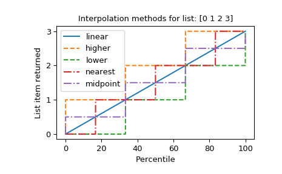

numpy¶
NumPy¶
- Provides
An array object of arbitrary homogeneous items
Fast mathematical operations over arrays
Linear Algebra, Fourier Transforms, Random Number Generation
How to use the documentation¶
Documentation is available in two forms: docstrings provided with the code, and a loose standing reference guide, available from the NumPy homepage.
We recommend exploring the docstrings using IPython, an advanced Python shell with TAB-completion and introspection capabilities. See below for further instructions.
The docstring examples assume that numpy has been imported as np:
>>> import numpy as np
Code snippets are indicated by three greater-than signs:
>>> x = 42
>>> x = x + 1
Use the built-in help function to view a function’s docstring:
>>> help(np.sort)
...
For some objects, np.info(obj) may provide additional help. This is
particularly true if you see the line “Help on ufunc object:” at the top
of the help() page. Ufuncs are implemented in C, not Python, for speed.
The native Python help() does not know how to view their help, but our
np.info() function does.
To search for documents containing a keyword, do:
>>> np.lookfor('keyword')
...
General-purpose documents like a glossary and help on the basic concepts
of numpy are available under the doc sub-module:
>>> from numpy import doc
>>> help(doc)
...
Available subpackages¶
- doc
Topical documentation on broadcasting, indexing, etc.
- lib
Basic functions used by several sub-packages.
- random
Core Random Tools
- linalg
Core Linear Algebra Tools
- fft
Core FFT routines
- polynomial
Polynomial tools
- testing
NumPy testing tools
- f2py
Fortran to Python Interface Generator.
- distutils
Enhancements to distutils with support for Fortran compilers support and more.
Utilities¶
- test
Run numpy unittests
- show_config
Show numpy build configuration
- dual
Overwrite certain functions with high-performance Scipy tools
- matlib
Make everything matrices.
- __version__
NumPy version string
Viewing documentation using IPython¶
Start IPython with the NumPy profile (ipython -p numpy), which will
import numpy under the alias np. Then, use the cpaste command to
paste examples into the shell. To see which functions are available in
numpy, type np.<TAB> (where <TAB> refers to the TAB key), or use
np.*cos*?<ENTER> (where <ENTER> refers to the ENTER key) to narrow
down the list. To view the docstring for a function, use
np.cos?<ENTER> (to view the docstring) and np.cos??<ENTER> (to view
the source code).
Copies vs. in-place operation¶
Most of the functions in numpy return a copy of the array argument
(e.g., np.sort). In-place versions of these functions are often
available as array methods, i.e. x = np.array([1,2,3]); x.sort().
Exceptions to this rule are documented.
Functions
|
Return the length of the first dimension of the input array. |
|
Test whether all array elements along a given axis evaluate to True. |
|
Returns True if two arrays are element-wise equal within a tolerance. |
|
Check if all elements of input array are true. |
|
Return the maximum of an array or maximum along an axis. |
|
Return the minimum of an array or minimum along an axis. |
|
Return the angle of the complex argument. |
|
Test whether any array element along a given axis evaluates to True. |
|
Append values to the end of an array. |
|
Apply a function to 1-D slices along the given axis. |
|
Apply a function repeatedly over multiple axes. |
|
Return evenly spaced values within a given interval. |
|
Returns the indices of the maximum values along an axis. |
|
Returns the indices of the minimum values along an axis. |
|
Perform an indirect partition along the given axis using the algorithm specified by the |
|
Returns the indices that would sort an array. |
|
Find the indices of array elements that are non-zero, grouped by element. |
|
Evenly round to the given number of decimals. |
|
Create an array. |
|
Return a string representation of an array. |
|
True if two arrays have the same shape and elements, False otherwise. |
|
Returns True if input arrays are shape consistent and all elements equal. |
|
Return the string representation of an array. |
|
Split an array into multiple sub-arrays. |
|
Return a string representation of the data in an array. |
|
Convert the input to an ndarray, but pass ndarray subclasses through. |
|
Convert the input to an array. |
|
Convert the input to an array, checking for NaNs or Infs. |
|
Return a contiguous array (ndim >= 1) in memory (C order). |
|
Return an array converted to a float type. |
|
Return an array (ndim >= 1) laid out in Fortran order in memory. |
|
Interpret the input as a matrix. |
|
Convert an array of size 1 to its scalar equivalent. |
|
Convert inputs to arrays with at least one dimension. |
|
View inputs as arrays with at least two dimensions. |
|
View inputs as arrays with at least three dimensions. |
|
Compute the weighted average along the specified axis. |
|
Return the Bartlett window. |
|
Return a string representation of a number in the given base system. |
|
Return the binary representation of the input number as a string. |
|
Count number of occurrences of each value in array of non-negative ints. |
|
Return the Blackman window. |
|
Assemble an nd-array from nested lists of blocks. |
|
Build a matrix object from a string, nested sequence, or array. |
|
Broadcast any number of arrays against each other. |
|
Broadcast an array to a new shape. |
|
Counts the number of valid days between |
|
First adjusts the date to fall on a valid day according to the |
|
Returns True if cast between data types can occur according to the casting rule. |
|
Construct an array from an index array and a set of arrays to choose from. |
|
Clip (limit) the values in an array. |
|
Stack 1-D arrays as columns into a 2-D array. |
|
Return a scalar type which is common to the input arrays. |
|
Return selected slices of an array along given axis. |
|
Join a sequence of arrays along an existing axis. |
|
Returns the discrete, linear convolution of two one-dimensional sequences. |
|
Return an array copy of the given object. |
|
Copies values from one array to another, broadcasting as necessary. |
|
Return Pearson product-moment correlation coefficients. |
|
Cross-correlation of two 1-dimensional sequences. |
|
Counts the number of non-zero values in the array |
|
Estimate a covariance matrix, given data and weights. |
|
Return the cross product of two (arrays of) vectors. |
|
Return the cumulative product of elements along a given axis. |
|
Return the cumulative product over the given axis. |
|
Return the cumulative sum of the elements along a given axis. |
|
Convert an array of datetimes into an array of strings. |
|
Get information about the step size of a date or time type. |
|
Return a new array with sub-arrays along an axis deleted. |
|
Extract a diagonal or construct a diagonal array. |
|
Return the indices to access the main diagonal of an array. |
|
Return the indices to access the main diagonal of an n-dimensional array. |
|
Create a two-dimensional array with the flattened input as a diagonal. |
|
Return specified diagonals. |
|
Calculate the n-th discrete difference along the given axis. |
|
Return the indices of the bins to which each value in input array belongs. |
|
Dot product of two arrays. |
|
Split array into multiple sub-arrays along the 3rd axis (depth). |
|
Stack arrays in sequence depth wise (along third axis). |
|
The differences between consecutive elements of an array. |
|
einsum(subscripts, *operands, out=None, dtype=None, order=’K’, |
|
Evaluates the lowest cost contraction order for an einsum expression by considering the creation of intermediate arrays. |
|
Return a new array of given shape and type, without initializing entries. |
|
Return a new array with the same shape and type as a given array. |
|
Expand the shape of an array. |
|
Return the elements of an array that satisfy some condition. |
|
Return a 2-D array with ones on the diagonal and zeros elsewhere. |
|
Fill the main diagonal of the given array of any dimensionality. |
|
Determine common type following standard coercion rules. |
|
Round to nearest integer towards zero. |
|
Return indices that are non-zero in the flattened version of a. |
|
Reverse the order of elements in an array along the given axis. |
|
Flip array in the left/right direction. |
|
Flip array in the up/down direction. |
|
Format a floating-point scalar as a decimal string in positional notation. |
|
Format a floating-point scalar as a decimal string in scientific notation. |
|
Interpret a buffer as a 1-dimensional array. |
|
Construct an array from data in a text or binary file. |
|
Construct an array by executing a function over each coordinate. |
|
Create a new 1-dimensional array from an iterable object. |
|
Takes an arbitrary Python function and returns a NumPy ufunc. |
|
Construct an array from a text file, using regular expression parsing. |
|
A new 1-D array initialized from text data in a string. |
|
Return a new array of given shape and type, filled with |
|
Return a full array with the same shape and type as a given array. |
|
Compute the future value. |
|
Load data from a text file, with missing values handled as specified. |
|
Return numbers spaced evenly on a log scale (a geometric progression). |
Return the current print options. |
|
Return the size of the buffer used in ufuncs. |
|
|
Get the current way of handling floating-point errors. |
Return the current callback function used on floating-point errors. |
|
Return the current object that defines floating-point error handling. |
|
|
Return the gradient of an N-dimensional array. |
|
Return the Hamming window. |
|
Return the Hanning window. |
|
Compute the histogram of a set of data. |
|
Compute the bi-dimensional histogram of two data samples. |
|
Function to calculate only the edges of the bins used by the |
|
Compute the multidimensional histogram of some data. |
|
Split an array into multiple sub-arrays horizontally (column-wise). |
|
Stack arrays in sequence horizontally (column wise). |
|
Modified Bessel function of the first kind, order 0. |
|
Return the identity array. |
|
Return the imaginary part of the complex argument. |
|
Test whether each element of a 1-D array is also present in a second array. |
|
Return an array representing the indices of a grid. |
|
Get help information for a function, class, or module. |
|
Inner product of two arrays. |
|
Insert values along the given axis before the given indices. |
|
One-dimensional linear interpolation. |
|
Find the intersection of two arrays. |
|
Compute the interest portion of a payment. |
|
Return the Internal Rate of Return (IRR). |
|
Calculates which of the given dates are valid days, and which are not. |
|
Returns a boolean array where two arrays are element-wise equal within a tolerance. |
|
Returns a bool array, where True if input element is complex. |
|
Check for a complex type or an array of complex numbers. |
|
Returns True if the array is Fortran contiguous but not C contiguous. |
|
Calculates |
|
Test element-wise for negative infinity, return result as bool array. |
|
Test element-wise for positive infinity, return result as bool array. |
|
Returns a bool array, where True if input element is real. |
|
Return True if x is a not complex type or an array of complex numbers. |
|
Returns True if the type of |
|
Determines whether the given object represents a scalar data-type. |
|
Determine if a class is a subclass of a second class. |
|
Returns True if first argument is a typecode lower/equal in type hierarchy. |
|
Determine if the first argument is a subclass of the second argument. |
|
Check whether or not an object can be iterated over. |
|
Construct an open mesh from multiple sequences. |
|
Return the Kaiser window. |
|
Kronecker product of two arrays. |
|
Perform an indirect stable sort using a sequence of keys. |
|
Return evenly spaced numbers over a specified interval. |
|
Load arrays or pickled objects from |
|
|
|
Load data from a text file. |
|
Return numbers spaced evenly on a log scale. |
|
Do a keyword search on docstrings. |
|
Return the indices to access (n, n) arrays, given a masking function. |
|
Interpret the input as a matrix. |
|
Return the maximum of an array or maximum along an axis. |
|
Determine if two arrays might share memory |
|
Compute the arithmetic mean along the specified axis. |
|
Compute the median along the specified axis. |
|
Return coordinate matrices from coordinate vectors. |
|
Return the minimum of an array or minimum along an axis. |
For scalar |
|
|
Return the character for the minimum-size type to which given types can be safely cast. |
|
Modified internal rate of return. |
|
Move axes of an array to new positions. |
|
Return a copy of an array sorted along the first axis. |
|
Replace NaN with zero and infinity with large finite numbers. |
|
Return the indices of the maximum values in the specified axis ignoring NaNs. |
|
Return the indices of the minimum values in the specified axis ignoring NaNs. |
|
Return the cumulative product of array elements over a given axis treating Not a Numbers (NaNs) as one. |
|
Return the cumulative sum of array elements over a given axis treating Not a Numbers (NaNs) as zero. |
|
Return the maximum of an array or maximum along an axis, ignoring any NaNs. |
|
Compute the arithmetic mean along the specified axis, ignoring NaNs. |
|
Compute the median along the specified axis, while ignoring NaNs. |
|
Return minimum of an array or minimum along an axis, ignoring any NaNs. |
|
Compute the qth percentile of the data along the specified axis, while ignoring nan values. |
|
Return the product of array elements over a given axis treating Not a Numbers (NaNs) as ones. |
|
Compute the qth quantile of the data along the specified axis, while ignoring nan values. |
|
Compute the standard deviation along the specified axis, while ignoring NaNs. |
|
Return the sum of array elements over a given axis treating Not a Numbers (NaNs) as zero. |
|
Compute the variance along the specified axis, while ignoring NaNs. |
|
Return the number of dimensions of an array. |
Create nditers for use in nested loops |
|
|
Return the indices of the elements that are non-zero. |
|
Compute the number of periodic payments. |
|
Returns the NPV (Net Present Value) of a cash flow series. |
|
Return the scalar dtype or NumPy equivalent of Python type of an object. |
|
Return a new array of given shape and type, filled with ones. |
|
Return an array of ones with the same shape and type as a given array. |
|
Compute the outer product of two vectors. |
|
Packs the elements of a binary-valued array into bits in a uint8 array. |
|
Pads an array. |
|
Return a partitioned copy of an array. |
|
Compute the q-th percentile of the data along the specified axis. |
|
Evaluate a piecewise-defined function. |
|
Change elements of an array based on conditional and input values. |
|
Compute the payment against loan principal plus interest. |
|
Find the coefficients of a polynomial with the given sequence of roots. |
|
Find the sum of two polynomials. |
|
Return the derivative of the specified order of a polynomial. |
|
Returns the quotient and remainder of polynomial division. |
|
Least squares polynomial fit. |
|
Return an antiderivative (indefinite integral) of a polynomial. |
|
Find the product of two polynomials. |
|
Difference (subtraction) of two polynomials. |
|
Evaluate a polynomial at specific values. |
|
Compute the payment against loan principal. |
|
Context manager for setting print options. |
|
Return the product of array elements over a given axis. |
|
Return the product of array elements over a given axis. |
|
Returns the data type with the smallest size and smallest scalar kind to which both |
|
Range of values (maximum - minimum) along an axis. |
|
Replaces specified elements of an array with given values. |
|
Put values into the destination array by matching 1d index and data slices. |
|
Changes elements of an array based on conditional and input values. |
|
Compute the present value. |
|
Compute the q-th quantile of the data along the specified axis. |
|
Return the number of dimensions of an array. |
|
Compute the rate of interest per period. |
|
Return a contiguous flattened array. |
|
Converts a tuple of index arrays into an array of flat indices, applying boundary modes to the multi-index. |
|
Return the real part of the complex argument. |
|
If complex input returns a real array if complex parts are close to zero. |
|
Repeat elements of an array. |
|
Return an ndarray of the provided type that satisfies requirements. |
|
Gives a new shape to an array without changing its data. |
|
Return a new array with the specified shape. |
|
Returns the type that results from applying the NumPy type promotion rules to the arguments. |
|
Roll array elements along a given axis. |
|
Roll the specified axis backwards, until it lies in a given position. |
|
Return the roots of a polynomial with coefficients given in p. |
|
Rotate an array by 90 degrees in the plane specified by axes. |
|
Round an array to the given number of decimals. |
|
Round an array to the given number of decimals. |
|
Stack arrays in sequence vertically (row wise). |
|
Save an array to a binary file in NumPy |
|
Save an array to a text file. |
|
Save several arrays into a single file in uncompressed |
|
Save several arrays into a single file in compressed |
|
Return the string representation of a scalar dtype. |
|
Find indices where elements should be inserted to maintain order. |
|
Return an array drawn from elements in choicelist, depending on conditions. |
|
Set numerical operators for array objects. |
|
Set printing options. |
|
Set the size of the buffer used in ufuncs. |
|
Find the set difference of two arrays. |
|
Set how floating-point errors are handled. |
|
Set the floating-point error callback function or log object. |
|
Set the object that defines floating-point error handling. |
|
Find the set exclusive-or of two arrays. |
|
Return the shape of an array. |
|
Determine if two arrays share memory |
|
Return the sinc function. |
|
Return the number of elements along a given axis. |
|
Check whether some values are true. |
|
Return a sorted copy of an array. |
|
Sort a complex array using the real part first, then the imaginary part. |
|
Print or write to a file the source code for a NumPy object. |
|
Split an array into multiple sub-arrays. |
|
Remove single-dimensional entries from the shape of an array. |
|
Join a sequence of arrays along a new axis. |
|
Compute the standard deviation along the specified axis. |
|
Sum of array elements over a given axis. |
|
Interchange two axes of an array. |
|
Take elements from an array along an axis. |
|
Take values from the input array by matching 1d index and data slices. |
|
Compute tensor dot product along specified axes for arrays >= 1-D. |
|
Construct an array by repeating A the number of times given by reps. |
|
Return the sum along diagonals of the array. |
|
Permute the dimensions of an array. |
|
Integrate along the given axis using the composite trapezoidal rule. |
|
An array with ones at and below the given diagonal and zeros elsewhere. |
|
Lower triangle of an array. |
|
Return the indices for the lower-triangle of an (n, m) array. |
|
Return the indices for the lower-triangle of arr. |
|
Trim the leading and/or trailing zeros from a 1-D array or sequence. |
|
Upper triangle of an array. |
|
Return the indices for the upper-triangle of an (n, m) array. |
|
Return the indices for the upper-triangle of arr. |
|
Return a description for the given data type code. |
|
Find the union of two arrays. |
|
Find the unique elements of an array. |
|
Unpacks elements of a uint8 array into a binary-valued output array. |
|
Converts a flat index or array of flat indices into a tuple of coordinate arrays. |
|
Unwrap by changing deltas between values to 2*pi complement. |
|
Generate a Vandermonde matrix. |
|
Compute the variance along the specified axis. |
|
Return the dot product of two vectors. |
|
Split an array into multiple sub-arrays vertically (row-wise). |
|
Stack arrays in sequence vertically (row wise). |
|
Return elements chosen from |
|
Return a new array of given shape and type, filled with zeros. |
|
Return an array of zeros with the same shape and type as a given array. |
Classes
|
A generic data source file (file, http, ftp, …). |
|
Diagnosing machine parameters. |
alias of |
|
Boolean type (True or False), stored as a byte. |
|
Produce an object that mimics broadcasting. |
|
|
A business day calendar object that efficiently stores information defining valid days for the busday family of functions. |
alias of |
|
alias of |
|
alias of |
|
alias of |
|
Abstract base class of all character string scalar types. |
|
chararray(shape, itemsize=1, unicode=False, buffer=None, offset=0, |
|
alias of |
|
alias of |
|
Complex number type composed of two double-precision floating-point numbers, compatible with Python |
|
Complex number type composed of two single-precision floating-point numbers. |
|
alias of |
|
Abstract base class of all complex number scalar types that are made up of floating-point numbers. |
|
alias of |
|
alias of |
|
|
Create a data type object. |
|
Context manager for floating-point error handling. |
|
Machine limits for floating point types. |
Flat iterator object to iterate over arrays. |
|
Abstract base class of all scalar types without predefined length. |
|
Half-precision floating-point number type. |
|
Single-precision floating-point number type, compatible with C |
|
Double-precision floating-point number type, compatible with Python |
|
alias of |
|
Abstract base class of all floating-point scalar types. |
|
|
Class to convert formats, names, titles description to a dtype. |
Base class for numpy scalar types. |
|
alias of |
|
|
Machine limits for integer types. |
Abstract base class of all numeric scalar types with a (potentially) inexact representation of the values in its range, such as floating-point numbers. |
|
alias of |
|
Signed integer type, compatible with C |
|
Signed integer type, compatible with Python |
|
Signed integer type, compatible with C |
|
Signed integer type, compatible with C |
|
alias of |
|
alias of |
|
Abstract base class of all integer scalar types. |
|
alias of |
|
alias of |
|
alias of |
|
alias of |
|
alias of |
|
|
Note It is no longer recommended to use this class, even for linear |
Create a memory-map to an array stored in a binary file on disk. |
|
ndarray(shape, dtype=float, buffer=None, offset=0, |
|
|
Multidimensional index iterator. |
|
An N-dimensional iterator object to index arrays. |
Efficient multi-dimensional iterator object to iterate over arrays. |
|
Abstract base class of all numeric scalar types. |
|
alias of |
|
Any Python object. |
|
|
A one-dimensional polynomial class. |
Construct an ndarray that allows field access using attributes. |
|
A data-type scalar that allows field access as attribute lookup. |
|
alias of |
|
Abstract base class of all signed integer scalar types. |
|
alias of |
|
alias of |
|
alias of |
|
alias of |
|
alias of |
|
Functions that operate element by element on whole arrays. |
|
alias of |
|
alias of |
|
Unsigned integer type, compatible with C |
|
Unsigned integer type, compatible with C |
|
Signed integer type, compatible with C |
|
Unsigned integer type, compatible with C |
|
alias of |
|
alias of |
|
alias of |
|
alias of |
|
Abstract base class of all unsigned integer scalar types. |
|
alias of |
|
|
vectorize(pyfunc, otypes=None, doc=None, excluded=None, cache=False, |
alias of |
Exceptions
|
Axis supplied was invalid. |
The warning raised when casting a complex dtype to a real dtype. |
|
Module deprecation warning. |
|
Issued by |
|
Visible deprecation warning. |
-
exception
numpy.ModuleDeprecationWarning[source]¶ Module deprecation warning.
The nose tester turns ordinary Deprecation warnings into test failures. That makes it hard to deprecate whole modules, because they get imported by default. So this is a special Deprecation warning that the nose tester will let pass without making tests fail.
-
exception
numpy.VisibleDeprecationWarning[source]¶ Visible deprecation warning.
By default, python will not show deprecation warnings, so this class can be used when a very visible warning is helpful, for example because the usage is most likely a user bug.
-
class
numpy.memmap[source]¶ Create a memory-map to an array stored in a binary file on disk.
Memory-mapped files are used for accessing small segments of large files on disk, without reading the entire file into memory. NumPy’s memmap’s are array-like objects. This differs from Python’s
mmapmodule, which uses file-like objects.This subclass of ndarray has some unpleasant interactions with some operations, because it doesn’t quite fit properly as a subclass. An alternative to using this subclass is to create the
mmapobject yourself, then create an ndarray with ndarray.__new__ directly, passing the object created in its ‘buffer=’ parameter.This class may at some point be turned into a factory function which returns a view into an mmap buffer.
Delete the memmap instance to close the memmap file.
- Parameters
filename (str, file-like object, or pathlib.Path instance) – The file name or file object to be used as the array data buffer.
dtype (data-type, optional) – The data-type used to interpret the file contents. Default is
uint8.mode ({'r+', 'r', 'w+', 'c'}, optional) –
The file is opened in this mode:
’r’
Open existing file for reading only.
’r+’
Open existing file for reading and writing.
’w+’
Create or overwrite existing file for reading and writing.
’c’
Copy-on-write: assignments affect data in memory, but changes are not saved to disk. The file on disk is read-only.
Default is ‘r+’.
offset (int, optional) – In the file, array data starts at this offset. Since
offsetis measured in bytes, it should normally be a multiple of the byte-size ofdtype. Whenmode != 'r', even positive offsets beyond end of file are valid; The file will be extended to accommodate the additional data. By default,memmapwill start at the beginning of the file, even iffilenameis a file pointerfpandfp.tell() != 0.shape (tuple, optional) – The desired shape of the array. If
mode == 'r'and the number of remaining bytes afteroffsetis not a multiple of the byte-size ofdtype, you must specifyshape. By default, the returned array will be 1-D with the number of elements determined by file size and data-type.order ({'C', 'F'}, optional) – Specify the order of the ndarray memory layout: row-major, C-style or column-major, Fortran-style. This only has an effect if the shape is greater than 1-D. The default order is ‘C’.
-
flush()[source]¶ Flush any changes in memory to file on disk. When you delete a memmap object, flush is called first to write changes to disk before removing the object.
See also
lib.format.open_memmapCreate or load a memory-mapped
.npyfile.
Notes
The memmap object can be used anywhere an ndarray is accepted. Given a memmap
fp,isinstance(fp, numpy.ndarray)returnsTrue.Memory-mapped files cannot be larger than 2GB on 32-bit systems.
When a memmap causes a file to be created or extended beyond its current size in the filesystem, the contents of the new part are unspecified. On systems with POSIX filesystem semantics, the extended part will be filled with zero bytes.
Examples
>>> data = np.arange(12, dtype='float32') >>> data.resize((3,4))
This example uses a temporary file so that doctest doesn’t write files to your directory. You would use a ‘normal’ filename.
>>> from tempfile import mkdtemp >>> import os.path as path >>> filename = path.join(mkdtemp(), 'newfile.dat')
Create a memmap with dtype and shape that matches our data:
>>> fp = np.memmap(filename, dtype='float32', mode='w+', shape=(3,4)) >>> fp memmap([[ 0., 0., 0., 0.], [ 0., 0., 0., 0.], [ 0., 0., 0., 0.]], dtype=float32)
Write data to memmap array:
>>> fp[:] = data[:] >>> fp memmap([[ 0., 1., 2., 3.], [ 4., 5., 6., 7.], [ 8., 9., 10., 11.]], dtype=float32)
>>> fp.filename == path.abspath(filename) True
Deletion flushes memory changes to disk before removing the object:
>>> del fp
Load the memmap and verify data was stored:
>>> newfp = np.memmap(filename, dtype='float32', mode='r', shape=(3,4)) >>> newfp memmap([[ 0., 1., 2., 3.], [ 4., 5., 6., 7.], [ 8., 9., 10., 11.]], dtype=float32)
Read-only memmap:
>>> fpr = np.memmap(filename, dtype='float32', mode='r', shape=(3,4)) >>> fpr.flags.writeable False
Copy-on-write memmap:
>>> fpc = np.memmap(filename, dtype='float32', mode='c', shape=(3,4)) >>> fpc.flags.writeable True
It’s possible to assign to copy-on-write array, but values are only written into the memory copy of the array, and not written to disk:
>>> fpc memmap([[ 0., 1., 2., 3.], [ 4., 5., 6., 7.], [ 8., 9., 10., 11.]], dtype=float32) >>> fpc[0,:] = 0 >>> fpc memmap([[ 0., 0., 0., 0.], [ 4., 5., 6., 7.], [ 8., 9., 10., 11.]], dtype=float32)
File on disk is unchanged:
>>> fpr memmap([[ 0., 1., 2., 3.], [ 4., 5., 6., 7.], [ 8., 9., 10., 11.]], dtype=float32)
Offset into a memmap:
>>> fpo = np.memmap(filename, dtype='float32', mode='r', offset=16) >>> fpo memmap([ 4., 5., 6., 7., 8., 9., 10., 11.], dtype=float32)
-
class
numpy.ndarray[source]¶ - ndarray(shape, dtype=float, buffer=None, offset=0,
strides=None, order=None)
An array object represents a multidimensional, homogeneous array of fixed-size items. An associated data-type object describes the format of each element in the array (its byte-order, how many bytes it occupies in memory, whether it is an integer, a floating point number, or something else, etc.)
Arrays should be constructed using
array,zerosorempty(refer to the See Also section below). The parameters given here refer to a low-level method (ndarray(...)) for instantiating an array.For more information, refer to the
numpymodule and examine the methods and attributes of an array.- Parameters
the __new__ method; see Notes below) ((for) –
shape (tuple of ints) – Shape of created array.
dtype (data-type, optional) – Any object that can be interpreted as a numpy data type.
buffer (object exposing buffer interface, optional) – Used to fill the array with data.
offset (int, optional) – Offset of array data in buffer.
strides (tuple of ints, optional) – Strides of data in memory.
order ({'C', 'F'}, optional) – Row-major (C-style) or column-major (Fortran-style) order.
-
flags[source]¶ Dictionary containing information related to memory use, e.g., ‘C_CONTIGUOUS’, ‘OWNDATA’, ‘WRITEABLE’, etc.
- Type
-
flat[source]¶ Flattened version of the array as an iterator. The iterator allows assignments, e.g.,
x.flat = 3(Seendarray.flatfor assignment examples; TODO).- Type
numpy.flatiter object
-
nbytes[source]¶ The total number of bytes required to store the array data, i.e.,
itemsize * size.- Type
-
strides[source]¶ The step-size required to move from one element to the next in memory. For example, a contiguous
(3, 4)array of typeint16in C-order has strides(8, 2). This implies that to move from element to element in memory requires jumps of 2 bytes. To move from row-to-row, one needs to jump 8 bytes at a time (2 * 4).- Type
tuple of ints
-
ctypes[source]¶ Class containing properties of the array needed for interaction with ctypes.
- Type
ctypes object
-
base[source]¶ If the array is a view into another array, that array is its
base(unless that array is also a view). Thebasearray is where the array data is actually stored.- Type
See also
Notes
There are two modes of creating an array using
__new__:If
bufferis None, then onlyshape,dtype, andorderare used.If
bufferis an object exposing the buffer interface, then all keywords are interpreted.
No
__init__method is needed because the array is fully initialized after the__new__method.Examples
These examples illustrate the low-level
ndarrayconstructor. Refer to theSee Alsosection above for easier ways of constructing an ndarray.First mode,
bufferis None:>>> np.ndarray(shape=(2,2), dtype=float, order='F') array([[ -1.13698227e+002, 4.25087011e-303], [ 2.88528414e-306, 3.27025015e-309]]) #random
Second mode:
>>> np.ndarray((2,), buffer=np.array([1,2,3]), ... offset=np.int_().itemsize, ... dtype=int) # offset = 1*itemsize, i.e. skip first element array([2, 3])
-
T[source] Same as self.transpose(), except that self is returned if self.ndim < 2.
Examples
>>> x = np.array([[1.,2.],[3.,4.]]) >>> x array([[ 1., 2.], [ 3., 4.]]) >>> x.T array([[ 1., 3.], [ 2., 4.]]) >>> x = np.array([1.,2.,3.,4.]) >>> x array([ 1., 2., 3., 4.]) >>> x.T array([ 1., 2., 3., 4.])
-
all(axis=None, out=None, keepdims=False)[source]¶ Returns True if all elements evaluate to True.
Refer to
numpy.allfor full documentation.See also
numpy.all()equivalent function
-
any(axis=None, out=None, keepdims=False)[source]¶ Returns True if any of the elements of
aevaluate to True.Refer to
numpy.anyfor full documentation.See also
numpy.any()equivalent function
-
argmax(axis=None, out=None)[source]¶ Return indices of the maximum values along the given axis.
Refer to
numpy.argmaxfor full documentation.See also
numpy.argmax()equivalent function
-
argmin(axis=None, out=None)[source]¶ Return indices of the minimum values along the given axis of
a.Refer to
numpy.argminfor detailed documentation.See also
numpy.argmin()equivalent function
-
argpartition(kth, axis=-1, kind='introselect', order=None)[source]¶ Returns the indices that would partition this array.
Refer to
numpy.argpartitionfor full documentation.New in version 1.8.0.
See also
numpy.argpartition()equivalent function
-
argsort(axis=-1, kind='quicksort', order=None)[source]¶ Returns the indices that would sort this array.
Refer to
numpy.argsortfor full documentation.See also
numpy.argsort()equivalent function
-
astype(dtype, order='K', casting='unsafe', subok=True, copy=True)[source]¶ Copy of the array, cast to a specified type.
- Parameters
dtype (str or dtype) – Typecode or data-type to which the array is cast.
order ({'C', 'F', 'A', 'K'}, optional) – Controls the memory layout order of the result. ‘C’ means C order, ‘F’ means Fortran order, ‘A’ means ‘F’ order if all the arrays are Fortran contiguous, ‘C’ order otherwise, and ‘K’ means as close to the order the array elements appear in memory as possible. Default is ‘K’.
casting ({'no', 'equiv', 'safe', 'same_kind', 'unsafe'}, optional) –
Controls what kind of data casting may occur. Defaults to ‘unsafe’ for backwards compatibility.
’no’ means the data types should not be cast at all.
’equiv’ means only byte-order changes are allowed.
’safe’ means only casts which can preserve values are allowed.
’same_kind’ means only safe casts or casts within a kind, like float64 to float32, are allowed.
’unsafe’ means any data conversions may be done.
subok (bool, optional) – If True, then sub-classes will be passed-through (default), otherwise the returned array will be forced to be a base-class array.
copy (bool, optional) – By default, astype always returns a newly allocated array. If this is set to false, and the
dtype,order, andsubokrequirements are satisfied, the input array is returned instead of a copy.
- Returns
arr_t – Unless
copyis False and the other conditions for returning the input array are satisfied (see description forcopyinput parameter),arr_tis a new array of the same shape as the input array, with dtype, order given bydtype,order.- Return type
Notes
Starting in NumPy 1.9, astype method now returns an error if the string dtype to cast to is not long enough in ‘safe’ casting mode to hold the max value of integer/float array that is being casted. Previously the casting was allowed even if the result was truncated.
- Raises
ComplexWarning – When casting from complex to float or int. To avoid this, one should use
a.real.astype(t).
Examples
>>> x = np.array([1, 2, 2.5]) >>> x array([ 1. , 2. , 2.5])
>>> x.astype(int) array([1, 2, 2])
-
base[source] Base object if memory is from some other object.
Examples
The base of an array that owns its memory is None:
>>> x = np.array([1,2,3,4]) >>> x.base is None True
Slicing creates a view, whose memory is shared with x:
>>> y = x[2:] >>> y.base is x True
-
byteswap(inplace=False)[source]¶ Swap the bytes of the array elements
Toggle between low-endian and big-endian data representation by returning a byteswapped array, optionally swapped in-place.
- Parameters
inplace (bool, optional) – If
True, swap bytes in-place, default isFalse.- Returns
out – The byteswapped array. If
inplaceisTrue, this is a view to self.- Return type
Examples
>>> A = np.array([1, 256, 8755], dtype=np.int16) >>> map(hex, A) ['0x1', '0x100', '0x2233'] >>> A.byteswap(inplace=True) array([ 256, 1, 13090], dtype=int16) >>> map(hex, A) ['0x100', '0x1', '0x3322']
Arrays of strings are not swapped
>>> A = np.array(['ceg', 'fac']) >>> A.byteswap() array(['ceg', 'fac'], dtype='|S3')
-
choose(choices, out=None, mode='raise')[source]¶ Use an index array to construct a new array from a set of choices.
Refer to
numpy.choosefor full documentation.See also
numpy.choose()equivalent function
-
clip(min=None, max=None, out=None)[source]¶ Return an array whose values are limited to
[min, max]. One of max or min must be given.Refer to
numpy.clipfor full documentation.See also
numpy.clip()equivalent function
-
compress(condition, axis=None, out=None)[source]¶ Return selected slices of this array along given axis.
Refer to
numpy.compressfor full documentation.See also
numpy.compress()equivalent function
-
conj()[source]¶ Complex-conjugate all elements.
Refer to
numpy.conjugatefor full documentation.See also
numpy.conjugate()equivalent function
-
conjugate()[source]¶ Return the complex conjugate, element-wise.
Refer to
numpy.conjugatefor full documentation.See also
numpy.conjugate()equivalent function
-
copy(order='C')[source]¶ Return a copy of the array.
- Parameters
order ({'C', 'F', 'A', 'K'}, optional) – Controls the memory layout of the copy. ‘C’ means C-order, ‘F’ means F-order, ‘A’ means ‘F’ if
ais Fortran contiguous, ‘C’ otherwise. ‘K’ means match the layout ofaas closely as possible. (Note that this function andnumpy.copy()are very similar, but have different default values for their order= arguments.)
See also
Examples
>>> x = np.array([[1,2,3],[4,5,6]], order='F')
>>> y = x.copy()
>>> x.fill(0)
>>> x array([[0, 0, 0], [0, 0, 0]])
>>> y array([[1, 2, 3], [4, 5, 6]])
>>> y.flags['C_CONTIGUOUS'] True
-
ctypes[source] An object to simplify the interaction of the array with the ctypes module.
This attribute creates an object that makes it easier to use arrays when calling shared libraries with the ctypes module. The returned object has, among others, data, shape, and strides attributes (see Notes below) which themselves return ctypes objects that can be used as arguments to a shared library.
- Parameters
None –
- Returns
c – Possessing attributes data, shape, strides, etc.
- Return type
Python object
See also
numpy.ctypeslibNotes
Below are the public attributes of this object which were documented in “Guide to NumPy” (we have omitted undocumented public attributes, as well as documented private attributes):
-
_ctypes.data[source]¶ A pointer to the memory area of the array as a Python integer. This memory area may contain data that is not aligned, or not in correct byte-order. The memory area may not even be writeable. The array flags and data-type of this array should be respected when passing this attribute to arbitrary C-code to avoid trouble that can include Python crashing. User Beware! The value of this attribute is exactly the same as
self._array_interface_['data'][0].Note that unlike
data_as, a reference will not be kept to the array: code likectypes.c_void_p((a + b).ctypes.data)will result in a pointer to a deallocated array, and should be spelt(a + b).ctypes.data_as(ctypes.c_void_p)
-
_ctypes.shape[source]¶ A ctypes array of length self.ndim where the basetype is the C-integer corresponding to
dtype('p')on this platform. This base-type could bectypes.c_int,ctypes.c_long, orctypes.c_longlongdepending on the platform. The c_intp type is defined accordingly innumpy.ctypeslib. The ctypes array contains the shape of the underlying array.- Type
(c_intp*self.ndim)
-
_ctypes.strides[source]¶ A ctypes array of length self.ndim where the basetype is the same as for the shape attribute. This ctypes array contains the strides information from the underlying array. This strides information is important for showing how many bytes must be jumped to get to the next element in the array.
- Type
(c_intp*self.ndim)
-
_ctypes.data_as(obj)[source]¶ Return the data pointer cast to a particular c-types object. For example, calling
self._as_parameter_is equivalent toself.data_as(ctypes.c_void_p). Perhaps you want to use the data as a pointer to a ctypes array of floating-point data:self.data_as(ctypes.POINTER(ctypes.c_double)).The returned pointer will keep a reference to the array.
-
_ctypes.shape_as(obj)[source]¶ Return the shape tuple as an array of some other c-types type. For example:
self.shape_as(ctypes.c_short).
-
_ctypes.strides_as(obj)[source]¶ Return the strides tuple as an array of some other c-types type. For example:
self.strides_as(ctypes.c_longlong).
If the ctypes module is not available, then the ctypes attribute of array objects still returns something useful, but ctypes objects are not returned and errors may be raised instead. In particular, the object will still have the as parameter attribute which will return an integer equal to the data attribute.
Examples
>>> import ctypes >>> x array([[0, 1], [2, 3]]) >>> x.ctypes.data 30439712 >>> x.ctypes.data_as(ctypes.POINTER(ctypes.c_long)) <ctypes.LP_c_long object at 0x01F01300> >>> x.ctypes.data_as(ctypes.POINTER(ctypes.c_long)).contents c_long(0) >>> x.ctypes.data_as(ctypes.POINTER(ctypes.c_longlong)).contents c_longlong(4294967296L) >>> x.ctypes.shape <numpy.core._internal.c_long_Array_2 object at 0x01FFD580> >>> x.ctypes.shape_as(ctypes.c_long) <numpy.core._internal.c_long_Array_2 object at 0x01FCE620> >>> x.ctypes.strides <numpy.core._internal.c_long_Array_2 object at 0x01FCE620> >>> x.ctypes.strides_as(ctypes.c_longlong) <numpy.core._internal.c_longlong_Array_2 object at 0x01F01300>
-
cumprod(axis=None, dtype=None, out=None)[source]¶ Return the cumulative product of the elements along the given axis.
Refer to
numpy.cumprodfor full documentation.See also
numpy.cumprod()equivalent function
-
cumsum(axis=None, dtype=None, out=None)[source]¶ Return the cumulative sum of the elements along the given axis.
Refer to
numpy.cumsumfor full documentation.See also
numpy.cumsum()equivalent function
-
data[source] Python buffer object pointing to the start of the array’s data.
-
diagonal(offset=0, axis1=0, axis2=1)[source]¶ Return specified diagonals. In NumPy 1.9 the returned array is a read-only view instead of a copy as in previous NumPy versions. In a future version the read-only restriction will be removed.
Refer to
numpy.diagonal()for full documentation.See also
numpy.diagonal()equivalent function
-
dot(b, out=None)[source]¶ Dot product of two arrays.
Refer to
numpy.dotfor full documentation.See also
numpy.dot()equivalent function
Examples
>>> a = np.eye(2) >>> b = np.ones((2, 2)) * 2 >>> a.dot(b) array([[ 2., 2.], [ 2., 2.]])
This array method can be conveniently chained:
>>> a.dot(b).dot(b) array([[ 8., 8.], [ 8., 8.]])
-
dtype[source] Data-type of the array’s elements.
- Parameters
None –
- Returns
d
- Return type
numpy dtype object
See also
Examples
>>> x array([[0, 1], [2, 3]]) >>> x.dtype dtype('int32') >>> type(x.dtype) <type 'numpy.dtype'>
-
dump(file)[source]¶ Dump a pickle of the array to the specified file. The array can be read back with pickle.load or numpy.load.
- Parameters
file (str) – A string naming the dump file.
-
dumps()[source]¶ Returns the pickle of the array as a string. pickle.loads or numpy.loads will convert the string back to an array.
- Parameters
None –
-
fill(value)[source]¶ Fill the array with a scalar value.
- Parameters
value (scalar) – All elements of
awill be assigned this value.
Examples
>>> a = np.array([1, 2]) >>> a.fill(0) >>> a array([0, 0]) >>> a = np.empty(2) >>> a.fill(1) >>> a array([ 1., 1.])
-
flags[source] Information about the memory layout of the array.
-
WRITEABLE(W)[source]¶ The data area can be written to. Setting this to False locks the data, making it read-only. A view (slice, etc.) inherits WRITEABLE from its base array at creation time, but a view of a writeable array may be subsequently locked while the base array remains writeable. (The opposite is not true, in that a view of a locked array may not be made writeable. However, currently, locking a base object does not lock any views that already reference it, so under that circumstance it is possible to alter the contents of a locked array via a previously created writeable view onto it.) Attempting to change a non-writeable array raises a RuntimeError exception.
-
WRITEBACKIFCOPY(X)[source]¶ This array is a copy of some other array. The C-API function PyArray_ResolveWritebackIfCopy must be called before deallocating to the base array will be updated with the contents of this array.
-
UPDATEIFCOPY(U)[source]¶ (Deprecated, use WRITEBACKIFCOPY) This array is a copy of some other array. When this array is deallocated, the base array will be updated with the contents of this array.
Notes
The
flagsobject can be accessed dictionary-like (as ina.flags['WRITEABLE']), or by using lowercased attribute names (as ina.flags.writeable). Short flag names are only supported in dictionary access.Only the WRITEBACKIFCOPY, UPDATEIFCOPY, WRITEABLE, and ALIGNED flags can be changed by the user, via direct assignment to the attribute or dictionary entry, or by calling
ndarray.setflags.The array flags cannot be set arbitrarily:
UPDATEIFCOPY can only be set
False.WRITEBACKIFCOPY can only be set
False.ALIGNED can only be set
Trueif the data is truly aligned.WRITEABLE can only be set
Trueif the array owns its own memory or the ultimate owner of the memory exposes a writeable buffer interface or is a string.
Arrays can be both C-style and Fortran-style contiguous simultaneously. This is clear for 1-dimensional arrays, but can also be true for higher dimensional arrays.
Even for contiguous arrays a stride for a given dimension
arr.strides[dim]may be arbitrary ifarr.shape[dim] == 1or the array has no elements. It does not generally hold thatself.strides[-1] == self.itemsizefor C-style contiguous arrays orself.strides[0] == self.itemsizefor Fortran-style contiguous arrays is true.-
-
flat[source] A 1-D iterator over the array.
This is a
numpy.flatiterinstance, which acts similarly to, but is not a subclass of, Python’s built-in iterator object.Examples
>>> x = np.arange(1, 7).reshape(2, 3) >>> x array([[1, 2, 3], [4, 5, 6]]) >>> x.flat[3] 4 >>> x.T array([[1, 4], [2, 5], [3, 6]]) >>> x.T.flat[3] 5 >>> type(x.flat) <type 'numpy.flatiter'>
An assignment example:
>>> x.flat = 3; x array([[3, 3, 3], [3, 3, 3]]) >>> x.flat[[1,4]] = 1; x array([[3, 1, 3], [3, 1, 3]])
-
flatten(order='C')[source]¶ Return a copy of the array collapsed into one dimension.
- Parameters
order ({'C', 'F', 'A', 'K'}, optional) – ‘C’ means to flatten in row-major (C-style) order. ‘F’ means to flatten in column-major (Fortran- style) order. ‘A’ means to flatten in column-major order if
ais Fortran contiguous in memory, row-major order otherwise. ‘K’ means to flattenain the order the elements occur in memory. The default is ‘C’.- Returns
y – A copy of the input array, flattened to one dimension.
- Return type
Examples
>>> a = np.array([[1,2], [3,4]]) >>> a.flatten() array([1, 2, 3, 4]) >>> a.flatten('F') array([1, 3, 2, 4])
-
getfield(dtype, offset=0)[source]¶ Returns a field of the given array as a certain type.
A field is a view of the array data with a given data-type. The values in the view are determined by the given type and the offset into the current array in bytes. The offset needs to be such that the view dtype fits in the array dtype; for example an array of dtype complex128 has 16-byte elements. If taking a view with a 32-bit integer (4 bytes), the offset needs to be between 0 and 12 bytes.
- Parameters
Examples
>>> x = np.diag([1.+1.j]*2) >>> x[1, 1] = 2 + 4.j >>> x array([[ 1.+1.j, 0.+0.j], [ 0.+0.j, 2.+4.j]]) >>> x.getfield(np.float64) array([[ 1., 0.], [ 0., 2.]])
By choosing an offset of 8 bytes we can select the complex part of the array for our view:
>>> x.getfield(np.float64, offset=8) array([[ 1., 0.], [ 0., 4.]])
-
imag[source] The imaginary part of the array.
Examples
>>> x = np.sqrt([1+0j, 0+1j]) >>> x.imag array([ 0. , 0.70710678]) >>> x.imag.dtype dtype('float64')
-
item(*args)[source]¶ Copy an element of an array to a standard Python scalar and return it.
- Parameters
*args (Arguments (variable number and type)) –
none: in this case, the method only works for arrays with one element (
a.size == 1), which element is copied into a standard Python scalar object and returned.int_type: this argument is interpreted as a flat index into the array, specifying which element to copy and return.
tuple of int_types: functions as does a single int_type argument, except that the argument is interpreted as an nd-index into the array.
- Returns
z – A copy of the specified element of the array as a suitable Python scalar
- Return type
Standard Python scalar object
Notes
When the data type of
ais longdouble or clongdouble, item() returns a scalar array object because there is no available Python scalar that would not lose information. Void arrays return a buffer object for item(), unless fields are defined, in which case a tuple is returned.itemis very similar to a[args], except, instead of an array scalar, a standard Python scalar is returned. This can be useful for speeding up access to elements of the array and doing arithmetic on elements of the array using Python’s optimized math.Examples
>>> x = np.random.randint(9, size=(3, 3)) >>> x array([[3, 1, 7], [2, 8, 3], [8, 5, 3]]) >>> x.item(3) 2 >>> x.item(7) 5 >>> x.item((0, 1)) 1 >>> x.item((2, 2)) 3
-
itemset(*args)[source]¶ Insert scalar into an array (scalar is cast to array’s dtype, if possible)
There must be at least 1 argument, and define the last argument as item. Then,
a.itemset(*args)is equivalent to but faster thana[args] = item. The item should be a scalar value andargsmust select a single item in the arraya.- Parameters
*args (Arguments) – If one argument: a scalar, only used in case
ais of size 1. If two arguments: the last argument is the value to be set and must be a scalar, the first argument specifies a single array element location. It is either an int or a tuple.
Notes
Compared to indexing syntax,
itemsetprovides some speed increase for placing a scalar into a particular location in anndarray, if you must do this. However, generally this is discouraged: among other problems, it complicates the appearance of the code. Also, when usingitemset(anditem) inside a loop, be sure to assign the methods to a local variable to avoid the attribute look-up at each loop iteration.Examples
>>> x = np.random.randint(9, size=(3, 3)) >>> x array([[3, 1, 7], [2, 8, 3], [8, 5, 3]]) >>> x.itemset(4, 0) >>> x.itemset((2, 2), 9) >>> x array([[3, 1, 7], [2, 0, 3], [8, 5, 9]])
-
itemsize[source] Length of one array element in bytes.
Examples
>>> x = np.array([1,2,3], dtype=np.float64) >>> x.itemsize 8 >>> x = np.array([1,2,3], dtype=np.complex128) >>> x.itemsize 16
-
max(axis=None, out=None, keepdims=False)[source]¶ Return the maximum along a given axis.
Refer to
numpy.amaxfor full documentation.See also
numpy.amax()equivalent function
-
mean(axis=None, dtype=None, out=None, keepdims=False)[source]¶ Returns the average of the array elements along given axis.
Refer to
numpy.meanfor full documentation.See also
numpy.mean()equivalent function
-
min(axis=None, out=None, keepdims=False)[source]¶ Return the minimum along a given axis.
Refer to
numpy.aminfor full documentation.See also
numpy.amin()equivalent function
-
nbytes[source] Total bytes consumed by the elements of the array.
Notes
Does not include memory consumed by non-element attributes of the array object.
Examples
>>> x = np.zeros((3,5,2), dtype=np.complex128) >>> x.nbytes 480 >>> np.prod(x.shape) * x.itemsize 480
-
ndim[source] Number of array dimensions.
Examples
>>> x = np.array([1, 2, 3]) >>> x.ndim 1 >>> y = np.zeros((2, 3, 4)) >>> y.ndim 3
-
newbyteorder(new_order='S')[source]¶ Return the array with the same data viewed with a different byte order.
Equivalent to:
arr.view(arr.dtype.newbytorder(new_order))
Changes are also made in all fields and sub-arrays of the array data type.
- Parameters
new_order (string, optional) –
Byte order to force; a value from the byte order specifications below.
new_ordercodes can be any of:’S’ - swap dtype from current to opposite endian
{‘<’, ‘L’} - little endian
{‘>’, ‘B’} - big endian
{‘=’, ‘N’} - native order
{‘|’, ‘I’} - ignore (no change to byte order)
The default value (‘S’) results in swapping the current byte order. The code does a case-insensitive check on the first letter of
new_orderfor the alternatives above. For example, any of ‘B’ or ‘b’ or ‘biggish’ are valid to specify big-endian.- Returns
new_arr – New array object with the dtype reflecting given change to the byte order.
- Return type
array
-
nonzero()[source]¶ Return the indices of the elements that are non-zero.
Refer to
numpy.nonzerofor full documentation.See also
numpy.nonzero()equivalent function
-
partition(kth, axis=-1, kind='introselect', order=None)[source]¶ Rearranges the elements in the array in such a way that the value of the element in kth position is in the position it would be in a sorted array. All elements smaller than the kth element are moved before this element and all equal or greater are moved behind it. The ordering of the elements in the two partitions is undefined.
New in version 1.8.0.
- Parameters
kth (int or sequence of ints) – Element index to partition by. The kth element value will be in its final sorted position and all smaller elements will be moved before it and all equal or greater elements behind it. The order of all elements in the partitions is undefined. If provided with a sequence of kth it will partition all elements indexed by kth of them into their sorted position at once.
axis (int, optional) – Axis along which to sort. Default is -1, which means sort along the last axis.
kind ({'introselect'}, optional) – Selection algorithm. Default is ‘introselect’.
order (str or list of str, optional) – When
ais an array with fields defined, this argument specifies which fields to compare first, second, etc. A single field can be specified as a string, and not all fields need to be specified, but unspecified fields will still be used, in the order in which they come up in the dtype, to break ties.
See also
numpy.partition()Return a parititioned copy of an array.
argpartition()Indirect partition.
sort()Full sort.
Notes
See
np.partitionfor notes on the different algorithms.Examples
>>> a = np.array([3, 4, 2, 1]) >>> a.partition(3) >>> a array([2, 1, 3, 4])
>>> a.partition((1, 3)) array([1, 2, 3, 4])
-
prod(axis=None, dtype=None, out=None, keepdims=False)[source]¶ Return the product of the array elements over the given axis
Refer to
numpy.prodfor full documentation.See also
numpy.prod()equivalent function
-
ptp(axis=None, out=None, keepdims=False)[source]¶ Peak to peak (maximum - minimum) value along a given axis.
Refer to
numpy.ptpfor full documentation.See also
numpy.ptp()equivalent function
-
put(indices, values, mode='raise')[source]¶ Set
a.flat[n] = values[n]for allnin indices.Refer to
numpy.putfor full documentation.See also
numpy.put()equivalent function
-
ravel([order])[source]¶ Return a flattened array.
Refer to
numpy.ravelfor full documentation.See also
numpy.ravel()equivalent function
ndarray.flat()a flat iterator on the array.
-
real[source] The real part of the array.
Examples
>>> x = np.sqrt([1+0j, 0+1j]) >>> x.real array([ 1. , 0.70710678]) >>> x.real.dtype dtype('float64')
See also
numpy.realequivalent function
-
repeat(repeats, axis=None)[source]¶ Repeat elements of an array.
Refer to
numpy.repeatfor full documentation.See also
numpy.repeat()equivalent function
-
reshape(shape, order='C')[source]¶ Returns an array containing the same data with a new shape.
Refer to
numpy.reshapefor full documentation.See also
numpy.reshape()equivalent function
Notes
Unlike the free function
numpy.reshape, this method onndarrayallows the elements of the shape parameter to be passed in as separate arguments. For example,a.reshape(10, 11)is equivalent toa.reshape((10, 11)).
-
resize(new_shape, refcheck=True)[source]¶ Change shape and size of array in-place.
- Parameters
new_shape (tuple of ints, or
nints) – Shape of resized array.refcheck (bool, optional) – If False, reference count will not be checked. Default is True.
- Returns
- Return type
- Raises
ValueError – If
adoes not own its own data or references or views to it exist, and the data memory must be changed. PyPy only: will always raise if the data memory must be changed, since there is no reliable way to determine if references or views to it exist.SystemError – If the
orderkeyword argument is specified. This behaviour is a bug in NumPy.
See also
resize()Return a new array with the specified shape.
Notes
This reallocates space for the data area if necessary.
Only contiguous arrays (data elements consecutive in memory) can be resized.
The purpose of the reference count check is to make sure you do not use this array as a buffer for another Python object and then reallocate the memory. However, reference counts can increase in other ways so if you are sure that you have not shared the memory for this array with another Python object, then you may safely set
refcheckto False.Examples
Shrinking an array: array is flattened (in the order that the data are stored in memory), resized, and reshaped:
>>> a = np.array([[0, 1], [2, 3]], order='C') >>> a.resize((2, 1)) >>> a array([[0], [1]])
>>> a = np.array([[0, 1], [2, 3]], order='F') >>> a.resize((2, 1)) >>> a array([[0], [2]])
Enlarging an array: as above, but missing entries are filled with zeros:
>>> b = np.array([[0, 1], [2, 3]]) >>> b.resize(2, 3) # new_shape parameter doesn't have to be a tuple >>> b array([[0, 1, 2], [3, 0, 0]])
Referencing an array prevents resizing…
>>> c = a >>> a.resize((1, 1)) Traceback (most recent call last): ... ValueError: cannot resize an array that has been referenced ...
Unless
refcheckis False:>>> a.resize((1, 1), refcheck=False) >>> a array([[0]]) >>> c array([[0]])
-
round(decimals=0, out=None)[source]¶ Return
awith each element rounded to the given number of decimals.Refer to
numpy.aroundfor full documentation.See also
numpy.around()equivalent function
-
searchsorted(v, side='left', sorter=None)[source]¶ Find indices where elements of v should be inserted in a to maintain order.
For full documentation, see
numpy.searchsortedSee also
numpy.searchsorted()equivalent function
-
setfield(val, dtype, offset=0)[source]¶ Put a value into a specified place in a field defined by a data-type.
Place
valintoa’s field defined bydtypeand beginningoffsetbytes into the field.- Parameters
- Returns
- Return type
See also
Examples
>>> x = np.eye(3) >>> x.getfield(np.float64) array([[ 1., 0., 0.], [ 0., 1., 0.], [ 0., 0., 1.]]) >>> x.setfield(3, np.int32) >>> x.getfield(np.int32) array([[3, 3, 3], [3, 3, 3], [3, 3, 3]]) >>> x array([[ 1.00000000e+000, 1.48219694e-323, 1.48219694e-323], [ 1.48219694e-323, 1.00000000e+000, 1.48219694e-323], [ 1.48219694e-323, 1.48219694e-323, 1.00000000e+000]]) >>> x.setfield(np.eye(3), np.int32) >>> x array([[ 1., 0., 0.], [ 0., 1., 0.], [ 0., 0., 1.]])
-
setflags(write=None, align=None, uic=None)[source]¶ Set array flags WRITEABLE, ALIGNED, (WRITEBACKIFCOPY and UPDATEIFCOPY), respectively.
These Boolean-valued flags affect how numpy interprets the memory area used by
a(see Notes below). The ALIGNED flag can only be set to True if the data is actually aligned according to the type. The WRITEBACKIFCOPY and (deprecated) UPDATEIFCOPY flags can never be set to True. The flag WRITEABLE can only be set to True if the array owns its own memory, or the ultimate owner of the memory exposes a writeable buffer interface, or is a string. (The exception for string is made so that unpickling can be done without copying memory.)- Parameters
Notes
Array flags provide information about how the memory area used for the array is to be interpreted. There are 7 Boolean flags in use, only four of which can be changed by the user: WRITEBACKIFCOPY, UPDATEIFCOPY, WRITEABLE, and ALIGNED.
WRITEABLE (W) the data area can be written to;
ALIGNED (A) the data and strides are aligned appropriately for the hardware (as determined by the compiler);
UPDATEIFCOPY (U) (deprecated), replaced by WRITEBACKIFCOPY;
WRITEBACKIFCOPY (X) this array is a copy of some other array (referenced by .base). When the C-API function PyArray_ResolveWritebackIfCopy is called, the base array will be updated with the contents of this array.
All flags can be accessed using the single (upper case) letter as well as the full name.
Examples
>>> y array([[3, 1, 7], [2, 0, 0], [8, 5, 9]]) >>> y.flags C_CONTIGUOUS : True F_CONTIGUOUS : False OWNDATA : True WRITEABLE : True ALIGNED : True WRITEBACKIFCOPY : False UPDATEIFCOPY : False >>> y.setflags(write=0, align=0) >>> y.flags C_CONTIGUOUS : True F_CONTIGUOUS : False OWNDATA : True WRITEABLE : False ALIGNED : False WRITEBACKIFCOPY : False UPDATEIFCOPY : False >>> y.setflags(uic=1) Traceback (most recent call last): File "<stdin>", line 1, in <module> ValueError: cannot set WRITEBACKIFCOPY flag to True
-
shape[source] Tuple of array dimensions.
The shape property is usually used to get the current shape of an array, but may also be used to reshape the array in-place by assigning a tuple of array dimensions to it. As with
numpy.reshape, one of the new shape dimensions can be -1, in which case its value is inferred from the size of the array and the remaining dimensions. Reshaping an array in-place will fail if a copy is required.Examples
>>> x = np.array([1, 2, 3, 4]) >>> x.shape (4,) >>> y = np.zeros((2, 3, 4)) >>> y.shape (2, 3, 4) >>> y.shape = (3, 8) >>> y array([[ 0., 0., 0., 0., 0., 0., 0., 0.], [ 0., 0., 0., 0., 0., 0., 0., 0.], [ 0., 0., 0., 0., 0., 0., 0., 0.]]) >>> y.shape = (3, 6) Traceback (most recent call last): File "<stdin>", line 1, in <module> ValueError: total size of new array must be unchanged >>> np.zeros((4,2))[::2].shape = (-1,) Traceback (most recent call last): File "<stdin>", line 1, in <module> AttributeError: incompatible shape for a non-contiguous array
See also
numpy.reshapesimilar function
ndarray.reshapesimilar method
-
size[source] Number of elements in the array.
Equal to
np.prod(a.shape), i.e., the product of the array’s dimensions.Notes
a.sizereturns a standard arbitrary precision Python integer. This may not be the case with other methods of obtaining the same value (like the suggestednp.prod(a.shape), which returns an instance ofnp.int_), and may be relevant if the value is used further in calculations that may overflow a fixed size integer type.Examples
>>> x = np.zeros((3, 5, 2), dtype=np.complex128) >>> x.size 30 >>> np.prod(x.shape) 30
-
sort(axis=-1, kind='quicksort', order=None)[source]¶ Sort an array, in-place.
- Parameters
axis (int, optional) – Axis along which to sort. Default is -1, which means sort along the last axis.
kind ({'quicksort', 'mergesort', 'heapsort', 'stable'}, optional) – Sorting algorithm. Default is ‘quicksort’.
order (str or list of str, optional) – When
ais an array with fields defined, this argument specifies which fields to compare first, second, etc. A single field can be specified as a string, and not all fields need be specified, but unspecified fields will still be used, in the order in which they come up in the dtype, to break ties.
See also
numpy.sort()Return a sorted copy of an array.
argsort()Indirect sort.
lexsort()Indirect stable sort on multiple keys.
searchsorted()Find elements in sorted array.
partition()Partial sort.
Notes
See
sortfor notes on the different sorting algorithms.Examples
>>> a = np.array([[1,4], [3,1]]) >>> a.sort(axis=1) >>> a array([[1, 4], [1, 3]]) >>> a.sort(axis=0) >>> a array([[1, 3], [1, 4]])
Use the
orderkeyword to specify a field to use when sorting a structured array:>>> a = np.array([('a', 2), ('c', 1)], dtype=[('x', 'S1'), ('y', int)]) >>> a.sort(order='y') >>> a array([('c', 1), ('a', 2)], dtype=[('x', '|S1'), ('y', '<i4')])
-
squeeze(axis=None)[source]¶ Remove single-dimensional entries from the shape of
a.Refer to
numpy.squeezefor full documentation.See also
numpy.squeeze()equivalent function
-
std(axis=None, dtype=None, out=None, ddof=0, keepdims=False)[source]¶ Returns the standard deviation of the array elements along given axis.
Refer to
numpy.stdfor full documentation.See also
numpy.std()equivalent function
-
strides[source] Tuple of bytes to step in each dimension when traversing an array.
The byte offset of element
(i[0], i[1], ..., i[n])in an arrayais:offset = sum(np.array(i) * a.strides)
A more detailed explanation of strides can be found in the “ndarray.rst” file in the NumPy reference guide.
Notes
Imagine an array of 32-bit integers (each 4 bytes):
x = np.array([[0, 1, 2, 3, 4], [5, 6, 7, 8, 9]], dtype=np.int32)
This array is stored in memory as 40 bytes, one after the other (known as a contiguous block of memory). The strides of an array tell us how many bytes we have to skip in memory to move to the next position along a certain axis. For example, we have to skip 4 bytes (1 value) to move to the next column, but 20 bytes (5 values) to get to the same position in the next row. As such, the strides for the array
xwill be(20, 4).See also
numpy.lib.stride_tricks.as_stridedExamples
>>> y = np.reshape(np.arange(2*3*4), (2,3,4)) >>> y array([[[ 0, 1, 2, 3], [ 4, 5, 6, 7], [ 8, 9, 10, 11]], [[12, 13, 14, 15], [16, 17, 18, 19], [20, 21, 22, 23]]]) >>> y.strides (48, 16, 4) >>> y[1,1,1] 17 >>> offset=sum(y.strides * np.array((1,1,1))) >>> offset/y.itemsize 17
>>> x = np.reshape(np.arange(5*6*7*8), (5,6,7,8)).transpose(2,3,1,0) >>> x.strides (32, 4, 224, 1344) >>> i = np.array([3,5,2,2]) >>> offset = sum(i * x.strides) >>> x[3,5,2,2] 813 >>> offset / x.itemsize 813
-
sum(axis=None, dtype=None, out=None, keepdims=False)[source]¶ Return the sum of the array elements over the given axis.
Refer to
numpy.sumfor full documentation.See also
numpy.sum()equivalent function
-
swapaxes(axis1, axis2)[source]¶ Return a view of the array with
axis1andaxis2interchanged.Refer to
numpy.swapaxesfor full documentation.See also
numpy.swapaxes()equivalent function
-
take(indices, axis=None, out=None, mode='raise')[source]¶ Return an array formed from the elements of
aat the given indices.Refer to
numpy.takefor full documentation.See also
numpy.take()equivalent function
-
tobytes(order='C')[source]¶ Construct Python bytes containing the raw data bytes in the array.
Constructs Python bytes showing a copy of the raw contents of data memory. The bytes object can be produced in either ‘C’ or ‘Fortran’, or ‘Any’ order (the default is ‘C’-order). ‘Any’ order means C-order unless the F_CONTIGUOUS flag in the array is set, in which case it means ‘Fortran’ order.
New in version 1.9.0.
- Parameters
order ({'C', 'F', None}, optional) – Order of the data for multidimensional arrays: C, Fortran, or the same as for the original array.
- Returns
s – Python bytes exhibiting a copy of
a’s raw data.- Return type
Examples
>>> x = np.array([[0, 1], [2, 3]]) >>> x.tobytes() b'\x00\x00\x00\x00\x01\x00\x00\x00\x02\x00\x00\x00\x03\x00\x00\x00' >>> x.tobytes('C') == x.tobytes() True >>> x.tobytes('F') b'\x00\x00\x00\x00\x02\x00\x00\x00\x01\x00\x00\x00\x03\x00\x00\x00'
-
tofile(fid, sep="", format="%s")[source]¶ Write array to a file as text or binary (default).
Data is always written in ‘C’ order, independent of the order of
a. The data produced by this method can be recovered using the function fromfile().- Parameters
fid (file or str) – An open file object, or a string containing a filename.
sep (str) – Separator between array items for text output. If “” (empty), a binary file is written, equivalent to
file.write(a.tobytes()).format (str) – Format string for text file output. Each entry in the array is formatted to text by first converting it to the closest Python type, and then using “format” % item.
Notes
This is a convenience function for quick storage of array data. Information on endianness and precision is lost, so this method is not a good choice for files intended to archive data or transport data between machines with different endianness. Some of these problems can be overcome by outputting the data as text files, at the expense of speed and file size.
When fid is a file object, array contents are directly written to the file, bypassing the file object’s
writemethod. As a result, tofile cannot be used with files objects supporting compression (e.g., GzipFile) or file-like objects that do not supportfileno()(e.g., BytesIO).
-
tolist()[source]¶ Return the array as a (possibly nested) list.
Return a copy of the array data as a (nested) Python list. Data items are converted to the nearest compatible Python type.
- Parameters
none –
- Returns
y – The possibly nested list of array elements.
- Return type
Notes
The array may be recreated,
a = np.array(a.tolist()).Examples
>>> a = np.array([1, 2]) >>> a.tolist() [1, 2] >>> a = np.array([[1, 2], [3, 4]]) >>> list(a) [array([1, 2]), array([3, 4])] >>> a.tolist() [[1, 2], [3, 4]]
-
tostring(order='C')[source]¶ Construct Python bytes containing the raw data bytes in the array.
Constructs Python bytes showing a copy of the raw contents of data memory. The bytes object can be produced in either ‘C’ or ‘Fortran’, or ‘Any’ order (the default is ‘C’-order). ‘Any’ order means C-order unless the F_CONTIGUOUS flag in the array is set, in which case it means ‘Fortran’ order.
This function is a compatibility alias for tobytes. Despite its name it returns bytes not strings.
- Parameters
order ({'C', 'F', None}, optional) – Order of the data for multidimensional arrays: C, Fortran, or the same as for the original array.
- Returns
s – Python bytes exhibiting a copy of
a’s raw data.- Return type
Examples
>>> x = np.array([[0, 1], [2, 3]]) >>> x.tobytes() b'\x00\x00\x00\x00\x01\x00\x00\x00\x02\x00\x00\x00\x03\x00\x00\x00' >>> x.tobytes('C') == x.tobytes() True >>> x.tobytes('F') b'\x00\x00\x00\x00\x02\x00\x00\x00\x01\x00\x00\x00\x03\x00\x00\x00'
-
trace(offset=0, axis1=0, axis2=1, dtype=None, out=None)[source]¶ Return the sum along diagonals of the array.
Refer to
numpy.tracefor full documentation.See also
numpy.trace()equivalent function
-
transpose(*axes)[source]¶ Returns a view of the array with axes transposed.
For a 1-D array, this has no effect. (To change between column and row vectors, first cast the 1-D array into a matrix object.) For a 2-D array, this is the usual matrix transpose. For an n-D array, if axes are given, their order indicates how the axes are permuted (see Examples). If axes are not provided and
a.shape = (i[0], i[1], ... i[n-2], i[n-1]), thena.transpose().shape = (i[n-1], i[n-2], ... i[1], i[0]).- Parameters
axes (None, tuple of ints, or
nints) –None or no argument: reverses the order of the axes.
tuple of ints:
iin thej-th place in the tuple meansa’si-th axis becomesa.transpose()’sj-th axis.nints: same as an n-tuple of the same ints (this form is intended simply as a “convenience” alternative to the tuple form)
- Returns
out – View of
a, with axes suitably permuted.- Return type
See also
ndarray.T()Array property returning the array transposed.
Examples
>>> a = np.array([[1, 2], [3, 4]]) >>> a array([[1, 2], [3, 4]]) >>> a.transpose() array([[1, 3], [2, 4]]) >>> a.transpose((1, 0)) array([[1, 3], [2, 4]]) >>> a.transpose(1, 0) array([[1, 3], [2, 4]])
-
var(axis=None, dtype=None, out=None, ddof=0, keepdims=False)[source]¶ Returns the variance of the array elements, along given axis.
Refer to
numpy.varfor full documentation.See also
numpy.var()equivalent function
-
view(dtype=None, type=None)[source]¶ New view of array with the same data.
- Parameters
dtype (data-type or ndarray sub-class, optional) – Data-type descriptor of the returned view, e.g., float32 or int16. The default, None, results in the view having the same data-type as
a. This argument can also be specified as an ndarray sub-class, which then specifies the type of the returned object (this is equivalent to setting thetypeparameter).type (Python type, optional) – Type of the returned view, e.g., ndarray or matrix. Again, the default None results in type preservation.
Notes
a.view()is used two different ways:a.view(some_dtype)ora.view(dtype=some_dtype)constructs a view of the array’s memory with a different data-type. This can cause a reinterpretation of the bytes of memory.a.view(ndarray_subclass)ora.view(type=ndarray_subclass)just returns an instance ofndarray_subclassthat looks at the same array (same shape, dtype, etc.) This does not cause a reinterpretation of the memory.For
a.view(some_dtype), ifsome_dtypehas a different number of bytes per entry than the previous dtype (for example, converting a regular array to a structured array), then the behavior of the view cannot be predicted just from the superficial appearance ofa(shown byprint(a)). It also depends on exactly howais stored in memory. Therefore ifais C-ordered versus fortran-ordered, versus defined as a slice or transpose, etc., the view may give different results.Examples
>>> x = np.array([(1, 2)], dtype=[('a', np.int8), ('b', np.int8)])
Viewing array data using a different type and dtype:
>>> y = x.view(dtype=np.int16, type=np.matrix) >>> y matrix([[513]], dtype=int16) >>> print(type(y)) <class 'numpy.matrixlib.defmatrix.matrix'>
Creating a view on a structured array so it can be used in calculations
>>> x = np.array([(1, 2),(3,4)], dtype=[('a', np.int8), ('b', np.int8)]) >>> xv = x.view(dtype=np.int8).reshape(-1,2) >>> xv array([[1, 2], [3, 4]], dtype=int8) >>> xv.mean(0) array([ 2., 3.])
Making changes to the view changes the underlying array
>>> xv[0,1] = 20 >>> print(x) [(1, 20) (3, 4)]
Using a view to convert an array to a recarray:
>>> z = x.view(np.recarray) >>> z.a array([1], dtype=int8)
Views share data:
>>> x[0] = (9, 10) >>> z[0] (9, 10)
Views that change the dtype size (bytes per entry) should normally be avoided on arrays defined by slices, transposes, fortran-ordering, etc.:
>>> x = np.array([[1,2,3],[4,5,6]], dtype=np.int16) >>> y = x[:, 0:2] >>> y array([[1, 2], [4, 5]], dtype=int16) >>> y.view(dtype=[('width', np.int16), ('length', np.int16)]) Traceback (most recent call last): File "<stdin>", line 1, in <module> ValueError: new type not compatible with array. >>> z = y.copy() >>> z.view(dtype=[('width', np.int16), ('length', np.int16)]) array([[(1, 2)], [(4, 5)]], dtype=[('width', '<i2'), ('length', '<i2')])
-
class
numpy.flatiter[source]¶ Flat iterator object to iterate over arrays.
A
flatiteriterator is returned byx.flatfor any arrayx. It allows iterating over the array as if it were a 1-D array, either in a for-loop or by calling itsnextmethod.Iteration is done in row-major, C-style order (the last index varying the fastest). The iterator can also be indexed using basic slicing or advanced indexing.
See also
ndarray.flatReturn a flat iterator over an array.
ndarray.flattenReturns a flattened copy of an array.
Notes
A
flatiteriterator can not be constructed directly from Python code by calling theflatiterconstructor.Examples
>>> x = np.arange(6).reshape(2, 3) >>> fl = x.flat >>> type(fl) <type 'numpy.flatiter'> >>> for item in fl: ... print(item) ... 0 1 2 3 4 5
>>> fl[2:4] array([2, 3])
-
base[source]¶ A reference to the array that is iterated over.
Examples
>>> x = np.arange(5) >>> fl = x.flat >>> fl.base is x True
-
coords[source]¶ An N-dimensional tuple of current coordinates.
Examples
>>> x = np.arange(6).reshape(2, 3) >>> fl = x.flat >>> fl.coords (0, 0) >>> fl.next() 0 >>> fl.coords (0, 1)
-
class
numpy.nditer[source]¶ Efficient multi-dimensional iterator object to iterate over arrays. To get started using this object, see the introductory guide to array iteration.
- Parameters
op (ndarray or sequence of array_like) – The array(s) to iterate over.
flags (sequence of str, optional) –
Flags to control the behavior of the iterator.
”buffered” enables buffering when required.
”c_index” causes a C-order index to be tracked.
”f_index” causes a Fortran-order index to be tracked.
”multi_index” causes a multi-index, or a tuple of indices with one per iteration dimension, to be tracked.
”common_dtype” causes all the operands to be converted to a common data type, with copying or buffering as necessary.
”copy_if_overlap” causes the iterator to determine if read operands have overlap with write operands, and make temporary copies as necessary to avoid overlap. False positives (needless copying) are possible in some cases.
”delay_bufalloc” delays allocation of the buffers until a reset() call is made. Allows “allocate” operands to be initialized before their values are copied into the buffers.
”external_loop” causes the
valuesgiven to be one-dimensional arrays with multiple values instead of zero-dimensional arrays.”grow_inner” allows the
valuearray sizes to be made larger than the buffer size when both “buffered” and “external_loop” is used.”ranged” allows the iterator to be restricted to a sub-range of the iterindex values.
”refs_ok” enables iteration of reference types, such as object arrays.
”reduce_ok” enables iteration of “readwrite” operands which are broadcasted, also known as reduction operands.
”zerosize_ok” allows
itersizeto be zero.
op_flags (list of list of str, optional) –
This is a list of flags for each operand. At minimum, one of “readonly”, “readwrite”, or “writeonly” must be specified.
”readonly” indicates the operand will only be read from.
”readwrite” indicates the operand will be read from and written to.
”writeonly” indicates the operand will only be written to.
”no_broadcast” prevents the operand from being broadcasted.
”contig” forces the operand data to be contiguous.
”aligned” forces the operand data to be aligned.
”nbo” forces the operand data to be in native byte order.
”copy” allows a temporary read-only copy if required.
”updateifcopy” allows a temporary read-write copy if required.
”allocate” causes the array to be allocated if it is None in the
opparameter.”no_subtype” prevents an “allocate” operand from using a subtype.
”arraymask” indicates that this operand is the mask to use for selecting elements when writing to operands with the ‘writemasked’ flag set. The iterator does not enforce this, but when writing from a buffer back to the array, it only copies those elements indicated by this mask.
’writemasked’ indicates that only elements where the chosen ‘arraymask’ operand is True will be written to.
”overlap_assume_elementwise” can be used to mark operands that are accessed only in the iterator order, to allow less conservative copying when “copy_if_overlap” is present.
op_dtypes (dtype or tuple of dtype(s), optional) – The required data type(s) of the operands. If copying or buffering is enabled, the data will be converted to/from their original types.
order ({'C', 'F', 'A', 'K'}, optional) – Controls the iteration order. ‘C’ means C order, ‘F’ means Fortran order, ‘A’ means ‘F’ order if all the arrays are Fortran contiguous, ‘C’ order otherwise, and ‘K’ means as close to the order the array elements appear in memory as possible. This also affects the element memory order of “allocate” operands, as they are allocated to be compatible with iteration order. Default is ‘K’.
casting ({'no', 'equiv', 'safe', 'same_kind', 'unsafe'}, optional) –
Controls what kind of data casting may occur when making a copy or buffering. Setting this to ‘unsafe’ is not recommended, as it can adversely affect accumulations.
’no’ means the data types should not be cast at all.
’equiv’ means only byte-order changes are allowed.
’safe’ means only casts which can preserve values are allowed.
’same_kind’ means only safe casts or casts within a kind, like float64 to float32, are allowed.
’unsafe’ means any data conversions may be done.
op_axes (list of list of ints, optional) – If provided, is a list of ints or None for each operands. The list of axes for an operand is a mapping from the dimensions of the iterator to the dimensions of the operand. A value of -1 can be placed for entries, causing that dimension to be treated as “newaxis”.
itershape (tuple of ints, optional) – The desired shape of the iterator. This allows “allocate” operands with a dimension mapped by op_axes not corresponding to a dimension of a different operand to get a value not equal to 1 for that dimension.
buffersize (int, optional) – When buffering is enabled, controls the size of the temporary buffers. Set to 0 for the default value.
-
dtypes[source]¶ The data types of the values provided in
value. This may be different from the operand data types if buffering is enabled. Valid only before the iterator is closed.- Type
tuple of dtype(s)
-
has_delayed_bufalloc[source]¶ If True, the iterator was created with the “delay_bufalloc” flag, and no reset() function was called on it yet.
- Type
-
has_index[source]¶ If True, the iterator was created with either the “c_index” or the “f_index” flag, and the property
indexcan be used to retrieve it.- Type
-
has_multi_index[source]¶ If True, the iterator was created with the “multi_index” flag, and the property
multi_indexcan be used to retrieve it.- Type
-
index[source]¶ When the “c_index” or “f_index” flag was used, this property provides access to the index. Raises a ValueError if accessed and
has_indexis False.
-
iterationneedsapi[source]¶ Whether iteration requires access to the Python API, for example if one of the operands is an object array.
- Type
-
itviews[source]¶ Structured view(s) of
operandsin memory, matching the reordered and optimized iterator access pattern. Valid only before the iterator is closed.
-
multi_index[source]¶ When the “multi_index” flag was used, this property provides access to the index. Raises a ValueError if accessed accessed and
has_multi_indexis False.
-
operands[source]¶ The array(s) to be iterated over. Valid only before the iterator is closed.
- Type
tuple of operand(s)
-
value[source]¶ Value of
operandsat current iteration. Normally, this is a tuple of array scalars, but if the flag “external_loop” is used, it is a tuple of one dimensional arrays.
Notes
nditersupersedesflatiter. The iterator implementation behindnditeris also exposed by the NumPy C API.The Python exposure supplies two iteration interfaces, one which follows the Python iterator protocol, and another which mirrors the C-style do-while pattern. The native Python approach is better in most cases, but if you need the iterator’s coordinates or index, use the C-style pattern.
Examples
Here is how we might write an
iter_addfunction, using the Python iterator protocol:def iter_add_py(x, y, out=None): addop = np.add it = np.nditer([x, y, out], [], [['readonly'], ['readonly'], ['writeonly','allocate']]) with it: for (a, b, c) in it: addop(a, b, out=c) return it.operands[2]
Here is the same function, but following the C-style pattern:
def iter_add(x, y, out=None): addop = np.add it = np.nditer([x, y, out], [], [['readonly'], ['readonly'], ['writeonly','allocate']]) with it: while not it.finished: addop(it[0], it[1], out=it[2]) it.iternext() return it.operands[2]
Here is an example outer product function:
def outer_it(x, y, out=None): mulop = np.multiply it = np.nditer([x, y, out], ['external_loop'], [['readonly'], ['readonly'], ['writeonly', 'allocate']], op_axes=[list(range(x.ndim)) + [-1] * y.ndim, [-1] * x.ndim + list(range(y.ndim)), None]) with it: for (a, b, c) in it: mulop(a, b, out=c) return it.operands[2] >>> a = np.arange(2)+1 >>> b = np.arange(3)+1 >>> outer_it(a,b) array([[1, 2, 3], [2, 4, 6]])
Here is an example function which operates like a “lambda” ufunc:
def luf(lamdaexpr, *args, **kwargs): "luf(lambdaexpr, op1, ..., opn, out=None, order='K', casting='safe', buffersize=0)" nargs = len(args) op = (kwargs.get('out',None),) + args it = np.nditer(op, ['buffered','external_loop'], [['writeonly','allocate','no_broadcast']] + [['readonly','nbo','aligned']]*nargs, order=kwargs.get('order','K'), casting=kwargs.get('casting','safe'), buffersize=kwargs.get('buffersize',0)) while not it.finished: it[0] = lamdaexpr(*it[1:]) it.iternext() return it.operands[0] >>> a = np.arange(5) >>> b = np.ones(5) >>> luf(lambda i,j:i*i + j/2, a, b) array([ 0.5, 1.5, 4.5, 9.5, 16.5])
If operand flags
"writeonly"or"readwrite"are used the operands may be views into the original data with theWRITEBACKIFCOPYflag. In this case nditer must be used as a context manager or the nditer.close method must be called before using the result. The temporary data will be written back to the original data when the__exit__function is called but not before:>>> a = np.arange(6, dtype='i4')[::-2] >>> with nditer(a, [], ... [['writeonly', 'updateifcopy']], ... casting='unsafe', ... op_dtypes=[np.dtype('f4')]) as i: ... x = i.operands[0] ... x[:] = [-1, -2, -3] ... # a still unchanged here >>> a, x array([-1, -2, -3]), array([-1, -2, -3])
It is important to note that once the iterator is exited, dangling references (like
xin the example) may or may not share data with the original dataa. If writeback semantics were active, i.e. ifx.base.flags.writebackifcopyisTrue, then exiting the iterator will sever the connection betweenxanda, writing toxwill no longer write toa. If writeback semantics are not active, thenx.datawill still point at some part ofa.data, and writing to one will affect the other.-
close()[source]¶ Resolve all writeback semantics in writeable operands.
See also
nditer-context-manager
-
copy()[source]¶ Get a copy of the iterator in its current state.
Examples
>>> x = np.arange(10) >>> y = x + 1 >>> it = np.nditer([x, y]) >>> it.next() (array(0), array(1)) >>> it2 = it.copy() >>> it2.next() (array(1), array(2))
-
dtypes[source]
-
enable_external_loop()[source]¶ When the “external_loop” was not used during construction, but is desired, this modifies the iterator to behave as if the flag was specified.
-
finished[source]
-
has_delayed_bufalloc[source]
-
has_index[source]
-
has_multi_index[source]
-
index[source]
-
iterationneedsapi[source]
-
iterindex[source]
-
iternext()[source]¶ Check whether iterations are left, and perform a single internal iteration without returning the result. Used in the C-style pattern do-while pattern. For an example, see
nditer.- Returns
iternext – Whether or not there are iterations left.
- Return type
-
itersize[source]
-
itviews[source]
-
multi_index[source]
-
ndim[source]
-
nop[source]
-
operands[source] operands[
Slice]The array(s) to be iterated over. Valid only before the iterator is closed.
-
remove_axis(i)[source]¶ Removes axis
ifrom the iterator. Requires that the flag “multi_index” be enabled.
-
remove_multi_index()[source]¶ When the “multi_index” flag was specified, this removes it, allowing the internal iteration structure to be optimized further.
-
shape[source]
-
value[source]
-
numpy.nested_iters()[source]¶ Create nditers for use in nested loops
Create a tuple of
nditerobjects which iterate in nested loops over different axes of the op argument. The first iterator is used in the outermost loop, the last in the innermost loop. Advancing one will change the subsequent iterators to point at its new element.- Parameters
- Returns
iters – An nditer for each item in
axes, outermost first- Return type
tuple of nditer
See also
Examples
Basic usage. Note how y is the “flattened” version of [a[:, 0, :], a[:, 1, 0], a[:, 2, :]] since we specified the first iter’s axes as [1]
>>> a = np.arange(12).reshape(2, 3, 2) >>> i, j = np.nested_iters(a, [[1], [0, 2]], flags=["multi_index"]) >>> for x in i: ... print(i.multi_index) ... for y in j: ... print('', j.multi_index, y)
- (0,)
(0, 0) 0 (0, 1) 1 (1, 0) 6 (1, 1) 7
- (1,)
(0, 0) 2 (0, 1) 3 (1, 0) 8 (1, 1) 9
- (2,)
(0, 0) 4 (0, 1) 5 (1, 0) 10 (1, 1) 11
-
class
numpy.ufunc[source]¶ Functions that operate element by element on whole arrays.
To see the documentation for a specific ufunc, use
info. For example,np.info(np.sin). Because ufuncs are written in C (for speed) and linked into Python with NumPy’s ufunc facility, Python’s help() function finds this page whenever help() is called on a ufunc.A detailed explanation of ufuncs can be found in the docs for ufuncs.
op(*x[, out], where=True, **kwargs) Apply
opto the arguments*xelementwise, broadcasting the arguments.The broadcasting rules are:
Dimensions of length 1 may be prepended to either array.
Arrays may be repeated along dimensions of length 1.
- Parameters
*x (array_like) – Input arrays.
out (ndarray, None, or tuple of ndarray and None, optional) – Alternate array object(s) in which to put the result; if provided, it must have a shape that the inputs broadcast to. A tuple of arrays (possible only as a keyword argument) must have length equal to the number of outputs; use
Nonefor uninitialized outputs to be allocated by the ufunc.where (array_like, optional) – Values of True indicate to calculate the ufunc at that position, values of False indicate to leave the value in the output alone. Note that if an uninitialized return array is created via the default
out=None, then the elements where the values are False will remain uninitialized.**kwargs – For other keyword-only arguments, see the ufunc docs.
- Returns
r –
rwill have the shape that the arrays inxbroadcast to; ifoutis provided, it will be returned. If not,rwill be allocated and may contain uninitialized values. If the function has more than one output, then the result will be a tuple of arrays.- Return type
ndarray or tuple of ndarray
-
accumulate(array, axis=0, dtype=None, out=None)[source]¶ Accumulate the result of applying the operator to all elements.
For a one-dimensional array, accumulate produces results equivalent to:
r = np.empty(len(A)) t = op.identity # op = the ufunc being applied to A's elements for i in range(len(A)): t = op(t, A[i]) r[i] = t return r
For example, add.accumulate() is equivalent to np.cumsum().
For a multi-dimensional array, accumulate is applied along only one axis (axis zero by default; see Examples below) so repeated use is necessary if one wants to accumulate over multiple axes.
- Parameters
array (array_like) – The array to act on.
axis (int, optional) – The axis along which to apply the accumulation; default is zero.
dtype (data-type code, optional) – The data-type used to represent the intermediate results. Defaults to the data-type of the output array if such is provided, or the the data-type of the input array if no output array is provided.
out (ndarray, None, or tuple of ndarray and None, optional) –
A location into which the result is stored. If not provided or
None, a freshly-allocated array is returned. For consistency with ufunc.__call__, if given as a keyword, this may be wrapped in a 1-element tuple.Changed in version 1.13.0: Tuples are allowed for keyword argument.
- Returns
r – The accumulated values. If
outwas supplied,ris a reference toout.- Return type
Examples
1-D array examples:
>>> np.add.accumulate([2, 3, 5]) array([ 2, 5, 10]) >>> np.multiply.accumulate([2, 3, 5]) array([ 2, 6, 30])
2-D array examples:
>>> I = np.eye(2) >>> I array([[ 1., 0.], [ 0., 1.]])
Accumulate along axis 0 (rows), down columns:
>>> np.add.accumulate(I, 0) array([[ 1., 0.], [ 1., 1.]]) >>> np.add.accumulate(I) # no axis specified = axis zero array([[ 1., 0.], [ 1., 1.]])
Accumulate along axis 1 (columns), through rows:
>>> np.add.accumulate(I, 1) array([[ 1., 1.], [ 0., 1.]])
-
at(a, indices, b=None)[source]¶ Performs unbuffered in place operation on operand ‘a’ for elements specified by ‘indices’. For addition ufunc, this method is equivalent to
a[indices] += b, except that results are accumulated for elements that are indexed more than once. For example,a[[0,0]] += 1will only increment the first element once because of buffering, whereasadd.at(a, [0,0], 1)will increment the first element twice.New in version 1.8.0.
- Parameters
a (array_like) – The array to perform in place operation on.
indices (array_like or tuple) – Array like index object or slice object for indexing into first operand. If first operand has multiple dimensions, indices can be a tuple of array like index objects or slice objects.
b (array_like) – Second operand for ufuncs requiring two operands. Operand must be broadcastable over first operand after indexing or slicing.
Examples
Set items 0 and 1 to their negative values:
>>> a = np.array([1, 2, 3, 4]) >>> np.negative.at(a, [0, 1]) >>> print(a) array([-1, -2, 3, 4])
Increment items 0 and 1, and increment item 2 twice:
>>> a = np.array([1, 2, 3, 4]) >>> np.add.at(a, [0, 1, 2, 2], 1) >>> print(a) array([2, 3, 5, 4])
Add items 0 and 1 in first array to second array, and store results in first array:
>>> a = np.array([1, 2, 3, 4]) >>> b = np.array([1, 2]) >>> np.add.at(a, [0, 1], b) >>> print(a) array([2, 4, 3, 4])
-
identity[source]¶ The identity value.
Data attribute containing the identity element for the ufunc, if it has one. If it does not, the attribute value is None.
Examples
>>> np.add.identity 0 >>> np.multiply.identity 1 >>> np.power.identity 1 >>> print(np.exp.identity) None
-
nargs[source]¶ The number of arguments.
Data attribute containing the number of arguments the ufunc takes, including optional ones.
Notes
Typically this value will be one more than what you might expect because all ufuncs take the optional “out” argument.
Examples
>>> np.add.nargs 3 >>> np.multiply.nargs 3 >>> np.power.nargs 3 >>> np.exp.nargs 2
-
nin[source]¶ The number of inputs.
Data attribute containing the number of arguments the ufunc treats as input.
Examples
>>> np.add.nin 2 >>> np.multiply.nin 2 >>> np.power.nin 2 >>> np.exp.nin 1
-
nout[source]¶ The number of outputs.
Data attribute containing the number of arguments the ufunc treats as output.
Notes
Since all ufuncs can take output arguments, this will always be (at least) 1.
Examples
>>> np.add.nout 1 >>> np.multiply.nout 1 >>> np.power.nout 1 >>> np.exp.nout 1
-
ntypes[source]¶ The number of types.
The number of numerical NumPy types - of which there are 18 total - on which the ufunc can operate.
See also
Examples
>>> np.add.ntypes 18 >>> np.multiply.ntypes 18 >>> np.power.ntypes 17 >>> np.exp.ntypes 7 >>> np.remainder.ntypes 14
-
outer(A, B, **kwargs)[source]¶ Apply the ufunc
opto all pairs (a, b) with a inAand b inB.Let
M = A.ndim,N = B.ndim. Then the result,C, ofop.outer(A, B)is an array of dimension M + N such that:\[C[i_0, ..., i_{M-1}, j_0, ..., j_{N-1}] = op(A[i_0, ..., i_{M-1}], B[j_0, ..., j_{N-1}])\]For
AandBone-dimensional, this is equivalent to:r = empty(len(A),len(B)) for i in range(len(A)): for j in range(len(B)): r[i,j] = op(A[i], B[j]) # op = ufunc in question
- Parameters
A (array_like) – First array
B (array_like) – Second array
kwargs (any) – Arguments to pass on to the ufunc. Typically
dtypeorout.
- Returns
r – Output array
- Return type
See also
Examples
>>> np.multiply.outer([1, 2, 3], [4, 5, 6]) array([[ 4, 5, 6], [ 8, 10, 12], [12, 15, 18]])
A multi-dimensional example:
>>> A = np.array([[1, 2, 3], [4, 5, 6]]) >>> A.shape (2, 3) >>> B = np.array([[1, 2, 3, 4]]) >>> B.shape (1, 4) >>> C = np.multiply.outer(A, B) >>> C.shape; C (2, 3, 1, 4) array([[[[ 1, 2, 3, 4]], [[ 2, 4, 6, 8]], [[ 3, 6, 9, 12]]], [[[ 4, 8, 12, 16]], [[ 5, 10, 15, 20]], [[ 6, 12, 18, 24]]]])
-
reduce(a, axis=0, dtype=None, out=None, keepdims=False, initial)[source]¶ Reduces
a’s dimension by one, by applying ufunc along one axis.Let \(a.shape = (N_0, ..., N_i, ..., N_{M-1})\). Then \(ufunc.reduce(a, axis=i)[k_0, ..,k_{i-1}, k_{i+1}, .., k_{M-1}]\) = the result of iterating
jover \(range(N_i)\), cumulatively applying ufunc to each \(a[k_0, ..,k_{i-1}, j, k_{i+1}, .., k_{M-1}]\). For a one-dimensional array, reduce produces results equivalent to:r = op.identity # op = ufunc for i in range(len(A)): r = op(r, A[i]) return r
For example, add.reduce() is equivalent to sum().
- Parameters
a (array_like) – The array to act on.
axis (None or int or tuple of ints, optional) –
Axis or axes along which a reduction is performed. The default (
axis= 0) is perform a reduction over the first dimension of the input array.axismay be negative, in which case it counts from the last to the first axis.New in version 1.7.0.
If this is
None, a reduction is performed over all the axes. If this is a tuple of ints, a reduction is performed on multiple axes, instead of a single axis or all the axes as before.For operations which are either not commutative or not associative, doing a reduction over multiple axes is not well-defined. The ufuncs do not currently raise an exception in this case, but will likely do so in the future.
dtype (data-type code, optional) – The type used to represent the intermediate results. Defaults to the data-type of the output array if this is provided, or the data-type of the input array if no output array is provided.
out (ndarray, None, or tuple of ndarray and None, optional) –
A location into which the result is stored. If not provided or
None, a freshly-allocated array is returned. For consistency with ufunc.__call__, if given as a keyword, this may be wrapped in a 1-element tuple.Changed in version 1.13.0: Tuples are allowed for keyword argument.
keepdims (bool, optional) –
If this is set to True, the axes which are reduced are left in the result as dimensions with size one. With this option, the result will broadcast correctly against the original
arr.New in version 1.7.0.
initial (scalar, optional) –
The value with which to start the reduction. If the ufunc has no identity or the dtype is object, this defaults to None - otherwise it defaults to ufunc.identity. If
Noneis given, the first element of the reduction is used, and an error is thrown if the reduction is empty.New in version 1.15.0.
- Returns
r – The reduced array. If
outwas supplied,ris a reference to it.- Return type
Examples
>>> np.multiply.reduce([2,3,5]) 30
A multi-dimensional array example:
>>> X = np.arange(8).reshape((2,2,2)) >>> X array([[[0, 1], [2, 3]], [[4, 5], [6, 7]]]) >>> np.add.reduce(X, 0) array([[ 4, 6], [ 8, 10]]) >>> np.add.reduce(X) # confirm: default axis value is 0 array([[ 4, 6], [ 8, 10]]) >>> np.add.reduce(X, 1) array([[ 2, 4], [10, 12]]) >>> np.add.reduce(X, 2) array([[ 1, 5], [ 9, 13]])
You can use the
initialkeyword argument to initialize the reduction with a different value.>>> np.add.reduce([10], initial=5) 15 >>> np.add.reduce(np.ones((2, 2, 2)), axis=(0, 2), initializer=10) array([14., 14.])
Allows reductions of empty arrays where they would normally fail, i.e. for ufuncs without an identity.
>>> np.minimum.reduce([], initial=np.inf) inf >>> np.minimum.reduce([]) Traceback (most recent call last): ... ValueError: zero-size array to reduction operation minimum which has no identity
-
reduceat(a, indices, axis=0, dtype=None, out=None)[source]¶ Performs a (local) reduce with specified slices over a single axis.
For i in
range(len(indices)),reduceatcomputesufunc.reduce(a[indices[i]:indices[i+1]]), which becomes the i-th generalized “row” parallel toaxisin the final result (i.e., in a 2-D array, for example, ifaxis = 0, it becomes the i-th row, but ifaxis = 1, it becomes the i-th column). There are three exceptions to this:when
i = len(indices) - 1(so for the last index),indices[i+1] = a.shape[axis].if
indices[i] >= indices[i + 1], the i-th generalized “row” is simplya[indices[i]].if
indices[i] >= len(a)orindices[i] < 0, an error is raised.
The shape of the output depends on the size of
indices, and may be larger thana(this happens iflen(indices) > a.shape[axis]).- Parameters
a (array_like) – The array to act on.
indices (array_like) – Paired indices, comma separated (not colon), specifying slices to reduce.
axis (int, optional) – The axis along which to apply the reduceat.
dtype (data-type code, optional) – The type used to represent the intermediate results. Defaults to the data type of the output array if this is provided, or the data type of the input array if no output array is provided.
out (ndarray, None, or tuple of ndarray and None, optional) –
A location into which the result is stored. If not provided or
None, a freshly-allocated array is returned. For consistency with ufunc.__call__, if given as a keyword, this may be wrapped in a 1-element tuple.Changed in version 1.13.0: Tuples are allowed for keyword argument.
- Returns
r – The reduced values. If
outwas supplied,ris a reference toout.- Return type
Notes
A descriptive example:
If
ais 1-D, the functionufunc.accumulate(a)is the same asufunc.reduceat(a, indices)[::2]whereindicesisrange(len(array) - 1)with a zero placed in every other element:indices = zeros(2 * len(a) - 1),indices[1::2] = range(1, len(a)).Don’t be fooled by this attribute’s name:
reduceat(a)is not necessarily smaller thana.Examples
To take the running sum of four successive values:
>>> np.add.reduceat(np.arange(8),[0,4, 1,5, 2,6, 3,7])[::2] array([ 6, 10, 14, 18])
A 2-D example:
>>> x = np.linspace(0, 15, 16).reshape(4,4) >>> x array([[ 0., 1., 2., 3.], [ 4., 5., 6., 7.], [ 8., 9., 10., 11.], [ 12., 13., 14., 15.]])
# reduce such that the result has the following five rows: # [row1 + row2 + row3] # [row4] # [row2] # [row3] # [row1 + row2 + row3 + row4]
>>> np.add.reduceat(x, [0, 3, 1, 2, 0]) array([[ 12., 15., 18., 21.], [ 12., 13., 14., 15.], [ 4., 5., 6., 7.], [ 8., 9., 10., 11.], [ 24., 28., 32., 36.]])
# reduce such that result has the following two columns: # [col1 * col2 * col3, col4]
>>> np.multiply.reduceat(x, [0, 3], 1) array([[ 0., 3.], [ 120., 7.], [ 720., 11.], [ 2184., 15.]])
-
signature[source]¶ Definition of the core elements a generalized ufunc operates on.
The signature determines how the dimensions of each input/output array are split into core and loop dimensions:
Each dimension in the signature is matched to a dimension of the corresponding passed-in array, starting from the end of the shape tuple.
Core dimensions assigned to the same label in the signature must have exactly matching sizes, no broadcasting is performed.
The core dimensions are removed from all inputs and the remaining dimensions are broadcast together, defining the loop dimensions.
Notes
Generalized ufuncs are used internally in many linalg functions, and in the testing suite; the examples below are taken from these. For ufuncs that operate on scalars, the signature is
None, which is equivalent to ‘()’ for every argument.Examples
>>> np.core.umath_tests.matrix_multiply.signature '(m,n),(n,p)->(m,p)' >>> np.linalg._umath_linalg.det.signature '(m,m)->()' >>> np.add.signature is None True # equivalent to '(),()->()'
-
types[source]¶ Returns a list with types grouped input->output.
Data attribute listing the data-type “Domain-Range” groupings the ufunc can deliver. The data-types are given using the character codes.
See also
Examples
>>> np.add.types ['??->?', 'bb->b', 'BB->B', 'hh->h', 'HH->H', 'ii->i', 'II->I', 'll->l', 'LL->L', 'qq->q', 'QQ->Q', 'ff->f', 'dd->d', 'gg->g', 'FF->F', 'DD->D', 'GG->G', 'OO->O']
>>> np.multiply.types ['??->?', 'bb->b', 'BB->B', 'hh->h', 'HH->H', 'ii->i', 'II->I', 'll->l', 'LL->L', 'qq->q', 'QQ->Q', 'ff->f', 'dd->d', 'gg->g', 'FF->F', 'DD->D', 'GG->G', 'OO->O']
>>> np.power.types ['bb->b', 'BB->B', 'hh->h', 'HH->H', 'ii->i', 'II->I', 'll->l', 'LL->L', 'qq->q', 'QQ->Q', 'ff->f', 'dd->d', 'gg->g', 'FF->F', 'DD->D', 'GG->G', 'OO->O']
>>> np.exp.types ['f->f', 'd->d', 'g->g', 'F->F', 'D->D', 'G->G', 'O->O']
>>> np.remainder.types ['bb->b', 'BB->B', 'hh->h', 'HH->H', 'ii->i', 'II->I', 'll->l', 'LL->L', 'qq->q', 'QQ->Q', 'ff->f', 'dd->d', 'gg->g', 'OO->O']
-
numpy.arange([start, ]stop, [step, ]dtype=None)[source]¶ Return evenly spaced values within a given interval.
Values are generated within the half-open interval
[start, stop)(in other words, the interval includingstartbut excludingstop). For integer arguments the function is equivalent to the Python built-inrangefunction, but returns an ndarray rather than a list.When using a non-integer step, such as 0.1, the results will often not be consistent. It is better to use
numpy.linspacefor these cases.- Parameters
start (number, optional) – Start of interval. The interval includes this value. The default start value is 0.
stop (number) – End of interval. The interval does not include this value, except in some cases where
stepis not an integer and floating point round-off affects the length ofout.step (number, optional) – Spacing between values. For any output
out, this is the distance between two adjacent values,out[i+1] - out[i]. The default step size is 1. Ifstepis specified as a position argument,startmust also be given.dtype (dtype) – The type of the output array. If
dtypeis not given, infer the data type from the other input arguments.
- Returns
arange – Array of evenly spaced values.
For floating point arguments, the length of the result is
ceil((stop - start)/step). Because of floating point overflow, this rule may result in the last element ofoutbeing greater thanstop.- Return type
See also
linspace()Evenly spaced numbers with careful handling of endpoints.
ogrid()Arrays of evenly spaced numbers in N-dimensions.
mgrid()Grid-shaped arrays of evenly spaced numbers in N-dimensions.
Examples
>>> np.arange(3) array([0, 1, 2]) >>> np.arange(3.0) array([ 0., 1., 2.]) >>> np.arange(3,7) array([3, 4, 5, 6]) >>> np.arange(3,7,2) array([3, 5])
-
numpy.array(object, dtype=None, copy=True, order='K', subok=False, ndmin=0)[source]¶ Create an array.
- Parameters
object (array_like) – An array, any object exposing the array interface, an object whose __array__ method returns an array, or any (nested) sequence.
dtype (data-type, optional) – The desired data-type for the array. If not given, then the type will be determined as the minimum type required to hold the objects in the sequence. This argument can only be used to ‘upcast’ the array. For downcasting, use the .astype(t) method.
copy (bool, optional) – If true (default), then the object is copied. Otherwise, a copy will only be made if __array__ returns a copy, if obj is a nested sequence, or if a copy is needed to satisfy any of the other requirements (
dtype,order, etc.).order ({'K', 'A', 'C', 'F'}, optional) –
Specify the memory layout of the array. If object is not an array, the newly created array will be in C order (row major) unless ‘F’ is specified, in which case it will be in Fortran order (column major). If object is an array the following holds.
order
no copy
copy=True
’K’
unchanged
F & C order preserved, otherwise most similar order
’A’
unchanged
F order if input is F and not C, otherwise C order
’C’
C order
C order
’F’
F order
F order
When
copy=Falseand a copy is made for other reasons, the result is the same as ifcopy=True, with some exceptions forA, see the Notes section. The default order is ‘K’.subok (bool, optional) – If True, then sub-classes will be passed-through, otherwise the returned array will be forced to be a base-class array (default).
ndmin (int, optional) – Specifies the minimum number of dimensions that the resulting array should have. Ones will be pre-pended to the shape as needed to meet this requirement.
- Returns
out – An array object satisfying the specified requirements.
- Return type
See also
empty_like()Return an empty array with shape and type of input.
ones_like()Return an array of ones with shape and type of input.
zeros_like()Return an array of zeros with shape and type of input.
full_like()Return a new array with shape of input filled with value.
empty()Return a new uninitialized array.
ones()Return a new array setting values to one.
zeros()Return a new array setting values to zero.
full()Return a new array of given shape filled with value.
Notes
When order is ‘A’ and
objectis an array in neither ‘C’ nor ‘F’ order, and a copy is forced by a change in dtype, then the order of the result is not necessarily ‘C’ as expected. This is likely a bug.Examples
>>> np.array([1, 2, 3]) array([1, 2, 3])
Upcasting:
>>> np.array([1, 2, 3.0]) array([ 1., 2., 3.])
More than one dimension:
>>> np.array([[1, 2], [3, 4]]) array([[1, 2], [3, 4]])
Minimum dimensions 2:
>>> np.array([1, 2, 3], ndmin=2) array([[1, 2, 3]])
Type provided:
>>> np.array([1, 2, 3], dtype=complex) array([ 1.+0.j, 2.+0.j, 3.+0.j])
Data-type consisting of more than one element:
>>> x = np.array([(1,2),(3,4)],dtype=[('a','<i4'),('b','<i4')]) >>> x['a'] array([1, 3])
Creating an array from sub-classes:
>>> np.array(np.mat('1 2; 3 4')) array([[1, 2], [3, 4]])
>>> np.array(np.mat('1 2; 3 4'), subok=True) matrix([[1, 2], [3, 4]])
-
numpy.zeros(shape, dtype=float, order='C')[source]¶ Return a new array of given shape and type, filled with zeros.
- Parameters
shape (int or tuple of ints) – Shape of the new array, e.g.,
(2, 3)or2.dtype (data-type, optional) – The desired data-type for the array, e.g.,
numpy.int8. Default isnumpy.float64.order ({'C', 'F'}, optional, default: 'C') – Whether to store multi-dimensional data in row-major (C-style) or column-major (Fortran-style) order in memory.
- Returns
out – Array of zeros with the given shape, dtype, and order.
- Return type
See also
zeros_like()Return an array of zeros with shape and type of input.
empty()Return a new uninitialized array.
ones()Return a new array setting values to one.
full()Return a new array of given shape filled with value.
Examples
>>> np.zeros(5) array([ 0., 0., 0., 0., 0.])
>>> np.zeros((5,), dtype=int) array([0, 0, 0, 0, 0])
>>> np.zeros((2, 1)) array([[ 0.], [ 0.]])
>>> s = (2,2) >>> np.zeros(s) array([[ 0., 0.], [ 0., 0.]])
>>> np.zeros((2,), dtype=[('x', 'i4'), ('y', 'i4')]) # custom dtype array([(0, 0), (0, 0)], dtype=[('x', '<i4'), ('y', '<i4')])
-
numpy.count_nonzero(a, axis=None)[source]¶ Counts the number of non-zero values in the array
a.The word “non-zero” is in reference to the Python 2.x built-in method
__nonzero__()(renamed__bool__()in Python 3.x) of Python objects that tests an object’s “truthfulness”. For example, any number is considered truthful if it is nonzero, whereas any string is considered truthful if it is not the empty string. Thus, this function (recursively) counts how many elements ina(and in sub-arrays thereof) have their__nonzero__()or__bool__()method evaluated toTrue.- Parameters
- Returns
count – Number of non-zero values in the array along a given axis. Otherwise, the total number of non-zero values in the array is returned.
- Return type
int or array of int
See also
nonzero()Return the coordinates of all the non-zero values.
Examples
>>> np.count_nonzero(np.eye(4)) 4 >>> np.count_nonzero([[0,1,7,0,0],[3,0,0,2,19]]) 5 >>> np.count_nonzero([[0,1,7,0,0],[3,0,0,2,19]], axis=0) array([1, 1, 1, 1, 1]) >>> np.count_nonzero([[0,1,7,0,0],[3,0,0,2,19]], axis=1) array([2, 3])
-
numpy.empty(shape, dtype=float, order='C')[source]¶ Return a new array of given shape and type, without initializing entries.
- Parameters
shape (int or tuple of int) – Shape of the empty array, e.g.,
(2, 3)or2.dtype (data-type, optional) – Desired output data-type for the array, e.g,
numpy.int8. Default isnumpy.float64.order ({'C', 'F'}, optional, default: 'C') – Whether to store multi-dimensional data in row-major (C-style) or column-major (Fortran-style) order in memory.
- Returns
out – Array of uninitialized (arbitrary) data of the given shape, dtype, and order. Object arrays will be initialized to None.
- Return type
See also
empty_like()Return an empty array with shape and type of input.
ones()Return a new array setting values to one.
zeros()Return a new array setting values to zero.
full()Return a new array of given shape filled with value.
Notes
empty, unlikezeros, does not set the array values to zero, and may therefore be marginally faster. On the other hand, it requires the user to manually set all the values in the array, and should be used with caution.Examples
>>> np.empty([2, 2]) array([[ -9.74499359e+001, 6.69583040e-309], [ 2.13182611e-314, 3.06959433e-309]]) #random
>>> np.empty([2, 2], dtype=int) array([[-1073741821, -1067949133], [ 496041986, 19249760]]) #random
-
class
numpy.broadcast[source]¶ Produce an object that mimics broadcasting.
- Parameters
in2, .. (in1,) – Input parameters.
- Returns
b – Broadcast the input parameters against one another, and return an object that encapsulates the result. Amongst others, it has
shapeandndproperties, and may be used as an iterator.- Return type
broadcast object
See also
Examples
Manually adding two vectors, using broadcasting:
>>> x = np.array([[1], [2], [3]]) >>> y = np.array([4, 5, 6]) >>> b = np.broadcast(x, y)
>>> out = np.empty(b.shape) >>> out.flat = [u+v for (u,v) in b] >>> out array([[ 5., 6., 7.], [ 6., 7., 8.], [ 7., 8., 9.]])
Compare against built-in broadcasting:
>>> x + y array([[5, 6, 7], [6, 7, 8], [7, 8, 9]])
-
index[source]¶ current index in broadcasted result
Examples
>>> x = np.array([[1], [2], [3]]) >>> y = np.array([4, 5, 6]) >>> b = np.broadcast(x, y) >>> b.index 0 >>> b.next(), b.next(), b.next() ((1, 4), (1, 5), (1, 6)) >>> b.index 3
-
iters[source]¶ tuple of iterators along
self’s “components.”Returns a tuple of
numpy.flatiterobjects, one for each “component” ofself.See also
Examples
>>> x = np.array([1, 2, 3]) >>> y = np.array([[4], [5], [6]]) >>> b = np.broadcast(x, y) >>> row, col = b.iters >>> row.next(), col.next() (1, 4)
-
nd[source]¶ Number of dimensions of broadcasted result. For code intended for NumPy 1.12.0 and later the more consistent
ndimis preferred.Examples
>>> x = np.array([1, 2, 3]) >>> y = np.array([[4], [5], [6]]) >>> b = np.broadcast(x, y) >>> b.nd 2
-
ndim[source]¶ Number of dimensions of broadcasted result. Alias for
nd.New in version 1.12.0.
Examples
>>> x = np.array([1, 2, 3]) >>> y = np.array([[4], [5], [6]]) >>> b = np.broadcast(x, y) >>> b.ndim 2
-
numiter[source]¶ Number of iterators possessed by the broadcasted result.
Examples
>>> x = np.array([1, 2, 3]) >>> y = np.array([[4], [5], [6]]) >>> b = np.broadcast(x, y) >>> b.numiter 2
-
reset()[source]¶ Reset the broadcasted result’s iterator(s).
- Parameters
None –
- Returns
- Return type
Examples
>>> x = np.array([1, 2, 3]) >>> y = np.array([[4], [5], [6]] >>> b = np.broadcast(x, y) >>> b.index 0 >>> b.next(), b.next(), b.next() ((1, 4), (2, 4), (3, 4)) >>> b.index 3 >>> b.reset() >>> b.index 0
-
class
numpy.dtype(obj, align=False, copy=False)[source]¶ Create a data type object.
A numpy array is homogeneous, and contains elements described by a dtype object. A dtype object can be constructed from different combinations of fundamental numeric types.
- Parameters
obj – Object to be converted to a data type object.
align (bool, optional) – Add padding to the fields to match what a C compiler would output for a similar C-struct. Can be
Trueonly ifobjis a dictionary or a comma-separated string. If a struct dtype is being created, this also sets a sticky alignment flagisalignedstruct.copy (bool, optional) – Make a new copy of the data-type object. If
False, the result may just be a reference to a built-in data-type object.
See also
Examples
Using array-scalar type:
>>> np.dtype(np.int16) dtype('int16')
Structured type, one field name ‘f1’, containing int16:
>>> np.dtype([('f1', np.int16)]) dtype([('f1', '<i2')])
Structured type, one field named ‘f1’, in itself containing a structured type with one field:
>>> np.dtype([('f1', [('f1', np.int16)])]) dtype([('f1', [('f1', '<i2')])])
Structured type, two fields: the first field contains an unsigned int, the second an int32:
>>> np.dtype([('f1', np.uint), ('f2', np.int32)]) dtype([('f1', '<u4'), ('f2', '<i4')])
Using array-protocol type strings:
>>> np.dtype([('a','f8'),('b','S10')]) dtype([('a', '<f8'), ('b', '|S10')])
Using comma-separated field formats. The shape is (2,3):
>>> np.dtype("i4, (2,3)f8") dtype([('f0', '<i4'), ('f1', '<f8', (2, 3))])
Using tuples.
intis a fixed type, 3 the field’s shape.voidis a flexible type, here of size 10:>>> np.dtype([('hello',(int,3)),('world',np.void,10)]) dtype([('hello', '<i4', 3), ('world', '|V10')])
Subdivide
int16into 2int8’s, called x and y. 0 and 1 are the offsets in bytes:>>> np.dtype((np.int16, {'x':(np.int8,0), 'y':(np.int8,1)})) dtype(('<i2', [('x', '|i1'), ('y', '|i1')]))
Using dictionaries. Two fields named ‘gender’ and ‘age’:
>>> np.dtype({'names':['gender','age'], 'formats':['S1',np.uint8]}) dtype([('gender', '|S1'), ('age', '|u1')])
Offsets in bytes, here 0 and 25:
>>> np.dtype({'surname':('S25',0),'age':(np.uint8,25)}) dtype([('surname', '|S25'), ('age', '|u1')])
-
alignment[source]¶ The required alignment (bytes) of this data-type according to the compiler.
More information is available in the C-API section of the manual.
-
byteorder[source]¶ A character indicating the byte-order of this data-type object.
One of:
‘=’
native
‘<’
little-endian
‘>’
big-endian
‘|’
not applicable
All built-in data-type objects have byteorder either ‘=’ or ‘|’.
Examples
>>> dt = np.dtype('i2') >>> dt.byteorder '=' >>> # endian is not relevant for 8 bit numbers >>> np.dtype('i1').byteorder '|' >>> # or ASCII strings >>> np.dtype('S2').byteorder '|' >>> # Even if specific code is given, and it is native >>> # '=' is the byteorder >>> import sys >>> sys_is_le = sys.byteorder == 'little' >>> native_code = sys_is_le and '<' or '>' >>> swapped_code = sys_is_le and '>' or '<' >>> dt = np.dtype(native_code + 'i2') >>> dt.byteorder '=' >>> # Swapped code shows up as itself >>> dt = np.dtype(swapped_code + 'i2') >>> dt.byteorder == swapped_code True
-
descr[source]¶ __array_interface__description of the data-type.The format is that required by the ‘descr’ key in the
__array_interface__attribute.Warning: This attribute exists specifically for
__array_interface__, and is not a datatype description compatible withnp.dtype.
-
fields[source]¶ Dictionary of named fields defined for this data type, or
None.The dictionary is indexed by keys that are the names of the fields. Each entry in the dictionary is a tuple fully describing the field:
(dtype, offset[, title])
Offset is limited to C int, which is signed and usually 32 bits. If present, the optional title can be any object (if it is a string or unicode then it will also be a key in the fields dictionary, otherwise it’s meta-data). Notice also that the first two elements of the tuple can be passed directly as arguments to the
ndarray.getfieldandndarray.setfieldmethods.See also
Examples
>>> dt = np.dtype([('name', np.str_, 16), ('grades', np.float64, (2,))]) >>> print(dt.fields) {'grades': (dtype(('float64',(2,))), 16), 'name': (dtype('|S16'), 0)}
-
flags[source]¶ Bit-flags describing how this data type is to be interpreted.
Bit-masks are in
numpy.core.multiarrayas the constantsITEM_HASOBJECT,LIST_PICKLE,ITEM_IS_POINTER,NEEDS_INIT,NEEDS_PYAPI,USE_GETITEM,USE_SETITEM. A full explanation of these flags is in C-API documentation; they are largely useful for user-defined data-types.
-
hasobject[source]¶ Boolean indicating whether this dtype contains any reference-counted objects in any fields or sub-dtypes.
Recall that what is actually in the ndarray memory representing the Python object is the memory address of that object (a pointer). Special handling may be required, and this attribute is useful for distinguishing data types that may contain arbitrary Python objects and data-types that won’t.
-
isalignedstruct[source]¶ Boolean indicating whether the dtype is a struct which maintains field alignment. This flag is sticky, so when combining multiple structs together, it is preserved and produces new dtypes which are also aligned.
-
isbuiltin[source]¶ Integer indicating how this dtype relates to the built-in dtypes.
Read-only.
0
if this is a structured array type, with fields
1
if this is a dtype compiled into numpy (such as ints, floats etc)
2
if the dtype is for a user-defined numpy type A user-defined type uses the numpy C-API machinery to extend numpy to handle a new array type. See user.user-defined-data-types in the NumPy manual.
Examples
>>> dt = np.dtype('i2') >>> dt.isbuiltin 1 >>> dt = np.dtype('f8') >>> dt.isbuiltin 1 >>> dt = np.dtype([('field1', 'f8')]) >>> dt.isbuiltin 0
-
isnative[source]¶ Boolean indicating whether the byte order of this dtype is native to the platform.
-
itemsize[source]¶ The element size of this data-type object.
For 18 of the 21 types this number is fixed by the data-type. For the flexible data-types, this number can be anything.
-
kind[source]¶ A character code (one of ‘biufcmMOSUV’) identifying the general kind of data.
b
boolean
i
signed integer
u
unsigned integer
f
floating-point
c
complex floating-point
m
timedelta
M
datetime
O
object
S
(byte-)string
U
Unicode
V
void
-
name[source]¶ A bit-width name for this data-type.
Un-sized flexible data-type objects do not have this attribute.
-
names[source]¶ Ordered list of field names, or
Noneif there are no fields.The names are ordered according to increasing byte offset. This can be used, for example, to walk through all of the named fields in offset order.
Examples
>>> dt = np.dtype([('name', np.str_, 16), ('grades', np.float64, (2,))]) >>> dt.names ('name', 'grades')
-
ndim[source]¶ Number of dimensions of the sub-array if this data type describes a sub-array, and
0otherwise.New in version 1.13.0.
-
newbyteorder(new_order='S')[source]¶ Return a new dtype with a different byte order.
Changes are also made in all fields and sub-arrays of the data type.
- Parameters
new_order (string, optional) –
Byte order to force; a value from the byte order specifications below. The default value (‘S’) results in swapping the current byte order.
new_ordercodes can be any of:’S’ - swap dtype from current to opposite endian
{‘<’, ‘L’} - little endian
{‘>’, ‘B’} - big endian
{‘=’, ‘N’} - native order
{‘|’, ‘I’} - ignore (no change to byte order)
The code does a case-insensitive check on the first letter of
new_orderfor these alternatives. For example, any of ‘>’ or ‘B’ or ‘b’ or ‘brian’ are valid to specify big-endian.- Returns
new_dtype – New dtype object with the given change to the byte order.
- Return type
Notes
Changes are also made in all fields and sub-arrays of the data type.
Examples
>>> import sys >>> sys_is_le = sys.byteorder == 'little' >>> native_code = sys_is_le and '<' or '>' >>> swapped_code = sys_is_le and '>' or '<' >>> native_dt = np.dtype(native_code+'i2') >>> swapped_dt = np.dtype(swapped_code+'i2') >>> native_dt.newbyteorder('S') == swapped_dt True >>> native_dt.newbyteorder() == swapped_dt True >>> native_dt == swapped_dt.newbyteorder('S') True >>> native_dt == swapped_dt.newbyteorder('=') True >>> native_dt == swapped_dt.newbyteorder('N') True >>> native_dt == native_dt.newbyteorder('|') True >>> np.dtype('<i2') == native_dt.newbyteorder('<') True >>> np.dtype('<i2') == native_dt.newbyteorder('L') True >>> np.dtype('>i2') == native_dt.newbyteorder('>') True >>> np.dtype('>i2') == native_dt.newbyteorder('B') True
-
num[source]¶ A unique number for each of the 21 different built-in types.
These are roughly ordered from least-to-most precision.
-
shape[source]¶ Shape tuple of the sub-array if this data type describes a sub-array, and
()otherwise.
-
subdtype[source]¶ Tuple
(item_dtype, shape)if thisdtypedescribes a sub-array, and None otherwise.The shape is the fixed shape of the sub-array described by this data type, and item_dtype the data type of the array.
If a field whose dtype object has this attribute is retrieved, then the extra dimensions implied by shape are tacked on to the end of the retrieved array.
-
numpy.fromstring(string, dtype=float, count=-1, sep='')[source]¶ A new 1-D array initialized from text data in a string.
- Parameters
string (str) – A string containing the data.
dtype (data-type, optional) – The data type of the array; default: float. For binary input data, the data must be in exactly this format.
count (int, optional) – Read this number of
dtypeelements from the data. If this is negative (the default), the count will be determined from the length of the data.sep (str, optional) –
The string separating numbers in the data; extra whitespace between elements is also ignored.
Deprecated since version 1.14: If this argument is not provided,
fromstringfalls back on the behaviour offrombufferafter encoding unicode string inputs as either utf-8 (python 3), or the default encoding (python 2).
- Returns
arr – The constructed array.
- Return type
- Raises
ValueError – If the string is not the correct size to satisfy the requested
dtypeandcount.
See also
Examples
>>> np.fromstring('1 2', dtype=int, sep=' ') array([1, 2]) >>> np.fromstring('1, 2', dtype=int, sep=',') array([1, 2])
-
numpy.fromfile(file, dtype=float, count=-1, sep='')[source]¶ Construct an array from data in a text or binary file.
A highly efficient way of reading binary data with a known data-type, as well as parsing simply formatted text files. Data written using the
tofilemethod can be read using this function.- Parameters
file (file or str) – Open file object or filename.
dtype (data-type) – Data type of the returned array. For binary files, it is used to determine the size and byte-order of the items in the file.
count (int) – Number of items to read.
-1means all items (i.e., the complete file).sep (str) – Separator between items if file is a text file. Empty (“”) separator means the file should be treated as binary. Spaces (” “) in the separator match zero or more whitespace characters. A separator consisting only of spaces must match at least one whitespace.
See also
load(),save(),ndarray.tofile()loadtxt()More flexible way of loading data from a text file.
Notes
Do not rely on the combination of
tofileandfromfilefor data storage, as the binary files generated are are not platform independent. In particular, no byte-order or data-type information is saved. Data can be stored in the platform independent.npyformat usingsaveandloadinstead.Examples
Construct an ndarray:
>>> dt = np.dtype([('time', [('min', int), ('sec', int)]), ... ('temp', float)]) >>> x = np.zeros((1,), dtype=dt) >>> x['time']['min'] = 10; x['temp'] = 98.25 >>> x array([((10, 0), 98.25)], dtype=[('time', [('min', '<i4'), ('sec', '<i4')]), ('temp', '<f8')])
Save the raw data to disk:
>>> import os >>> fname = os.tmpnam() >>> x.tofile(fname)
Read the raw data from disk:
>>> np.fromfile(fname, dtype=dt) array([((10, 0), 98.25)], dtype=[('time', [('min', '<i4'), ('sec', '<i4')]), ('temp', '<f8')])
The recommended way to store and load data:
>>> np.save(fname, x) >>> np.load(fname + '.npy') array([((10, 0), 98.25)], dtype=[('time', [('min', '<i4'), ('sec', '<i4')]), ('temp', '<f8')])
-
numpy.frombuffer(buffer, dtype=float, count=-1, offset=0)[source]¶ Interpret a buffer as a 1-dimensional array.
- Parameters
buffer (buffer_like) – An object that exposes the buffer interface.
dtype (data-type, optional) – Data-type of the returned array; default: float.
count (int, optional) – Number of items to read.
-1means all data in the buffer.offset (int, optional) – Start reading the buffer from this offset (in bytes); default: 0.
Notes
If the buffer has data that is not in machine byte-order, this should be specified as part of the data-type, e.g.:
>>> dt = np.dtype(int) >>> dt = dt.newbyteorder('>') >>> np.frombuffer(buf, dtype=dt)
The data of the resulting array will not be byteswapped, but will be interpreted correctly.
Examples
>>> s = 'hello world' >>> np.frombuffer(s, dtype='S1', count=5, offset=6) array(['w', 'o', 'r', 'l', 'd'], dtype='|S1')
>>> np.frombuffer(b'\x01\x02', dtype=np.uint8) array([1, 2], dtype=uint8) >>> np.frombuffer(b'\x01\x02\x03\x04\x05', dtype=np.uint8, count=3) array([1, 2, 3], dtype=uint8)
-
numpy.where(condition[, x, y])[source]¶ Return elements chosen from
xorydepending oncondition.Note
When only
conditionis provided, this function is a shorthand fornp.asarray(condition).nonzero(). Usingnonzerodirectly should be preferred, as it behaves correctly for subclasses. The rest of this documentation covers only the case where all three arguments are provided.- Parameters
condition (array_like, bool) – Where True, yield
x, otherwise yieldy.y (x,) – Values from which to choose.
x,yandconditionneed to be broadcastable to some shape.
- Returns
out – An array with elements from
xwhereconditionis True, and elements fromyelsewhere.- Return type
Notes
If all the arrays are 1-D,
whereis equivalent to:[xv if c else yv for c, xv, yv in zip(condition, x, y)]
Examples
>>> a = np.arange(10) >>> a array([0, 1, 2, 3, 4, 5, 6, 7, 8, 9]) >>> np.where(a < 5, a, 10*a) array([ 0, 1, 2, 3, 4, 50, 60, 70, 80, 90])
This can be used on multidimensional arrays too:
>>> np.where([[True, False], [True, True]], ... [[1, 2], [3, 4]], ... [[9, 8], [7, 6]]) array([[1, 8], [3, 4]])
The shapes of x, y, and the condition are broadcast together:
>>> x, y = np.ogrid[:3, :4] >>> np.where(x < y, x, 10 + y) # both x and 10+y are broadcast array([[10, 0, 0, 0], [10, 11, 1, 1], [10, 11, 12, 2]])
>>> a = np.array([[0, 1, 2], ... [0, 2, 4], ... [0, 3, 6]]) >>> np.where(a < 4, a, -1) # -1 is broadcast array([[ 0, 1, 2], [ 0, 2, -1], [ 0, 3, -1]])
-
numpy.argwhere(a)[source]¶ Find the indices of array elements that are non-zero, grouped by element.
- Parameters
a (array_like) – Input data.
- Returns
index_array – Indices of elements that are non-zero. Indices are grouped by element.
- Return type
Notes
np.argwhere(a)is the same asnp.transpose(np.nonzero(a)).The output of
argwhereis not suitable for indexing arrays. For this purpose usenonzero(a)instead.Examples
>>> x = np.arange(6).reshape(2,3) >>> x array([[0, 1, 2], [3, 4, 5]]) >>> np.argwhere(x>1) array([[0, 2], [1, 0], [1, 1], [1, 2]])
-
numpy.copyto(dst, src, casting='same_kind', where=True)[source]¶ Copies values from one array to another, broadcasting as necessary.
Raises a TypeError if the
castingrule is violated, and ifwhereis provided, it selects which elements to copy.New in version 1.7.0.
- Parameters
dst (ndarray) – The array into which values are copied.
src (array_like) – The array from which values are copied.
casting ({'no', 'equiv', 'safe', 'same_kind', 'unsafe'}, optional) –
Controls what kind of data casting may occur when copying.
’no’ means the data types should not be cast at all.
’equiv’ means only byte-order changes are allowed.
’safe’ means only casts which can preserve values are allowed.
’same_kind’ means only safe casts or casts within a kind, like float64 to float32, are allowed.
’unsafe’ means any data conversions may be done.
where (array_like of bool, optional) – A boolean array which is broadcasted to match the dimensions of
dst, and selects elements to copy fromsrctodstwherever it contains the value True.
-
numpy.concatenate((a1, a2, ...), axis=0, out=None)[source]¶ Join a sequence of arrays along an existing axis.
- Parameters
a2, .. (a1,) – The arrays must have the same shape, except in the dimension corresponding to
axis(the first, by default).axis (int, optional) – The axis along which the arrays will be joined. If axis is None, arrays are flattened before use. Default is 0.
out (ndarray, optional) – If provided, the destination to place the result. The shape must be correct, matching that of what concatenate would have returned if no out argument were specified.
- Returns
res – The concatenated array.
- Return type
See also
ma.concatenate()Concatenate function that preserves input masks.
array_split()Split an array into multiple sub-arrays of equal or near-equal size.
split()Split array into a list of multiple sub-arrays of equal size.
hsplit()Split array into multiple sub-arrays horizontally (column wise)
vsplit()Split array into multiple sub-arrays vertically (row wise)
dsplit()Split array into multiple sub-arrays along the 3rd axis (depth).
stack()Stack a sequence of arrays along a new axis.
hstack()Stack arrays in sequence horizontally (column wise)
vstack()Stack arrays in sequence vertically (row wise)
dstack()Stack arrays in sequence depth wise (along third dimension)
block()Assemble arrays from blocks.
Notes
When one or more of the arrays to be concatenated is a MaskedArray, this function will return a MaskedArray object instead of an ndarray, but the input masks are not preserved. In cases where a MaskedArray is expected as input, use the ma.concatenate function from the masked array module instead.
Examples
>>> a = np.array([[1, 2], [3, 4]]) >>> b = np.array([[5, 6]]) >>> np.concatenate((a, b), axis=0) array([[1, 2], [3, 4], [5, 6]]) >>> np.concatenate((a, b.T), axis=1) array([[1, 2, 5], [3, 4, 6]]) >>> np.concatenate((a, b), axis=None) array([1, 2, 3, 4, 5, 6])
This function will not preserve masking of MaskedArray inputs.
>>> a = np.ma.arange(3) >>> a[1] = np.ma.masked >>> b = np.arange(2, 5) >>> a masked_array(data=[0, --, 2], mask=[False, True, False], fill_value=999999) >>> b array([2, 3, 4]) >>> np.concatenate([a, b]) masked_array(data=[0, 1, 2, 2, 3, 4], mask=False, fill_value=999999) >>> np.ma.concatenate([a, b]) masked_array(data=[0, --, 2, 2, 3, 4], mask=[False, True, False, False, False, False], fill_value=999999)
-
numpy.lexsort(keys, axis=-1)[source]¶ Perform an indirect stable sort using a sequence of keys.
Given multiple sorting keys, which can be interpreted as columns in a spreadsheet, lexsort returns an array of integer indices that describes the sort order by multiple columns. The last key in the sequence is used for the primary sort order, the second-to-last key for the secondary sort order, and so on. The keys argument must be a sequence of objects that can be converted to arrays of the same shape. If a 2D array is provided for the keys argument, it’s rows are interpreted as the sorting keys and sorting is according to the last row, second last row etc.
- Parameters
keys ((k, N) array or tuple containing k (N,)-shaped sequences) – The
kdifferent “columns” to be sorted. The last column (or row ifkeysis a 2D array) is the primary sort key.axis (int, optional) – Axis to be indirectly sorted. By default, sort over the last axis.
- Returns
indices – Array of indices that sort the keys along the specified axis.
- Return type
(N,) ndarray of ints
See also
argsort()Indirect sort.
ndarray.sort()In-place sort.
sort()Return a sorted copy of an array.
Examples
Sort names: first by surname, then by name.
>>> surnames = ('Hertz', 'Galilei', 'Hertz') >>> first_names = ('Heinrich', 'Galileo', 'Gustav') >>> ind = np.lexsort((first_names, surnames)) >>> ind array([1, 2, 0])
>>> [surnames[i] + ", " + first_names[i] for i in ind] ['Galilei, Galileo', 'Hertz, Gustav', 'Hertz, Heinrich']
Sort two columns of numbers:
>>> a = [1,5,1,4,3,4,4] # First column >>> b = [9,4,0,4,0,2,1] # Second column >>> ind = np.lexsort((b,a)) # Sort by a, then by b >>> print(ind) [2 0 4 6 5 3 1]
>>> [(a[i],b[i]) for i in ind] [(1, 0), (1, 9), (3, 0), (4, 1), (4, 2), (4, 4), (5, 4)]
Note that sorting is first according to the elements of
a. Secondary sorting is according to the elements ofb.A normal
argsortwould have yielded:>>> [(a[i],b[i]) for i in np.argsort(a)] [(1, 9), (1, 0), (3, 0), (4, 4), (4, 2), (4, 1), (5, 4)]
Structured arrays are sorted lexically by
argsort:>>> x = np.array([(1,9), (5,4), (1,0), (4,4), (3,0), (4,2), (4,1)], ... dtype=np.dtype([('x', int), ('y', int)]))
>>> np.argsort(x) # or np.argsort(x, order=('x', 'y')) array([2, 0, 4, 6, 5, 3, 1])
-
numpy.set_numeric_ops(op1=func1, op2=func2, ...)[source]¶ Set numerical operators for array objects.
Deprecated since version 1.16: For the general case, use
PyUFunc_ReplaceLoopBySignature(). For ndarray subclasses, define the__array_ufunc__method and override the relevant ufunc.- Parameters
op2, .. (op1,) – Each
op = funcpair describes an operator to be replaced. For example,add = lambda x, y: np.add(x, y) % 5would replace addition by modulus 5 addition.- Returns
saved_ops – A list of all operators, stored before making replacements.
- Return type
list of callables
Notes
Warning
Use with care! Incorrect usage may lead to memory errors.
A function replacing an operator cannot make use of that operator. For example, when replacing add, you may not use
+. Instead, directly call ufuncs.Examples
>>> def add_mod5(x, y): ... return np.add(x, y) % 5 ... >>> old_funcs = np.set_numeric_ops(add=add_mod5)
>>> x = np.arange(12).reshape((3, 4)) >>> x + x array([[0, 2, 4, 1], [3, 0, 2, 4], [1, 3, 0, 2]])
>>> ignore = np.set_numeric_ops(**old_funcs) # restore operators
-
numpy.can_cast(from_, to, casting='safe')[source]¶ Returns True if cast between data types can occur according to the casting rule. If from is a scalar or array scalar, also returns True if the scalar value can be cast without overflow or truncation to an integer.
- Parameters
from_ (dtype, dtype specifier, scalar, or array) – Data type, scalar, or array to cast from.
to (dtype or dtype specifier) – Data type to cast to.
casting ({'no', 'equiv', 'safe', 'same_kind', 'unsafe'}, optional) –
Controls what kind of data casting may occur.
’no’ means the data types should not be cast at all.
’equiv’ means only byte-order changes are allowed.
’safe’ means only casts which can preserve values are allowed.
’same_kind’ means only safe casts or casts within a kind, like float64 to float32, are allowed.
’unsafe’ means any data conversions may be done.
- Returns
out – True if cast can occur according to the casting rule.
- Return type
Notes
Starting in NumPy 1.9, can_cast function now returns False in ‘safe’ casting mode for integer/float dtype and string dtype if the string dtype length is not long enough to store the max integer/float value converted to a string. Previously can_cast in ‘safe’ mode returned True for integer/float dtype and a string dtype of any length.
See also
Examples
Basic examples
>>> np.can_cast(np.int32, np.int64) True >>> np.can_cast(np.float64, complex) True >>> np.can_cast(complex, float) False
>>> np.can_cast('i8', 'f8') True >>> np.can_cast('i8', 'f4') False >>> np.can_cast('i4', 'S4') False
Casting scalars
>>> np.can_cast(100, 'i1') True >>> np.can_cast(150, 'i1') False >>> np.can_cast(150, 'u1') True
>>> np.can_cast(3.5e100, np.float32) False >>> np.can_cast(1000.0, np.float32) True
Array scalar checks the value, array does not
>>> np.can_cast(np.array(1000.0), np.float32) True >>> np.can_cast(np.array([1000.0]), np.float32) False
Using the casting rules
>>> np.can_cast('i8', 'i8', 'no') True >>> np.can_cast('<i8', '>i8', 'no') False
>>> np.can_cast('<i8', '>i8', 'equiv') True >>> np.can_cast('<i4', '>i8', 'equiv') False
>>> np.can_cast('<i4', '>i8', 'safe') True >>> np.can_cast('<i8', '>i4', 'safe') False
>>> np.can_cast('<i8', '>i4', 'same_kind') True >>> np.can_cast('<i8', '>u4', 'same_kind') False
>>> np.can_cast('<i8', '>u4', 'unsafe') True
-
numpy.promote_types(type1, type2)[source]¶ Returns the data type with the smallest size and smallest scalar kind to which both
type1andtype2may be safely cast. The returned data type is always in native byte order.This function is symmetric, but rarely associative.
- Parameters
- Returns
out – The promoted data type.
- Return type
Notes
New in version 1.6.0.
Starting in NumPy 1.9, promote_types function now returns a valid string length when given an integer or float dtype as one argument and a string dtype as another argument. Previously it always returned the input string dtype, even if it wasn’t long enough to store the max integer/float value converted to a string.
See also
Examples
>>> np.promote_types('f4', 'f8') dtype('float64')
>>> np.promote_types('i8', 'f4') dtype('float64')
>>> np.promote_types('>i8', '<c8') dtype('complex128')
>>> np.promote_types('i4', 'S8') dtype('S11')
An example of a non-associative case:
>>> p = np.promote_types >>> p('S', p('i1', 'u1')) dtype('S6') >>> p(p('S', 'i1'), 'u1') dtype('S4')
-
numpy.min_scalar_type(a)[source]¶ For scalar
a, returns the data type with the smallest size and smallest scalar kind which can hold its value. For non-scalar arraya, returns the vector’s dtype unmodified.Floating point values are not demoted to integers, and complex values are not demoted to floats.
- Parameters
a (scalar or array_like) – The value whose minimal data type is to be found.
- Returns
out – The minimal data type.
- Return type
Notes
New in version 1.6.0.
See also
Examples
>>> np.min_scalar_type(10) dtype('uint8')
>>> np.min_scalar_type(-260) dtype('int16')
>>> np.min_scalar_type(3.1) dtype('float16')
>>> np.min_scalar_type(1e50) dtype('float64')
>>> np.min_scalar_type(np.arange(4,dtype='f8')) dtype('float64')
-
numpy.result_type(*arrays_and_dtypes)[source]¶ Returns the type that results from applying the NumPy type promotion rules to the arguments.
Type promotion in NumPy works similarly to the rules in languages like C++, with some slight differences. When both scalars and arrays are used, the array’s type takes precedence and the actual value of the scalar is taken into account.
For example, calculating 3*a, where a is an array of 32-bit floats, intuitively should result in a 32-bit float output. If the 3 is a 32-bit integer, the NumPy rules indicate it can’t convert losslessly into a 32-bit float, so a 64-bit float should be the result type. By examining the value of the constant, ‘3’, we see that it fits in an 8-bit integer, which can be cast losslessly into the 32-bit float.
- Parameters
arrays_and_dtypes (list of arrays and dtypes) – The operands of some operation whose result type is needed.
- Returns
out – The result type.
- Return type
See also
Notes
New in version 1.6.0.
The specific algorithm used is as follows.
Categories are determined by first checking which of boolean, integer (int/uint), or floating point (float/complex) the maximum kind of all the arrays and the scalars are.
If there are only scalars or the maximum category of the scalars is higher than the maximum category of the arrays, the data types are combined with
promote_types()to produce the return value.Otherwise,
min_scalar_typeis called on each array, and the resulting data types are all combined withpromote_types()to produce the return value.The set of int values is not a subset of the uint values for types with the same number of bits, something not reflected in
min_scalar_type(), but handled as a special case inresult_type.Examples
>>> np.result_type(3, np.arange(7, dtype='i1')) dtype('int8')
>>> np.result_type('i4', 'c8') dtype('complex128')
>>> np.result_type(3.0, -2) dtype('float64')
-
numpy.asarray(a, dtype=None, order=None)[source]¶ Convert the input to an array.
- Parameters
a (array_like) – Input data, in any form that can be converted to an array. This includes lists, lists of tuples, tuples, tuples of tuples, tuples of lists and ndarrays.
dtype (data-type, optional) – By default, the data-type is inferred from the input data.
order ({'C', 'F'}, optional) – Whether to use row-major (C-style) or column-major (Fortran-style) memory representation. Defaults to ‘C’.
- Returns
out – Array interpretation of
a. No copy is performed if the input is already an ndarray with matching dtype and order. Ifais a subclass of ndarray, a base class ndarray is returned.- Return type
See also
asanyarray()Similar function which passes through subclasses.
ascontiguousarray()Convert input to a contiguous array.
asfarray()Convert input to a floating point ndarray.
asfortranarray()Convert input to an ndarray with column-major memory order.
asarray_chkfinite()Similar function which checks input for NaNs and Infs.
fromiter()Create an array from an iterator.
fromfunction()Construct an array by executing a function on grid positions.
Examples
Convert a list into an array:
>>> a = [1, 2] >>> np.asarray(a) array([1, 2])
Existing arrays are not copied:
>>> a = np.array([1, 2]) >>> np.asarray(a) is a True
If
dtypeis set, array is copied only if dtype does not match:>>> a = np.array([1, 2], dtype=np.float32) >>> np.asarray(a, dtype=np.float32) is a True >>> np.asarray(a, dtype=np.float64) is a False
Contrary to
asanyarray, ndarray subclasses are not passed through:>>> issubclass(np.recarray, np.ndarray) True >>> a = np.array([(1.0, 2), (3.0, 4)], dtype='f4,i4').view(np.recarray) >>> np.asarray(a) is a False >>> np.asanyarray(a) is a True
-
numpy.asanyarray(a, dtype=None, order=None)[source]¶ Convert the input to an ndarray, but pass ndarray subclasses through.
- Parameters
a (array_like) – Input data, in any form that can be converted to an array. This includes scalars, lists, lists of tuples, tuples, tuples of tuples, tuples of lists, and ndarrays.
dtype (data-type, optional) – By default, the data-type is inferred from the input data.
order ({'C', 'F'}, optional) – Whether to use row-major (C-style) or column-major (Fortran-style) memory representation. Defaults to ‘C’.
- Returns
out – Array interpretation of
a. Ifais an ndarray or a subclass of ndarray, it is returned as-is and no copy is performed.- Return type
ndarray or an ndarray subclass
See also
asarray()Similar function which always returns ndarrays.
ascontiguousarray()Convert input to a contiguous array.
asfarray()Convert input to a floating point ndarray.
asfortranarray()Convert input to an ndarray with column-major memory order.
asarray_chkfinite()Similar function which checks input for NaNs and Infs.
fromiter()Create an array from an iterator.
fromfunction()Construct an array by executing a function on grid positions.
Examples
Convert a list into an array:
>>> a = [1, 2] >>> np.asanyarray(a) array([1, 2])
Instances of
ndarraysubclasses are passed through as-is:>>> a = np.array([(1.0, 2), (3.0, 4)], dtype='f4,i4').view(np.recarray) >>> np.asanyarray(a) is a True
-
numpy.ascontiguousarray(a, dtype=None)[source]¶ Return a contiguous array (ndim >= 1) in memory (C order).
- Parameters
a (array_like) – Input array.
dtype (str or dtype object, optional) – Data-type of returned array.
- Returns
out – Contiguous array of same shape and content as
a, with typedtypeif specified.- Return type
See also
asfortranarray()Convert input to an ndarray with column-major memory order.
require()Return an ndarray that satisfies requirements.
ndarray.flags()Information about the memory layout of the array.
Examples
>>> x = np.arange(6).reshape(2,3) >>> np.ascontiguousarray(x, dtype=np.float32) array([[ 0., 1., 2.], [ 3., 4., 5.]], dtype=float32) >>> x.flags['C_CONTIGUOUS'] True
Note: This function returns an array with at least one-dimension (1-d) so it will not preserve 0-d arrays.
-
numpy.asfortranarray(a, dtype=None)[source]¶ Return an array (ndim >= 1) laid out in Fortran order in memory.
- Parameters
a (array_like) – Input array.
dtype (str or dtype object, optional) – By default, the data-type is inferred from the input data.
- Returns
out – The input
ain Fortran, or column-major, order.- Return type
See also
ascontiguousarray()Convert input to a contiguous (C order) array.
asanyarray()Convert input to an ndarray with either row or column-major memory order.
require()Return an ndarray that satisfies requirements.
ndarray.flags()Information about the memory layout of the array.
Examples
>>> x = np.arange(6).reshape(2,3) >>> y = np.asfortranarray(x) >>> x.flags['F_CONTIGUOUS'] False >>> y.flags['F_CONTIGUOUS'] True
Note: This function returns an array with at least one-dimension (1-d) so it will not preserve 0-d arrays.
-
numpy.isfortran(a)[source]¶ Returns True if the array is Fortran contiguous but not C contiguous.
This function is obsolete and, because of changes due to relaxed stride checking, its return value for the same array may differ for versions of NumPy >= 1.10.0 and previous versions. If you only want to check if an array is Fortran contiguous use
a.flags.f_contiguousinstead.- Parameters
a (ndarray) – Input array.
Examples
np.array allows to specify whether the array is written in C-contiguous order (last index varies the fastest), or FORTRAN-contiguous order in memory (first index varies the fastest).
>>> a = np.array([[1, 2, 3], [4, 5, 6]], order='C') >>> a array([[1, 2, 3], [4, 5, 6]]) >>> np.isfortran(a) False
>>> b = np.array([[1, 2, 3], [4, 5, 6]], order='FORTRAN') >>> b array([[1, 2, 3], [4, 5, 6]]) >>> np.isfortran(b) True
The transpose of a C-ordered array is a FORTRAN-ordered array.
>>> a = np.array([[1, 2, 3], [4, 5, 6]], order='C') >>> a array([[1, 2, 3], [4, 5, 6]]) >>> np.isfortran(a) False >>> b = a.T >>> b array([[1, 4], [2, 5], [3, 6]]) >>> np.isfortran(b) True
C-ordered arrays evaluate as False even if they are also FORTRAN-ordered.
>>> np.isfortran(np.array([1, 2], order='FORTRAN')) False
-
numpy.empty_like(prototype, dtype=None, order='K', subok=True)[source]¶ Return a new array with the same shape and type as a given array.
- Parameters
prototype (array_like) – The shape and data-type of
prototypedefine these same attributes of the returned array.dtype (data-type, optional) –
Overrides the data type of the result.
New in version 1.6.0.
order ({'C', 'F', 'A', or 'K'}, optional) –
Overrides the memory layout of the result. ‘C’ means C-order, ‘F’ means F-order, ‘A’ means ‘F’ if
prototypeis Fortran contiguous, ‘C’ otherwise. ‘K’ means match the layout ofprototypeas closely as possible.New in version 1.6.0.
subok (bool, optional.) – If True, then the newly created array will use the sub-class type of ‘a’, otherwise it will be a base-class array. Defaults to True.
- Returns
out – Array of uninitialized (arbitrary) data with the same shape and type as
prototype.- Return type
See also
ones_like()Return an array of ones with shape and type of input.
zeros_like()Return an array of zeros with shape and type of input.
full_like()Return a new array with shape of input filled with value.
empty()Return a new uninitialized array.
Notes
This function does not initialize the returned array; to do that use
zeros_likeorones_likeinstead. It may be marginally faster than the functions that do set the array values.Examples
>>> a = ([1,2,3], [4,5,6]) # a is array-like >>> np.empty_like(a) array([[-1073741821, -1073741821, 3], #random [ 0, 0, -1073741821]]) >>> a = np.array([[1., 2., 3.],[4.,5.,6.]]) >>> np.empty_like(a) array([[ -2.00000715e+000, 1.48219694e-323, -2.00000572e+000],#random [ 4.38791518e-305, -2.00000715e+000, 4.17269252e-309]])
-
numpy.zeros_like(a, dtype=None, order='K', subok=True)[source]¶ Return an array of zeros with the same shape and type as a given array.
- Parameters
a (array_like) – The shape and data-type of
adefine these same attributes of the returned array.dtype (data-type, optional) –
Overrides the data type of the result.
New in version 1.6.0.
order ({'C', 'F', 'A', or 'K'}, optional) –
Overrides the memory layout of the result. ‘C’ means C-order, ‘F’ means F-order, ‘A’ means ‘F’ if
ais Fortran contiguous, ‘C’ otherwise. ‘K’ means match the layout ofaas closely as possible.New in version 1.6.0.
subok (bool, optional.) – If True, then the newly created array will use the sub-class type of ‘a’, otherwise it will be a base-class array. Defaults to True.
- Returns
out – Array of zeros with the same shape and type as
a.- Return type
See also
empty_like()Return an empty array with shape and type of input.
ones_like()Return an array of ones with shape and type of input.
full_like()Return a new array with shape of input filled with value.
zeros()Return a new array setting values to zero.
Examples
>>> x = np.arange(6) >>> x = x.reshape((2, 3)) >>> x array([[0, 1, 2], [3, 4, 5]]) >>> np.zeros_like(x) array([[0, 0, 0], [0, 0, 0]])
>>> y = np.arange(3, dtype=float) >>> y array([ 0., 1., 2.]) >>> np.zeros_like(y) array([ 0., 0., 0.])
-
numpy.ones_like(a, dtype=None, order='K', subok=True)[source]¶ Return an array of ones with the same shape and type as a given array.
- Parameters
a (array_like) – The shape and data-type of
adefine these same attributes of the returned array.dtype (data-type, optional) –
Overrides the data type of the result.
New in version 1.6.0.
order ({'C', 'F', 'A', or 'K'}, optional) –
Overrides the memory layout of the result. ‘C’ means C-order, ‘F’ means F-order, ‘A’ means ‘F’ if
ais Fortran contiguous, ‘C’ otherwise. ‘K’ means match the layout ofaas closely as possible.New in version 1.6.0.
subok (bool, optional.) – If True, then the newly created array will use the sub-class type of ‘a’, otherwise it will be a base-class array. Defaults to True.
- Returns
out – Array of ones with the same shape and type as
a.- Return type
See also
empty_like()Return an empty array with shape and type of input.
zeros_like()Return an array of zeros with shape and type of input.
full_like()Return a new array with shape of input filled with value.
ones()Return a new array setting values to one.
Examples
>>> x = np.arange(6) >>> x = x.reshape((2, 3)) >>> x array([[0, 1, 2], [3, 4, 5]]) >>> np.ones_like(x) array([[1, 1, 1], [1, 1, 1]])
>>> y = np.arange(3, dtype=float) >>> y array([ 0., 1., 2.]) >>> np.ones_like(y) array([ 1., 1., 1.])
-
numpy.correlate(a, v, mode='valid')[source]¶ Cross-correlation of two 1-dimensional sequences.
This function computes the correlation as generally defined in signal processing texts:
c_{av}[k] = sum_n a[n+k] * conj(v[n])
with a and v sequences being zero-padded where necessary and conj being the conjugate.
- Parameters
- Returns
out – Discrete cross-correlation of
aandv.- Return type
See also
convolve()Discrete, linear convolution of two one-dimensional sequences.
multiarray.correlate()Old, no conjugate, version of correlate.
Notes
The definition of correlation above is not unique and sometimes correlation may be defined differently. Another common definition is:
c'_{av}[k] = sum_n a[n] conj(v[n+k])
which is related to
c_{av}[k]byc'_{av}[k] = c_{av}[-k].Examples
>>> np.correlate([1, 2, 3], [0, 1, 0.5]) array([ 3.5]) >>> np.correlate([1, 2, 3], [0, 1, 0.5], "same") array([ 2. , 3.5, 3. ]) >>> np.correlate([1, 2, 3], [0, 1, 0.5], "full") array([ 0.5, 2. , 3.5, 3. , 0. ])
Using complex sequences:
>>> np.correlate([1+1j, 2, 3-1j], [0, 1, 0.5j], 'full') array([ 0.5-0.5j, 1.0+0.j , 1.5-1.5j, 3.0-1.j , 0.0+0.j ])
Note that you get the time reversed, complex conjugated result when the two input sequences change places, i.e.,
c_{va}[k] = c^{*}_{av}[-k]:>>> np.correlate([0, 1, 0.5j], [1+1j, 2, 3-1j], 'full') array([ 0.0+0.j , 3.0+1.j , 1.5+1.5j, 1.0+0.j , 0.5+0.5j])
-
numpy.convolve(a, v, mode='full')[source]¶ Returns the discrete, linear convolution of two one-dimensional sequences.
The convolution operator is often seen in signal processing, where it models the effect of a linear time-invariant system on a signal [1]_. In probability theory, the sum of two independent random variables is distributed according to the convolution of their individual distributions.
If
vis longer thana, the arrays are swapped before computation.- Parameters
a ((N,) array_like) – First one-dimensional input array.
v ((M,) array_like) – Second one-dimensional input array.
mode ({'full', 'valid', 'same'}, optional) –
- ‘full’:
By default, mode is ‘full’. This returns the convolution at each point of overlap, with an output shape of (N+M-1,). At the end-points of the convolution, the signals do not overlap completely, and boundary effects may be seen.
- ’same’:
Mode ‘same’ returns output of length
max(M, N). Boundary effects are still visible.- ’valid’:
Mode ‘valid’ returns output of length
max(M, N) - min(M, N) + 1. The convolution product is only given for points where the signals overlap completely. Values outside the signal boundary have no effect.
- Returns
out – Discrete, linear convolution of
aandv.- Return type
See also
scipy.signal.fftconvolve()Convolve two arrays using the Fast Fourier Transform.
scipy.linalg.toeplitz()Used to construct the convolution operator.
polymul()Polynomial multiplication. Same output as convolve, but also accepts poly1d objects as input.
Notes
The discrete convolution operation is defined as
\[(a * v)[n] = \sum_{m = -\infty}^{\infty} a[m] v[n - m]\]It can be shown that a convolution \(x(t) * y(t)\) in time/space is equivalent to the multiplication \(X(f) Y(f)\) in the Fourier domain, after appropriate padding (padding is necessary to prevent circular convolution). Since multiplication is more efficient (faster) than convolution, the function
scipy.signal.fftconvolveexploits the FFT to calculate the convolution of large data-sets.References
- 1
Wikipedia, “Convolution”, https://en.wikipedia.org/wiki/Convolution
Examples
Note how the convolution operator flips the second array before “sliding” the two across one another:
>>> np.convolve([1, 2, 3], [0, 1, 0.5]) array([ 0. , 1. , 2.5, 4. , 1.5])
Only return the middle values of the convolution. Contains boundary effects, where zeros are taken into account:
>>> np.convolve([1,2,3],[0,1,0.5], 'same') array([ 1. , 2.5, 4. ])
The two arrays are of the same length, so there is only one position where they completely overlap:
>>> np.convolve([1,2,3],[0,1,0.5], 'valid') array([ 2.5])
-
numpy.inner(a, b)[source]¶ Inner product of two arrays.
Ordinary inner product of vectors for 1-D arrays (without complex conjugation), in higher dimensions a sum product over the last axes.
- Parameters
b (a,) – If
aandbare nonscalar, their last dimensions must match.- Returns
out –
out.shape = a.shape[:-1] + b.shape[:-1]- Return type
- Raises
ValueError – If the last dimension of
aandbhas different size.
See also
tensordot()Sum products over arbitrary axes.
dot()Generalised matrix product, using second last dimension of
b.einsum()Einstein summation convention.
Notes
For vectors (1-D arrays) it computes the ordinary inner-product:
np.inner(a, b) = sum(a[:]*b[:])
More generally, if
ndim(a) = r > 0andndim(b) = s > 0:np.inner(a, b) = np.tensordot(a, b, axes=(-1,-1))
or explicitly:
np.inner(a, b)[i0,...,ir-1,j0,...,js-1] = sum(a[i0,...,ir-1,:]*b[j0,...,js-1,:])
In addition
aorbmay be scalars, in which case:np.inner(a,b) = a*b
Examples
Ordinary inner product for vectors:
>>> a = np.array([1,2,3]) >>> b = np.array([0,1,0]) >>> np.inner(a, b) 2
A multidimensional example:
>>> a = np.arange(24).reshape((2,3,4)) >>> b = np.arange(4) >>> np.inner(a, b) array([[ 14, 38, 62], [ 86, 110, 134]])
An example where
bis a scalar:>>> np.inner(np.eye(2), 7) array([[ 7., 0.], [ 0., 7.]])
-
numpy.dot(a, b, out=None)[source]¶ Dot product of two arrays. Specifically,
If both
aandbare 1-D arrays, it is inner product of vectors (without complex conjugation).If both
aandbare 2-D arrays, it is matrix multiplication, but usingmatmul()ora @ bis preferred.If either
aorbis 0-D (scalar), it is equivalent tomultiply()and usingnumpy.multiply(a, b)ora * bis preferred.If
ais an N-D array andbis a 1-D array, it is a sum product over the last axis ofaandb.If
ais an N-D array andbis an M-D array (whereM>=2), it is a sum product over the last axis ofaand the second-to-last axis ofb:dot(a, b)[i,j,k,m] = sum(a[i,j,:] * b[k,:,m])
- Parameters
a (array_like) – First argument.
b (array_like) – Second argument.
out (ndarray, optional) – Output argument. This must have the exact kind that would be returned if it was not used. In particular, it must have the right type, must be C-contiguous, and its dtype must be the dtype that would be returned for
dot(a,b). This is a performance feature. Therefore, if these conditions are not met, an exception is raised, instead of attempting to be flexible.
- Returns
output – Returns the dot product of
aandb. Ifaandbare both scalars or both 1-D arrays then a scalar is returned; otherwise an array is returned. Ifoutis given, then it is returned.- Return type
- Raises
ValueError – If the last dimension of
ais not the same size as the second-to-last dimension ofb.
See also
vdot()Complex-conjugating dot product.
tensordot()Sum products over arbitrary axes.
einsum()Einstein summation convention.
matmul()‘@’ operator as method with out parameter.
Examples
>>> np.dot(3, 4) 12
Neither argument is complex-conjugated:
>>> np.dot([2j, 3j], [2j, 3j]) (-13+0j)
For 2-D arrays it is the matrix product:
>>> a = [[1, 0], [0, 1]] >>> b = [[4, 1], [2, 2]] >>> np.dot(a, b) array([[4, 1], [2, 2]])
>>> a = np.arange(3*4*5*6).reshape((3,4,5,6)) >>> b = np.arange(3*4*5*6)[::-1].reshape((5,4,6,3)) >>> np.dot(a, b)[2,3,2,1,2,2] 499128 >>> sum(a[2,3,2,:] * b[1,2,:,2]) 499128
-
numpy.outer(a, b, out=None)[source]¶ Compute the outer product of two vectors.
Given two vectors,
a = [a0, a1, ..., aM]andb = [b0, b1, ..., bN], the outer product [1]_ is:[[a0*b0 a0*b1 ... a0*bN ] [a1*b0 . [ ... . [aM*b0 aM*bN ]]
- Parameters
a ((M,) array_like) – First input vector. Input is flattened if not already 1-dimensional.
b ((N,) array_like) – Second input vector. Input is flattened if not already 1-dimensional.
out ((M, N) ndarray, optional) –
A location where the result is stored
New in version 1.9.0.
- Returns
out –
out[i, j] = a[i] * b[j]- Return type
(M, N) ndarray
See also
einsum()einsum('i,j->ij', a.ravel(), b.ravel())is the equivalent.ufunc.outer()A generalization to N dimensions and other operations.
np.multiply.outer(a.ravel(), b.ravel())is the equivalent.
References
- 1
: G. H. Golub and C. F. Van Loan, Matrix Computations, 3rd ed., Baltimore, MD, Johns Hopkins University Press, 1996, pg. 8.
Examples
Make a (very coarse) grid for computing a Mandelbrot set:
>>> rl = np.outer(np.ones((5,)), np.linspace(-2, 2, 5)) >>> rl array([[-2., -1., 0., 1., 2.], [-2., -1., 0., 1., 2.], [-2., -1., 0., 1., 2.], [-2., -1., 0., 1., 2.], [-2., -1., 0., 1., 2.]]) >>> im = np.outer(1j*np.linspace(2, -2, 5), np.ones((5,))) >>> im array([[ 0.+2.j, 0.+2.j, 0.+2.j, 0.+2.j, 0.+2.j], [ 0.+1.j, 0.+1.j, 0.+1.j, 0.+1.j, 0.+1.j], [ 0.+0.j, 0.+0.j, 0.+0.j, 0.+0.j, 0.+0.j], [ 0.-1.j, 0.-1.j, 0.-1.j, 0.-1.j, 0.-1.j], [ 0.-2.j, 0.-2.j, 0.-2.j, 0.-2.j, 0.-2.j]]) >>> grid = rl + im >>> grid array([[-2.+2.j, -1.+2.j, 0.+2.j, 1.+2.j, 2.+2.j], [-2.+1.j, -1.+1.j, 0.+1.j, 1.+1.j, 2.+1.j], [-2.+0.j, -1.+0.j, 0.+0.j, 1.+0.j, 2.+0.j], [-2.-1.j, -1.-1.j, 0.-1.j, 1.-1.j, 2.-1.j], [-2.-2.j, -1.-2.j, 0.-2.j, 1.-2.j, 2.-2.j]])
An example using a “vector” of letters:
>>> x = np.array(['a', 'b', 'c'], dtype=object) >>> np.outer(x, [1, 2, 3]) array([[a, aa, aaa], [b, bb, bbb], [c, cc, ccc]], dtype=object)
-
numpy.vdot(a, b)[source]¶ Return the dot product of two vectors.
The vdot(
a,b) function handles complex numbers differently than dot(a,b). If the first argument is complex the complex conjugate of the first argument is used for the calculation of the dot product.Note that
vdothandles multidimensional arrays differently thandot: it does not perform a matrix product, but flattens input arguments to 1-D vectors first. Consequently, it should only be used for vectors.- Parameters
a (array_like) – If
ais complex the complex conjugate is taken before calculation of the dot product.b (array_like) – Second argument to the dot product.
- Returns
output – Dot product of
aandb. Can be an int, float, or complex depending on the types ofaandb.- Return type
See also
dot()Return the dot product without using the complex conjugate of the first argument.
Examples
>>> a = np.array([1+2j,3+4j]) >>> b = np.array([5+6j,7+8j]) >>> np.vdot(a, b) (70-8j) >>> np.vdot(b, a) (70+8j)
Note that higher-dimensional arrays are flattened!
>>> a = np.array([[1, 4], [5, 6]]) >>> b = np.array([[4, 1], [2, 2]]) >>> np.vdot(a, b) 30 >>> np.vdot(b, a) 30 >>> 1*4 + 4*1 + 5*2 + 6*2 30
-
numpy.roll(a, shift, axis=None)[source]¶ Roll array elements along a given axis.
Elements that roll beyond the last position are re-introduced at the first.
- Parameters
a (array_like) – Input array.
shift (int or tuple of ints) – The number of places by which elements are shifted. If a tuple, then
axismust be a tuple of the same size, and each of the given axes is shifted by the corresponding number. If an int whileaxisis a tuple of ints, then the same value is used for all given axes.axis (int or tuple of ints, optional) – Axis or axes along which elements are shifted. By default, the array is flattened before shifting, after which the original shape is restored.
- Returns
res – Output array, with the same shape as
a.- Return type
See also
rollaxis()Roll the specified axis backwards, until it lies in a given position.
Notes
New in version 1.12.0.
Supports rolling over multiple dimensions simultaneously.
Examples
>>> x = np.arange(10) >>> np.roll(x, 2) array([8, 9, 0, 1, 2, 3, 4, 5, 6, 7])
>>> x2 = np.reshape(x, (2,5)) >>> x2 array([[0, 1, 2, 3, 4], [5, 6, 7, 8, 9]]) >>> np.roll(x2, 1) array([[9, 0, 1, 2, 3], [4, 5, 6, 7, 8]]) >>> np.roll(x2, 1, axis=0) array([[5, 6, 7, 8, 9], [0, 1, 2, 3, 4]]) >>> np.roll(x2, 1, axis=1) array([[4, 0, 1, 2, 3], [9, 5, 6, 7, 8]])
-
numpy.rollaxis(a, axis, start=0)[source]¶ Roll the specified axis backwards, until it lies in a given position.
This function continues to be supported for backward compatibility, but you should prefer
moveaxis. Themoveaxisfunction was added in NumPy 1.11.- Parameters
- Returns
res – For NumPy >= 1.10.0 a view of
ais always returned. For earlier NumPy versions a view ofais returned only if the order of the axes is changed, otherwise the input array is returned.- Return type
See also
moveaxis()Move array axes to new positions.
roll()Roll the elements of an array by a number of positions along a given axis.
Examples
>>> a = np.ones((3,4,5,6)) >>> np.rollaxis(a, 3, 1).shape (3, 6, 4, 5) >>> np.rollaxis(a, 2).shape (5, 3, 4, 6) >>> np.rollaxis(a, 1, 4).shape (3, 5, 6, 4)
-
numpy.moveaxis(a, source, destination)[source]¶ Move axes of an array to new positions.
Other axes remain in their original order.
New in version 1.11.0.
- Parameters
- Returns
result – Array with moved axes. This array is a view of the input array.
- Return type
np.ndarray
See also
transpose()Permute the dimensions of an array.
swapaxes()Interchange two axes of an array.
Examples
>>> x = np.zeros((3, 4, 5)) >>> np.moveaxis(x, 0, -1).shape (4, 5, 3) >>> np.moveaxis(x, -1, 0).shape (5, 3, 4)
These all achieve the same result:
>>> np.transpose(x).shape (5, 4, 3) >>> np.swapaxes(x, 0, -1).shape (5, 4, 3) >>> np.moveaxis(x, [0, 1], [-1, -2]).shape (5, 4, 3) >>> np.moveaxis(x, [0, 1, 2], [-1, -2, -3]).shape (5, 4, 3)
-
numpy.cross(a, b, axisa=-1, axisb=-1, axisc=-1, axis=None)[source]¶ Return the cross product of two (arrays of) vectors.
The cross product of
aandbin \(R^3\) is a vector perpendicular to bothaandb. Ifaandbare arrays of vectors, the vectors are defined by the last axis ofaandbby default, and these axes can have dimensions 2 or 3. Where the dimension of eitheraorbis 2, the third component of the input vector is assumed to be zero and the cross product calculated accordingly. In cases where both input vectors have dimension 2, the z-component of the cross product is returned.- Parameters
a (array_like) – Components of the first vector(s).
b (array_like) – Components of the second vector(s).
axisa (int, optional) – Axis of
athat defines the vector(s). By default, the last axis.axisb (int, optional) – Axis of
bthat defines the vector(s). By default, the last axis.axisc (int, optional) – Axis of
ccontaining the cross product vector(s). Ignored if both input vectors have dimension 2, as the return is scalar. By default, the last axis.axis (int, optional) – If defined, the axis of
a,bandcthat defines the vector(s) and cross product(s). Overridesaxisa,axisbandaxisc.
- Returns
c – Vector cross product(s).
- Return type
- Raises
ValueError – When the dimension of the vector(s) in
aand/orbdoes not equal 2 or 3.
Notes
New in version 1.9.0.
Supports full broadcasting of the inputs.
Examples
Vector cross-product.
>>> x = [1, 2, 3] >>> y = [4, 5, 6] >>> np.cross(x, y) array([-3, 6, -3])
One vector with dimension 2.
>>> x = [1, 2] >>> y = [4, 5, 6] >>> np.cross(x, y) array([12, -6, -3])
Equivalently:
>>> x = [1, 2, 0] >>> y = [4, 5, 6] >>> np.cross(x, y) array([12, -6, -3])
Both vectors with dimension 2.
>>> x = [1,2] >>> y = [4,5] >>> np.cross(x, y) -3
Multiple vector cross-products. Note that the direction of the cross product vector is defined by the
right-hand rule.>>> x = np.array([[1,2,3], [4,5,6]]) >>> y = np.array([[4,5,6], [1,2,3]]) >>> np.cross(x, y) array([[-3, 6, -3], [ 3, -6, 3]])
The orientation of
ccan be changed using theaxisckeyword.>>> np.cross(x, y, axisc=0) array([[-3, 3], [ 6, -6], [-3, 3]])
Change the vector definition of
xandyusingaxisaandaxisb.>>> x = np.array([[1,2,3], [4,5,6], [7, 8, 9]]) >>> y = np.array([[7, 8, 9], [4,5,6], [1,2,3]]) >>> np.cross(x, y) array([[ -6, 12, -6], [ 0, 0, 0], [ 6, -12, 6]]) >>> np.cross(x, y, axisa=0, axisb=0) array([[-24, 48, -24], [-30, 60, -30], [-36, 72, -36]])
-
numpy.tensordot(a, b, axes=2)[source]¶ Compute tensor dot product along specified axes for arrays >= 1-D.
Given two tensors (arrays of dimension greater than or equal to one),
aandb, and an array_like object containing two array_like objects,(a_axes, b_axes), sum the products ofa’s andb’s elements (components) over the axes specified bya_axesandb_axes. The third argument can be a single non-negative integer_like scalar,N; if it is such, then the lastNdimensions ofaand the firstNdimensions ofbare summed over.- Parameters
b (a,) – Tensors to “dot”.
axes (int or (2,) array_like) –
integer_like If an int N, sum over the last N axes of
aand the first N axes ofbin order. The sizes of the corresponding axes must match.(2,) array_like Or, a list of axes to be summed over, first sequence applying to
a, second tob. Both elements array_like must be of the same length.
Notes
- Three common use cases are:
axes = 0: tensor product \(a\otimes b\)axes = 1: tensor dot product \(a\cdot b\)axes = 2: (default) tensor double contraction \(a:b\)
When
axesis integer_like, the sequence for evaluation will be: first the -Nth axis inaand 0th axis inb, and the -1th axis inaand Nth axis inblast.When there is more than one axis to sum over - and they are not the last (first) axes of
a(b) - the argumentaxesshould consist of two sequences of the same length, with the first axis to sum over given first in both sequences, the second axis second, and so forth.Examples
A “traditional” example:
>>> a = np.arange(60.).reshape(3,4,5) >>> b = np.arange(24.).reshape(4,3,2) >>> c = np.tensordot(a,b, axes=([1,0],[0,1])) >>> c.shape (5, 2) >>> c array([[ 4400., 4730.], [ 4532., 4874.], [ 4664., 5018.], [ 4796., 5162.], [ 4928., 5306.]]) >>> # A slower but equivalent way of computing the same... >>> d = np.zeros((5,2)) >>> for i in range(5): ... for j in range(2): ... for k in range(3): ... for n in range(4): ... d[i,j] += a[k,n,i] * b[n,k,j] >>> c == d array([[ True, True], [ True, True], [ True, True], [ True, True], [ True, True]])
An extended example taking advantage of the overloading of + and *:
>>> a = np.array(range(1, 9)) >>> a.shape = (2, 2, 2) >>> A = np.array(('a', 'b', 'c', 'd'), dtype=object) >>> A.shape = (2, 2) >>> a; A array([[[1, 2], [3, 4]], [[5, 6], [7, 8]]]) array([[a, b], [c, d]], dtype=object)
>>> np.tensordot(a, A) # third argument default is 2 for double-contraction array([abbcccdddd, aaaaabbbbbbcccccccdddddddd], dtype=object)
>>> np.tensordot(a, A, 1) array([[[acc, bdd], [aaacccc, bbbdddd]], [[aaaaacccccc, bbbbbdddddd], [aaaaaaacccccccc, bbbbbbbdddddddd]]], dtype=object)
>>> np.tensordot(a, A, 0) # tensor product (result too long to incl.) array([[[[[a, b], [c, d]], ...
>>> np.tensordot(a, A, (0, 1)) array([[[abbbbb, cddddd], [aabbbbbb, ccdddddd]], [[aaabbbbbbb, cccddddddd], [aaaabbbbbbbb, ccccdddddddd]]], dtype=object)
>>> np.tensordot(a, A, (2, 1)) array([[[abb, cdd], [aaabbbb, cccdddd]], [[aaaaabbbbbb, cccccdddddd], [aaaaaaabbbbbbbb, cccccccdddddddd]]], dtype=object)
>>> np.tensordot(a, A, ((0, 1), (0, 1))) array([abbbcccccddddddd, aabbbbccccccdddddddd], dtype=object)
>>> np.tensordot(a, A, ((2, 1), (1, 0))) array([acccbbdddd, aaaaacccccccbbbbbbdddddddd], dtype=object)
-
numpy.require(a, dtype=None, requirements=None)[source]¶ Return an ndarray of the provided type that satisfies requirements.
This function is useful to be sure that an array with the correct flags is returned for passing to compiled code (perhaps through ctypes).
- Parameters
a (array_like) – The object to be converted to a type-and-requirement-satisfying array.
dtype (data-type) – The required data-type. If None preserve the current dtype. If your application requires the data to be in native byteorder, include a byteorder specification as a part of the dtype specification.
requirements (str or list of str) –
The requirements list can be any of the following
’F_CONTIGUOUS’ (‘F’) - ensure a Fortran-contiguous array
’C_CONTIGUOUS’ (‘C’) - ensure a C-contiguous array
’ALIGNED’ (‘A’) - ensure a data-type aligned array
’WRITEABLE’ (‘W’) - ensure a writable array
’OWNDATA’ (‘O’) - ensure an array that owns its own data
’ENSUREARRAY’, (‘E’) - ensure a base array, instead of a subclass
See also
asarray()Convert input to an ndarray.
asanyarray()Convert to an ndarray, but pass through ndarray subclasses.
ascontiguousarray()Convert input to a contiguous array.
asfortranarray()Convert input to an ndarray with column-major memory order.
ndarray.flags()Information about the memory layout of the array.
Notes
The returned array will be guaranteed to have the listed requirements by making a copy if needed.
Examples
>>> x = np.arange(6).reshape(2,3) >>> x.flags C_CONTIGUOUS : True F_CONTIGUOUS : False OWNDATA : False WRITEABLE : True ALIGNED : True WRITEBACKIFCOPY : False UPDATEIFCOPY : False
>>> y = np.require(x, dtype=np.float32, requirements=['A', 'O', 'W', 'F']) >>> y.flags C_CONTIGUOUS : False F_CONTIGUOUS : True OWNDATA : True WRITEABLE : True ALIGNED : True WRITEBACKIFCOPY : False UPDATEIFCOPY : False
-
numpy.fromiter(iterable, dtype, count=-1)[source]¶ Create a new 1-dimensional array from an iterable object.
- Parameters
iterable (iterable object) – An iterable object providing data for the array.
dtype (data-type) – The data-type of the returned array.
count (int, optional) – The number of items to read from iterable. The default is -1, which means all data is read.
- Returns
out – The output array.
- Return type
Notes
Specify
countto improve performance. It allowsfromiterto pre-allocate the output array, instead of resizing it on demand.Examples
>>> iterable = (x*x for x in range(5)) >>> np.fromiter(iterable, float) array([ 0., 1., 4., 9., 16.])
-
numpy.array_equal(a1, a2)[source]¶ True if two arrays have the same shape and elements, False otherwise.
- Parameters
a2 (a1,) – Input arrays.
- Returns
b – Returns True if the arrays are equal.
- Return type
See also
allclose()Returns True if two arrays are element-wise equal within a tolerance.
array_equiv()Returns True if input arrays are shape consistent and all elements equal.
Examples
>>> np.array_equal([1, 2], [1, 2]) True >>> np.array_equal(np.array([1, 2]), np.array([1, 2])) True >>> np.array_equal([1, 2], [1, 2, 3]) False >>> np.array_equal([1, 2], [1, 4]) False
-
numpy.array_equiv(a1, a2)[source]¶ Returns True if input arrays are shape consistent and all elements equal.
Shape consistent means they are either the same shape, or one input array can be broadcasted to create the same shape as the other one.
- Parameters
a2 (a1,) – Input arrays.
- Returns
out – True if equivalent, False otherwise.
- Return type
Examples
>>> np.array_equiv([1, 2], [1, 2]) True >>> np.array_equiv([1, 2], [1, 3]) False
Showing the shape equivalence:
>>> np.array_equiv([1, 2], [[1, 2], [1, 2]]) True >>> np.array_equiv([1, 2], [[1, 2, 1, 2], [1, 2, 1, 2]]) False
>>> np.array_equiv([1, 2], [[1, 2], [1, 3]]) False
-
numpy.indices(dimensions, dtype=<class 'int'>)[source]¶ Return an array representing the indices of a grid.
Compute an array where the subarrays contain index values 0,1,… varying only along the corresponding axis.
- Parameters
dimensions (sequence of ints) – The shape of the grid.
dtype (dtype, optional) – Data type of the result.
- Returns
grid – The array of grid indices,
grid.shape = (len(dimensions),) + tuple(dimensions).- Return type
See also
mgrid(),meshgrid()Notes
The output shape is obtained by prepending the number of dimensions in front of the tuple of dimensions, i.e. if
dimensionsis a tuple(r0, ..., rN-1)of lengthN, the output shape is(N,r0,...,rN-1).The subarrays
grid[k]contains the N-D array of indices along thek-thaxis. Explicitly:grid[k,i0,i1,...,iN-1] = ik
Examples
>>> grid = np.indices((2, 3)) >>> grid.shape (2, 2, 3) >>> grid[0] # row indices array([[0, 0, 0], [1, 1, 1]]) >>> grid[1] # column indices array([[0, 1, 2], [0, 1, 2]])
The indices can be used as an index into an array.
>>> x = np.arange(20).reshape(5, 4) >>> row, col = np.indices((2, 3)) >>> x[row, col] array([[0, 1, 2], [4, 5, 6]])
Note that it would be more straightforward in the above example to extract the required elements directly with
x[:2, :3].
-
numpy.fromfunction(function, shape, **kwargs)[source]¶ Construct an array by executing a function over each coordinate.
The resulting array therefore has a value
fn(x, y, z)at coordinate(x, y, z).- Parameters
function (callable) – The function is called with N parameters, where N is the rank of
shape. Each parameter represents the coordinates of the array varying along a specific axis. For example, ifshapewere(2, 2), then the parameters would bearray([[0, 0], [1, 1]])andarray([[0, 1], [0, 1]])shape ((N,) tuple of ints) – Shape of the output array, which also determines the shape of the coordinate arrays passed to
function.dtype (data-type, optional) – Data-type of the coordinate arrays passed to
function. By default,dtypeis float.
- Returns
fromfunction – The result of the call to
functionis passed back directly. Therefore the shape offromfunctionis completely determined byfunction. Iffunctionreturns a scalar value, the shape offromfunctionwould not match theshapeparameter.- Return type
any
See also
Notes
Keywords other than
dtypeare passed tofunction.Examples
>>> np.fromfunction(lambda i, j: i == j, (3, 3), dtype=int) array([[ True, False, False], [False, True, False], [False, False, True]])
>>> np.fromfunction(lambda i, j: i + j, (3, 3), dtype=int) array([[0, 1, 2], [1, 2, 3], [2, 3, 4]])
-
numpy.isclose(a, b, rtol=1e-05, atol=1e-08, equal_nan=False)[source]¶ Returns a boolean array where two arrays are element-wise equal within a tolerance.
The tolerance values are positive, typically very small numbers. The relative difference (
rtol* abs(b)) and the absolute differenceatolare added together to compare against the absolute difference betweenaandb.Warning
The default
atolis not appropriate for comparing numbers that are much smaller than one (see Notes).- Parameters
- Returns
y – Returns a boolean array of where
aandbare equal within the given tolerance. If bothaandbare scalars, returns a single boolean value.- Return type
array_like
See also
Notes
New in version 1.7.0.
For finite values, isclose uses the following equation to test whether two floating point values are equivalent.
absolute(
a-b) <= (atol+rtol* absolute(b))Unlike the built-in
math.isclose, the above equation is not symmetric inaandb– it assumesbis the reference value – so thatisclose(a, b)might be different fromisclose(b, a). Furthermore, the default value of atol is not zero, and is used to determine what small values should be considered close to zero. The default value is appropriate for expected values of order unity: if the expected values are significantly smaller than one, it can result in false positives.atolshould be carefully selected for the use case at hand. A zero value foratolwill result inFalseif eitheraorbis zero.Examples
>>> np.isclose([1e10,1e-7], [1.00001e10,1e-8]) array([True, False]) >>> np.isclose([1e10,1e-8], [1.00001e10,1e-9]) array([True, True]) >>> np.isclose([1e10,1e-8], [1.0001e10,1e-9]) array([False, True]) >>> np.isclose([1.0, np.nan], [1.0, np.nan]) array([True, False]) >>> np.isclose([1.0, np.nan], [1.0, np.nan], equal_nan=True) array([True, True]) >>> np.isclose([1e-8, 1e-7], [0.0, 0.0]) array([ True, False], dtype=bool) >>> np.isclose([1e-100, 1e-7], [0.0, 0.0], atol=0.0) array([False, False], dtype=bool) >>> np.isclose([1e-10, 1e-10], [1e-20, 0.0]) array([ True, True], dtype=bool) >>> np.isclose([1e-10, 1e-10], [1e-20, 0.999999e-10], atol=0.0) array([False, True], dtype=bool)
-
numpy.load(file, mmap_mode=None, allow_pickle=False, fix_imports=True, encoding='ASCII')[source]¶ Load arrays or pickled objects from
.npy,.npzor pickled files.- Parameters
file (file-like object, string, or pathlib.Path) – The file to read. File-like objects must support the
seek()andread()methods. Pickled files require that the file-like object support thereadline()method as well.mmap_mode ({None, 'r+', 'r', 'w+', 'c'}, optional) – If not None, then memory-map the file, using the given mode (see
numpy.memmapfor a detailed description of the modes). A memory-mapped array is kept on disk. However, it can be accessed and sliced like any ndarray. Memory mapping is especially useful for accessing small fragments of large files without reading the entire file into memory.allow_pickle (bool, optional) –
Allow loading pickled object arrays stored in npy files. Reasons for disallowing pickles include security, as loading pickled data can execute arbitrary code. If pickles are disallowed, loading object arrays will fail. Default: False
Changed in version 1.16.3: Made default False in response to CVE-2019-6446.
fix_imports (bool, optional) – Only useful when loading Python 2 generated pickled files on Python 3, which includes npy/npz files containing object arrays. If
fix_importsis True, pickle will try to map the old Python 2 names to the new names used in Python 3.encoding (str, optional) – What encoding to use when reading Python 2 strings. Only useful when loading Python 2 generated pickled files in Python 3, which includes npy/npz files containing object arrays. Values other than ‘latin1’, ‘ASCII’, and ‘bytes’ are not allowed, as they can corrupt numerical data. Default: ‘ASCII’
- Returns
result – Data stored in the file. For
.npzfiles, the returned instance of NpzFile class must be closed to avoid leaking file descriptors.- Return type
- Raises
IOError – If the input file does not exist or cannot be read.
ValueError – The file contains an object array, but allow_pickle=False given.
See also
save(),savez(),savez_compressed(),loadtxt()memmap()Create a memory-map to an array stored in a file on disk.
lib.format.open_memmap()Create or load a memory-mapped
.npyfile.
Notes
If the file contains pickle data, then whatever object is stored in the pickle is returned.
If the file is a
.npyfile, then a single array is returned.If the file is a
.npzfile, then a dictionary-like object is returned, containing{filename: array}key-value pairs, one for each file in the archive.If the file is a
.npzfile, the returned value supports the context manager protocol in a similar fashion to the open function:with load('foo.npz') as data: a = data['a']
The underlying file descriptor is closed when exiting the ‘with’ block.
Examples
Store data to disk, and load it again:
>>> np.save('/tmp/123', np.array([[1, 2, 3], [4, 5, 6]])) >>> np.load('/tmp/123.npy') array([[1, 2, 3], [4, 5, 6]])
Store compressed data to disk, and load it again:
>>> a=np.array([[1, 2, 3], [4, 5, 6]]) >>> b=np.array([1, 2]) >>> np.savez('/tmp/123.npz', a=a, b=b) >>> data = np.load('/tmp/123.npz') >>> data['a'] array([[1, 2, 3], [4, 5, 6]]) >>> data['b'] array([1, 2]) >>> data.close()
Mem-map the stored array, and then access the second row directly from disk:
>>> X = np.load('/tmp/123.npy', mmap_mode='r') >>> X[1, :] memmap([4, 5, 6])
-
numpy.isscalar(num)[source]¶ Returns True if the type of
numis a scalar type.- Parameters
num (any) – Input argument, can be of any type and shape.
- Returns
val – True if
numis a scalar type, False if it is not.- Return type
See also
ndim()Get the number of dimensions of an array
Notes
In almost all cases
np.ndim(x) == 0should be used instead of this function, as that will also return true for 0d arrays. This is how numpy overloads functions in the style of thedxarguments togradientand thebinsargument tohistogram. Some key differences:x
isscalar(x)np.ndim(x) == 0PEP 3141 numeric objects (including builtins)
TrueTruebuiltin string and buffer objects
TrueTrueother builtin objects, like
pathlib.Path,Exception, the result ofre.compileFalseTruethird-party objects like
matplotlib.figure.FigureFalseTruezero-dimensional numpy arrays
FalseTrueother numpy arrays
FalseFalseFalseFalseExamples
>>> np.isscalar(3.1) True >>> np.isscalar(np.array(3.1)) False >>> np.isscalar([3.1]) False >>> np.isscalar(False) True >>> np.isscalar('numpy') True
NumPy supports PEP 3141 numbers:
>>> from fractions import Fraction >>> isscalar(Fraction(5, 17)) True >>> from numbers import Number >>> isscalar(Number()) True
-
numpy.binary_repr(num, width=None)[source]¶ Return the binary representation of the input number as a string.
For negative numbers, if width is not given, a minus sign is added to the front. If width is given, the two’s complement of the number is returned, with respect to that width.
In a two’s-complement system negative numbers are represented by the two’s complement of the absolute value. This is the most common method of representing signed integers on computers [1]_. A N-bit two’s-complement system can represent every integer in the range \(-2^{N-1}\) to \(+2^{N-1}-1\).
- Parameters
num (int) – Only an integer decimal number can be used.
width (int, optional) –
The length of the returned string if
numis positive, or the length of the two’s complement ifnumis negative, provided thatwidthis at least a sufficient number of bits fornumto be represented in the designated form.If the
widthvalue is insufficient, it will be ignored, andnumwill be returned in binary (num> 0) or two’s complement (num< 0) form with its width equal to the minimum number of bits needed to represent the number in the designated form. This behavior is deprecated and will later raise an error.Deprecated since version 1.12.0.
- Returns
bin – Binary representation of
numor two’s complement ofnum.- Return type
See also
base_repr()Return a string representation of a number in the given base system.
bin()Python’s built-in binary representation generator of an integer.
Notes
binary_repris equivalent to usingbase_reprwith base 2, but about 25x faster.References
- 1
Wikipedia, “Two’s complement”, https://en.wikipedia.org/wiki/Two’s_complement
Examples
>>> np.binary_repr(3) '11' >>> np.binary_repr(-3) '-11' >>> np.binary_repr(3, width=4) '0011'
The two’s complement is returned when the input number is negative and width is specified:
>>> np.binary_repr(-3, width=3) '101' >>> np.binary_repr(-3, width=5) '11101'
-
numpy.base_repr(number, base=2, padding=0)[source]¶ Return a string representation of a number in the given base system.
- Parameters
- Returns
out – String representation of
numberinbasesystem.- Return type
See also
binary_repr()Faster version of
base_reprfor base 2.
Examples
>>> np.base_repr(5) '101' >>> np.base_repr(6, 5) '11' >>> np.base_repr(7, base=5, padding=3) '00012'
>>> np.base_repr(10, base=16) 'A' >>> np.base_repr(32, base=16) '20'
-
numpy.ones(shape, dtype=None, order='C')[source]¶ Return a new array of given shape and type, filled with ones.
- Parameters
shape (int or sequence of ints) – Shape of the new array, e.g.,
(2, 3)or2.dtype (data-type, optional) – The desired data-type for the array, e.g.,
numpy.int8. Default isnumpy.float64.order ({'C', 'F'}, optional, default: C) – Whether to store multi-dimensional data in row-major (C-style) or column-major (Fortran-style) order in memory.
- Returns
out – Array of ones with the given shape, dtype, and order.
- Return type
See also
ones_like()Return an array of ones with shape and type of input.
empty()Return a new uninitialized array.
zeros()Return a new array setting values to zero.
full()Return a new array of given shape filled with value.
Examples
>>> np.ones(5) array([ 1., 1., 1., 1., 1.])
>>> np.ones((5,), dtype=int) array([1, 1, 1, 1, 1])
>>> np.ones((2, 1)) array([[ 1.], [ 1.]])
>>> s = (2,2) >>> np.ones(s) array([[ 1., 1.], [ 1., 1.]])
-
numpy.identity(n, dtype=None)[source]¶ Return the identity array.
The identity array is a square array with ones on the main diagonal.
- Parameters
n (int) – Number of rows (and columns) in
nxnoutput.dtype (data-type, optional) – Data-type of the output. Defaults to
float.
- Returns
out –
nxnarray with its main diagonal set to one, and all other elements 0.- Return type
Examples
>>> np.identity(3) array([[ 1., 0., 0.], [ 0., 1., 0.], [ 0., 0., 1.]])
-
numpy.allclose(a, b, rtol=1e-05, atol=1e-08, equal_nan=False)[source]¶ Returns True if two arrays are element-wise equal within a tolerance.
The tolerance values are positive, typically very small numbers. The relative difference (
rtol* abs(b)) and the absolute differenceatolare added together to compare against the absolute difference betweenaandb.If either array contains one or more NaNs, False is returned. Infs are treated as equal if they are in the same place and of the same sign in both arrays.
- Parameters
b (a,) – Input arrays to compare.
rtol (float) – The relative tolerance parameter (see Notes).
atol (float) – The absolute tolerance parameter (see Notes).
equal_nan (bool) –
Whether to compare NaN’s as equal. If True, NaN’s in
awill be considered equal to NaN’s inbin the output array.New in version 1.10.0.
- Returns
allclose – Returns True if the two arrays are equal within the given tolerance; False otherwise.
- Return type
Notes
If the following equation is element-wise True, then allclose returns True.
absolute(
a-b) <= (atol+rtol* absolute(b))The above equation is not symmetric in
aandb, so thatallclose(a, b)might be different fromallclose(b, a)in some rare cases.The comparison of
aandbuses standard broadcasting, which means thataandbneed not have the same shape in order forallclose(a, b)to evaluate to True. The same is true forequalbut notarray_equal.Examples
>>> np.allclose([1e10,1e-7], [1.00001e10,1e-8]) False >>> np.allclose([1e10,1e-8], [1.00001e10,1e-9]) True >>> np.allclose([1e10,1e-8], [1.0001e10,1e-9]) False >>> np.allclose([1.0, np.nan], [1.0, np.nan]) False >>> np.allclose([1.0, np.nan], [1.0, np.nan], equal_nan=True) True
-
numpy.compare_chararrays(a, b, cmp_op, rstrip)[source]¶ Performs element-wise comparison of two string arrays using the comparison operator specified by
cmp_op.- Parameters
b (a,) – Arrays to be compared.
cmp_op ({"<", "<=", "==", ">=", ">", "!="}) – Type of comparison.
rstrip (Boolean) – If True, the spaces at the end of Strings are removed before the comparison.
- Returns
out – The output array of type Boolean with the same shape as a and b.
- Return type
- Raises
ValueError – If
cmp_opis not valid.TypeError – If at least one of
aorbis a non-string array
Examples
>>> a = np.array(["a", "b", "cde"]) >>> b = np.array(["a", "a", "dec"]) >>> np.compare_chararrays(a, b, ">", True) array([False, True, False])
-
numpy.putmask(a, mask, values)[source]¶ Changes elements of an array based on conditional and input values.
Sets
a.flat[n] = values[n]for each n wheremask.flat[n]==True.If
valuesis not the same size asaandmaskthen it will repeat. This gives behavior different froma[mask] = values.- Parameters
a (array_like) – Target array.
mask (array_like) – Boolean mask array. It has to be the same shape as
a.values (array_like) – Values to put into
awheremaskis True. Ifvaluesis smaller thanait will be repeated.
Examples
>>> x = np.arange(6).reshape(2, 3) >>> np.putmask(x, x>2, x**2) >>> x array([[ 0, 1, 2], [ 9, 16, 25]])
If
valuesis smaller thanait is repeated:>>> x = np.arange(5) >>> np.putmask(x, x>1, [-33, -44]) >>> x array([ 0, 1, -33, -44, -33])
-
numpy.seterr(all=None, divide=None, over=None, under=None, invalid=None)[source]¶ Set how floating-point errors are handled.
Note that operations on integer scalar types (such as
int16) are handled like floating point, and are affected by these settings.- Parameters
all ({'ignore', 'warn', 'raise', 'call', 'print', 'log'}, optional) –
Set treatment for all types of floating-point errors at once:
ignore: Take no action when the exception occurs.
warn: Print a
RuntimeWarning(via the Pythonwarningsmodule).raise: Raise a
FloatingPointError.call: Call a function specified using the
seterrcallfunction.print: Print a warning directly to
stdout.log: Record error in a Log object specified by
seterrcall.
The default is not to change the current behavior.
divide ({'ignore', 'warn', 'raise', 'call', 'print', 'log'}, optional) – Treatment for division by zero.
over ({'ignore', 'warn', 'raise', 'call', 'print', 'log'}, optional) – Treatment for floating-point overflow.
under ({'ignore', 'warn', 'raise', 'call', 'print', 'log'}, optional) – Treatment for floating-point underflow.
invalid ({'ignore', 'warn', 'raise', 'call', 'print', 'log'}, optional) – Treatment for invalid floating-point operation.
- Returns
old_settings – Dictionary containing the old settings.
- Return type
See also
seterrcall()Set a callback function for the ‘call’ mode.
Notes
The floating-point exceptions are defined in the IEEE 754 standard [1]_:
Division by zero: infinite result obtained from finite numbers.
Overflow: result too large to be expressed.
Underflow: result so close to zero that some precision was lost.
Invalid operation: result is not an expressible number, typically indicates that a NaN was produced.
Examples
>>> old_settings = np.seterr(all='ignore') #seterr to known value >>> np.seterr(over='raise') {'over': 'ignore', 'divide': 'ignore', 'invalid': 'ignore', 'under': 'ignore'} >>> np.seterr(**old_settings) # reset to default {'over': 'raise', 'divide': 'ignore', 'invalid': 'ignore', 'under': 'ignore'}
>>> np.int16(32000) * np.int16(3) 30464 >>> old_settings = np.seterr(all='warn', over='raise') >>> np.int16(32000) * np.int16(3) Traceback (most recent call last): File "<stdin>", line 1, in <module> FloatingPointError: overflow encountered in short_scalars
>>> old_settings = np.seterr(all='print') >>> np.geterr() {'over': 'print', 'divide': 'print', 'invalid': 'print', 'under': 'print'} >>> np.int16(32000) * np.int16(3) Warning: overflow encountered in short_scalars 30464
-
numpy.geterr()[source]¶ Get the current way of handling floating-point errors.
- Returns
res – A dictionary with keys “divide”, “over”, “under”, and “invalid”, whose values are from the strings “ignore”, “print”, “log”, “warn”, “raise”, and “call”. The keys represent possible floating-point exceptions, and the values define how these exceptions are handled.
- Return type
See also
Notes
For complete documentation of the types of floating-point exceptions and treatment options, see
seterr.Examples
>>> np.geterr() {'over': 'warn', 'divide': 'warn', 'invalid': 'warn', 'under': 'ignore'} >>> np.arange(3.) / np.arange(3.) array([ NaN, 1., 1.])
>>> oldsettings = np.seterr(all='warn', over='raise') >>> np.geterr() {'over': 'raise', 'divide': 'warn', 'invalid': 'warn', 'under': 'warn'} >>> np.arange(3.) / np.arange(3.) __main__:1: RuntimeWarning: invalid value encountered in divide array([ NaN, 1., 1.])
-
numpy.setbufsize(size)[source]¶ Set the size of the buffer used in ufuncs.
- Parameters
size (int) – Size of buffer.
-
numpy.getbufsize()[source]¶ Return the size of the buffer used in ufuncs.
- Returns
getbufsize – Size of ufunc buffer in bytes.
- Return type
-
numpy.seterrcall(func)[source]¶ Set the floating-point error callback function or log object.
There are two ways to capture floating-point error messages. The first is to set the error-handler to ‘call’, using
seterr. Then, set the function to call using this function.The second is to set the error-handler to ‘log’, using
seterr. Floating-point errors then trigger a call to the ‘write’ method of the provided object.- Parameters
func (callable f(err, flag) or object with write method) –
Function to call upon floating-point errors (‘call’-mode) or object whose ‘write’ method is used to log such message (‘log’-mode).
The call function takes two arguments. The first is a string describing the type of error (such as “divide by zero”, “overflow”, “underflow”, or “invalid value”), and the second is the status flag. The flag is a byte, whose four least-significant bits indicate the type of error, one of “divide”, “over”, “under”, “invalid”:
[0 0 0 0 divide over under invalid]
In other words,
flags = divide + 2*over + 4*under + 8*invalid.If an object is provided, its write method should take one argument, a string.
- Returns
h – The old error handler.
- Return type
callable, log instance or None
See also
Examples
Callback upon error:
>>> def err_handler(type, flag): ... print("Floating point error (%s), with flag %s" % (type, flag)) ...
>>> saved_handler = np.seterrcall(err_handler) >>> save_err = np.seterr(all='call')
>>> np.array([1, 2, 3]) / 0.0 Floating point error (divide by zero), with flag 1 array([ Inf, Inf, Inf])
>>> np.seterrcall(saved_handler) <function err_handler at 0x...> >>> np.seterr(**save_err) {'over': 'call', 'divide': 'call', 'invalid': 'call', 'under': 'call'}
Log error message:
>>> class Log(object): ... def write(self, msg): ... print("LOG: %s" % msg) ...
>>> log = Log() >>> saved_handler = np.seterrcall(log) >>> save_err = np.seterr(all='log')
>>> np.array([1, 2, 3]) / 0.0 LOG: Warning: divide by zero encountered in divide array([ Inf, Inf, Inf])
>>> np.seterrcall(saved_handler) <__main__.Log object at 0x...> >>> np.seterr(**save_err) {'over': 'log', 'divide': 'log', 'invalid': 'log', 'under': 'log'}
-
numpy.geterrcall()[source]¶ Return the current callback function used on floating-point errors.
When the error handling for a floating-point error (one of “divide”, “over”, “under”, or “invalid”) is set to ‘call’ or ‘log’, the function that is called or the log instance that is written to is returned by
geterrcall. This function or log instance has been set withseterrcall.- Returns
errobj – The current error handler. If no handler was set through
seterrcall,Noneis returned.- Return type
callable, log instance or None
See also
Notes
For complete documentation of the types of floating-point exceptions and treatment options, see
seterr.Examples
>>> np.geterrcall() # we did not yet set a handler, returns None
>>> oldsettings = np.seterr(all='call') >>> def err_handler(type, flag): ... print("Floating point error (%s), with flag %s" % (type, flag)) >>> oldhandler = np.seterrcall(err_handler) >>> np.array([1, 2, 3]) / 0.0 Floating point error (divide by zero), with flag 1 array([ Inf, Inf, Inf])
>>> cur_handler = np.geterrcall() >>> cur_handler is err_handler True
-
class
numpy.errstate(**kwargs)[source]¶ Context manager for floating-point error handling.
Using an instance of
errstateas a context manager allows statements in that context to execute with a known error handling behavior. Upon entering the context the error handling is set withseterrandseterrcall, and upon exiting it is reset to what it was before.- Parameters
kwargs ({divide, over, under, invalid}) – Keyword arguments. The valid keywords are the possible floating-point exceptions. Each keyword should have a string value that defines the treatment for the particular error. Possible values are {‘ignore’, ‘warn’, ‘raise’, ‘call’, ‘print’, ‘log’}.
See also
Notes
For complete documentation of the types of floating-point exceptions and treatment options, see
seterr.Examples
>>> olderr = np.seterr(all='ignore') # Set error handling to known state.
>>> np.arange(3) / 0. array([ NaN, Inf, Inf]) >>> with np.errstate(divide='warn'): ... np.arange(3) / 0. ... __main__:2: RuntimeWarning: divide by zero encountered in divide array([ NaN, Inf, Inf])
>>> np.sqrt(-1) nan >>> with np.errstate(invalid='raise'): ... np.sqrt(-1) Traceback (most recent call last): File "<stdin>", line 2, in <module> FloatingPointError: invalid value encountered in sqrt
Outside the context the error handling behavior has not changed:
>>> np.geterr() {'over': 'warn', 'divide': 'warn', 'invalid': 'warn', 'under': 'ignore'}
-
numpy.flatnonzero(a)[source]¶ Return indices that are non-zero in the flattened version of a.
This is equivalent to np.nonzero(np.ravel(a))[0].
- Parameters
a (array_like) – Input data.
- Returns
res – Output array, containing the indices of the elements of
a.ravel()that are non-zero.- Return type
See also
Examples
>>> x = np.arange(-2, 3) >>> x array([-2, -1, 0, 1, 2]) >>> np.flatnonzero(x) array([0, 1, 3, 4])
Use the indices of the non-zero elements as an index array to extract these elements:
>>> x.ravel()[np.flatnonzero(x)] array([-2, -1, 1, 2])
-
exception
numpy.ComplexWarning[source]¶ The warning raised when casting a complex dtype to a real dtype.
As implemented, casting a complex number to a real discards its imaginary part, but this behavior may not be what the user actually wants.
-
numpy.full(shape, fill_value, dtype=None, order='C')[source]¶ Return a new array of given shape and type, filled with
fill_value.- Parameters
shape (int or sequence of ints) – Shape of the new array, e.g.,
(2, 3)or2.fill_value (scalar) – Fill value.
dtype (data-type, optional) –
- The desired data-type for the array The default,
None, means np.array(fill_value).dtype.
- The desired data-type for the array The default,
order ({'C', 'F'}, optional) – Whether to store multidimensional data in C- or Fortran-contiguous (row- or column-wise) order in memory.
- Returns
out – Array of
fill_valuewith the given shape, dtype, and order.- Return type
See also
full_like()Return a new array with shape of input filled with value.
empty()Return a new uninitialized array.
ones()Return a new array setting values to one.
zeros()Return a new array setting values to zero.
Examples
>>> np.full((2, 2), np.inf) array([[ inf, inf], [ inf, inf]]) >>> np.full((2, 2), 10) array([[10, 10], [10, 10]])
-
numpy.full_like(a, fill_value, dtype=None, order='K', subok=True)[source]¶ Return a full array with the same shape and type as a given array.
- Parameters
a (array_like) – The shape and data-type of
adefine these same attributes of the returned array.fill_value (scalar) – Fill value.
dtype (data-type, optional) – Overrides the data type of the result.
order ({'C', 'F', 'A', or 'K'}, optional) – Overrides the memory layout of the result. ‘C’ means C-order, ‘F’ means F-order, ‘A’ means ‘F’ if
ais Fortran contiguous, ‘C’ otherwise. ‘K’ means match the layout ofaas closely as possible.subok (bool, optional.) – If True, then the newly created array will use the sub-class type of ‘a’, otherwise it will be a base-class array. Defaults to True.
- Returns
out – Array of
fill_valuewith the same shape and type asa.- Return type
See also
empty_like()Return an empty array with shape and type of input.
ones_like()Return an array of ones with shape and type of input.
zeros_like()Return an array of zeros with shape and type of input.
full()Return a new array of given shape filled with value.
Examples
>>> x = np.arange(6, dtype=int) >>> np.full_like(x, 1) array([1, 1, 1, 1, 1, 1]) >>> np.full_like(x, 0.1) array([0, 0, 0, 0, 0, 0]) >>> np.full_like(x, 0.1, dtype=np.double) array([ 0.1, 0.1, 0.1, 0.1, 0.1, 0.1]) >>> np.full_like(x, np.nan, dtype=np.double) array([ nan, nan, nan, nan, nan, nan])
>>> y = np.arange(6, dtype=np.double) >>> np.full_like(y, 0.1) array([ 0.1, 0.1, 0.1, 0.1, 0.1, 0.1])
Determine if two arrays share memory
- Parameters
b (a,) – Input arrays
max_work (int, optional) –
Effort to spend on solving the overlap problem (maximum number of candidate solutions to consider). The following special values are recognized:
- max_work=MAY_SHARE_EXACT (default)
The problem is solved exactly. In this case, the function returns True only if there is an element shared between the arrays.
- max_work=MAY_SHARE_BOUNDS
Only the memory bounds of a and b are checked.
- Raises
numpy.TooHardError – Exceeded max_work.
- Returns
out
- Return type
See also
Examples
>>> np.may_share_memory(np.array([1,2]), np.array([5,8,9])) False
Determine if two arrays might share memory
A return of True does not necessarily mean that the two arrays share any element. It just means that they might.
Only the memory bounds of a and b are checked by default.
- Parameters
b (a,) – Input arrays
max_work (int, optional) – Effort to spend on solving the overlap problem. See
shares_memoryfor details. Default formay_share_memoryis to do a bounds check.
- Returns
out
- Return type
See also
Examples
>>> np.may_share_memory(np.array([1,2]), np.array([5,8,9])) False >>> x = np.zeros([3, 4]) >>> np.may_share_memory(x[:,0], x[:,1]) True
-
numpy.alen(a)[source]¶ Return the length of the first dimension of the input array.
- Parameters
a (array_like) – Input array.
- Returns
alen – Length of the first dimension of
a.- Return type
Examples
>>> a = np.zeros((7,4,5)) >>> a.shape[0] 7 >>> np.alen(a) 7
-
numpy.all(a, axis=None, out=None, keepdims=<no value>)[source]¶ Test whether all array elements along a given axis evaluate to True.
- Parameters
a (array_like) – Input array or object that can be converted to an array.
axis (None or int or tuple of ints, optional) –
Axis or axes along which a logical AND reduction is performed. The default (
axis=None) is to perform a logical AND over all the dimensions of the input array.axismay be negative, in which case it counts from the last to the first axis.New in version 1.7.0.
If this is a tuple of ints, a reduction is performed on multiple axes, instead of a single axis or all the axes as before.
out (ndarray, optional) – Alternate output array in which to place the result. It must have the same shape as the expected output and its type is preserved (e.g., if
dtype(out)is float, the result will consist of 0.0’s and 1.0’s). Seedoc.ufuncs(Section “Output arguments”) for more details.keepdims (bool, optional) –
If this is set to True, the axes which are reduced are left in the result as dimensions with size one. With this option, the result will broadcast correctly against the input array.
If the default value is passed, then
keepdimswill not be passed through to theallmethod of sub-classes ofndarray, however any non-default value will be. If the sub-class’ method does not implementkeepdimsany exceptions will be raised.
- Returns
all – A new boolean or array is returned unless
outis specified, in which case a reference tooutis returned.- Return type
See also
ndarray.all()equivalent method
any()Test whether any element along a given axis evaluates to True.
Notes
Not a Number (NaN), positive infinity and negative infinity evaluate to
Truebecause these are not equal to zero.Examples
>>> np.all([[True,False],[True,True]]) False
>>> np.all([[True,False],[True,True]], axis=0) array([ True, False])
>>> np.all([-1, 4, 5]) True
>>> np.all([1.0, np.nan]) True
>>> o=np.array([False]) >>> z=np.all([-1, 4, 5], out=o) >>> id(z), id(o), z (28293632, 28293632, array([ True]))
-
numpy.alltrue(*args, **kwargs)[source]¶ Check if all elements of input array are true.
See also
numpy.all()Equivalent function; see for details.
-
numpy.amax(a, axis=None, out=None, keepdims=<no value>, initial=<no value>)[source]¶ Return the maximum of an array or maximum along an axis.
- Parameters
a (array_like) – Input data.
axis (None or int or tuple of ints, optional) –
Axis or axes along which to operate. By default, flattened input is used.
New in version 1.7.0.
If this is a tuple of ints, the maximum is selected over multiple axes, instead of a single axis or all the axes as before.
out (ndarray, optional) – Alternative output array in which to place the result. Must be of the same shape and buffer length as the expected output. See
doc.ufuncs(Section “Output arguments”) for more details.keepdims (bool, optional) –
If this is set to True, the axes which are reduced are left in the result as dimensions with size one. With this option, the result will broadcast correctly against the input array.
If the default value is passed, then
keepdimswill not be passed through to theamaxmethod of sub-classes ofndarray, however any non-default value will be. If the sub-class’ method does not implementkeepdimsany exceptions will be raised.initial (scalar, optional) –
The minimum value of an output element. Must be present to allow computation on empty slice. See
reducefor details.New in version 1.15.0.
- Returns
amax – Maximum of
a. Ifaxisis None, the result is a scalar value. Ifaxisis given, the result is an array of dimensiona.ndim - 1.- Return type
ndarray or scalar
See also
amin()The minimum value of an array along a given axis, propagating any NaNs.
nanmax()The maximum value of an array along a given axis, ignoring any NaNs.
maximum()Element-wise maximum of two arrays, propagating any NaNs.
fmax()Element-wise maximum of two arrays, ignoring any NaNs.
argmax()Return the indices of the maximum values.
nanmin(),minimum(),fmin()Notes
NaN values are propagated, that is if at least one item is NaN, the corresponding max value will be NaN as well. To ignore NaN values (MATLAB behavior), please use nanmax.
Don’t use
amaxfor element-wise comparison of 2 arrays; whena.shape[0]is 2,maximum(a[0], a[1])is faster thanamax(a, axis=0).Examples
>>> a = np.arange(4).reshape((2,2)) >>> a array([[0, 1], [2, 3]]) >>> np.amax(a) # Maximum of the flattened array 3 >>> np.amax(a, axis=0) # Maxima along the first axis array([2, 3]) >>> np.amax(a, axis=1) # Maxima along the second axis array([1, 3])
>>> b = np.arange(5, dtype=float) >>> b[2] = np.NaN >>> np.amax(b) nan >>> np.nanmax(b) 4.0
You can use an initial value to compute the maximum of an empty slice, or to initialize it to a different value:
>>> np.max([[-50], [10]], axis=-1, initial=0) array([ 0, 10])
Notice that the initial value is used as one of the elements for which the maximum is determined, unlike for the default argument Python’s max function, which is only used for empty iterables.
>>> np.max([5], initial=6) 6 >>> max([5], default=6) 5
-
numpy.amin(a, axis=None, out=None, keepdims=<no value>, initial=<no value>)[source]¶ Return the minimum of an array or minimum along an axis.
- Parameters
a (array_like) – Input data.
axis (None or int or tuple of ints, optional) –
Axis or axes along which to operate. By default, flattened input is used.
New in version 1.7.0.
If this is a tuple of ints, the minimum is selected over multiple axes, instead of a single axis or all the axes as before.
out (ndarray, optional) – Alternative output array in which to place the result. Must be of the same shape and buffer length as the expected output. See
doc.ufuncs(Section “Output arguments”) for more details.keepdims (bool, optional) –
If this is set to True, the axes which are reduced are left in the result as dimensions with size one. With this option, the result will broadcast correctly against the input array.
If the default value is passed, then
keepdimswill not be passed through to theaminmethod of sub-classes ofndarray, however any non-default value will be. If the sub-class’ method does not implementkeepdimsany exceptions will be raised.initial (scalar, optional) –
The maximum value of an output element. Must be present to allow computation on empty slice. See
reducefor details.New in version 1.15.0.
- Returns
amin – Minimum of
a. Ifaxisis None, the result is a scalar value. Ifaxisis given, the result is an array of dimensiona.ndim - 1.- Return type
ndarray or scalar
See also
amax()The maximum value of an array along a given axis, propagating any NaNs.
nanmin()The minimum value of an array along a given axis, ignoring any NaNs.
minimum()Element-wise minimum of two arrays, propagating any NaNs.
fmin()Element-wise minimum of two arrays, ignoring any NaNs.
argmin()Return the indices of the minimum values.
nanmax(),maximum(),fmax()Notes
NaN values are propagated, that is if at least one item is NaN, the corresponding min value will be NaN as well. To ignore NaN values (MATLAB behavior), please use nanmin.
Don’t use
aminfor element-wise comparison of 2 arrays; whena.shape[0]is 2,minimum(a[0], a[1])is faster thanamin(a, axis=0).Examples
>>> a = np.arange(4).reshape((2,2)) >>> a array([[0, 1], [2, 3]]) >>> np.amin(a) # Minimum of the flattened array 0 >>> np.amin(a, axis=0) # Minima along the first axis array([0, 1]) >>> np.amin(a, axis=1) # Minima along the second axis array([0, 2])
>>> b = np.arange(5, dtype=float) >>> b[2] = np.NaN >>> np.amin(b) nan >>> np.nanmin(b) 0.0
>>> np.min([[-50], [10]], axis=-1, initial=0) array([-50, 0])
Notice that the initial value is used as one of the elements for which the minimum is determined, unlike for the default argument Python’s max function, which is only used for empty iterables.
Notice that this isn’t the same as Python’s
defaultargument.>>> np.min([6], initial=5) 5 >>> min([6], default=5) 6
-
numpy.any(a, axis=None, out=None, keepdims=<no value>)[source]¶ Test whether any array element along a given axis evaluates to True.
Returns single boolean unless
axisis notNone- Parameters
a (array_like) – Input array or object that can be converted to an array.
axis (None or int or tuple of ints, optional) –
Axis or axes along which a logical OR reduction is performed. The default (
axis=None) is to perform a logical OR over all the dimensions of the input array.axismay be negative, in which case it counts from the last to the first axis.New in version 1.7.0.
If this is a tuple of ints, a reduction is performed on multiple axes, instead of a single axis or all the axes as before.
out (ndarray, optional) – Alternate output array in which to place the result. It must have the same shape as the expected output and its type is preserved (e.g., if it is of type float, then it will remain so, returning 1.0 for True and 0.0 for False, regardless of the type of
a). Seedoc.ufuncs(Section “Output arguments”) for details.keepdims (bool, optional) –
If this is set to True, the axes which are reduced are left in the result as dimensions with size one. With this option, the result will broadcast correctly against the input array.
If the default value is passed, then
keepdimswill not be passed through to theanymethod of sub-classes ofndarray, however any non-default value will be. If the sub-class’ method does not implementkeepdimsany exceptions will be raised.
- Returns
any – A new boolean or
ndarrayis returned unlessoutis specified, in which case a reference tooutis returned.- Return type
See also
ndarray.any()equivalent method
all()Test whether all elements along a given axis evaluate to True.
Notes
Not a Number (NaN), positive infinity and negative infinity evaluate to
Truebecause these are not equal to zero.Examples
>>> np.any([[True, False], [True, True]]) True
>>> np.any([[True, False], [False, False]], axis=0) array([ True, False])
>>> np.any([-1, 0, 5]) True
>>> np.any(np.nan) True
>>> o=np.array([False]) >>> z=np.any([-1, 4, 5], out=o) >>> z, o (array([ True]), array([ True])) >>> # Check now that z is a reference to o >>> z is o True >>> id(z), id(o) # identity of z and o (191614240, 191614240)
-
numpy.argmax(a, axis=None, out=None)[source]¶ Returns the indices of the maximum values along an axis.
- Parameters
a (array_like) – Input array.
axis (int, optional) – By default, the index is into the flattened array, otherwise along the specified axis.
out (array, optional) – If provided, the result will be inserted into this array. It should be of the appropriate shape and dtype.
- Returns
index_array – Array of indices into the array. It has the same shape as
a.shapewith the dimension alongaxisremoved.- Return type
ndarray of ints
See also
amax()The maximum value along a given axis.
unravel_index()Convert a flat index into an index tuple.
Notes
In case of multiple occurrences of the maximum values, the indices corresponding to the first occurrence are returned.
Examples
>>> a = np.arange(6).reshape(2,3) + 10 >>> a array([[10, 11, 12], [13, 14, 15]]) >>> np.argmax(a) 5 >>> np.argmax(a, axis=0) array([1, 1, 1]) >>> np.argmax(a, axis=1) array([2, 2])
Indexes of the maximal elements of a N-dimensional array:
>>> ind = np.unravel_index(np.argmax(a, axis=None), a.shape) >>> ind (1, 2) >>> a[ind] 15
>>> b = np.arange(6) >>> b[1] = 5 >>> b array([0, 5, 2, 3, 4, 5]) >>> np.argmax(b) # Only the first occurrence is returned. 1
-
numpy.argmin(a, axis=None, out=None)[source]¶ Returns the indices of the minimum values along an axis.
- Parameters
a (array_like) – Input array.
axis (int, optional) – By default, the index is into the flattened array, otherwise along the specified axis.
out (array, optional) – If provided, the result will be inserted into this array. It should be of the appropriate shape and dtype.
- Returns
index_array – Array of indices into the array. It has the same shape as
a.shapewith the dimension alongaxisremoved.- Return type
ndarray of ints
See also
amin()The minimum value along a given axis.
unravel_index()Convert a flat index into an index tuple.
Notes
In case of multiple occurrences of the minimum values, the indices corresponding to the first occurrence are returned.
Examples
>>> a = np.arange(6).reshape(2,3) + 10 >>> a array([[10, 11, 12], [13, 14, 15]]) >>> np.argmin(a) 0 >>> np.argmin(a, axis=0) array([0, 0, 0]) >>> np.argmin(a, axis=1) array([0, 0])
Indices of the minimum elements of a N-dimensional array:
>>> ind = np.unravel_index(np.argmin(a, axis=None), a.shape) >>> ind (0, 0) >>> a[ind] 10
>>> b = np.arange(6) + 10 >>> b[4] = 10 >>> b array([10, 11, 12, 13, 10, 15]) >>> np.argmin(b) # Only the first occurrence is returned. 0
-
numpy.argpartition(a, kth, axis=-1, kind='introselect', order=None)[source]¶ Perform an indirect partition along the given axis using the algorithm specified by the
kindkeyword. It returns an array of indices of the same shape asathat index data along the given axis in partitioned order.New in version 1.8.0.
- Parameters
a (array_like) – Array to sort.
kth (int or sequence of ints) – Element index to partition by. The k-th element will be in its final sorted position and all smaller elements will be moved before it and all larger elements behind it. The order all elements in the partitions is undefined. If provided with a sequence of k-th it will partition all of them into their sorted position at once.
axis (int or None, optional) – Axis along which to sort. The default is -1 (the last axis). If None, the flattened array is used.
kind ({'introselect'}, optional) – Selection algorithm. Default is ‘introselect’
order (str or list of str, optional) – When
ais an array with fields defined, this argument specifies which fields to compare first, second, etc. A single field can be specified as a string, and not all fields need be specified, but unspecified fields will still be used, in the order in which they come up in the dtype, to break ties.
- Returns
index_array – Array of indices that partition
aalong the specified axis. Ifais one-dimensional,a[index_array]yields a partitioneda. More generally,np.take_along_axis(a, index_array, axis=a)always yields the partitioneda, irrespective of dimensionality.- Return type
See also
partition()Describes partition algorithms used.
ndarray.partition()Inplace partition.
argsort()Full indirect sort
Notes
See
partitionfor notes on the different selection algorithms.Examples
One dimensional array:
>>> x = np.array([3, 4, 2, 1]) >>> x[np.argpartition(x, 3)] array([2, 1, 3, 4]) >>> x[np.argpartition(x, (1, 3))] array([1, 2, 3, 4])
>>> x = [3, 4, 2, 1] >>> np.array(x)[np.argpartition(x, 3)] array([2, 1, 3, 4])
-
numpy.argsort(a, axis=-1, kind='quicksort', order=None)[source]¶ Returns the indices that would sort an array.
Perform an indirect sort along the given axis using the algorithm specified by the
kindkeyword. It returns an array of indices of the same shape asathat index data along the given axis in sorted order.- Parameters
a (array_like) – Array to sort.
axis (int or None, optional) – Axis along which to sort. The default is -1 (the last axis). If None, the flattened array is used.
kind ({'quicksort', 'mergesort', 'heapsort', 'stable'}, optional) – Sorting algorithm.
order (str or list of str, optional) – When
ais an array with fields defined, this argument specifies which fields to compare first, second, etc. A single field can be specified as a string, and not all fields need be specified, but unspecified fields will still be used, in the order in which they come up in the dtype, to break ties.
- Returns
index_array – Array of indices that sort
aalong the specified axis. Ifais one-dimensional,a[index_array]yields a sorteda. More generally,np.take_along_axis(a, index_array, axis=a)always yields the sorteda, irrespective of dimensionality.- Return type
See also
sort()Describes sorting algorithms used.
lexsort()Indirect stable sort with multiple keys.
ndarray.sort()Inplace sort.
argpartition()Indirect partial sort.
Notes
See
sortfor notes on the different sorting algorithms.As of NumPy 1.4.0
argsortworks with real/complex arrays containing nan values. The enhanced sort order is documented insort.Examples
One dimensional array:
>>> x = np.array([3, 1, 2]) >>> np.argsort(x) array([1, 2, 0])
Two-dimensional array:
>>> x = np.array([[0, 3], [2, 2]]) >>> x array([[0, 3], [2, 2]])
>>> np.argsort(x, axis=0) # sorts along first axis (down) array([[0, 1], [1, 0]])
>>> np.argsort(x, axis=1) # sorts along last axis (across) array([[0, 1], [0, 1]])
Indices of the sorted elements of a N-dimensional array:
>>> ind = np.unravel_index(np.argsort(x, axis=None), x.shape) >>> ind (array([0, 1, 1, 0]), array([0, 0, 1, 1])) >>> x[ind] # same as np.sort(x, axis=None) array([0, 2, 2, 3])
Sorting with keys:
>>> x = np.array([(1, 0), (0, 1)], dtype=[('x', '<i4'), ('y', '<i4')]) >>> x array([(1, 0), (0, 1)], dtype=[('x', '<i4'), ('y', '<i4')])
>>> np.argsort(x, order=('x','y')) array([1, 0])
>>> np.argsort(x, order=('y','x')) array([0, 1])
-
numpy.around(a, decimals=0, out=None)[source]¶ Evenly round to the given number of decimals.
- Parameters
a (array_like) – Input data.
decimals (int, optional) – Number of decimal places to round to (default: 0). If decimals is negative, it specifies the number of positions to the left of the decimal point.
out (ndarray, optional) – Alternative output array in which to place the result. It must have the same shape as the expected output, but the type of the output values will be cast if necessary. See
doc.ufuncs(Section “Output arguments”) for details.
- Returns
rounded_array – An array of the same type as
a, containing the rounded values. Unlessoutwas specified, a new array is created. A reference to the result is returned.The real and imaginary parts of complex numbers are rounded separately. The result of rounding a float is a float.
- Return type
Notes
For values exactly halfway between rounded decimal values, NumPy rounds to the nearest even value. Thus 1.5 and 2.5 round to 2.0, -0.5 and 0.5 round to 0.0, etc. Results may also be surprising due to the inexact representation of decimal fractions in the IEEE floating point standard [1]_ and errors introduced when scaling by powers of ten.
References
- 1
“Lecture Notes on the Status of IEEE 754”, William Kahan, https://people.eecs.berkeley.edu/~wkahan/ieee754status/IEEE754.PDF
- 2
“How Futile are Mindless Assessments of Roundoff in Floating-Point Computation?”, William Kahan, https://people.eecs.berkeley.edu/~wkahan/Mindless.pdf
Examples
>>> np.around([0.37, 1.64]) array([ 0., 2.]) >>> np.around([0.37, 1.64], decimals=1) array([ 0.4, 1.6]) >>> np.around([.5, 1.5, 2.5, 3.5, 4.5]) # rounds to nearest even value array([ 0., 2., 2., 4., 4.]) >>> np.around([1,2,3,11], decimals=1) # ndarray of ints is returned array([ 1, 2, 3, 11]) >>> np.around([1,2,3,11], decimals=-1) array([ 0, 0, 0, 10])
-
numpy.choose(a, choices, out=None, mode='raise')[source]¶ Construct an array from an index array and a set of arrays to choose from.
First of all, if confused or uncertain, definitely look at the Examples - in its full generality, this function is less simple than it might seem from the following code description (below ndi =
numpy.lib.index_tricks):np.choose(a,c) == np.array([c[a[I]][I] for I in ndi.ndindex(a.shape)]).But this omits some subtleties. Here is a fully general summary:
Given an “index” array (
a) of integers and a sequence ofnarrays (choices),aand each choice array are first broadcast, as necessary, to arrays of a common shape; calling these Ba and Bchoices[i], i = 0,…,n-1 we have that, necessarily,Ba.shape == Bchoices[i].shapefor eachi. Then, a new array with shapeBa.shapeis created as follows:if
mode=raise(the default), then, first of all, each element ofa(and thusBa) must be in the range[0, n-1]; now, suppose thati(in that range) is the value at the(j0, j1, ..., jm)position inBa- then the value at the same position in the new array is the value inBchoices[i]at that same position;if
mode=wrap, values ina(and thusBa) may be any (signed) integer; modular arithmetic is used to map integers outside the range[0, n-1]back into that range; and then the new array is constructed as above;if
mode=clip, values ina(and thusBa) may be any (signed) integer; negative integers are mapped to 0; values greater thann-1are mapped ton-1; and then the new array is constructed as above.
- Parameters
a (int array) – This array must contain integers in
[0, n-1], wherenis the number of choices, unlessmode=wrapormode=clip, in which cases any integers are permissible.choices (sequence of arrays) – Choice arrays.
aand all of the choices must be broadcastable to the same shape. Ifchoicesis itself an array (not recommended), then its outermost dimension (i.e., the one corresponding tochoices.shape[0]) is taken as defining the “sequence”.out (array, optional) – If provided, the result will be inserted into this array. It should be of the appropriate shape and dtype.
mode ({'raise' (default), 'wrap', 'clip'}, optional) –
Specifies how indices outside
[0, n-1]will be treated:’raise’ : an exception is raised
’wrap’ : value becomes value mod
n’clip’ : values < 0 are mapped to 0, values > n-1 are mapped to n-1
- Returns
merged_array – The merged result.
- Return type
array
- Raises
ValueError – shape mismatch: If
aand each choice array are not all broadcastable to the same shape.
See also
ndarray.choose()equivalent method
Notes
To reduce the chance of misinterpretation, even though the following “abuse” is nominally supported,
choicesshould neither be, nor be thought of as, a single array, i.e., the outermost sequence-like container should be either a list or a tuple.Examples
>>> choices = [[0, 1, 2, 3], [10, 11, 12, 13], ... [20, 21, 22, 23], [30, 31, 32, 33]] >>> np.choose([2, 3, 1, 0], choices ... # the first element of the result will be the first element of the ... # third (2+1) "array" in choices, namely, 20; the second element ... # will be the second element of the fourth (3+1) choice array, i.e., ... # 31, etc. ... ) array([20, 31, 12, 3]) >>> np.choose([2, 4, 1, 0], choices, mode='clip') # 4 goes to 3 (4-1) array([20, 31, 12, 3]) >>> # because there are 4 choice arrays >>> np.choose([2, 4, 1, 0], choices, mode='wrap') # 4 goes to (4 mod 4) array([20, 1, 12, 3]) >>> # i.e., 0
A couple examples illustrating how choose broadcasts:
>>> a = [[1, 0, 1], [0, 1, 0], [1, 0, 1]] >>> choices = [-10, 10] >>> np.choose(a, choices) array([[ 10, -10, 10], [-10, 10, -10], [ 10, -10, 10]])
>>> # With thanks to Anne Archibald >>> a = np.array([0, 1]).reshape((2,1,1)) >>> c1 = np.array([1, 2, 3]).reshape((1,3,1)) >>> c2 = np.array([-1, -2, -3, -4, -5]).reshape((1,1,5)) >>> np.choose(a, (c1, c2)) # result is 2x3x5, res[0,:,:]=c1, res[1,:,:]=c2 array([[[ 1, 1, 1, 1, 1], [ 2, 2, 2, 2, 2], [ 3, 3, 3, 3, 3]], [[-1, -2, -3, -4, -5], [-1, -2, -3, -4, -5], [-1, -2, -3, -4, -5]]])
-
numpy.clip(a, a_min, a_max, out=None)[source]¶ Clip (limit) the values in an array.
Given an interval, values outside the interval are clipped to the interval edges. For example, if an interval of
[0, 1]is specified, values smaller than 0 become 0, and values larger than 1 become 1.- Parameters
a (array_like) – Array containing elements to clip.
a_min (scalar or array_like or
None) – Minimum value. IfNone, clipping is not performed on lower interval edge. Not more than one ofa_minanda_maxmay beNone.a_max (scalar or array_like or
None) – Maximum value. IfNone, clipping is not performed on upper interval edge. Not more than one ofa_minanda_maxmay beNone. Ifa_minora_maxare array_like, then the three arrays will be broadcasted to match their shapes.out (ndarray, optional) – The results will be placed in this array. It may be the input array for in-place clipping.
outmust be of the right shape to hold the output. Its type is preserved.
- Returns
clipped_array – An array with the elements of
a, but where values <a_minare replaced witha_min, and those >a_maxwitha_max.- Return type
See also
numpy.doc.ufuncs()Section “Output arguments”
Examples
>>> a = np.arange(10) >>> np.clip(a, 1, 8) array([1, 1, 2, 3, 4, 5, 6, 7, 8, 8]) >>> a array([0, 1, 2, 3, 4, 5, 6, 7, 8, 9]) >>> np.clip(a, 3, 6, out=a) array([3, 3, 3, 3, 4, 5, 6, 6, 6, 6]) >>> a = np.arange(10) >>> a array([0, 1, 2, 3, 4, 5, 6, 7, 8, 9]) >>> np.clip(a, [3, 4, 1, 1, 1, 4, 4, 4, 4, 4], 8) array([3, 4, 2, 3, 4, 5, 6, 7, 8, 8])
-
numpy.compress(condition, a, axis=None, out=None)[source]¶ Return selected slices of an array along given axis.
When working along a given axis, a slice along that axis is returned in
outputfor each index whereconditionevaluates to True. When working on a 1-D array,compressis equivalent toextract.- Parameters
condition (1-D array of bools) – Array that selects which entries to return. If len(condition) is less than the size of
aalong the given axis, then output is truncated to the length of the condition array.a (array_like) – Array from which to extract a part.
axis (int, optional) – Axis along which to take slices. If None (default), work on the flattened array.
out (ndarray, optional) – Output array. Its type is preserved and it must be of the right shape to hold the output.
- Returns
compressed_array – A copy of
awithout the slices along axis for whichconditionis false.- Return type
See also
take(),choose(),diag(),diagonal(),select()ndarray.compress()Equivalent method in ndarray
np.extract()Equivalent method when working on 1-D arrays
numpy.doc.ufuncs()Section “Output arguments”
Examples
>>> a = np.array([[1, 2], [3, 4], [5, 6]]) >>> a array([[1, 2], [3, 4], [5, 6]]) >>> np.compress([0, 1], a, axis=0) array([[3, 4]]) >>> np.compress([False, True, True], a, axis=0) array([[3, 4], [5, 6]]) >>> np.compress([False, True], a, axis=1) array([[2], [4], [6]])
Working on the flattened array does not return slices along an axis but selects elements.
>>> np.compress([False, True], a) array([2])
-
numpy.cumprod(a, axis=None, dtype=None, out=None)[source]¶ Return the cumulative product of elements along a given axis.
- Parameters
a (array_like) – Input array.
axis (int, optional) – Axis along which the cumulative product is computed. By default the input is flattened.
dtype (dtype, optional) – Type of the returned array, as well as of the accumulator in which the elements are multiplied. If dtype is not specified, it defaults to the dtype of
a, unlessahas an integer dtype with a precision less than that of the default platform integer. In that case, the default platform integer is used instead.out (ndarray, optional) – Alternative output array in which to place the result. It must have the same shape and buffer length as the expected output but the type of the resulting values will be cast if necessary.
- Returns
cumprod – A new array holding the result is returned unless
outis specified, in which case a reference to out is returned.- Return type
See also
numpy.doc.ufuncs()Section “Output arguments”
Notes
Arithmetic is modular when using integer types, and no error is raised on overflow.
Examples
>>> a = np.array([1,2,3]) >>> np.cumprod(a) # intermediate results 1, 1*2 ... # total product 1*2*3 = 6 array([1, 2, 6]) >>> a = np.array([[1, 2, 3], [4, 5, 6]]) >>> np.cumprod(a, dtype=float) # specify type of output array([ 1., 2., 6., 24., 120., 720.])
The cumulative product for each column (i.e., over the rows) of
a:>>> np.cumprod(a, axis=0) array([[ 1, 2, 3], [ 4, 10, 18]])
The cumulative product for each row (i.e. over the columns) of
a:>>> np.cumprod(a,axis=1) array([[ 1, 2, 6], [ 4, 20, 120]])
-
numpy.cumproduct(*args, **kwargs)[source]¶ Return the cumulative product over the given axis.
See also
cumprod()equivalent function; see for details.
-
numpy.cumsum(a, axis=None, dtype=None, out=None)[source]¶ Return the cumulative sum of the elements along a given axis.
- Parameters
a (array_like) – Input array.
axis (int, optional) – Axis along which the cumulative sum is computed. The default (None) is to compute the cumsum over the flattened array.
dtype (dtype, optional) – Type of the returned array and of the accumulator in which the elements are summed. If
dtypeis not specified, it defaults to the dtype ofa, unlessahas an integer dtype with a precision less than that of the default platform integer. In that case, the default platform integer is used.out (ndarray, optional) – Alternative output array in which to place the result. It must have the same shape and buffer length as the expected output but the type will be cast if necessary. See
doc.ufuncs(Section “Output arguments”) for more details.
- Returns
cumsum_along_axis – A new array holding the result is returned unless
outis specified, in which case a reference tooutis returned. The result has the same size asa, and the same shape asaifaxisis not None orais a 1-d array.- Return type
ndarray.
See also
Notes
Arithmetic is modular when using integer types, and no error is raised on overflow.
Examples
>>> a = np.array([[1,2,3], [4,5,6]]) >>> a array([[1, 2, 3], [4, 5, 6]]) >>> np.cumsum(a) array([ 1, 3, 6, 10, 15, 21]) >>> np.cumsum(a, dtype=float) # specifies type of output value(s) array([ 1., 3., 6., 10., 15., 21.])
>>> np.cumsum(a,axis=0) # sum over rows for each of the 3 columns array([[1, 2, 3], [5, 7, 9]]) >>> np.cumsum(a,axis=1) # sum over columns for each of the 2 rows array([[ 1, 3, 6], [ 4, 9, 15]])
-
numpy.diagonal(a, offset=0, axis1=0, axis2=1)[source]¶ Return specified diagonals.
If
ais 2-D, returns the diagonal ofawith the given offset, i.e., the collection of elements of the forma[i, i+offset]. Ifahas more than two dimensions, then the axes specified byaxis1andaxis2are used to determine the 2-D sub-array whose diagonal is returned. The shape of the resulting array can be determined by removingaxis1andaxis2and appending an index to the right equal to the size of the resulting diagonals.In versions of NumPy prior to 1.7, this function always returned a new, independent array containing a copy of the values in the diagonal.
In NumPy 1.7 and 1.8, it continues to return a copy of the diagonal, but depending on this fact is deprecated. Writing to the resulting array continues to work as it used to, but a FutureWarning is issued.
Starting in NumPy 1.9 it returns a read-only view on the original array. Attempting to write to the resulting array will produce an error.
In some future release, it will return a read/write view and writing to the returned array will alter your original array. The returned array will have the same type as the input array.
If you don’t write to the array returned by this function, then you can just ignore all of the above.
If you depend on the current behavior, then we suggest copying the returned array explicitly, i.e., use
np.diagonal(a).copy()instead of justnp.diagonal(a). This will work with both past and future versions of NumPy.- Parameters
a (array_like) – Array from which the diagonals are taken.
offset (int, optional) – Offset of the diagonal from the main diagonal. Can be positive or negative. Defaults to main diagonal (0).
axis1 (int, optional) – Axis to be used as the first axis of the 2-D sub-arrays from which the diagonals should be taken. Defaults to first axis (0).
axis2 (int, optional) – Axis to be used as the second axis of the 2-D sub-arrays from which the diagonals should be taken. Defaults to second axis (1).
- Returns
array_of_diagonals – If
ais 2-D, then a 1-D array containing the diagonal and of the same type asais returned unlessais amatrix, in which case a 1-D array rather than a (2-D)matrixis returned in order to maintain backward compatibility.If
a.ndim > 2, then the dimensions specified byaxis1andaxis2are removed, and a new axis inserted at the end corresponding to the diagonal.- Return type
- Raises
ValueError – If the dimension of
ais less than 2.
See also
diag()MATLAB work-a-like for 1-D and 2-D arrays.
diagflat()Create diagonal arrays.
trace()Sum along diagonals.
Examples
>>> a = np.arange(4).reshape(2,2) >>> a array([[0, 1], [2, 3]]) >>> a.diagonal() array([0, 3]) >>> a.diagonal(1) array([1])
A 3-D example:
>>> a = np.arange(8).reshape(2,2,2); a array([[[0, 1], [2, 3]], [[4, 5], [6, 7]]]) >>> a.diagonal(0, # Main diagonals of two arrays created by skipping ... 0, # across the outer(left)-most axis last and ... 1) # the "middle" (row) axis first. array([[0, 6], [1, 7]])
The sub-arrays whose main diagonals we just obtained; note that each corresponds to fixing the right-most (column) axis, and that the diagonals are “packed” in rows.
>>> a[:,:,0] # main diagonal is [0 6] array([[0, 2], [4, 6]]) >>> a[:,:,1] # main diagonal is [1 7] array([[1, 3], [5, 7]])
-
numpy.mean(a, axis=None, dtype=None, out=None, keepdims=<no value>)[source]¶ Compute the arithmetic mean along the specified axis.
Returns the average of the array elements. The average is taken over the flattened array by default, otherwise over the specified axis.
float64intermediate and return values are used for integer inputs.- Parameters
a (array_like) – Array containing numbers whose mean is desired. If
ais not an array, a conversion is attempted.axis (None or int or tuple of ints, optional) –
Axis or axes along which the means are computed. The default is to compute the mean of the flattened array.
New in version 1.7.0.
If this is a tuple of ints, a mean is performed over multiple axes, instead of a single axis or all the axes as before.
dtype (data-type, optional) – Type to use in computing the mean. For integer inputs, the default is
float64; for floating point inputs, it is the same as the input dtype.out (ndarray, optional) – Alternate output array in which to place the result. The default is
None; if provided, it must have the same shape as the expected output, but the type will be cast if necessary. Seedoc.ufuncsfor details.keepdims (bool, optional) –
If this is set to True, the axes which are reduced are left in the result as dimensions with size one. With this option, the result will broadcast correctly against the input array.
If the default value is passed, then
keepdimswill not be passed through to themeanmethod of sub-classes ofndarray, however any non-default value will be. If the sub-class’ method does not implementkeepdimsany exceptions will be raised.
- Returns
m – If
out=None, returns a new array containing the mean values, otherwise a reference to the output array is returned.- Return type
ndarray, see dtype parameter above
Notes
The arithmetic mean is the sum of the elements along the axis divided by the number of elements.
Note that for floating-point input, the mean is computed using the same precision the input has. Depending on the input data, this can cause the results to be inaccurate, especially for
float32(see example below). Specifying a higher-precision accumulator using thedtypekeyword can alleviate this issue.By default,
float16results are computed usingfloat32intermediates for extra precision.Examples
>>> a = np.array([[1, 2], [3, 4]]) >>> np.mean(a) 2.5 >>> np.mean(a, axis=0) array([ 2., 3.]) >>> np.mean(a, axis=1) array([ 1.5, 3.5])
In single precision,
meancan be inaccurate:>>> a = np.zeros((2, 512*512), dtype=np.float32) >>> a[0, :] = 1.0 >>> a[1, :] = 0.1 >>> np.mean(a) 0.54999924
Computing the mean in float64 is more accurate:
>>> np.mean(a, dtype=np.float64) 0.55000000074505806
-
numpy.ndim(a)[source]¶ Return the number of dimensions of an array.
- Parameters
a (array_like) – Input array. If it is not already an ndarray, a conversion is attempted.
- Returns
number_of_dimensions – The number of dimensions in
a. Scalars are zero-dimensional.- Return type
See also
ndarray.ndim()equivalent method
shape()dimensions of array
ndarray.shape()dimensions of array
Examples
>>> np.ndim([[1,2,3],[4,5,6]]) 2 >>> np.ndim(np.array([[1,2,3],[4,5,6]])) 2 >>> np.ndim(1) 0
-
numpy.nonzero(a)[source]¶ Return the indices of the elements that are non-zero.
Returns a tuple of arrays, one for each dimension of
a, containing the indices of the non-zero elements in that dimension. The values inaare always tested and returned in row-major, C-style order. The corresponding non-zero values can be obtained with:a[nonzero(a)]
To group the indices by element, rather than dimension, use:
transpose(nonzero(a))
The result of this is always a 2-D array, with a row for each non-zero element.
- Parameters
a (array_like) – Input array.
- Returns
tuple_of_arrays – Indices of elements that are non-zero.
- Return type
See also
flatnonzero()Return indices that are non-zero in the flattened version of the input array.
ndarray.nonzero()Equivalent ndarray method.
count_nonzero()Counts the number of non-zero elements in the input array.
Examples
>>> x = np.array([[3, 0, 0], [0, 4, 0], [5, 6, 0]]) >>> x array([[3, 0, 0], [0, 4, 0], [5, 6, 0]]) >>> np.nonzero(x) (array([0, 1, 2, 2]), array([0, 1, 0, 1]))
>>> x[np.nonzero(x)] array([3, 4, 5, 6]) >>> np.transpose(np.nonzero(x)) array([[0, 0], [1, 1], [2, 0], [2, 1])
A common use for
nonzerois to find the indices of an array, where a condition is True. Given an arraya, the conditiona> 3 is a boolean array and since False is interpreted as 0, np.nonzero(a > 3) yields the indices of theawhere the condition is true.>>> a = np.array([[1, 2, 3], [4, 5, 6], [7, 8, 9]]) >>> a > 3 array([[False, False, False], [ True, True, True], [ True, True, True]]) >>> np.nonzero(a > 3) (array([1, 1, 1, 2, 2, 2]), array([0, 1, 2, 0, 1, 2]))
Using this result to index
ais equivalent to using the mask directly:>>> a[np.nonzero(a > 3)] array([4, 5, 6, 7, 8, 9]) >>> a[a > 3] # prefer this spelling array([4, 5, 6, 7, 8, 9])
nonzerocan also be called as a method of the array.>>> (a > 3).nonzero() (array([1, 1, 1, 2, 2, 2]), array([0, 1, 2, 0, 1, 2]))
-
numpy.partition(a, kth, axis=-1, kind='introselect', order=None)[source]¶ Return a partitioned copy of an array.
Creates a copy of the array with its elements rearranged in such a way that the value of the element in k-th position is in the position it would be in a sorted array. All elements smaller than the k-th element are moved before this element and all equal or greater are moved behind it. The ordering of the elements in the two partitions is undefined.
New in version 1.8.0.
- Parameters
a (array_like) – Array to be sorted.
kth (int or sequence of ints) – Element index to partition by. The k-th value of the element will be in its final sorted position and all smaller elements will be moved before it and all equal or greater elements behind it. The order of all elements in the partitions is undefined. If provided with a sequence of k-th it will partition all elements indexed by k-th of them into their sorted position at once.
axis (int or None, optional) – Axis along which to sort. If None, the array is flattened before sorting. The default is -1, which sorts along the last axis.
kind ({'introselect'}, optional) – Selection algorithm. Default is ‘introselect’.
order (str or list of str, optional) – When
ais an array with fields defined, this argument specifies which fields to compare first, second, etc. A single field can be specified as a string. Not all fields need be specified, but unspecified fields will still be used, in the order in which they come up in the dtype, to break ties.
- Returns
partitioned_array – Array of the same type and shape as
a.- Return type
See also
ndarray.partition()Method to sort an array in-place.
argpartition()Indirect partition.
sort()Full sorting
Notes
The various selection algorithms are characterized by their average speed, worst case performance, work space size, and whether they are stable. A stable sort keeps items with the same key in the same relative order. The available algorithms have the following properties:
kind
speed
worst case
work space
stable
‘introselect’
1
O(n)
0
no
All the partition algorithms make temporary copies of the data when partitioning along any but the last axis. Consequently, partitioning along the last axis is faster and uses less space than partitioning along any other axis.
The sort order for complex numbers is lexicographic. If both the real and imaginary parts are non-nan then the order is determined by the real parts except when they are equal, in which case the order is determined by the imaginary parts.
Examples
>>> a = np.array([3, 4, 2, 1]) >>> np.partition(a, 3) array([2, 1, 3, 4])
>>> np.partition(a, (1, 3)) array([1, 2, 3, 4])
-
numpy.prod(a, axis=None, dtype=None, out=None, keepdims=<no value>, initial=<no value>)[source]¶ Return the product of array elements over a given axis.
- Parameters
a (array_like) – Input data.
axis (None or int or tuple of ints, optional) –
Axis or axes along which a product is performed. The default, axis=None, will calculate the product of all the elements in the input array. If axis is negative it counts from the last to the first axis.
New in version 1.7.0.
If axis is a tuple of ints, a product is performed on all of the axes specified in the tuple instead of a single axis or all the axes as before.
dtype (dtype, optional) – The type of the returned array, as well as of the accumulator in which the elements are multiplied. The dtype of
ais used by default unlessahas an integer dtype of less precision than the default platform integer. In that case, ifais signed then the platform integer is used while ifais unsigned then an unsigned integer of the same precision as the platform integer is used.out (ndarray, optional) – Alternative output array in which to place the result. It must have the same shape as the expected output, but the type of the output values will be cast if necessary.
keepdims (bool, optional) –
If this is set to True, the axes which are reduced are left in the result as dimensions with size one. With this option, the result will broadcast correctly against the input array.
If the default value is passed, then
keepdimswill not be passed through to theprodmethod of sub-classes ofndarray, however any non-default value will be. If the sub-class’ method does not implementkeepdimsany exceptions will be raised.initial (scalar, optional) –
The starting value for this product. See
reducefor details.New in version 1.15.0.
- Returns
product_along_axis – An array shaped as
abut with the specified axis removed. Returns a reference tooutif specified.- Return type
ndarray, see
dtypeparameter above.
See also
ndarray.prod()equivalent method
numpy.doc.ufuncs()Section “Output arguments”
Notes
Arithmetic is modular when using integer types, and no error is raised on overflow. That means that, on a 32-bit platform:
>>> x = np.array([536870910, 536870910, 536870910, 536870910]) >>> np.prod(x) # random 16
The product of an empty array is the neutral element 1:
>>> np.prod([]) 1.0
Examples
By default, calculate the product of all elements:
>>> np.prod([1.,2.]) 2.0
Even when the input array is two-dimensional:
>>> np.prod([[1.,2.],[3.,4.]]) 24.0
But we can also specify the axis over which to multiply:
>>> np.prod([[1.,2.],[3.,4.]], axis=1) array([ 2., 12.])
If the type of
xis unsigned, then the output type is the unsigned platform integer:>>> x = np.array([1, 2, 3], dtype=np.uint8) >>> np.prod(x).dtype == np.uint True
If
xis of a signed integer type, then the output type is the default platform integer:>>> x = np.array([1, 2, 3], dtype=np.int8) >>> np.prod(x).dtype == int True
You can also start the product with a value other than one:
>>> np.prod([1, 2], initial=5) 10
-
numpy.product(*args, **kwargs)[source]¶ Return the product of array elements over a given axis.
See also
prod()equivalent function; see for details.
-
numpy.ptp(a, axis=None, out=None, keepdims=<no value>)[source]¶ Range of values (maximum - minimum) along an axis.
The name of the function comes from the acronym for ‘peak to peak’.
- Parameters
a (array_like) – Input values.
axis (None or int or tuple of ints, optional) –
Axis along which to find the peaks. By default, flatten the array.
axismay be negative, in which case it counts from the last to the first axis.New in version 1.15.0.
If this is a tuple of ints, a reduction is performed on multiple axes, instead of a single axis or all the axes as before.
out (array_like) – Alternative output array in which to place the result. It must have the same shape and buffer length as the expected output, but the type of the output values will be cast if necessary.
keepdims (bool, optional) –
If this is set to True, the axes which are reduced are left in the result as dimensions with size one. With this option, the result will broadcast correctly against the input array.
If the default value is passed, then
keepdimswill not be passed through to theptpmethod of sub-classes ofndarray, however any non-default value will be. If the sub-class’ method does not implementkeepdimsany exceptions will be raised.
- Returns
ptp – A new array holding the result, unless
outwas specified, in which case a reference tooutis returned.- Return type
Examples
>>> x = np.arange(4).reshape((2,2)) >>> x array([[0, 1], [2, 3]])
>>> np.ptp(x, axis=0) array([2, 2])
>>> np.ptp(x, axis=1) array([1, 1])
-
numpy.put(a, ind, v, mode='raise')[source]¶ Replaces specified elements of an array with given values.
The indexing works on the flattened target array.
putis roughly equivalent to:a.flat[ind] = v
- Parameters
a (ndarray) – Target array.
ind (array_like) – Target indices, interpreted as integers.
v (array_like) – Values to place in
aat target indices. Ifvis shorter thanindit will be repeated as necessary.mode ({'raise', 'wrap', 'clip'}, optional) –
Specifies how out-of-bounds indices will behave.
’raise’ – raise an error (default)
’wrap’ – wrap around
’clip’ – clip to the range
’clip’ mode means that all indices that are too large are replaced by the index that addresses the last element along that axis. Note that this disables indexing with negative numbers.
Examples
>>> a = np.arange(5) >>> np.put(a, [0, 2], [-44, -55]) >>> a array([-44, 1, -55, 3, 4])
>>> a = np.arange(5) >>> np.put(a, 22, -5, mode='clip') >>> a array([ 0, 1, 2, 3, -5])
-
numpy.rank(a)[source]¶ Return the number of dimensions of an array.
Note
This function is deprecated in NumPy 1.9 to avoid confusion with
numpy.linalg.matrix_rank. Thendimattribute or function should be used instead.See also
ndim()equivalent non-deprecated function
Notes
In the old Numeric package,
rankwas the term used for the number of dimensions, but in NumPyndimis used instead.
-
numpy.ravel(a, order='C')[source]¶ Return a contiguous flattened array.
A 1-D array, containing the elements of the input, is returned. A copy is made only if needed.
As of NumPy 1.10, the returned array will have the same type as the input array. (for example, a masked array will be returned for a masked array input)
- Parameters
a (array_like) – Input array. The elements in
aare read in the order specified byorder, and packed as a 1-D array.order ({'C','F', 'A', 'K'}, optional) – The elements of
aare read using this index order. ‘C’ means to index the elements in row-major, C-style order, with the last axis index changing fastest, back to the first axis index changing slowest. ‘F’ means to index the elements in column-major, Fortran-style order, with the first index changing fastest, and the last index changing slowest. Note that the ‘C’ and ‘F’ options take no account of the memory layout of the underlying array, and only refer to the order of axis indexing. ‘A’ means to read the elements in Fortran-like index order ifais Fortran contiguous in memory, C-like order otherwise. ‘K’ means to read the elements in the order they occur in memory, except for reversing the data when strides are negative. By default, ‘C’ index order is used.
- Returns
y – y is an array of the same subtype as
a, with shape(a.size,). Note that matrices are special cased for backward compatibility, ifais a matrix, then y is a 1-D ndarray.- Return type
array_like
See also
ndarray.flat()1-D iterator over an array.
ndarray.flatten()1-D array copy of the elements of an array in row-major order.
ndarray.reshape()Change the shape of an array without changing its data.
Notes
In row-major, C-style order, in two dimensions, the row index varies the slowest, and the column index the quickest. This can be generalized to multiple dimensions, where row-major order implies that the index along the first axis varies slowest, and the index along the last quickest. The opposite holds for column-major, Fortran-style index ordering.
When a view is desired in as many cases as possible,
arr.reshape(-1)may be preferable.Examples
It is equivalent to
reshape(-1, order=order).>>> x = np.array([[1, 2, 3], [4, 5, 6]]) >>> print(np.ravel(x)) [1 2 3 4 5 6]
>>> print(x.reshape(-1)) [1 2 3 4 5 6]
>>> print(np.ravel(x, order='F')) [1 4 2 5 3 6]
When
orderis ‘A’, it will preserve the array’s ‘C’ or ‘F’ ordering:>>> print(np.ravel(x.T)) [1 4 2 5 3 6] >>> print(np.ravel(x.T, order='A')) [1 2 3 4 5 6]
When
orderis ‘K’, it will preserve orderings that are neither ‘C’ nor ‘F’, but won’t reverse axes:>>> a = np.arange(3)[::-1]; a array([2, 1, 0]) >>> a.ravel(order='C') array([2, 1, 0]) >>> a.ravel(order='K') array([2, 1, 0])
>>> a = np.arange(12).reshape(2,3,2).swapaxes(1,2); a array([[[ 0, 2, 4], [ 1, 3, 5]], [[ 6, 8, 10], [ 7, 9, 11]]]) >>> a.ravel(order='C') array([ 0, 2, 4, 1, 3, 5, 6, 8, 10, 7, 9, 11]) >>> a.ravel(order='K') array([ 0, 1, 2, 3, 4, 5, 6, 7, 8, 9, 10, 11])
-
numpy.repeat(a, repeats, axis=None)[source]¶ Repeat elements of an array.
- Parameters
a (array_like) – Input array.
repeats (int or array of ints) – The number of repetitions for each element.
repeatsis broadcasted to fit the shape of the given axis.axis (int, optional) – The axis along which to repeat values. By default, use the flattened input array, and return a flat output array.
- Returns
repeated_array – Output array which has the same shape as
a, except along the given axis.- Return type
See also
tile()Tile an array.
Examples
>>> np.repeat(3, 4) array([3, 3, 3, 3]) >>> x = np.array([[1,2],[3,4]]) >>> np.repeat(x, 2) array([1, 1, 2, 2, 3, 3, 4, 4]) >>> np.repeat(x, 3, axis=1) array([[1, 1, 1, 2, 2, 2], [3, 3, 3, 4, 4, 4]]) >>> np.repeat(x, [1, 2], axis=0) array([[1, 2], [3, 4], [3, 4]])
-
numpy.reshape(a, newshape, order='C')[source]¶ Gives a new shape to an array without changing its data.
- Parameters
a (array_like) – Array to be reshaped.
newshape (int or tuple of ints) – The new shape should be compatible with the original shape. If an integer, then the result will be a 1-D array of that length. One shape dimension can be -1. In this case, the value is inferred from the length of the array and remaining dimensions.
order ({'C', 'F', 'A'}, optional) – Read the elements of
ausing this index order, and place the elements into the reshaped array using this index order. ‘C’ means to read / write the elements using C-like index order, with the last axis index changing fastest, back to the first axis index changing slowest. ‘F’ means to read / write the elements using Fortran-like index order, with the first index changing fastest, and the last index changing slowest. Note that the ‘C’ and ‘F’ options take no account of the memory layout of the underlying array, and only refer to the order of indexing. ‘A’ means to read / write the elements in Fortran-like index order ifais Fortran contiguous in memory, C-like order otherwise.
- Returns
reshaped_array – This will be a new view object if possible; otherwise, it will be a copy. Note there is no guarantee of the memory layout (C- or Fortran- contiguous) of the returned array.
- Return type
See also
ndarray.reshape()Equivalent method.
Notes
It is not always possible to change the shape of an array without copying the data. If you want an error to be raised when the data is copied, you should assign the new shape to the shape attribute of the array:
>>> a = np.zeros((10, 2)) # A transpose makes the array non-contiguous >>> b = a.T # Taking a view makes it possible to modify the shape without modifying # the initial object. >>> c = b.view() >>> c.shape = (20) AttributeError: incompatible shape for a non-contiguous array
The
orderkeyword gives the index ordering both for fetching the values froma, and then placing the values into the output array. For example, let’s say you have an array:>>> a = np.arange(6).reshape((3, 2)) >>> a array([[0, 1], [2, 3], [4, 5]])
You can think of reshaping as first raveling the array (using the given index order), then inserting the elements from the raveled array into the new array using the same kind of index ordering as was used for the raveling.
>>> np.reshape(a, (2, 3)) # C-like index ordering array([[0, 1, 2], [3, 4, 5]]) >>> np.reshape(np.ravel(a), (2, 3)) # equivalent to C ravel then C reshape array([[0, 1, 2], [3, 4, 5]]) >>> np.reshape(a, (2, 3), order='F') # Fortran-like index ordering array([[0, 4, 3], [2, 1, 5]]) >>> np.reshape(np.ravel(a, order='F'), (2, 3), order='F') array([[0, 4, 3], [2, 1, 5]])
Examples
>>> a = np.array([[1,2,3], [4,5,6]]) >>> np.reshape(a, 6) array([1, 2, 3, 4, 5, 6]) >>> np.reshape(a, 6, order='F') array([1, 4, 2, 5, 3, 6])
>>> np.reshape(a, (3,-1)) # the unspecified value is inferred to be 2 array([[1, 2], [3, 4], [5, 6]])
-
numpy.resize(a, new_shape)[source]¶ Return a new array with the specified shape.
If the new array is larger than the original array, then the new array is filled with repeated copies of
a. Note that this behavior is different from a.resize(new_shape) which fills with zeros instead of repeated copies ofa.- Parameters
a (array_like) – Array to be resized.
new_shape (int or tuple of int) – Shape of resized array.
- Returns
reshaped_array – The new array is formed from the data in the old array, repeated if necessary to fill out the required number of elements. The data are repeated in the order that they are stored in memory.
- Return type
See also
ndarray.resize()resize an array in-place.
Notes
Warning: This functionality does not consider axes separately, i.e. it does not apply interpolation/extrapolation. It fills the return array with the required number of elements, taken from
aas they are laid out in memory, disregarding strides and axes. (This is in case the new shape is smaller. For larger, see above.) This functionality is therefore not suitable to resize images, or data where each axis represents a separate and distinct entity.Examples
>>> a=np.array([[0,1],[2,3]]) >>> np.resize(a,(2,3)) array([[0, 1, 2], [3, 0, 1]]) >>> np.resize(a,(1,4)) array([[0, 1, 2, 3]]) >>> np.resize(a,(2,4)) array([[0, 1, 2, 3], [0, 1, 2, 3]])
-
numpy.round_(a, decimals=0, out=None)[source]¶ Round an array to the given number of decimals.
See also
around()equivalent function; see for details.
-
numpy.searchsorted(a, v, side='left', sorter=None)[source]¶ Find indices where elements should be inserted to maintain order.
Find the indices into a sorted array
asuch that, if the corresponding elements invwere inserted before the indices, the order ofawould be preserved.Assuming that
ais sorted:sidereturned index
isatisfiesleft
a[i-1] < v <= a[i]right
a[i-1] <= v < a[i]- Parameters
a (1-D array_like) – Input array. If
sorteris None, then it must be sorted in ascending order, otherwisesortermust be an array of indices that sort it.v (array_like) – Values to insert into
a.side ({'left', 'right'}, optional) – If ‘left’, the index of the first suitable location found is given. If ‘right’, return the last such index. If there is no suitable index, return either 0 or N (where N is the length of
a).sorter (1-D array_like, optional) –
Optional array of integer indices that sort array a into ascending order. They are typically the result of argsort.
New in version 1.7.0.
- Returns
indices – Array of insertion points with the same shape as
v.- Return type
array of ints
See also
sort()Return a sorted copy of an array.
histogram()Produce histogram from 1-D data.
Notes
Binary search is used to find the required insertion points.
As of NumPy 1.4.0
searchsortedworks with real/complex arrays containingnanvalues. The enhanced sort order is documented insort.This function is a faster version of the builtin python
bisect.bisect_left(side='left') andbisect.bisect_right(side='right') functions, which is also vectorized in thevargument.Examples
>>> np.searchsorted([1,2,3,4,5], 3) 2 >>> np.searchsorted([1,2,3,4,5], 3, side='right') 3 >>> np.searchsorted([1,2,3,4,5], [-10, 10, 2, 3]) array([0, 5, 1, 2])
-
numpy.shape(a)[source]¶ Return the shape of an array.
- Parameters
a (array_like) – Input array.
- Returns
shape – The elements of the shape tuple give the lengths of the corresponding array dimensions.
- Return type
tuple of ints
Examples
>>> np.shape(np.eye(3)) (3, 3) >>> np.shape([[1, 2]]) (1, 2) >>> np.shape([0]) (1,) >>> np.shape(0) ()
>>> a = np.array([(1, 2), (3, 4)], dtype=[('x', 'i4'), ('y', 'i4')]) >>> np.shape(a) (2,) >>> a.shape (2,)
-
numpy.size(a, axis=None)[source]¶ Return the number of elements along a given axis.
- Parameters
a (array_like) – Input data.
axis (int, optional) – Axis along which the elements are counted. By default, give the total number of elements.
- Returns
element_count – Number of elements along the specified axis.
- Return type
See also
shape()dimensions of array
ndarray.shape()dimensions of array
ndarray.size()number of elements in array
Examples
>>> a = np.array([[1,2,3],[4,5,6]]) >>> np.size(a) 6 >>> np.size(a,1) 3 >>> np.size(a,0) 2
-
numpy.sometrue(*args, **kwargs)[source]¶ Check whether some values are true.
Refer to
anyfor full documentation.See also
any()equivalent function; see for details.
-
numpy.sort(a, axis=-1, kind='quicksort', order=None)[source]¶ Return a sorted copy of an array.
- Parameters
a (array_like) – Array to be sorted.
axis (int or None, optional) – Axis along which to sort. If None, the array is flattened before sorting. The default is -1, which sorts along the last axis.
kind ({'quicksort', 'mergesort', 'heapsort', 'stable'}, optional) – Sorting algorithm. Default is ‘quicksort’.
order (str or list of str, optional) – When
ais an array with fields defined, this argument specifies which fields to compare first, second, etc. A single field can be specified as a string, and not all fields need be specified, but unspecified fields will still be used, in the order in which they come up in the dtype, to break ties.
- Returns
sorted_array – Array of the same type and shape as
a.- Return type
See also
ndarray.sort()Method to sort an array in-place.
argsort()Indirect sort.
lexsort()Indirect stable sort on multiple keys.
searchsorted()Find elements in a sorted array.
partition()Partial sort.
Notes
The various sorting algorithms are characterized by their average speed, worst case performance, work space size, and whether they are stable. A stable sort keeps items with the same key in the same relative order. The three available algorithms have the following properties:
kind
speed
worst case
work space
stable
‘quicksort’
1
O(n^2)
0
no
‘mergesort’
2
O(n*log(n))
~n/2
yes
‘heapsort’
3
O(n*log(n))
0
no
All the sort algorithms make temporary copies of the data when sorting along any but the last axis. Consequently, sorting along the last axis is faster and uses less space than sorting along any other axis.
The sort order for complex numbers is lexicographic. If both the real and imaginary parts are non-nan then the order is determined by the real parts except when they are equal, in which case the order is determined by the imaginary parts.
Previous to numpy 1.4.0 sorting real and complex arrays containing nan values led to undefined behaviour. In numpy versions >= 1.4.0 nan values are sorted to the end. The extended sort order is:
Real: [R, nan]
Complex: [R + Rj, R + nanj, nan + Rj, nan + nanj]
where R is a non-nan real value. Complex values with the same nan placements are sorted according to the non-nan part if it exists. Non-nan values are sorted as before.
New in version 1.12.0.
quicksort has been changed to an introsort which will switch heapsort when it does not make enough progress. This makes its worst case O(n*log(n)).
‘stable’ automatically choses the best stable sorting algorithm for the data type being sorted. It is currently mapped to merge sort.
Examples
>>> a = np.array([[1,4],[3,1]]) >>> np.sort(a) # sort along the last axis array([[1, 4], [1, 3]]) >>> np.sort(a, axis=None) # sort the flattened array array([1, 1, 3, 4]) >>> np.sort(a, axis=0) # sort along the first axis array([[1, 1], [3, 4]])
Use the
orderkeyword to specify a field to use when sorting a structured array:>>> dtype = [('name', 'S10'), ('height', float), ('age', int)] >>> values = [('Arthur', 1.8, 41), ('Lancelot', 1.9, 38), ... ('Galahad', 1.7, 38)] >>> a = np.array(values, dtype=dtype) # create a structured array >>> np.sort(a, order='height') array([('Galahad', 1.7, 38), ('Arthur', 1.8, 41), ('Lancelot', 1.8999999999999999, 38)], dtype=[('name', '|S10'), ('height', '<f8'), ('age', '<i4')])
Sort by age, then height if ages are equal:
>>> np.sort(a, order=['age', 'height']) array([('Galahad', 1.7, 38), ('Lancelot', 1.8999999999999999, 38), ('Arthur', 1.8, 41)], dtype=[('name', '|S10'), ('height', '<f8'), ('age', '<i4')])
-
numpy.squeeze(a, axis=None)[source]¶ Remove single-dimensional entries from the shape of an array.
- Parameters
- Returns
squeezed – The input array, but with all or a subset of the dimensions of length 1 removed. This is always
aitself or a view intoa.- Return type
- Raises
ValueError – If
axisis notNone, and an axis being squeezed is not of length 1
See also
expand_dims()The inverse operation, adding singleton dimensions
reshape()Insert, remove, and combine dimensions, and resize existing ones
Examples
>>> x = np.array([[[0], [1], [2]]]) >>> x.shape (1, 3, 1) >>> np.squeeze(x).shape (3,) >>> np.squeeze(x, axis=0).shape (3, 1) >>> np.squeeze(x, axis=1).shape Traceback (most recent call last): ... ValueError: cannot select an axis to squeeze out which has size not equal to one >>> np.squeeze(x, axis=2).shape (1, 3)
-
numpy.std(a, axis=None, dtype=None, out=None, ddof=0, keepdims=<no value>)[source]¶ Compute the standard deviation along the specified axis.
Returns the standard deviation, a measure of the spread of a distribution, of the array elements. The standard deviation is computed for the flattened array by default, otherwise over the specified axis.
- Parameters
a (array_like) – Calculate the standard deviation of these values.
axis (None or int or tuple of ints, optional) –
Axis or axes along which the standard deviation is computed. The default is to compute the standard deviation of the flattened array.
New in version 1.7.0.
If this is a tuple of ints, a standard deviation is performed over multiple axes, instead of a single axis or all the axes as before.
dtype (dtype, optional) – Type to use in computing the standard deviation. For arrays of integer type the default is float64, for arrays of float types it is the same as the array type.
out (ndarray, optional) – Alternative output array in which to place the result. It must have the same shape as the expected output but the type (of the calculated values) will be cast if necessary.
ddof (int, optional) – Means Delta Degrees of Freedom. The divisor used in calculations is
N - ddof, whereNrepresents the number of elements. By defaultddofis zero.keepdims (bool, optional) –
If this is set to True, the axes which are reduced are left in the result as dimensions with size one. With this option, the result will broadcast correctly against the input array.
If the default value is passed, then
keepdimswill not be passed through to thestdmethod of sub-classes ofndarray, however any non-default value will be. If the sub-class’ method does not implementkeepdimsany exceptions will be raised.
- Returns
standard_deviation – If
outis None, return a new array containing the standard deviation, otherwise return a reference to the output array.- Return type
ndarray, see dtype parameter above.
Notes
The standard deviation is the square root of the average of the squared deviations from the mean, i.e.,
std = sqrt(mean(abs(x - x.mean())**2)).The average squared deviation is normally calculated as
x.sum() / N, whereN = len(x). If, however,ddofis specified, the divisorN - ddofis used instead. In standard statistical practice,ddof=1provides an unbiased estimator of the variance of the infinite population.ddof=0provides a maximum likelihood estimate of the variance for normally distributed variables. The standard deviation computed in this function is the square root of the estimated variance, so even withddof=1, it will not be an unbiased estimate of the standard deviation per se.Note that, for complex numbers,
stdtakes the absolute value before squaring, so that the result is always real and nonnegative.For floating-point input, the std is computed using the same precision the input has. Depending on the input data, this can cause the results to be inaccurate, especially for float32 (see example below). Specifying a higher-accuracy accumulator using the
dtypekeyword can alleviate this issue.Examples
>>> a = np.array([[1, 2], [3, 4]]) >>> np.std(a) 1.1180339887498949 >>> np.std(a, axis=0) array([ 1., 1.]) >>> np.std(a, axis=1) array([ 0.5, 0.5])
In single precision, std() can be inaccurate:
>>> a = np.zeros((2, 512*512), dtype=np.float32) >>> a[0, :] = 1.0 >>> a[1, :] = 0.1 >>> np.std(a) 0.45000005
Computing the standard deviation in float64 is more accurate:
>>> np.std(a, dtype=np.float64) 0.44999999925494177
-
numpy.sum(a, axis=None, dtype=None, out=None, keepdims=<no value>, initial=<no value>)[source]¶ Sum of array elements over a given axis.
- Parameters
a (array_like) – Elements to sum.
axis (None or int or tuple of ints, optional) –
Axis or axes along which a sum is performed. The default, axis=None, will sum all of the elements of the input array. If axis is negative it counts from the last to the first axis.
New in version 1.7.0.
If axis is a tuple of ints, a sum is performed on all of the axes specified in the tuple instead of a single axis or all the axes as before.
dtype (dtype, optional) – The type of the returned array and of the accumulator in which the elements are summed. The dtype of
ais used by default unlessahas an integer dtype of less precision than the default platform integer. In that case, ifais signed then the platform integer is used while ifais unsigned then an unsigned integer of the same precision as the platform integer is used.out (ndarray, optional) – Alternative output array in which to place the result. It must have the same shape as the expected output, but the type of the output values will be cast if necessary.
keepdims (bool, optional) –
If this is set to True, the axes which are reduced are left in the result as dimensions with size one. With this option, the result will broadcast correctly against the input array.
If the default value is passed, then
keepdimswill not be passed through to thesummethod of sub-classes ofndarray, however any non-default value will be. If the sub-class’ method does not implementkeepdimsany exceptions will be raised.initial (scalar, optional) –
Starting value for the sum. See
reducefor details.New in version 1.15.0.
- Returns
sum_along_axis – An array with the same shape as
a, with the specified axis removed. Ifais a 0-d array, or ifaxisis None, a scalar is returned. If an output array is specified, a reference tooutis returned.- Return type
See also
ndarray.sum()Equivalent method.
cumsum()Cumulative sum of array elements.
trapz()Integration of array values using the composite trapezoidal rule.
Notes
Arithmetic is modular when using integer types, and no error is raised on overflow.
The sum of an empty array is the neutral element 0:
>>> np.sum([]) 0.0
Examples
>>> np.sum([0.5, 1.5]) 2.0 >>> np.sum([0.5, 0.7, 0.2, 1.5], dtype=np.int32) 1 >>> np.sum([[0, 1], [0, 5]]) 6 >>> np.sum([[0, 1], [0, 5]], axis=0) array([0, 6]) >>> np.sum([[0, 1], [0, 5]], axis=1) array([1, 5])
If the accumulator is too small, overflow occurs:
>>> np.ones(128, dtype=np.int8).sum(dtype=np.int8) -128
You can also start the sum with a value other than zero:
>>> np.sum([10], initial=5) 15
-
numpy.swapaxes(a, axis1, axis2)[source]¶ Interchange two axes of an array.
- Parameters
- Returns
a_swapped – For NumPy >= 1.10.0, if
ais an ndarray, then a view ofais returned; otherwise a new array is created. For earlier NumPy versions a view ofais returned only if the order of the axes is changed, otherwise the input array is returned.- Return type
Examples
>>> x = np.array([[1,2,3]]) >>> np.swapaxes(x,0,1) array([[1], [2], [3]])
>>> x = np.array([[[0,1],[2,3]],[[4,5],[6,7]]]) >>> x array([[[0, 1], [2, 3]], [[4, 5], [6, 7]]])
>>> np.swapaxes(x,0,2) array([[[0, 4], [2, 6]], [[1, 5], [3, 7]]])
-
numpy.take(a, indices, axis=None, out=None, mode='raise')[source]¶ Take elements from an array along an axis.
When axis is not None, this function does the same thing as “fancy” indexing (indexing arrays using arrays); however, it can be easier to use if you need elements along a given axis. A call such as
np.take(arr, indices, axis=3)is equivalent toarr[:,:,:,indices,...].Explained without fancy indexing, this is equivalent to the following use of
ndindex, which sets each ofii,jj, andkkto a tuple of indices:Ni, Nk = a.shape[:axis], a.shape[axis+1:] Nj = indices.shape for ii in ndindex(Ni): for jj in ndindex(Nj): for kk in ndindex(Nk): out[ii + jj + kk] = a[ii + (indices[jj],) + kk]
- Parameters
a (array_like (Ni..., M, Nk...)) – The source array.
indices (array_like (Nj...)) –
The indices of the values to extract.
New in version 1.8.0.
Also allow scalars for indices.
axis (int, optional) – The axis over which to select values. By default, the flattened input array is used.
out (ndarray, optional (Ni..., Nj..., Nk...)) – If provided, the result will be placed in this array. It should be of the appropriate shape and dtype.
mode ({'raise', 'wrap', 'clip'}, optional) –
Specifies how out-of-bounds indices will behave.
’raise’ – raise an error (default)
’wrap’ – wrap around
’clip’ – clip to the range
’clip’ mode means that all indices that are too large are replaced by the index that addresses the last element along that axis. Note that this disables indexing with negative numbers.
- Returns
out – The returned array has the same type as
a.- Return type
ndarray (Ni…, Nj…, Nk…)
See also
compress()Take elements using a boolean mask
ndarray.take()equivalent method
take_along_axis()Take elements by matching the array and the index arrays
Notes
By eliminating the inner loop in the description above, and using
s_to build simple slice objects,takecan be expressed in terms of applying fancy indexing to each 1-d slice:Ni, Nk = a.shape[:axis], a.shape[axis+1:] for ii in ndindex(Ni): for kk in ndindex(Nj): out[ii + s_[...,] + kk] = a[ii + s_[:,] + kk][indices]
For this reason, it is equivalent to (but faster than) the following use of
apply_along_axis:out = np.apply_along_axis(lambda a_1d: a_1d[indices], axis, a)
Examples
>>> a = [4, 3, 5, 7, 6, 8] >>> indices = [0, 1, 4] >>> np.take(a, indices) array([4, 3, 6])
In this example if
ais an ndarray, “fancy” indexing can be used.>>> a = np.array(a) >>> a[indices] array([4, 3, 6])
If
indicesis not one dimensional, the output also has these dimensions.>>> np.take(a, [[0, 1], [2, 3]]) array([[4, 3], [5, 7]])
-
numpy.trace(a, offset=0, axis1=0, axis2=1, dtype=None, out=None)[source]¶ Return the sum along diagonals of the array.
If
ais 2-D, the sum along its diagonal with the given offset is returned, i.e., the sum of elementsa[i,i+offset]for all i.If
ahas more than two dimensions, then the axes specified by axis1 and axis2 are used to determine the 2-D sub-arrays whose traces are returned. The shape of the resulting array is the same as that ofawithaxis1andaxis2removed.- Parameters
a (array_like) – Input array, from which the diagonals are taken.
offset (int, optional) – Offset of the diagonal from the main diagonal. Can be both positive and negative. Defaults to 0.
axis2 (axis1,) – Axes to be used as the first and second axis of the 2-D sub-arrays from which the diagonals should be taken. Defaults are the first two axes of
a.dtype (dtype, optional) – Determines the data-type of the returned array and of the accumulator where the elements are summed. If dtype has the value None and
ais of integer type of precision less than the default integer precision, then the default integer precision is used. Otherwise, the precision is the same as that ofa.out (ndarray, optional) – Array into which the output is placed. Its type is preserved and it must be of the right shape to hold the output.
- Returns
sum_along_diagonals – If
ais 2-D, the sum along the diagonal is returned. Ifahas larger dimensions, then an array of sums along diagonals is returned.- Return type
See also
Examples
>>> np.trace(np.eye(3)) 3.0 >>> a = np.arange(8).reshape((2,2,2)) >>> np.trace(a) array([6, 8])
>>> a = np.arange(24).reshape((2,2,2,3)) >>> np.trace(a).shape (2, 3)
-
numpy.transpose(a, axes=None)[source]¶ Permute the dimensions of an array.
- Parameters
a (array_like) – Input array.
axes (list of ints, optional) – By default, reverse the dimensions, otherwise permute the axes according to the values given.
- Returns
p –
awith its axes permuted. A view is returned whenever possible.- Return type
See also
Notes
Use
transpose(a, argsort(axes))to invert the transposition of tensors when using theaxeskeyword argument.Transposing a 1-D array returns an unchanged view of the original array.
Examples
>>> x = np.arange(4).reshape((2,2)) >>> x array([[0, 1], [2, 3]])
>>> np.transpose(x) array([[0, 2], [1, 3]])
>>> x = np.ones((1, 2, 3)) >>> np.transpose(x, (1, 0, 2)).shape (2, 1, 3)
-
numpy.var(a, axis=None, dtype=None, out=None, ddof=0, keepdims=<no value>)[source]¶ Compute the variance along the specified axis.
Returns the variance of the array elements, a measure of the spread of a distribution. The variance is computed for the flattened array by default, otherwise over the specified axis.
- Parameters
a (array_like) – Array containing numbers whose variance is desired. If
ais not an array, a conversion is attempted.axis (None or int or tuple of ints, optional) –
Axis or axes along which the variance is computed. The default is to compute the variance of the flattened array.
New in version 1.7.0.
If this is a tuple of ints, a variance is performed over multiple axes, instead of a single axis or all the axes as before.
dtype (data-type, optional) – Type to use in computing the variance. For arrays of integer type the default is
float32; for arrays of float types it is the same as the array type.out (ndarray, optional) – Alternate output array in which to place the result. It must have the same shape as the expected output, but the type is cast if necessary.
ddof (int, optional) – “Delta Degrees of Freedom”: the divisor used in the calculation is
N - ddof, whereNrepresents the number of elements. By defaultddofis zero.keepdims (bool, optional) –
If this is set to True, the axes which are reduced are left in the result as dimensions with size one. With this option, the result will broadcast correctly against the input array.
If the default value is passed, then
keepdimswill not be passed through to thevarmethod of sub-classes ofndarray, however any non-default value will be. If the sub-class’ method does not implementkeepdimsany exceptions will be raised.
- Returns
variance – If
out=None, returns a new array containing the variance; otherwise, a reference to the output array is returned.- Return type
ndarray, see dtype parameter above
Notes
The variance is the average of the squared deviations from the mean, i.e.,
var = mean(abs(x - x.mean())**2).The mean is normally calculated as
x.sum() / N, whereN = len(x). If, however,ddofis specified, the divisorN - ddofis used instead. In standard statistical practice,ddof=1provides an unbiased estimator of the variance of a hypothetical infinite population.ddof=0provides a maximum likelihood estimate of the variance for normally distributed variables.Note that for complex numbers, the absolute value is taken before squaring, so that the result is always real and nonnegative.
For floating-point input, the variance is computed using the same precision the input has. Depending on the input data, this can cause the results to be inaccurate, especially for
float32(see example below). Specifying a higher-accuracy accumulator using thedtypekeyword can alleviate this issue.Examples
>>> a = np.array([[1, 2], [3, 4]]) >>> np.var(a) 1.25 >>> np.var(a, axis=0) array([ 1., 1.]) >>> np.var(a, axis=1) array([ 0.25, 0.25])
In single precision, var() can be inaccurate:
>>> a = np.zeros((2, 512*512), dtype=np.float32) >>> a[0, :] = 1.0 >>> a[1, :] = 0.1 >>> np.var(a) 0.20250003
Computing the variance in float64 is more accurate:
>>> np.var(a, dtype=np.float64) 0.20249999932944759 >>> ((1-0.55)**2 + (0.1-0.55)**2)/2 0.2025
-
numpy.frompyfunc(func, nin, nout)[source]¶ Takes an arbitrary Python function and returns a NumPy ufunc.
Can be used, for example, to add broadcasting to a built-in Python function (see Examples section).
- Parameters
- Returns
out – Returns a NumPy universal function (
ufunc) object.- Return type
See also
vectorize()evaluates pyfunc over input arrays using broadcasting rules of numpy
Notes
The returned ufunc always returns PyObject arrays.
Examples
Use frompyfunc to add broadcasting to the Python function
oct:>>> oct_array = np.frompyfunc(oct, 1, 1) >>> oct_array(np.array((10, 30, 100))) array([012, 036, 0144], dtype=object) >>> np.array((oct(10), oct(30), oct(100))) # for comparison array(['012', '036', '0144'], dtype='|S4')
-
numpy.geterrobj()[source]¶ Return the current object that defines floating-point error handling.
The error object contains all information that defines the error handling behavior in NumPy.
geterrobjis used internally by the other functions that get and set error handling behavior (geterr,seterr,geterrcall,seterrcall).- Returns
errobj – The error object, a list containing three elements: [internal numpy buffer size, error mask, error callback function].
The error mask is a single integer that holds the treatment information on all four floating point errors. The information for each error type is contained in three bits of the integer. If we print it in base 8, we can see what treatment is set for “invalid”, “under”, “over”, and “divide” (in that order). The printed string can be interpreted with
0 : ‘ignore’
1 : ‘warn’
2 : ‘raise’
3 : ‘call’
4 : ‘print’
5 : ‘log’
- Return type
See also
seterrobj(),seterr(),geterr(),seterrcall(),geterrcall(),getbufsize(),setbufsize()Notes
For complete documentation of the types of floating-point exceptions and treatment options, see
seterr.Examples
>>> np.geterrobj() # first get the defaults [10000, 0, None]
>>> def err_handler(type, flag): ... print("Floating point error (%s), with flag %s" % (type, flag)) ... >>> old_bufsize = np.setbufsize(20000) >>> old_err = np.seterr(divide='raise') >>> old_handler = np.seterrcall(err_handler) >>> np.geterrobj() [20000, 2, <function err_handler at 0x91dcaac>]
>>> old_err = np.seterr(all='ignore') >>> np.base_repr(np.geterrobj()[1], 8) '0' >>> old_err = np.seterr(divide='warn', over='log', under='call', invalid='print') >>> np.base_repr(np.geterrobj()[1], 8) '4351'
-
numpy.seterrobj(errobj)[source]¶ Set the object that defines floating-point error handling.
The error object contains all information that defines the error handling behavior in NumPy.
seterrobjis used internally by the other functions that set error handling behavior (seterr,seterrcall).- Parameters
errobj (list) –
The error object, a list containing three elements: [internal numpy buffer size, error mask, error callback function].
The error mask is a single integer that holds the treatment information on all four floating point errors. The information for each error type is contained in three bits of the integer. If we print it in base 8, we can see what treatment is set for “invalid”, “under”, “over”, and “divide” (in that order). The printed string can be interpreted with
0 : ‘ignore’
1 : ‘warn’
2 : ‘raise’
3 : ‘call’
4 : ‘print’
5 : ‘log’
See also
geterrobj(),seterr(),geterr(),seterrcall(),geterrcall(),getbufsize(),setbufsize()Notes
For complete documentation of the types of floating-point exceptions and treatment options, see
seterr.Examples
>>> old_errobj = np.geterrobj() # first get the defaults >>> old_errobj [10000, 0, None]
>>> def err_handler(type, flag): ... print("Floating point error (%s), with flag %s" % (type, flag)) ... >>> new_errobj = [20000, 12, err_handler] >>> np.seterrobj(new_errobj) >>> np.base_repr(12, 8) # int for divide=4 ('print') and over=1 ('warn') '14' >>> np.geterr() {'over': 'warn', 'divide': 'print', 'invalid': 'ignore', 'under': 'ignore'} >>> np.geterrcall() is err_handler True
-
numpy.obj2sctype(rep, default=None)[source]¶ Return the scalar dtype or NumPy equivalent of Python type of an object.
- Parameters
rep (any) – The object of which the type is returned.
default (any, optional) – If given, this is returned for objects whose types can not be determined. If not given, None is returned for those objects.
- Returns
dtype – The data type of
rep.- Return type
dtype or Python type
See also
sctype2char(),issctype(),issubsctype(),issubdtype(),maximum_sctype()Examples
>>> np.obj2sctype(np.int32) <type 'numpy.int32'> >>> np.obj2sctype(np.array([1., 2.])) <type 'numpy.float64'> >>> np.obj2sctype(np.array([1.j])) <type 'numpy.complex128'>
>>> np.obj2sctype(dict) <type 'numpy.object_'> >>> np.obj2sctype('string') <type 'numpy.string_'>
>>> np.obj2sctype(1, default=list) <type 'list'>
-
numpy.sctype2char(sctype)[source]¶ Return the string representation of a scalar dtype.
- Parameters
sctype (scalar dtype or object) – If a scalar dtype, the corresponding string character is returned. If an object,
sctype2chartries to infer its scalar type and then return the corresponding string character.- Returns
typechar – The string character corresponding to the scalar type.
- Return type
- Raises
ValueError – If
sctypeis an object for which the type can not be inferred.
See also
Examples
>>> for sctype in [np.int32, float, complex, np.string_, np.ndarray]: ... print(np.sctype2char(sctype)) l d D S O
>>> x = np.array([1., 2-1.j]) >>> np.sctype2char(x) 'D' >>> np.sctype2char(list) 'O'
-
numpy.maximum_sctype(t)[source]¶ Return the scalar type of highest precision of the same kind as the input.
- Parameters
t (dtype or dtype specifier) – The input data type. This can be a
dtypeobject or an object that is convertible to adtype.- Returns
out – The highest precision data type of the same kind (
dtype.kind) ast.- Return type
See also
Examples
>>> np.maximum_sctype(int) <type 'numpy.int64'> >>> np.maximum_sctype(np.uint8) <type 'numpy.uint64'> >>> np.maximum_sctype(complex) <type 'numpy.complex192'>
>>> np.maximum_sctype(str) <type 'numpy.string_'>
>>> np.maximum_sctype('i2') <type 'numpy.int64'> >>> np.maximum_sctype('f4') <type 'numpy.float96'>
-
numpy.issctype(rep)[source]¶ Determines whether the given object represents a scalar data-type.
- Parameters
rep (any) – If
repis an instance of a scalar dtype, True is returned. If not, False is returned.- Returns
out – Boolean result of check whether
repis a scalar dtype.- Return type
See also
Examples
>>> np.issctype(np.int32) True >>> np.issctype(list) False >>> np.issctype(1.1) False
Strings are also a scalar type:
>>> np.issctype(np.dtype('str')) True
-
numpy.find_common_type(array_types, scalar_types)[source]¶ Determine common type following standard coercion rules.
- Parameters
array_types (sequence) – A list of dtypes or dtype convertible objects representing arrays.
scalar_types (sequence) – A list of dtypes or dtype convertible objects representing scalars.
- Returns
datatype – The common data type, which is the maximum of
array_typesignoringscalar_types, unless the maximum ofscalar_typesis of a different kind (dtype.kind). If the kind is not understood, then None is returned.- Return type
See also
Examples
>>> np.find_common_type([], [np.int64, np.float32, complex]) dtype('complex128') >>> np.find_common_type([np.int64, np.float32], []) dtype('float64')
The standard casting rules ensure that a scalar cannot up-cast an array unless the scalar is of a fundamentally different kind of data (i.e. under a different hierarchy in the data type hierarchy) then the array:
>>> np.find_common_type([np.float32], [np.int64, np.float64]) dtype('float32')
Complex is of a different type, so it up-casts the float in the
array_typesargument:>>> np.find_common_type([np.float32], [complex]) dtype('complex128')
Type specifier strings are convertible to dtypes and can therefore be used instead of dtypes:
>>> np.find_common_type(['f4', 'f4', 'i4'], ['c8']) dtype('complex128')
-
numpy.issubdtype(arg1, arg2)[source]¶ Returns True if first argument is a typecode lower/equal in type hierarchy.
- Parameters
arg2 (arg1,) – dtype or string representing a typecode.
- Returns
out
- Return type
Examples
>>> np.issubdtype('S1', np.string_) True >>> np.issubdtype(np.float64, np.float32) False
-
numpy.datetime_data(dtype, /)[source]¶ Get information about the step size of a date or time type.
The returned tuple can be passed as the second argument of
numpy.datetime64andnumpy.timedelta64.- Parameters
dtype (dtype) – The dtype object, which must be a
datetime64ortimedelta64type.- Returns
unit (str) – The datetime unit on which this dtype is based.
count (int) – The number of base units in a step.
Examples
>>> dt_25s = np.dtype('timedelta64[25s]') >>> np.datetime_data(dt_25s) ('s', 25) >>> np.array(10, dt_25s).astype('timedelta64[s]') array(250, dtype='timedelta64[s]')
The result can be used to construct a datetime that uses the same units as a timedelta
>>> np.datetime64('2010', np.datetime_data(dt_25s)) numpy.datetime64('2010-01-01T00:00:00', '25s')
-
numpy.datetime_as_string(arr, unit=None, timezone='naive', casting='same_kind')[source]¶ Convert an array of datetimes into an array of strings.
- Parameters
arr (array_like of datetime64) – The array of UTC timestamps to format.
unit (str) – One of None, ‘auto’, or a datetime unit.
timezone ({'naive', 'UTC', 'local'} or tzinfo) – Timezone information to use when displaying the datetime. If ‘UTC’, end with a Z to indicate UTC time. If ‘local’, convert to the local timezone first, and suffix with a +-#### timezone offset. If a tzinfo object, then do as with ‘local’, but use the specified timezone.
casting ({'no', 'equiv', 'safe', 'same_kind', 'unsafe'}) – Casting to allow when changing between datetime units.
- Returns
str_arr – An array of strings the same shape as
arr.- Return type
Examples
>>> d = np.arange('2002-10-27T04:30', 4*60, 60, dtype='M8[m]') >>> d array(['2002-10-27T04:30', '2002-10-27T05:30', '2002-10-27T06:30', '2002-10-27T07:30'], dtype='datetime64[m]')
Setting the timezone to UTC shows the same information, but with a Z suffix
>>> np.datetime_as_string(d, timezone='UTC') array(['2002-10-27T04:30Z', '2002-10-27T05:30Z', '2002-10-27T06:30Z', '2002-10-27T07:30Z'], dtype='<U35')
Note that we picked datetimes that cross a DST boundary. Passing in a
pytztimezone object will print the appropriate offset>>> np.datetime_as_string(d, timezone=pytz.timezone('US/Eastern')) array(['2002-10-27T00:30-0400', '2002-10-27T01:30-0400', '2002-10-27T01:30-0500', '2002-10-27T02:30-0500'], dtype='<U39')
Passing in a unit will change the precision
>>> np.datetime_as_string(d, unit='h') array(['2002-10-27T04', '2002-10-27T05', '2002-10-27T06', '2002-10-27T07'], dtype='<U32') >>> np.datetime_as_string(d, unit='s') array(['2002-10-27T04:30:00', '2002-10-27T05:30:00', '2002-10-27T06:30:00', '2002-10-27T07:30:00'], dtype='<U38')
‘casting’ can be used to specify whether precision can be changed
>>> np.datetime_as_string(d, unit='h', casting='safe') TypeError: Cannot create a datetime string as units 'h' from a NumPy datetime with units 'm' according to the rule 'safe'
-
numpy.busday_offset(dates, offsets, roll='raise', weekmask='1111100', holidays=None, busdaycal=None, out=None)[source]¶ First adjusts the date to fall on a valid day according to the
rollrule, then applies offsets to the given dates counted in valid days.New in version 1.7.0.
- Parameters
dates (array_like of datetime64[D]) – The array of dates to process.
offsets (array_like of int) – The array of offsets, which is broadcast with
dates.roll ({'raise', 'nat', 'forward', 'following', 'backward', 'preceding', 'modifiedfollowing', 'modifiedpreceding'}, optional) –
How to treat dates that do not fall on a valid day. The default is ‘raise’.
’raise’ means to raise an exception for an invalid day.
’nat’ means to return a NaT (not-a-time) for an invalid day.
’forward’ and ‘following’ mean to take the first valid day later in time.
’backward’ and ‘preceding’ mean to take the first valid day earlier in time.
’modifiedfollowing’ means to take the first valid day later in time unless it is across a Month boundary, in which case to take the first valid day earlier in time.
’modifiedpreceding’ means to take the first valid day earlier in time unless it is across a Month boundary, in which case to take the first valid day later in time.
weekmask (str or array_like of bool, optional) – A seven-element array indicating which of Monday through Sunday are valid days. May be specified as a length-seven list or array, like [1,1,1,1,1,0,0]; a length-seven string, like ‘1111100’; or a string like “Mon Tue Wed Thu Fri”, made up of 3-character abbreviations for weekdays, optionally separated by white space. Valid abbreviations are: Mon Tue Wed Thu Fri Sat Sun
holidays (array_like of datetime64[D], optional) – An array of dates to consider as invalid dates. They may be specified in any order, and NaT (not-a-time) dates are ignored. This list is saved in a normalized form that is suited for fast calculations of valid days.
busdaycal (busdaycalendar, optional) – A
busdaycalendarobject which specifies the valid days. If this parameter is provided, neither weekmask nor holidays may be provided.out (array of datetime64[D], optional) – If provided, this array is filled with the result.
- Returns
out – An array with a shape from broadcasting
datesandoffsetstogether, containing the dates with offsets applied.- Return type
array of datetime64[D]
See also
busdaycalendar()An object that specifies a custom set of valid days.
is_busday()Returns a boolean array indicating valid days.
busday_count()Counts how many valid days are in a half-open date range.
Examples
>>> # First business day in October 2011 (not accounting for holidays) ... np.busday_offset('2011-10', 0, roll='forward') numpy.datetime64('2011-10-03','D') >>> # Last business day in February 2012 (not accounting for holidays) ... np.busday_offset('2012-03', -1, roll='forward') numpy.datetime64('2012-02-29','D') >>> # Third Wednesday in January 2011 ... np.busday_offset('2011-01', 2, roll='forward', weekmask='Wed') numpy.datetime64('2011-01-19','D') >>> # 2012 Mother's Day in Canada and the U.S. ... np.busday_offset('2012-05', 1, roll='forward', weekmask='Sun') numpy.datetime64('2012-05-13','D')
>>> # First business day on or after a date ... np.busday_offset('2011-03-20', 0, roll='forward') numpy.datetime64('2011-03-21','D') >>> np.busday_offset('2011-03-22', 0, roll='forward') numpy.datetime64('2011-03-22','D') >>> # First business day after a date ... np.busday_offset('2011-03-20', 1, roll='backward') numpy.datetime64('2011-03-21','D') >>> np.busday_offset('2011-03-22', 1, roll='backward') numpy.datetime64('2011-03-23','D')
-
numpy.busday_count(begindates, enddates, weekmask='1111100', holidays=[], busdaycal=None, out=None)[source]¶ Counts the number of valid days between
begindatesandenddates, not including the day ofenddates.If
enddatesspecifies a date value that is earlier than the correspondingbegindatesdate value, the count will be negative.New in version 1.7.0.
- Parameters
begindates (array_like of datetime64[D]) – The array of the first dates for counting.
enddates (array_like of datetime64[D]) – The array of the end dates for counting, which are excluded from the count themselves.
weekmask (str or array_like of bool, optional) – A seven-element array indicating which of Monday through Sunday are valid days. May be specified as a length-seven list or array, like [1,1,1,1,1,0,0]; a length-seven string, like ‘1111100’; or a string like “Mon Tue Wed Thu Fri”, made up of 3-character abbreviations for weekdays, optionally separated by white space. Valid abbreviations are: Mon Tue Wed Thu Fri Sat Sun
holidays (array_like of datetime64[D], optional) – An array of dates to consider as invalid dates. They may be specified in any order, and NaT (not-a-time) dates are ignored. This list is saved in a normalized form that is suited for fast calculations of valid days.
busdaycal (busdaycalendar, optional) – A
busdaycalendarobject which specifies the valid days. If this parameter is provided, neither weekmask nor holidays may be provided.out (array of int, optional) – If provided, this array is filled with the result.
- Returns
out – An array with a shape from broadcasting
begindatesandenddatestogether, containing the number of valid days between the begin and end dates.- Return type
array of int
See also
busdaycalendar()An object that specifies a custom set of valid days.
is_busday()Returns a boolean array indicating valid days.
busday_offset()Applies an offset counted in valid days.
Examples
>>> # Number of weekdays in January 2011 ... np.busday_count('2011-01', '2011-02') 21 >>> # Number of weekdays in 2011 ... np.busday_count('2011', '2012') 260 >>> # Number of Saturdays in 2011 ... np.busday_count('2011', '2012', weekmask='Sat') 53
-
numpy.is_busday(dates, weekmask='1111100', holidays=None, busdaycal=None, out=None)[source]¶ Calculates which of the given dates are valid days, and which are not.
New in version 1.7.0.
- Parameters
dates (array_like of datetime64[D]) – The array of dates to process.
weekmask (str or array_like of bool, optional) – A seven-element array indicating which of Monday through Sunday are valid days. May be specified as a length-seven list or array, like [1,1,1,1,1,0,0]; a length-seven string, like ‘1111100’; or a string like “Mon Tue Wed Thu Fri”, made up of 3-character abbreviations for weekdays, optionally separated by white space. Valid abbreviations are: Mon Tue Wed Thu Fri Sat Sun
holidays (array_like of datetime64[D], optional) – An array of dates to consider as invalid dates. They may be specified in any order, and NaT (not-a-time) dates are ignored. This list is saved in a normalized form that is suited for fast calculations of valid days.
busdaycal (busdaycalendar, optional) – A
busdaycalendarobject which specifies the valid days. If this parameter is provided, neither weekmask nor holidays may be provided.out (array of bool, optional) – If provided, this array is filled with the result.
- Returns
out – An array with the same shape as
dates, containing True for each valid day, and False for each invalid day.- Return type
array of bool
See also
busdaycalendar()An object that specifies a custom set of valid days.
busday_offset()Applies an offset counted in valid days.
busday_count()Counts how many valid days are in a half-open date range.
Examples
>>> # The weekdays are Friday, Saturday, and Monday ... np.is_busday(['2011-07-01', '2011-07-02', '2011-07-18'], ... holidays=['2011-07-01', '2011-07-04', '2011-07-17']) array([False, False, True], dtype='bool')
-
class
numpy.busdaycalendar(weekmask='1111100', holidays=None)[source]¶ A business day calendar object that efficiently stores information defining valid days for the busday family of functions.
The default valid days are Monday through Friday (“business days”). A busdaycalendar object can be specified with any set of weekly valid days, plus an optional “holiday” dates that always will be invalid.
Once a busdaycalendar object is created, the weekmask and holidays cannot be modified.
New in version 1.7.0.
- Parameters
weekmask (str or array_like of bool, optional) – A seven-element array indicating which of Monday through Sunday are valid days. May be specified as a length-seven list or array, like [1,1,1,1,1,0,0]; a length-seven string, like ‘1111100’; or a string like “Mon Tue Wed Thu Fri”, made up of 3-character abbreviations for weekdays, optionally separated by white space. Valid abbreviations are: Mon Tue Wed Thu Fri Sat Sun
holidays (array_like of datetime64[D], optional) – An array of dates to consider as invalid dates, no matter which weekday they fall upon. Holiday dates may be specified in any order, and NaT (not-a-time) dates are ignored. This list is saved in a normalized form that is suited for fast calculations of valid days.
- Returns
out – A business day calendar object containing the specified weekmask and holidays values.
- Return type
See also
is_busdayReturns a boolean array indicating valid days.
busday_offsetApplies an offset counted in valid days.
busday_countCounts how many valid days are in a half-open date range.
-
weekmask or holidays. The attributes return copies of internal data.
Examples
>>> # Some important days in July ... bdd = np.busdaycalendar( ... holidays=['2011-07-01', '2011-07-04', '2011-07-17']) >>> # Default is Monday to Friday weekdays ... bdd.weekmask array([ True, True, True, True, True, False, False], dtype='bool') >>> # Any holidays already on the weekend are removed ... bdd.holidays array(['2011-07-01', '2011-07-04'], dtype='datetime64[D]')
-
holidays[source] A copy of the holiday array indicating additional invalid days.
-
weekmask[source] A copy of the seven-element boolean mask indicating valid days.
-
numpy.byte[source]¶ alias of
numpy.int8
-
numpy.ubyte[source]¶ alias of
numpy.uint8
-
numpy.short[source]¶ alias of
numpy.int16
-
numpy.ushort[source]¶ alias of
numpy.uint16
-
numpy.uint[source]¶ alias of
numpy.uint32
-
numpy.intp[source]¶ alias of
numpy.int64
-
numpy.uintp[source]¶ alias of
numpy.uint64
-
numpy.longlong[source]¶ alias of
numpy.int64
-
numpy.ulonglong[source]¶ alias of
numpy.uint64
-
numpy.half[source]¶ alias of
numpy.float16
-
numpy.double[source]¶ alias of
numpy.float64
-
numpy.longdouble[source]¶ alias of
numpy.float64
-
numpy.cfloat[source]¶ alias of
numpy.complex128
-
numpy.cdouble[source]¶ alias of
numpy.complex128
-
numpy.clongdouble[source]¶ alias of
numpy.complex128
-
class
numpy.void[source]¶
-
class
numpy.generic[source]¶ Base class for numpy scalar types.
Class from which most (all?) numpy scalar types are derived. For consistency, exposes the same API as
ndarray, despite many consequent attributes being either “get-only,” or completely irrelevant. This is the class from which it is strongly suggested users should derive custom scalar types.-
all()[source]¶ Not implemented (virtual attribute)
Class generic exists solely to derive numpy scalars from, and possesses, albeit unimplemented, all the attributes of the ndarray class so as to provide a uniform API.
See also
The()
-
any()[source]¶ Not implemented (virtual attribute)
Class generic exists solely to derive numpy scalars from, and possesses, albeit unimplemented, all the attributes of the ndarray class so as to provide a uniform API.
See also
The()
-
argmax()[source]¶ Not implemented (virtual attribute)
Class generic exists solely to derive numpy scalars from, and possesses, albeit unimplemented, all the attributes of the ndarray class so as to provide a uniform API.
See also
The()
-
argmin()[source]¶ Not implemented (virtual attribute)
Class generic exists solely to derive numpy scalars from, and possesses, albeit unimplemented, all the attributes of the ndarray class so as to provide a uniform API.
See also
The()
-
argsort()[source]¶ Not implemented (virtual attribute)
Class generic exists solely to derive numpy scalars from, and possesses, albeit unimplemented, all the attributes of the ndarray class so as to provide a uniform API.
See also
The()
-
astype()[source]¶ Not implemented (virtual attribute)
Class generic exists solely to derive numpy scalars from, and possesses, albeit unimplemented, all the attributes of the ndarray class so as to provide a uniform API.
See also
The()
-
byteswap()[source]¶ Not implemented (virtual attribute)
Class generic exists solely to derive numpy scalars from, and possesses, albeit unimplemented, all the attributes of the ndarray class so as to provide a uniform API.
See also
The()
-
choose()[source]¶ Not implemented (virtual attribute)
Class generic exists solely to derive numpy scalars from, and possesses, albeit unimplemented, all the attributes of the ndarray class so as to provide a uniform API.
See also
The()
-
clip()[source]¶ Not implemented (virtual attribute)
Class generic exists solely to derive numpy scalars from, and possesses, albeit unimplemented, all the attributes of the ndarray class so as to provide a uniform API.
See also
The()
-
compress()[source]¶ Not implemented (virtual attribute)
Class generic exists solely to derive numpy scalars from, and possesses, albeit unimplemented, all the attributes of the ndarray class so as to provide a uniform API.
See also
The()
-
conjugate()[source]¶ Not implemented (virtual attribute)
Class generic exists solely to derive numpy scalars from, and possesses, albeit unimplemented, all the attributes of the ndarray class so as to provide a uniform API.
See also
The()
-
copy()[source]¶ Not implemented (virtual attribute)
Class generic exists solely to derive numpy scalars from, and possesses, albeit unimplemented, all the attributes of the ndarray class so as to provide a uniform API.
See also
The()
-
cumprod()[source]¶ Not implemented (virtual attribute)
Class generic exists solely to derive numpy scalars from, and possesses, albeit unimplemented, all the attributes of the ndarray class so as to provide a uniform API.
See also
The()
-
cumsum()[source]¶ Not implemented (virtual attribute)
Class generic exists solely to derive numpy scalars from, and possesses, albeit unimplemented, all the attributes of the ndarray class so as to provide a uniform API.
See also
The()
-
diagonal()[source]¶ Not implemented (virtual attribute)
Class generic exists solely to derive numpy scalars from, and possesses, albeit unimplemented, all the attributes of the ndarray class so as to provide a uniform API.
See also
The()
-
dump()[source]¶ Not implemented (virtual attribute)
Class generic exists solely to derive numpy scalars from, and possesses, albeit unimplemented, all the attributes of the ndarray class so as to provide a uniform API.
See also
The()
-
dumps()[source]¶ Not implemented (virtual attribute)
Class generic exists solely to derive numpy scalars from, and possesses, albeit unimplemented, all the attributes of the ndarray class so as to provide a uniform API.
See also
The()
-
fill()[source]¶ Not implemented (virtual attribute)
Class generic exists solely to derive numpy scalars from, and possesses, albeit unimplemented, all the attributes of the ndarray class so as to provide a uniform API.
See also
The()
-
flatten()[source]¶ Not implemented (virtual attribute)
Class generic exists solely to derive numpy scalars from, and possesses, albeit unimplemented, all the attributes of the ndarray class so as to provide a uniform API.
See also
The()
-
getfield()[source]¶ Not implemented (virtual attribute)
Class generic exists solely to derive numpy scalars from, and possesses, albeit unimplemented, all the attributes of the ndarray class so as to provide a uniform API.
See also
The()
-
item()[source]¶ Not implemented (virtual attribute)
Class generic exists solely to derive numpy scalars from, and possesses, albeit unimplemented, all the attributes of the ndarray class so as to provide a uniform API.
See also
The()
-
itemset()[source]¶ Not implemented (virtual attribute)
Class generic exists solely to derive numpy scalars from, and possesses, albeit unimplemented, all the attributes of the ndarray class so as to provide a uniform API.
See also
The()
-
max()[source]¶ Not implemented (virtual attribute)
Class generic exists solely to derive numpy scalars from, and possesses, albeit unimplemented, all the attributes of the ndarray class so as to provide a uniform API.
See also
The()
-
mean()[source]¶ Not implemented (virtual attribute)
Class generic exists solely to derive numpy scalars from, and possesses, albeit unimplemented, all the attributes of the ndarray class so as to provide a uniform API.
See also
The()
-
min()[source]¶ Not implemented (virtual attribute)
Class generic exists solely to derive numpy scalars from, and possesses, albeit unimplemented, all the attributes of the ndarray class so as to provide a uniform API.
See also
The()
-
newbyteorder(new_order='S')[source]¶ Return a new
dtypewith a different byte order.Changes are also made in all fields and sub-arrays of the data type.
The
new_ordercode can be any from the following:‘S’ - swap dtype from current to opposite endian
{‘<’, ‘L’} - little endian
{‘>’, ‘B’} - big endian
{‘=’, ‘N’} - native order
{‘|’, ‘I’} - ignore (no change to byte order)
- Parameters
new_order (str, optional) – Byte order to force; a value from the byte order specifications above. The default value (‘S’) results in swapping the current byte order. The code does a case-insensitive check on the first letter of
new_orderfor the alternatives above. For example, any of ‘B’ or ‘b’ or ‘biggish’ are valid to specify big-endian.- Returns
new_dtype – New
dtypeobject with the given change to the byte order.- Return type
-
nonzero()[source]¶ Not implemented (virtual attribute)
Class generic exists solely to derive numpy scalars from, and possesses, albeit unimplemented, all the attributes of the ndarray class so as to provide a uniform API.
See also
The()
-
prod()[source]¶ Not implemented (virtual attribute)
Class generic exists solely to derive numpy scalars from, and possesses, albeit unimplemented, all the attributes of the ndarray class so as to provide a uniform API.
See also
The()
-
ptp()[source]¶ Not implemented (virtual attribute)
Class generic exists solely to derive numpy scalars from, and possesses, albeit unimplemented, all the attributes of the ndarray class so as to provide a uniform API.
See also
The()
-
put()[source]¶ Not implemented (virtual attribute)
Class generic exists solely to derive numpy scalars from, and possesses, albeit unimplemented, all the attributes of the ndarray class so as to provide a uniform API.
See also
The()
-
ravel()[source]¶ Not implemented (virtual attribute)
Class generic exists solely to derive numpy scalars from, and possesses, albeit unimplemented, all the attributes of the ndarray class so as to provide a uniform API.
See also
The()
-
repeat()[source]¶ Not implemented (virtual attribute)
Class generic exists solely to derive numpy scalars from, and possesses, albeit unimplemented, all the attributes of the ndarray class so as to provide a uniform API.
See also
The()
-
reshape()[source]¶ Not implemented (virtual attribute)
Class generic exists solely to derive numpy scalars from, and possesses, albeit unimplemented, all the attributes of the ndarray class so as to provide a uniform API.
See also
The()
-
resize()[source]¶ Not implemented (virtual attribute)
Class generic exists solely to derive numpy scalars from, and possesses, albeit unimplemented, all the attributes of the ndarray class so as to provide a uniform API.
See also
The()
-
round()[source]¶ Not implemented (virtual attribute)
Class generic exists solely to derive numpy scalars from, and possesses, albeit unimplemented, all the attributes of the ndarray class so as to provide a uniform API.
See also
The()
-
searchsorted()[source]¶ Not implemented (virtual attribute)
Class generic exists solely to derive numpy scalars from, and possesses, albeit unimplemented, all the attributes of the ndarray class so as to provide a uniform API.
See also
The()
-
setfield()[source]¶ Not implemented (virtual attribute)
Class generic exists solely to derive numpy scalars from, and possesses, albeit unimplemented, all the attributes of the ndarray class so as to provide a uniform API.
See also
The()
-
setflags()[source]¶ Not implemented (virtual attribute)
Class generic exists solely to derive numpy scalars from, and possesses, albeit unimplemented, all the attributes of the ndarray class so as to provide a uniform API.
See also
The()
-
sort()[source]¶ Not implemented (virtual attribute)
Class generic exists solely to derive numpy scalars from, and possesses, albeit unimplemented, all the attributes of the ndarray class so as to provide a uniform API.
See also
The()
-
squeeze()[source]¶ Not implemented (virtual attribute)
Class generic exists solely to derive numpy scalars from, and possesses, albeit unimplemented, all the attributes of the ndarray class so as to provide a uniform API.
See also
The()
-
std()[source]¶ Not implemented (virtual attribute)
Class generic exists solely to derive numpy scalars from, and possesses, albeit unimplemented, all the attributes of the ndarray class so as to provide a uniform API.
See also
The()
-
sum()[source]¶ Not implemented (virtual attribute)
Class generic exists solely to derive numpy scalars from, and possesses, albeit unimplemented, all the attributes of the ndarray class so as to provide a uniform API.
See also
The()
-
swapaxes()[source]¶ Not implemented (virtual attribute)
Class generic exists solely to derive numpy scalars from, and possesses, albeit unimplemented, all the attributes of the ndarray class so as to provide a uniform API.
See also
The()
-
take()[source]¶ Not implemented (virtual attribute)
Class generic exists solely to derive numpy scalars from, and possesses, albeit unimplemented, all the attributes of the ndarray class so as to provide a uniform API.
See also
The()
-
tofile()[source]¶ Not implemented (virtual attribute)
Class generic exists solely to derive numpy scalars from, and possesses, albeit unimplemented, all the attributes of the ndarray class so as to provide a uniform API.
See also
The()
-
tolist()[source]¶ Not implemented (virtual attribute)
Class generic exists solely to derive numpy scalars from, and possesses, albeit unimplemented, all the attributes of the ndarray class so as to provide a uniform API.
See also
The()
-
tostring()[source]¶ Not implemented (virtual attribute)
Class generic exists solely to derive numpy scalars from, and possesses, albeit unimplemented, all the attributes of the ndarray class so as to provide a uniform API.
See also
The()
-
trace()[source]¶ Not implemented (virtual attribute)
Class generic exists solely to derive numpy scalars from, and possesses, albeit unimplemented, all the attributes of the ndarray class so as to provide a uniform API.
See also
The()
-
transpose()[source]¶ Not implemented (virtual attribute)
Class generic exists solely to derive numpy scalars from, and possesses, albeit unimplemented, all the attributes of the ndarray class so as to provide a uniform API.
See also
The()
-
-
class
numpy.inexact[source]¶ Abstract base class of all numeric scalar types with a (potentially) inexact representation of the values in its range, such as floating-point numbers.
-
class
numpy.complexfloating[source]¶ Abstract base class of all complex number scalar types that are made up of floating-point numbers.
-
class
numpy.flexible[source]¶ Abstract base class of all scalar types without predefined length. The actual size of these types depends on the specific
np.dtypeinstantiation.
-
numpy.bool8[source]¶ alias of
numpy.bool_
-
class
numpy.int64[source]¶ Signed integer type, compatible with C
long long. Character code:'q'. Canonical name:np.longlong. Alias on this platform:np.int64: 64-bit signed integer (-9223372036854775808 to 9223372036854775807). Alias on this platform:np.intp: Signed integer large enough to fit pointer, compatible with Cintptr_t.
-
class
numpy.uint64[source]¶ Signed integer type, compatible with C
unsigned long long. Character code:'Q'. Canonical name:np.ulonglong. Alias on this platform:np.uint64: 64-bit unsigned integer (0 to 18446744073709551615). Alias on this platform:np.uintp: Unsigned integer large enough to fit pointer, compatible with Cuintptr_t.
-
class
numpy.float16[source]¶ Half-precision floating-point number type. Character code:
'e'. Canonical name:np.half. Alias on this platform:np.float16: 16-bit-precision floating-point number type: sign bit, 5 bits exponent, 10 bits mantissa.
-
class
numpy.float32[source]¶ Single-precision floating-point number type, compatible with C
float. Character code:'f'. Canonical name:np.single. Alias on this platform:np.float32: 32-bit-precision floating-point number type: sign bit, 8 bits exponent, 23 bits mantissa.
-
class
numpy.float64[source]¶ Double-precision floating-point number type, compatible with Python
floatand Cdouble. Character code:'d'. Canonical name:np.double. Alias:np.float_. Alias on this platform:np.float64: 64-bit precision floating-point number type: sign bit, 11 bits exponent, 52 bits mantissa.
-
class
numpy.complex64[source]¶ Complex number type composed of two single-precision floating-point numbers. Character code:
'F'. Canonical name:np.csingle. Alias:np.singlecomplex. Alias on this platform:np.complex64: Complex number type composed of 2 32-bit-precision floating-point numbers.
-
class
numpy.complex128[source]¶ Complex number type composed of two double-precision floating-point numbers, compatible with Python
complex. Character code:'D'. Canonical name:np.cdouble. Alias:np.cfloat. Alias:np.complex_. Alias on this platform:np.complex128: Complex number type composed of 2 64-bit-precision floating-point numbers.
-
numpy.object0[source]¶ alias of
numpy.object_
-
numpy.bytes0[source]¶ alias of
numpy.bytes_
-
numpy.str0[source]¶ alias of
numpy.str_
-
numpy.void0[source]¶ alias of
numpy.void
-
class
numpy.int32[source]¶ Signed integer type, compatible with Python
intanc Clong. Character code:'l'. Canonical name:np.int_. Alias on this platform:np.int32: 32-bit signed integer (-2147483648 to 2147483647).
-
class
numpy.uint32[source]¶ Unsigned integer type, compatible with C
unsigned long. Character code:'L'. Canonical name:np.uint. Alias on this platform:np.uint32: 32-bit unsigned integer (0 to 4294967295).
-
class
numpy.int16[source]¶ Signed integer type, compatible with C
short. Character code:'h'. Canonical name:np.short. Alias on this platform:np.int16: 16-bit signed integer (-32768 to 32767).
-
class
numpy.uint16[source]¶ Unsigned integer type, compatible with C
unsigned short. Character code:'H'. Canonical name:np.ushort. Alias on this platform:np.uint16: 16-bit unsigned integer (0 to 65535).
-
class
numpy.int8[source]¶ Signed integer type, compatible with C
char. Character code:'b'. Canonical name:np.byte. Alias on this platform:np.int8: 8-bit signed integer (-128 to 127).
-
class
numpy.uint8[source]¶ Unsigned integer type, compatible with C
unsigned char. Character code:'B'. Canonical name:np.ubyte. Alias on this platform:np.uint8: 8-bit unsigned integer (0 to 255).
-
numpy.complex_[source]¶ alias of
numpy.complex128
-
numpy.int0[source]¶ alias of
numpy.int64
-
numpy.uint0[source]¶ alias of
numpy.uint64
-
numpy.single[source]¶ alias of
numpy.float32
-
numpy.csingle[source]¶ alias of
numpy.complex64
-
numpy.singlecomplex[source]¶ alias of
numpy.complex64
-
numpy.float_[source]¶ alias of
numpy.float64
-
numpy.intc[source]¶ alias of
numpy.int32
-
numpy.uintc[source]¶ alias of
numpy.uint32
-
numpy.int_[source]¶ alias of
numpy.int32
-
numpy.longfloat[source]¶ alias of
numpy.float64
-
numpy.clongfloat[source]¶ alias of
numpy.complex128
-
numpy.longcomplex[source]¶ alias of
numpy.complex128
-
class
numpy.bool_[source]¶ Boolean type (True or False), stored as a byte. Character code:
'?'. Alias:np.bool8.
-
numpy.string_[source]¶ alias of
numpy.bytes_
-
numpy.unicode_[source]¶ alias of
numpy.str_
-
numpy.array2string(a, max_line_width=None, precision=None, suppress_small=None, separator=' ', prefix='', style=<no value>, formatter=None, threshold=None, edgeitems=None, sign=None, floatmode=None, suffix='', **kwarg)[source]¶ Return a string representation of an array.
- Parameters
a (array_like) – Input array.
max_line_width (int, optional) – The maximum number of columns the string should span. Newline characters splits the string appropriately after array elements.
precision (int or None, optional) – Floating point precision. Default is the current printing precision (usually 8), which can be altered using
set_printoptions.suppress_small (bool, optional) – Represent very small numbers as zero. A number is “very small” if it is smaller than the current printing precision.
separator (str, optional) – Inserted between elements.
prefix (str, optional) –
suffix (str, optional) –
The length of the prefix and suffix strings are used to respectively align and wrap the output. An array is typically printed as:
prefix + array2string(a) + suffix
The output is left-padded by the length of the prefix string, and wrapping is forced at the column
max_line_width - len(suffix). It should be noted that the content of prefix and suffix strings are not included in the output.style (_NoValue, optional) –
Has no effect, do not use.
Deprecated since version 1.14.0.
formatter (dict of callables, optional) –
If not None, the keys should indicate the type(s) that the respective formatting function applies to. Callables should return a string. Types that are not specified (by their corresponding keys) are handled by the default formatters. Individual types for which a formatter can be set are:
’bool’
’int’
’timedelta’ : a
numpy.timedelta64’datetime’ : a
numpy.datetime64’float’
’longfloat’ : 128-bit floats
’complexfloat’
’longcomplexfloat’ : composed of two 128-bit floats
’void’ : type
numpy.void’numpystr’ : types
numpy.string_andnumpy.unicode_’str’ : all other strings
Other keys that can be used to set a group of types at once are:
’all’ : sets all types
’int_kind’ : sets ‘int’
’float_kind’ : sets ‘float’ and ‘longfloat’
’complex_kind’ : sets ‘complexfloat’ and ‘longcomplexfloat’
’str_kind’ : sets ‘str’ and ‘numpystr’
threshold (int, optional) – Total number of array elements which trigger summarization rather than full repr.
edgeitems (int, optional) – Number of array items in summary at beginning and end of each dimension.
sign (string, either '-', '+', or ' ', optional) – Controls printing of the sign of floating-point types. If ‘+’, always print the sign of positive values. If ‘ ‘, always prints a space (whitespace character) in the sign position of positive values. If ‘-‘, omit the sign character of positive values.
floatmode (str, optional) –
Controls the interpretation of the
precisionoption for floating-point types. Can take the following values:’fixed’: Always print exactly
precisionfractional digits, even if this would print more or fewer digits than necessary to specify the value uniquely.’unique’: Print the minimum number of fractional digits necessary to represent each value uniquely. Different elements may have a different number of digits. The value of the
precisionoption is ignored.’maxprec’: Print at most
precisionfractional digits, but if an element can be uniquely represented with fewer digits only print it with that many.’maxprec_equal’: Print at most
precisionfractional digits, but if every element in the array can be uniquely represented with an equal number of fewer digits, use that many digits for all elements.
legacy (string or
False, optional) –If set to the string
'1.13'enables 1.13 legacy printing mode. This approximates numpy 1.13 print output by including a space in the sign position of floats and different behavior for 0d arrays. If set toFalse, disables legacy mode. Unrecognized strings will be ignored with a warning for forward compatibility.New in version 1.14.0.
- Returns
array_str – String representation of the array.
- Return type
- Raises
TypeError – if a callable in
formatterdoes not return a string.
See also
array_str(),array_repr(),set_printoptions(),get_printoptions()Notes
If a formatter is specified for a certain type, the
precisionkeyword is ignored for that type.This is a very flexible function;
array_reprandarray_strare usingarray2stringinternally so keywords with the same name should work identically in all three functions.Examples
>>> x = np.array([1e-16,1,2,3]) >>> print(np.array2string(x, precision=2, separator=',', ... suppress_small=True)) [ 0., 1., 2., 3.]
>>> x = np.arange(3.) >>> np.array2string(x, formatter={'float_kind':lambda x: "%.2f" % x}) '[0.00 1.00 2.00]'
>>> x = np.arange(3) >>> np.array2string(x, formatter={'int':lambda x: hex(x)}) '[0x0L 0x1L 0x2L]'
-
numpy.array_str(a, max_line_width=None, precision=None, suppress_small=None)[source]¶ Return a string representation of the data in an array.
The data in the array is returned as a single string. This function is similar to
array_repr, the difference being thatarray_repralso returns information on the kind of array and its data type.- Parameters
a (ndarray) – Input array.
max_line_width (int, optional) – Inserts newlines if text is longer than
max_line_width. The default is, indirectly, 75.precision (int, optional) – Floating point precision. Default is the current printing precision (usually 8), which can be altered using
set_printoptions.suppress_small (bool, optional) – Represent numbers “very close” to zero as zero; default is False. Very close is defined by precision: if the precision is 8, e.g., numbers smaller (in absolute value) than 5e-9 are represented as zero.
See also
Examples
>>> np.array_str(np.arange(3)) '[0 1 2]'
-
numpy.array_repr(arr, max_line_width=None, precision=None, suppress_small=None)[source]¶ Return the string representation of an array.
- Parameters
arr (ndarray) – Input array.
max_line_width (int, optional) – The maximum number of columns the string should span. Newline characters split the string appropriately after array elements.
precision (int, optional) – Floating point precision. Default is the current printing precision (usually 8), which can be altered using
set_printoptions.suppress_small (bool, optional) – Represent very small numbers as zero, default is False. Very small is defined by
precision, if the precision is 8 then numbers smaller than 5e-9 are represented as zero.
- Returns
string – The string representation of an array.
- Return type
See also
Examples
>>> np.array_repr(np.array([1,2])) 'array([1, 2])' >>> np.array_repr(np.ma.array([0.])) 'MaskedArray([ 0.])' >>> np.array_repr(np.array([], np.int32)) 'array([], dtype=int32)'
>>> x = np.array([1e-6, 4e-7, 2, 3]) >>> np.array_repr(x, precision=6, suppress_small=True) 'array([ 0.000001, 0. , 2. , 3. ])'
-
numpy.set_string_function(f, repr=True)[source]¶ Set a Python function to be used when pretty printing arrays.
- Parameters
f (function or None) – Function to be used to pretty print arrays. The function should expect a single array argument and return a string of the representation of the array. If None, the function is reset to the default NumPy function to print arrays.
repr (bool, optional) – If True (default), the function for pretty printing (
__repr__) is set, if False the function that returns the default string representation (__str__) is set.
See also
Examples
>>> def pprint(arr): ... return 'HA! - What are you going to do now?' ... >>> np.set_string_function(pprint) >>> a = np.arange(10) >>> a HA! - What are you going to do now? >>> print(a) [0 1 2 3 4 5 6 7 8 9]
We can reset the function to the default:
>>> np.set_string_function(None) >>> a array([0, 1, 2, 3, 4, 5, 6, 7, 8, 9])
repraffects either pretty printing or normal string representation. Note that__repr__is still affected by setting__str__because the width of each array element in the returned string becomes equal to the length of the result of__str__().>>> x = np.arange(4) >>> np.set_string_function(lambda x:'random', repr=False) >>> x.__str__() 'random' >>> x.__repr__() 'array([ 0, 1, 2, 3])'
-
numpy.set_printoptions(precision=None, threshold=None, edgeitems=None, linewidth=None, suppress=None, nanstr=None, infstr=None, formatter=None, sign=None, floatmode=None, **kwarg)[source]¶ Set printing options.
These options determine the way floating point numbers, arrays and other NumPy objects are displayed.
- Parameters
precision (int or None, optional) – Number of digits of precision for floating point output (default 8). May be
Noneiffloatmodeis notfixed, to print as many digits as necessary to uniquely specify the value.threshold (int, optional) – Total number of array elements which trigger summarization rather than full repr (default 1000).
edgeitems (int, optional) – Number of array items in summary at beginning and end of each dimension (default 3).
linewidth (int, optional) – The number of characters per line for the purpose of inserting line breaks (default 75).
suppress (bool, optional) – If True, always print floating point numbers using fixed point notation, in which case numbers equal to zero in the current precision will print as zero. If False, then scientific notation is used when absolute value of the smallest number is < 1e-4 or the ratio of the maximum absolute value to the minimum is > 1e3. The default is False.
nanstr (str, optional) – String representation of floating point not-a-number (default nan).
infstr (str, optional) – String representation of floating point infinity (default inf).
sign (string, either '-', '+', or ' ', optional) – Controls printing of the sign of floating-point types. If ‘+’, always print the sign of positive values. If ‘ ‘, always prints a space (whitespace character) in the sign position of positive values. If ‘-‘, omit the sign character of positive values. (default ‘-‘)
formatter (dict of callables, optional) –
If not None, the keys should indicate the type(s) that the respective formatting function applies to. Callables should return a string. Types that are not specified (by their corresponding keys) are handled by the default formatters. Individual types for which a formatter can be set are:
’bool’
’int’
’timedelta’ : a
numpy.timedelta64’datetime’ : a
numpy.datetime64’float’
’longfloat’ : 128-bit floats
’complexfloat’
’longcomplexfloat’ : composed of two 128-bit floats
’numpystr’ : types
numpy.string_andnumpy.unicode_’object’ :
np.object_arrays’str’ : all other strings
Other keys that can be used to set a group of types at once are:
’all’ : sets all types
’int_kind’ : sets ‘int’
’float_kind’ : sets ‘float’ and ‘longfloat’
’complex_kind’ : sets ‘complexfloat’ and ‘longcomplexfloat’
’str_kind’ : sets ‘str’ and ‘numpystr’
floatmode (str, optional) –
Controls the interpretation of the
precisionoption for floating-point types. Can take the following values:- ’fixed’: Always print exactly
precisionfractional digits, even if this would print more or fewer digits than necessary to specify the value uniquely.
- ’fixed’: Always print exactly
- ’unique’: Print the minimum number of fractional digits necessary
to represent each value uniquely. Different elements may have a different number of digits. The value of the
precisionoption is ignored.
- ’maxprec’: Print at most
precisionfractional digits, but if an element can be uniquely represented with fewer digits only print it with that many.
- ’maxprec’: Print at most
- ’maxprec_equal’: Print at most
precisionfractional digits, but if every element in the array can be uniquely represented with an equal number of fewer digits, use that many digits for all elements.
- ’maxprec_equal’: Print at most
legacy (string or
False, optional) –If set to the string
'1.13'enables 1.13 legacy printing mode. This approximates numpy 1.13 print output by including a space in the sign position of floats and different behavior for 0d arrays. If set toFalse, disables legacy mode. Unrecognized strings will be ignored with a warning for forward compatibility.New in version 1.14.0.
Notes
formatteris always reset with a call toset_printoptions.Examples
Floating point precision can be set:
>>> np.set_printoptions(precision=4) >>> print(np.array([1.123456789])) [ 1.1235]
Long arrays can be summarised:
>>> np.set_printoptions(threshold=5) >>> print(np.arange(10)) [0 1 2 ..., 7 8 9]
Small results can be suppressed:
>>> eps = np.finfo(float).eps >>> x = np.arange(4.) >>> x**2 - (x + eps)**2 array([ -4.9304e-32, -4.4409e-16, 0.0000e+00, 0.0000e+00]) >>> np.set_printoptions(suppress=True) >>> x**2 - (x + eps)**2 array([-0., -0., 0., 0.])
A custom formatter can be used to display array elements as desired:
>>> np.set_printoptions(formatter={'all':lambda x: 'int: '+str(-x)}) >>> x = np.arange(3) >>> x array([int: 0, int: -1, int: -2]) >>> np.set_printoptions() # formatter gets reset >>> x array([0, 1, 2])
To put back the default options, you can use:
>>> np.set_printoptions(edgeitems=3,infstr='inf', ... linewidth=75, nanstr='nan', precision=8, ... suppress=False, threshold=1000, formatter=None)
-
numpy.get_printoptions()[source]¶ Return the current print options.
- Returns
print_opts –
Dictionary of current print options with keys
precision : int
threshold : int
edgeitems : int
linewidth : int
suppress : bool
nanstr : str
infstr : str
formatter : dict of callables
sign : str
For a full description of these options, see
set_printoptions.- Return type
See also
-
numpy.printoptions(*args, **kwargs)[source]¶ Context manager for setting print options.
Set print options for the scope of the
withblock, and restore the old options at the end. Seeset_printoptionsfor the full description of available options.Examples
>>> with np.printoptions(precision=2): ... print(np.array([2.0])) / 3 [0.67]
The
as-clause of thewith-statement gives the current print options:>>> with np.printoptions(precision=2) as opts: ... assert_equal(opts, np.get_printoptions())
See also
-
numpy.format_float_positional(x, precision=None, unique=True, fractional=True, trim='k', sign=False, pad_left=None, pad_right=None)[source]¶ Format a floating-point scalar as a decimal string in positional notation.
Provides control over rounding, trimming and padding. Uses and assumes IEEE unbiased rounding. Uses the “Dragon4” algorithm.
- Parameters
x (python float or numpy floating scalar) – Value to format.
precision (non-negative integer or None, optional) – Maximum number of digits to print. May be None if
uniqueisTrue, but must be an integer if unique isFalse.unique (boolean, optional) – If
True, use a digit-generation strategy which gives the shortest representation which uniquely identifies the floating-point number from other values of the same type, by judicious rounding. Ifprecisionwas omitted, print out all necessary digits, otherwise digit generation is cut off afterprecisiondigits and the remaining value is rounded. IfFalse, digits are generated as if printing an infinite-precision value and stopping afterprecisiondigits, rounding the remaining value.fractional (boolean, optional) – If
True, the cutoff ofprecisiondigits refers to the total number of digits after the decimal point, including leading zeros. IfFalse,precisionrefers to the total number of significant digits, before or after the decimal point, ignoring leading zeros.trim (one of 'k', '.', '0', '-', optional) –
Controls post-processing trimming of trailing digits, as follows:
’k’ : keep trailing zeros, keep decimal point (no trimming)
’.’ : trim all trailing zeros, leave decimal point
’0’ : trim all but the zero before the decimal point. Insert the zero if it is missing.
’-‘ : trim trailing zeros and any trailing decimal point
sign (boolean, optional) – Whether to show the sign for positive values.
pad_left (non-negative integer, optional) – Pad the left side of the string with whitespace until at least that many characters are to the left of the decimal point.
pad_right (non-negative integer, optional) – Pad the right side of the string with whitespace until at least that many characters are to the right of the decimal point.
- Returns
rep – The string representation of the floating point value
- Return type
string
See also
Examples
>>> np.format_float_positional(np.float32(np.pi)) '3.1415927' >>> np.format_float_positional(np.float16(np.pi)) '3.14' >>> np.format_float_positional(np.float16(0.3)) '0.3' >>> np.format_float_positional(np.float16(0.3), unique=False, precision=10) '0.3000488281'
-
numpy.format_float_scientific(x, precision=None, unique=True, trim='k', sign=False, pad_left=None, exp_digits=None)[source]¶ Format a floating-point scalar as a decimal string in scientific notation.
Provides control over rounding, trimming and padding. Uses and assumes IEEE unbiased rounding. Uses the “Dragon4” algorithm.
- Parameters
x (python float or numpy floating scalar) – Value to format.
precision (non-negative integer or None, optional) – Maximum number of digits to print. May be None if
uniqueisTrue, but must be an integer if unique isFalse.unique (boolean, optional) – If
True, use a digit-generation strategy which gives the shortest representation which uniquely identifies the floating-point number from other values of the same type, by judicious rounding. Ifprecisionwas omitted, print all necessary digits, otherwise digit generation is cut off afterprecisiondigits and the remaining value is rounded. IfFalse, digits are generated as if printing an infinite-precision value and stopping afterprecisiondigits, rounding the remaining value.trim (one of 'k', '.', '0', '-', optional) –
Controls post-processing trimming of trailing digits, as follows:
’k’ : keep trailing zeros, keep decimal point (no trimming)
’.’ : trim all trailing zeros, leave decimal point
’0’ : trim all but the zero before the decimal point. Insert the zero if it is missing.
’-‘ : trim trailing zeros and any trailing decimal point
sign (boolean, optional) – Whether to show the sign for positive values.
pad_left (non-negative integer, optional) – Pad the left side of the string with whitespace until at least that many characters are to the left of the decimal point.
exp_digits (non-negative integer, optional) – Pad the exponent with zeros until it contains at least this many digits. If omitted, the exponent will be at least 2 digits.
- Returns
rep – The string representation of the floating point value
- Return type
string
See also
Examples
>>> np.format_float_scientific(np.float32(np.pi)) '3.1415927e+00' >>> s = np.float32(1.23e24) >>> np.format_float_scientific(s, unique=False, precision=15) '1.230000071797338e+24' >>> np.format_float_scientific(s, exp_digits=4) '1.23e+0024'
-
numpy.alen(a)[source] Return the length of the first dimension of the input array.
- Parameters
a (array_like) – Input array.
- Returns
alen – Length of the first dimension of
a.- Return type
Examples
>>> a = np.zeros((7,4,5)) >>> a.shape[0] 7 >>> np.alen(a) 7
-
numpy.all(a, axis=None, out=None, keepdims=<no value>)[source] Test whether all array elements along a given axis evaluate to True.
- Parameters
a (array_like) – Input array or object that can be converted to an array.
axis (None or int or tuple of ints, optional) –
Axis or axes along which a logical AND reduction is performed. The default (
axis=None) is to perform a logical AND over all the dimensions of the input array.axismay be negative, in which case it counts from the last to the first axis.New in version 1.7.0.
If this is a tuple of ints, a reduction is performed on multiple axes, instead of a single axis or all the axes as before.
out (ndarray, optional) – Alternate output array in which to place the result. It must have the same shape as the expected output and its type is preserved (e.g., if
dtype(out)is float, the result will consist of 0.0’s and 1.0’s). Seedoc.ufuncs(Section “Output arguments”) for more details.keepdims (bool, optional) –
If this is set to True, the axes which are reduced are left in the result as dimensions with size one. With this option, the result will broadcast correctly against the input array.
If the default value is passed, then
keepdimswill not be passed through to theallmethod of sub-classes ofndarray, however any non-default value will be. If the sub-class’ method does not implementkeepdimsany exceptions will be raised.
- Returns
all – A new boolean or array is returned unless
outis specified, in which case a reference tooutis returned.- Return type
See also
ndarray.all()equivalent method
any()Test whether any element along a given axis evaluates to True.
Notes
Not a Number (NaN), positive infinity and negative infinity evaluate to
Truebecause these are not equal to zero.Examples
>>> np.all([[True,False],[True,True]]) False
>>> np.all([[True,False],[True,True]], axis=0) array([ True, False])
>>> np.all([-1, 4, 5]) True
>>> np.all([1.0, np.nan]) True
>>> o=np.array([False]) >>> z=np.all([-1, 4, 5], out=o) >>> id(z), id(o), z (28293632, 28293632, array([ True]))
-
numpy.alltrue(*args, **kwargs)[source] Check if all elements of input array are true.
See also
numpy.all()Equivalent function; see for details.
-
numpy.amax(a, axis=None, out=None, keepdims=<no value>, initial=<no value>)[source] Return the maximum of an array or maximum along an axis.
- Parameters
a (array_like) – Input data.
axis (None or int or tuple of ints, optional) –
Axis or axes along which to operate. By default, flattened input is used.
New in version 1.7.0.
If this is a tuple of ints, the maximum is selected over multiple axes, instead of a single axis or all the axes as before.
out (ndarray, optional) – Alternative output array in which to place the result. Must be of the same shape and buffer length as the expected output. See
doc.ufuncs(Section “Output arguments”) for more details.keepdims (bool, optional) –
If this is set to True, the axes which are reduced are left in the result as dimensions with size one. With this option, the result will broadcast correctly against the input array.
If the default value is passed, then
keepdimswill not be passed through to theamaxmethod of sub-classes ofndarray, however any non-default value will be. If the sub-class’ method does not implementkeepdimsany exceptions will be raised.initial (scalar, optional) –
The minimum value of an output element. Must be present to allow computation on empty slice. See
reducefor details.New in version 1.15.0.
- Returns
amax – Maximum of
a. Ifaxisis None, the result is a scalar value. Ifaxisis given, the result is an array of dimensiona.ndim - 1.- Return type
ndarray or scalar
See also
amin()The minimum value of an array along a given axis, propagating any NaNs.
nanmax()The maximum value of an array along a given axis, ignoring any NaNs.
maximum()Element-wise maximum of two arrays, propagating any NaNs.
fmax()Element-wise maximum of two arrays, ignoring any NaNs.
argmax()Return the indices of the maximum values.
nanmin(),minimum(),fmin()Notes
NaN values are propagated, that is if at least one item is NaN, the corresponding max value will be NaN as well. To ignore NaN values (MATLAB behavior), please use nanmax.
Don’t use
amaxfor element-wise comparison of 2 arrays; whena.shape[0]is 2,maximum(a[0], a[1])is faster thanamax(a, axis=0).Examples
>>> a = np.arange(4).reshape((2,2)) >>> a array([[0, 1], [2, 3]]) >>> np.amax(a) # Maximum of the flattened array 3 >>> np.amax(a, axis=0) # Maxima along the first axis array([2, 3]) >>> np.amax(a, axis=1) # Maxima along the second axis array([1, 3])
>>> b = np.arange(5, dtype=float) >>> b[2] = np.NaN >>> np.amax(b) nan >>> np.nanmax(b) 4.0
You can use an initial value to compute the maximum of an empty slice, or to initialize it to a different value:
>>> np.max([[-50], [10]], axis=-1, initial=0) array([ 0, 10])
Notice that the initial value is used as one of the elements for which the maximum is determined, unlike for the default argument Python’s max function, which is only used for empty iterables.
>>> np.max([5], initial=6) 6 >>> max([5], default=6) 5
-
numpy.amin(a, axis=None, out=None, keepdims=<no value>, initial=<no value>)[source] Return the minimum of an array or minimum along an axis.
- Parameters
a (array_like) – Input data.
axis (None or int or tuple of ints, optional) –
Axis or axes along which to operate. By default, flattened input is used.
New in version 1.7.0.
If this is a tuple of ints, the minimum is selected over multiple axes, instead of a single axis or all the axes as before.
out (ndarray, optional) – Alternative output array in which to place the result. Must be of the same shape and buffer length as the expected output. See
doc.ufuncs(Section “Output arguments”) for more details.keepdims (bool, optional) –
If this is set to True, the axes which are reduced are left in the result as dimensions with size one. With this option, the result will broadcast correctly against the input array.
If the default value is passed, then
keepdimswill not be passed through to theaminmethod of sub-classes ofndarray, however any non-default value will be. If the sub-class’ method does not implementkeepdimsany exceptions will be raised.initial (scalar, optional) –
The maximum value of an output element. Must be present to allow computation on empty slice. See
reducefor details.New in version 1.15.0.
- Returns
amin – Minimum of
a. Ifaxisis None, the result is a scalar value. Ifaxisis given, the result is an array of dimensiona.ndim - 1.- Return type
ndarray or scalar
See also
amax()The maximum value of an array along a given axis, propagating any NaNs.
nanmin()The minimum value of an array along a given axis, ignoring any NaNs.
minimum()Element-wise minimum of two arrays, propagating any NaNs.
fmin()Element-wise minimum of two arrays, ignoring any NaNs.
argmin()Return the indices of the minimum values.
nanmax(),maximum(),fmax()Notes
NaN values are propagated, that is if at least one item is NaN, the corresponding min value will be NaN as well. To ignore NaN values (MATLAB behavior), please use nanmin.
Don’t use
aminfor element-wise comparison of 2 arrays; whena.shape[0]is 2,minimum(a[0], a[1])is faster thanamin(a, axis=0).Examples
>>> a = np.arange(4).reshape((2,2)) >>> a array([[0, 1], [2, 3]]) >>> np.amin(a) # Minimum of the flattened array 0 >>> np.amin(a, axis=0) # Minima along the first axis array([0, 1]) >>> np.amin(a, axis=1) # Minima along the second axis array([0, 2])
>>> b = np.arange(5, dtype=float) >>> b[2] = np.NaN >>> np.amin(b) nan >>> np.nanmin(b) 0.0
>>> np.min([[-50], [10]], axis=-1, initial=0) array([-50, 0])
Notice that the initial value is used as one of the elements for which the minimum is determined, unlike for the default argument Python’s max function, which is only used for empty iterables.
Notice that this isn’t the same as Python’s
defaultargument.>>> np.min([6], initial=5) 5 >>> min([6], default=5) 6
-
numpy.any(a, axis=None, out=None, keepdims=<no value>)[source] Test whether any array element along a given axis evaluates to True.
Returns single boolean unless
axisis notNone- Parameters
a (array_like) – Input array or object that can be converted to an array.
axis (None or int or tuple of ints, optional) –
Axis or axes along which a logical OR reduction is performed. The default (
axis=None) is to perform a logical OR over all the dimensions of the input array.axismay be negative, in which case it counts from the last to the first axis.New in version 1.7.0.
If this is a tuple of ints, a reduction is performed on multiple axes, instead of a single axis or all the axes as before.
out (ndarray, optional) – Alternate output array in which to place the result. It must have the same shape as the expected output and its type is preserved (e.g., if it is of type float, then it will remain so, returning 1.0 for True and 0.0 for False, regardless of the type of
a). Seedoc.ufuncs(Section “Output arguments”) for details.keepdims (bool, optional) –
If this is set to True, the axes which are reduced are left in the result as dimensions with size one. With this option, the result will broadcast correctly against the input array.
If the default value is passed, then
keepdimswill not be passed through to theanymethod of sub-classes ofndarray, however any non-default value will be. If the sub-class’ method does not implementkeepdimsany exceptions will be raised.
- Returns
any – A new boolean or
ndarrayis returned unlessoutis specified, in which case a reference tooutis returned.- Return type
See also
ndarray.any()equivalent method
all()Test whether all elements along a given axis evaluate to True.
Notes
Not a Number (NaN), positive infinity and negative infinity evaluate to
Truebecause these are not equal to zero.Examples
>>> np.any([[True, False], [True, True]]) True
>>> np.any([[True, False], [False, False]], axis=0) array([ True, False])
>>> np.any([-1, 0, 5]) True
>>> np.any(np.nan) True
>>> o=np.array([False]) >>> z=np.any([-1, 4, 5], out=o) >>> z, o (array([ True]), array([ True])) >>> # Check now that z is a reference to o >>> z is o True >>> id(z), id(o) # identity of z and o (191614240, 191614240)
-
numpy.argmax(a, axis=None, out=None)[source] Returns the indices of the maximum values along an axis.
- Parameters
a (array_like) – Input array.
axis (int, optional) – By default, the index is into the flattened array, otherwise along the specified axis.
out (array, optional) – If provided, the result will be inserted into this array. It should be of the appropriate shape and dtype.
- Returns
index_array – Array of indices into the array. It has the same shape as
a.shapewith the dimension alongaxisremoved.- Return type
ndarray of ints
See also
amax()The maximum value along a given axis.
unravel_index()Convert a flat index into an index tuple.
Notes
In case of multiple occurrences of the maximum values, the indices corresponding to the first occurrence are returned.
Examples
>>> a = np.arange(6).reshape(2,3) + 10 >>> a array([[10, 11, 12], [13, 14, 15]]) >>> np.argmax(a) 5 >>> np.argmax(a, axis=0) array([1, 1, 1]) >>> np.argmax(a, axis=1) array([2, 2])
Indexes of the maximal elements of a N-dimensional array:
>>> ind = np.unravel_index(np.argmax(a, axis=None), a.shape) >>> ind (1, 2) >>> a[ind] 15
>>> b = np.arange(6) >>> b[1] = 5 >>> b array([0, 5, 2, 3, 4, 5]) >>> np.argmax(b) # Only the first occurrence is returned. 1
-
numpy.argmin(a, axis=None, out=None)[source] Returns the indices of the minimum values along an axis.
- Parameters
a (array_like) – Input array.
axis (int, optional) – By default, the index is into the flattened array, otherwise along the specified axis.
out (array, optional) – If provided, the result will be inserted into this array. It should be of the appropriate shape and dtype.
- Returns
index_array – Array of indices into the array. It has the same shape as
a.shapewith the dimension alongaxisremoved.- Return type
ndarray of ints
See also
amin()The minimum value along a given axis.
unravel_index()Convert a flat index into an index tuple.
Notes
In case of multiple occurrences of the minimum values, the indices corresponding to the first occurrence are returned.
Examples
>>> a = np.arange(6).reshape(2,3) + 10 >>> a array([[10, 11, 12], [13, 14, 15]]) >>> np.argmin(a) 0 >>> np.argmin(a, axis=0) array([0, 0, 0]) >>> np.argmin(a, axis=1) array([0, 0])
Indices of the minimum elements of a N-dimensional array:
>>> ind = np.unravel_index(np.argmin(a, axis=None), a.shape) >>> ind (0, 0) >>> a[ind] 10
>>> b = np.arange(6) + 10 >>> b[4] = 10 >>> b array([10, 11, 12, 13, 10, 15]) >>> np.argmin(b) # Only the first occurrence is returned. 0
-
numpy.argpartition(a, kth, axis=-1, kind='introselect', order=None)[source] Perform an indirect partition along the given axis using the algorithm specified by the
kindkeyword. It returns an array of indices of the same shape asathat index data along the given axis in partitioned order.New in version 1.8.0.
- Parameters
a (array_like) – Array to sort.
kth (int or sequence of ints) – Element index to partition by. The k-th element will be in its final sorted position and all smaller elements will be moved before it and all larger elements behind it. The order all elements in the partitions is undefined. If provided with a sequence of k-th it will partition all of them into their sorted position at once.
axis (int or None, optional) – Axis along which to sort. The default is -1 (the last axis). If None, the flattened array is used.
kind ({'introselect'}, optional) – Selection algorithm. Default is ‘introselect’
order (str or list of str, optional) – When
ais an array with fields defined, this argument specifies which fields to compare first, second, etc. A single field can be specified as a string, and not all fields need be specified, but unspecified fields will still be used, in the order in which they come up in the dtype, to break ties.
- Returns
index_array – Array of indices that partition
aalong the specified axis. Ifais one-dimensional,a[index_array]yields a partitioneda. More generally,np.take_along_axis(a, index_array, axis=a)always yields the partitioneda, irrespective of dimensionality.- Return type
See also
partition()Describes partition algorithms used.
ndarray.partition()Inplace partition.
argsort()Full indirect sort
Notes
See
partitionfor notes on the different selection algorithms.Examples
One dimensional array:
>>> x = np.array([3, 4, 2, 1]) >>> x[np.argpartition(x, 3)] array([2, 1, 3, 4]) >>> x[np.argpartition(x, (1, 3))] array([1, 2, 3, 4])
>>> x = [3, 4, 2, 1] >>> np.array(x)[np.argpartition(x, 3)] array([2, 1, 3, 4])
-
numpy.argsort(a, axis=-1, kind='quicksort', order=None)[source] Returns the indices that would sort an array.
Perform an indirect sort along the given axis using the algorithm specified by the
kindkeyword. It returns an array of indices of the same shape asathat index data along the given axis in sorted order.- Parameters
a (array_like) – Array to sort.
axis (int or None, optional) – Axis along which to sort. The default is -1 (the last axis). If None, the flattened array is used.
kind ({'quicksort', 'mergesort', 'heapsort', 'stable'}, optional) – Sorting algorithm.
order (str or list of str, optional) – When
ais an array with fields defined, this argument specifies which fields to compare first, second, etc. A single field can be specified as a string, and not all fields need be specified, but unspecified fields will still be used, in the order in which they come up in the dtype, to break ties.
- Returns
index_array – Array of indices that sort
aalong the specified axis. Ifais one-dimensional,a[index_array]yields a sorteda. More generally,np.take_along_axis(a, index_array, axis=a)always yields the sorteda, irrespective of dimensionality.- Return type
See also
sort()Describes sorting algorithms used.
lexsort()Indirect stable sort with multiple keys.
ndarray.sort()Inplace sort.
argpartition()Indirect partial sort.
Notes
See
sortfor notes on the different sorting algorithms.As of NumPy 1.4.0
argsortworks with real/complex arrays containing nan values. The enhanced sort order is documented insort.Examples
One dimensional array:
>>> x = np.array([3, 1, 2]) >>> np.argsort(x) array([1, 2, 0])
Two-dimensional array:
>>> x = np.array([[0, 3], [2, 2]]) >>> x array([[0, 3], [2, 2]])
>>> np.argsort(x, axis=0) # sorts along first axis (down) array([[0, 1], [1, 0]])
>>> np.argsort(x, axis=1) # sorts along last axis (across) array([[0, 1], [0, 1]])
Indices of the sorted elements of a N-dimensional array:
>>> ind = np.unravel_index(np.argsort(x, axis=None), x.shape) >>> ind (array([0, 1, 1, 0]), array([0, 0, 1, 1])) >>> x[ind] # same as np.sort(x, axis=None) array([0, 2, 2, 3])
Sorting with keys:
>>> x = np.array([(1, 0), (0, 1)], dtype=[('x', '<i4'), ('y', '<i4')]) >>> x array([(1, 0), (0, 1)], dtype=[('x', '<i4'), ('y', '<i4')])
>>> np.argsort(x, order=('x','y')) array([1, 0])
>>> np.argsort(x, order=('y','x')) array([0, 1])
-
numpy.around(a, decimals=0, out=None)[source] Evenly round to the given number of decimals.
- Parameters
a (array_like) – Input data.
decimals (int, optional) – Number of decimal places to round to (default: 0). If decimals is negative, it specifies the number of positions to the left of the decimal point.
out (ndarray, optional) – Alternative output array in which to place the result. It must have the same shape as the expected output, but the type of the output values will be cast if necessary. See
doc.ufuncs(Section “Output arguments”) for details.
- Returns
rounded_array – An array of the same type as
a, containing the rounded values. Unlessoutwas specified, a new array is created. A reference to the result is returned.The real and imaginary parts of complex numbers are rounded separately. The result of rounding a float is a float.
- Return type
Notes
For values exactly halfway between rounded decimal values, NumPy rounds to the nearest even value. Thus 1.5 and 2.5 round to 2.0, -0.5 and 0.5 round to 0.0, etc. Results may also be surprising due to the inexact representation of decimal fractions in the IEEE floating point standard [1]_ and errors introduced when scaling by powers of ten.
References
- 1
“Lecture Notes on the Status of IEEE 754”, William Kahan, https://people.eecs.berkeley.edu/~wkahan/ieee754status/IEEE754.PDF
- 2
“How Futile are Mindless Assessments of Roundoff in Floating-Point Computation?”, William Kahan, https://people.eecs.berkeley.edu/~wkahan/Mindless.pdf
Examples
>>> np.around([0.37, 1.64]) array([ 0., 2.]) >>> np.around([0.37, 1.64], decimals=1) array([ 0.4, 1.6]) >>> np.around([.5, 1.5, 2.5, 3.5, 4.5]) # rounds to nearest even value array([ 0., 2., 2., 4., 4.]) >>> np.around([1,2,3,11], decimals=1) # ndarray of ints is returned array([ 1, 2, 3, 11]) >>> np.around([1,2,3,11], decimals=-1) array([ 0, 0, 0, 10])
-
numpy.choose(a, choices, out=None, mode='raise')[source] Construct an array from an index array and a set of arrays to choose from.
First of all, if confused or uncertain, definitely look at the Examples - in its full generality, this function is less simple than it might seem from the following code description (below ndi =
numpy.lib.index_tricks):np.choose(a,c) == np.array([c[a[I]][I] for I in ndi.ndindex(a.shape)]).But this omits some subtleties. Here is a fully general summary:
Given an “index” array (
a) of integers and a sequence ofnarrays (choices),aand each choice array are first broadcast, as necessary, to arrays of a common shape; calling these Ba and Bchoices[i], i = 0,…,n-1 we have that, necessarily,Ba.shape == Bchoices[i].shapefor eachi. Then, a new array with shapeBa.shapeis created as follows:if
mode=raise(the default), then, first of all, each element ofa(and thusBa) must be in the range[0, n-1]; now, suppose thati(in that range) is the value at the(j0, j1, ..., jm)position inBa- then the value at the same position in the new array is the value inBchoices[i]at that same position;if
mode=wrap, values ina(and thusBa) may be any (signed) integer; modular arithmetic is used to map integers outside the range[0, n-1]back into that range; and then the new array is constructed as above;if
mode=clip, values ina(and thusBa) may be any (signed) integer; negative integers are mapped to 0; values greater thann-1are mapped ton-1; and then the new array is constructed as above.
- Parameters
a (int array) – This array must contain integers in
[0, n-1], wherenis the number of choices, unlessmode=wrapormode=clip, in which cases any integers are permissible.choices (sequence of arrays) – Choice arrays.
aand all of the choices must be broadcastable to the same shape. Ifchoicesis itself an array (not recommended), then its outermost dimension (i.e., the one corresponding tochoices.shape[0]) is taken as defining the “sequence”.out (array, optional) – If provided, the result will be inserted into this array. It should be of the appropriate shape and dtype.
mode ({'raise' (default), 'wrap', 'clip'}, optional) –
Specifies how indices outside
[0, n-1]will be treated:’raise’ : an exception is raised
’wrap’ : value becomes value mod
n’clip’ : values < 0 are mapped to 0, values > n-1 are mapped to n-1
- Returns
merged_array – The merged result.
- Return type
array
- Raises
ValueError – shape mismatch: If
aand each choice array are not all broadcastable to the same shape.
See also
ndarray.choose()equivalent method
Notes
To reduce the chance of misinterpretation, even though the following “abuse” is nominally supported,
choicesshould neither be, nor be thought of as, a single array, i.e., the outermost sequence-like container should be either a list or a tuple.Examples
>>> choices = [[0, 1, 2, 3], [10, 11, 12, 13], ... [20, 21, 22, 23], [30, 31, 32, 33]] >>> np.choose([2, 3, 1, 0], choices ... # the first element of the result will be the first element of the ... # third (2+1) "array" in choices, namely, 20; the second element ... # will be the second element of the fourth (3+1) choice array, i.e., ... # 31, etc. ... ) array([20, 31, 12, 3]) >>> np.choose([2, 4, 1, 0], choices, mode='clip') # 4 goes to 3 (4-1) array([20, 31, 12, 3]) >>> # because there are 4 choice arrays >>> np.choose([2, 4, 1, 0], choices, mode='wrap') # 4 goes to (4 mod 4) array([20, 1, 12, 3]) >>> # i.e., 0
A couple examples illustrating how choose broadcasts:
>>> a = [[1, 0, 1], [0, 1, 0], [1, 0, 1]] >>> choices = [-10, 10] >>> np.choose(a, choices) array([[ 10, -10, 10], [-10, 10, -10], [ 10, -10, 10]])
>>> # With thanks to Anne Archibald >>> a = np.array([0, 1]).reshape((2,1,1)) >>> c1 = np.array([1, 2, 3]).reshape((1,3,1)) >>> c2 = np.array([-1, -2, -3, -4, -5]).reshape((1,1,5)) >>> np.choose(a, (c1, c2)) # result is 2x3x5, res[0,:,:]=c1, res[1,:,:]=c2 array([[[ 1, 1, 1, 1, 1], [ 2, 2, 2, 2, 2], [ 3, 3, 3, 3, 3]], [[-1, -2, -3, -4, -5], [-1, -2, -3, -4, -5], [-1, -2, -3, -4, -5]]])
-
numpy.clip(a, a_min, a_max, out=None)[source] Clip (limit) the values in an array.
Given an interval, values outside the interval are clipped to the interval edges. For example, if an interval of
[0, 1]is specified, values smaller than 0 become 0, and values larger than 1 become 1.- Parameters
a (array_like) – Array containing elements to clip.
a_min (scalar or array_like or
None) – Minimum value. IfNone, clipping is not performed on lower interval edge. Not more than one ofa_minanda_maxmay beNone.a_max (scalar or array_like or
None) – Maximum value. IfNone, clipping is not performed on upper interval edge. Not more than one ofa_minanda_maxmay beNone. Ifa_minora_maxare array_like, then the three arrays will be broadcasted to match their shapes.out (ndarray, optional) – The results will be placed in this array. It may be the input array for in-place clipping.
outmust be of the right shape to hold the output. Its type is preserved.
- Returns
clipped_array – An array with the elements of
a, but where values <a_minare replaced witha_min, and those >a_maxwitha_max.- Return type
See also
numpy.doc.ufuncs()Section “Output arguments”
Examples
>>> a = np.arange(10) >>> np.clip(a, 1, 8) array([1, 1, 2, 3, 4, 5, 6, 7, 8, 8]) >>> a array([0, 1, 2, 3, 4, 5, 6, 7, 8, 9]) >>> np.clip(a, 3, 6, out=a) array([3, 3, 3, 3, 4, 5, 6, 6, 6, 6]) >>> a = np.arange(10) >>> a array([0, 1, 2, 3, 4, 5, 6, 7, 8, 9]) >>> np.clip(a, [3, 4, 1, 1, 1, 4, 4, 4, 4, 4], 8) array([3, 4, 2, 3, 4, 5, 6, 7, 8, 8])
-
numpy.compress(condition, a, axis=None, out=None)[source] Return selected slices of an array along given axis.
When working along a given axis, a slice along that axis is returned in
outputfor each index whereconditionevaluates to True. When working on a 1-D array,compressis equivalent toextract.- Parameters
condition (1-D array of bools) – Array that selects which entries to return. If len(condition) is less than the size of
aalong the given axis, then output is truncated to the length of the condition array.a (array_like) – Array from which to extract a part.
axis (int, optional) – Axis along which to take slices. If None (default), work on the flattened array.
out (ndarray, optional) – Output array. Its type is preserved and it must be of the right shape to hold the output.
- Returns
compressed_array – A copy of
awithout the slices along axis for whichconditionis false.- Return type
See also
take(),choose(),diag(),diagonal(),select()ndarray.compress()Equivalent method in ndarray
np.extract()Equivalent method when working on 1-D arrays
numpy.doc.ufuncs()Section “Output arguments”
Examples
>>> a = np.array([[1, 2], [3, 4], [5, 6]]) >>> a array([[1, 2], [3, 4], [5, 6]]) >>> np.compress([0, 1], a, axis=0) array([[3, 4]]) >>> np.compress([False, True, True], a, axis=0) array([[3, 4], [5, 6]]) >>> np.compress([False, True], a, axis=1) array([[2], [4], [6]])
Working on the flattened array does not return slices along an axis but selects elements.
>>> np.compress([False, True], a) array([2])
-
numpy.cumprod(a, axis=None, dtype=None, out=None)[source] Return the cumulative product of elements along a given axis.
- Parameters
a (array_like) – Input array.
axis (int, optional) – Axis along which the cumulative product is computed. By default the input is flattened.
dtype (dtype, optional) – Type of the returned array, as well as of the accumulator in which the elements are multiplied. If dtype is not specified, it defaults to the dtype of
a, unlessahas an integer dtype with a precision less than that of the default platform integer. In that case, the default platform integer is used instead.out (ndarray, optional) – Alternative output array in which to place the result. It must have the same shape and buffer length as the expected output but the type of the resulting values will be cast if necessary.
- Returns
cumprod – A new array holding the result is returned unless
outis specified, in which case a reference to out is returned.- Return type
See also
numpy.doc.ufuncs()Section “Output arguments”
Notes
Arithmetic is modular when using integer types, and no error is raised on overflow.
Examples
>>> a = np.array([1,2,3]) >>> np.cumprod(a) # intermediate results 1, 1*2 ... # total product 1*2*3 = 6 array([1, 2, 6]) >>> a = np.array([[1, 2, 3], [4, 5, 6]]) >>> np.cumprod(a, dtype=float) # specify type of output array([ 1., 2., 6., 24., 120., 720.])
The cumulative product for each column (i.e., over the rows) of
a:>>> np.cumprod(a, axis=0) array([[ 1, 2, 3], [ 4, 10, 18]])
The cumulative product for each row (i.e. over the columns) of
a:>>> np.cumprod(a,axis=1) array([[ 1, 2, 6], [ 4, 20, 120]])
-
numpy.cumproduct(*args, **kwargs)[source] Return the cumulative product over the given axis.
See also
cumprod()equivalent function; see for details.
-
numpy.cumsum(a, axis=None, dtype=None, out=None)[source] Return the cumulative sum of the elements along a given axis.
- Parameters
a (array_like) – Input array.
axis (int, optional) – Axis along which the cumulative sum is computed. The default (None) is to compute the cumsum over the flattened array.
dtype (dtype, optional) – Type of the returned array and of the accumulator in which the elements are summed. If
dtypeis not specified, it defaults to the dtype ofa, unlessahas an integer dtype with a precision less than that of the default platform integer. In that case, the default platform integer is used.out (ndarray, optional) – Alternative output array in which to place the result. It must have the same shape and buffer length as the expected output but the type will be cast if necessary. See
doc.ufuncs(Section “Output arguments”) for more details.
- Returns
cumsum_along_axis – A new array holding the result is returned unless
outis specified, in which case a reference tooutis returned. The result has the same size asa, and the same shape asaifaxisis not None orais a 1-d array.- Return type
ndarray.
See also
Notes
Arithmetic is modular when using integer types, and no error is raised on overflow.
Examples
>>> a = np.array([[1,2,3], [4,5,6]]) >>> a array([[1, 2, 3], [4, 5, 6]]) >>> np.cumsum(a) array([ 1, 3, 6, 10, 15, 21]) >>> np.cumsum(a, dtype=float) # specifies type of output value(s) array([ 1., 3., 6., 10., 15., 21.])
>>> np.cumsum(a,axis=0) # sum over rows for each of the 3 columns array([[1, 2, 3], [5, 7, 9]]) >>> np.cumsum(a,axis=1) # sum over columns for each of the 2 rows array([[ 1, 3, 6], [ 4, 9, 15]])
-
numpy.diagonal(a, offset=0, axis1=0, axis2=1)[source] Return specified diagonals.
If
ais 2-D, returns the diagonal ofawith the given offset, i.e., the collection of elements of the forma[i, i+offset]. Ifahas more than two dimensions, then the axes specified byaxis1andaxis2are used to determine the 2-D sub-array whose diagonal is returned. The shape of the resulting array can be determined by removingaxis1andaxis2and appending an index to the right equal to the size of the resulting diagonals.In versions of NumPy prior to 1.7, this function always returned a new, independent array containing a copy of the values in the diagonal.
In NumPy 1.7 and 1.8, it continues to return a copy of the diagonal, but depending on this fact is deprecated. Writing to the resulting array continues to work as it used to, but a FutureWarning is issued.
Starting in NumPy 1.9 it returns a read-only view on the original array. Attempting to write to the resulting array will produce an error.
In some future release, it will return a read/write view and writing to the returned array will alter your original array. The returned array will have the same type as the input array.
If you don’t write to the array returned by this function, then you can just ignore all of the above.
If you depend on the current behavior, then we suggest copying the returned array explicitly, i.e., use
np.diagonal(a).copy()instead of justnp.diagonal(a). This will work with both past and future versions of NumPy.- Parameters
a (array_like) – Array from which the diagonals are taken.
offset (int, optional) – Offset of the diagonal from the main diagonal. Can be positive or negative. Defaults to main diagonal (0).
axis1 (int, optional) – Axis to be used as the first axis of the 2-D sub-arrays from which the diagonals should be taken. Defaults to first axis (0).
axis2 (int, optional) – Axis to be used as the second axis of the 2-D sub-arrays from which the diagonals should be taken. Defaults to second axis (1).
- Returns
array_of_diagonals – If
ais 2-D, then a 1-D array containing the diagonal and of the same type asais returned unlessais amatrix, in which case a 1-D array rather than a (2-D)matrixis returned in order to maintain backward compatibility.If
a.ndim > 2, then the dimensions specified byaxis1andaxis2are removed, and a new axis inserted at the end corresponding to the diagonal.- Return type
- Raises
ValueError – If the dimension of
ais less than 2.
See also
diag()MATLAB work-a-like for 1-D and 2-D arrays.
diagflat()Create diagonal arrays.
trace()Sum along diagonals.
Examples
>>> a = np.arange(4).reshape(2,2) >>> a array([[0, 1], [2, 3]]) >>> a.diagonal() array([0, 3]) >>> a.diagonal(1) array([1])
A 3-D example:
>>> a = np.arange(8).reshape(2,2,2); a array([[[0, 1], [2, 3]], [[4, 5], [6, 7]]]) >>> a.diagonal(0, # Main diagonals of two arrays created by skipping ... 0, # across the outer(left)-most axis last and ... 1) # the "middle" (row) axis first. array([[0, 6], [1, 7]])
The sub-arrays whose main diagonals we just obtained; note that each corresponds to fixing the right-most (column) axis, and that the diagonals are “packed” in rows.
>>> a[:,:,0] # main diagonal is [0 6] array([[0, 2], [4, 6]]) >>> a[:,:,1] # main diagonal is [1 7] array([[1, 3], [5, 7]])
-
numpy.mean(a, axis=None, dtype=None, out=None, keepdims=<no value>)[source] Compute the arithmetic mean along the specified axis.
Returns the average of the array elements. The average is taken over the flattened array by default, otherwise over the specified axis.
float64intermediate and return values are used for integer inputs.- Parameters
a (array_like) – Array containing numbers whose mean is desired. If
ais not an array, a conversion is attempted.axis (None or int or tuple of ints, optional) –
Axis or axes along which the means are computed. The default is to compute the mean of the flattened array.
New in version 1.7.0.
If this is a tuple of ints, a mean is performed over multiple axes, instead of a single axis or all the axes as before.
dtype (data-type, optional) – Type to use in computing the mean. For integer inputs, the default is
float64; for floating point inputs, it is the same as the input dtype.out (ndarray, optional) – Alternate output array in which to place the result. The default is
None; if provided, it must have the same shape as the expected output, but the type will be cast if necessary. Seedoc.ufuncsfor details.keepdims (bool, optional) –
If this is set to True, the axes which are reduced are left in the result as dimensions with size one. With this option, the result will broadcast correctly against the input array.
If the default value is passed, then
keepdimswill not be passed through to themeanmethod of sub-classes ofndarray, however any non-default value will be. If the sub-class’ method does not implementkeepdimsany exceptions will be raised.
- Returns
m – If
out=None, returns a new array containing the mean values, otherwise a reference to the output array is returned.- Return type
ndarray, see dtype parameter above
Notes
The arithmetic mean is the sum of the elements along the axis divided by the number of elements.
Note that for floating-point input, the mean is computed using the same precision the input has. Depending on the input data, this can cause the results to be inaccurate, especially for
float32(see example below). Specifying a higher-precision accumulator using thedtypekeyword can alleviate this issue.By default,
float16results are computed usingfloat32intermediates for extra precision.Examples
>>> a = np.array([[1, 2], [3, 4]]) >>> np.mean(a) 2.5 >>> np.mean(a, axis=0) array([ 2., 3.]) >>> np.mean(a, axis=1) array([ 1.5, 3.5])
In single precision,
meancan be inaccurate:>>> a = np.zeros((2, 512*512), dtype=np.float32) >>> a[0, :] = 1.0 >>> a[1, :] = 0.1 >>> np.mean(a) 0.54999924
Computing the mean in float64 is more accurate:
>>> np.mean(a, dtype=np.float64) 0.55000000074505806
-
numpy.ndim(a)[source] Return the number of dimensions of an array.
- Parameters
a (array_like) – Input array. If it is not already an ndarray, a conversion is attempted.
- Returns
number_of_dimensions – The number of dimensions in
a. Scalars are zero-dimensional.- Return type
See also
ndarray.ndim()equivalent method
shape()dimensions of array
ndarray.shape()dimensions of array
Examples
>>> np.ndim([[1,2,3],[4,5,6]]) 2 >>> np.ndim(np.array([[1,2,3],[4,5,6]])) 2 >>> np.ndim(1) 0
-
numpy.nonzero(a)[source] Return the indices of the elements that are non-zero.
Returns a tuple of arrays, one for each dimension of
a, containing the indices of the non-zero elements in that dimension. The values inaare always tested and returned in row-major, C-style order. The corresponding non-zero values can be obtained with:a[nonzero(a)]
To group the indices by element, rather than dimension, use:
transpose(nonzero(a))
The result of this is always a 2-D array, with a row for each non-zero element.
- Parameters
a (array_like) – Input array.
- Returns
tuple_of_arrays – Indices of elements that are non-zero.
- Return type
See also
flatnonzero()Return indices that are non-zero in the flattened version of the input array.
ndarray.nonzero()Equivalent ndarray method.
count_nonzero()Counts the number of non-zero elements in the input array.
Examples
>>> x = np.array([[3, 0, 0], [0, 4, 0], [5, 6, 0]]) >>> x array([[3, 0, 0], [0, 4, 0], [5, 6, 0]]) >>> np.nonzero(x) (array([0, 1, 2, 2]), array([0, 1, 0, 1]))
>>> x[np.nonzero(x)] array([3, 4, 5, 6]) >>> np.transpose(np.nonzero(x)) array([[0, 0], [1, 1], [2, 0], [2, 1])
A common use for
nonzerois to find the indices of an array, where a condition is True. Given an arraya, the conditiona> 3 is a boolean array and since False is interpreted as 0, np.nonzero(a > 3) yields the indices of theawhere the condition is true.>>> a = np.array([[1, 2, 3], [4, 5, 6], [7, 8, 9]]) >>> a > 3 array([[False, False, False], [ True, True, True], [ True, True, True]]) >>> np.nonzero(a > 3) (array([1, 1, 1, 2, 2, 2]), array([0, 1, 2, 0, 1, 2]))
Using this result to index
ais equivalent to using the mask directly:>>> a[np.nonzero(a > 3)] array([4, 5, 6, 7, 8, 9]) >>> a[a > 3] # prefer this spelling array([4, 5, 6, 7, 8, 9])
nonzerocan also be called as a method of the array.>>> (a > 3).nonzero() (array([1, 1, 1, 2, 2, 2]), array([0, 1, 2, 0, 1, 2]))
-
numpy.partition(a, kth, axis=-1, kind='introselect', order=None)[source] Return a partitioned copy of an array.
Creates a copy of the array with its elements rearranged in such a way that the value of the element in k-th position is in the position it would be in a sorted array. All elements smaller than the k-th element are moved before this element and all equal or greater are moved behind it. The ordering of the elements in the two partitions is undefined.
New in version 1.8.0.
- Parameters
a (array_like) – Array to be sorted.
kth (int or sequence of ints) – Element index to partition by. The k-th value of the element will be in its final sorted position and all smaller elements will be moved before it and all equal or greater elements behind it. The order of all elements in the partitions is undefined. If provided with a sequence of k-th it will partition all elements indexed by k-th of them into their sorted position at once.
axis (int or None, optional) – Axis along which to sort. If None, the array is flattened before sorting. The default is -1, which sorts along the last axis.
kind ({'introselect'}, optional) – Selection algorithm. Default is ‘introselect’.
order (str or list of str, optional) – When
ais an array with fields defined, this argument specifies which fields to compare first, second, etc. A single field can be specified as a string. Not all fields need be specified, but unspecified fields will still be used, in the order in which they come up in the dtype, to break ties.
- Returns
partitioned_array – Array of the same type and shape as
a.- Return type
See also
ndarray.partition()Method to sort an array in-place.
argpartition()Indirect partition.
sort()Full sorting
Notes
The various selection algorithms are characterized by their average speed, worst case performance, work space size, and whether they are stable. A stable sort keeps items with the same key in the same relative order. The available algorithms have the following properties:
kind
speed
worst case
work space
stable
‘introselect’
1
O(n)
0
no
All the partition algorithms make temporary copies of the data when partitioning along any but the last axis. Consequently, partitioning along the last axis is faster and uses less space than partitioning along any other axis.
The sort order for complex numbers is lexicographic. If both the real and imaginary parts are non-nan then the order is determined by the real parts except when they are equal, in which case the order is determined by the imaginary parts.
Examples
>>> a = np.array([3, 4, 2, 1]) >>> np.partition(a, 3) array([2, 1, 3, 4])
>>> np.partition(a, (1, 3)) array([1, 2, 3, 4])
-
numpy.prod(a, axis=None, dtype=None, out=None, keepdims=<no value>, initial=<no value>)[source] Return the product of array elements over a given axis.
- Parameters
a (array_like) – Input data.
axis (None or int or tuple of ints, optional) –
Axis or axes along which a product is performed. The default, axis=None, will calculate the product of all the elements in the input array. If axis is negative it counts from the last to the first axis.
New in version 1.7.0.
If axis is a tuple of ints, a product is performed on all of the axes specified in the tuple instead of a single axis or all the axes as before.
dtype (dtype, optional) – The type of the returned array, as well as of the accumulator in which the elements are multiplied. The dtype of
ais used by default unlessahas an integer dtype of less precision than the default platform integer. In that case, ifais signed then the platform integer is used while ifais unsigned then an unsigned integer of the same precision as the platform integer is used.out (ndarray, optional) – Alternative output array in which to place the result. It must have the same shape as the expected output, but the type of the output values will be cast if necessary.
keepdims (bool, optional) –
If this is set to True, the axes which are reduced are left in the result as dimensions with size one. With this option, the result will broadcast correctly against the input array.
If the default value is passed, then
keepdimswill not be passed through to theprodmethod of sub-classes ofndarray, however any non-default value will be. If the sub-class’ method does not implementkeepdimsany exceptions will be raised.initial (scalar, optional) –
The starting value for this product. See
reducefor details.New in version 1.15.0.
- Returns
product_along_axis – An array shaped as
abut with the specified axis removed. Returns a reference tooutif specified.- Return type
ndarray, see
dtypeparameter above.
See also
ndarray.prod()equivalent method
numpy.doc.ufuncs()Section “Output arguments”
Notes
Arithmetic is modular when using integer types, and no error is raised on overflow. That means that, on a 32-bit platform:
>>> x = np.array([536870910, 536870910, 536870910, 536870910]) >>> np.prod(x) # random 16
The product of an empty array is the neutral element 1:
>>> np.prod([]) 1.0
Examples
By default, calculate the product of all elements:
>>> np.prod([1.,2.]) 2.0
Even when the input array is two-dimensional:
>>> np.prod([[1.,2.],[3.,4.]]) 24.0
But we can also specify the axis over which to multiply:
>>> np.prod([[1.,2.],[3.,4.]], axis=1) array([ 2., 12.])
If the type of
xis unsigned, then the output type is the unsigned platform integer:>>> x = np.array([1, 2, 3], dtype=np.uint8) >>> np.prod(x).dtype == np.uint True
If
xis of a signed integer type, then the output type is the default platform integer:>>> x = np.array([1, 2, 3], dtype=np.int8) >>> np.prod(x).dtype == int True
You can also start the product with a value other than one:
>>> np.prod([1, 2], initial=5) 10
-
numpy.product(*args, **kwargs)[source] Return the product of array elements over a given axis.
See also
prod()equivalent function; see for details.
-
numpy.ptp(a, axis=None, out=None, keepdims=<no value>)[source] Range of values (maximum - minimum) along an axis.
The name of the function comes from the acronym for ‘peak to peak’.
- Parameters
a (array_like) – Input values.
axis (None or int or tuple of ints, optional) –
Axis along which to find the peaks. By default, flatten the array.
axismay be negative, in which case it counts from the last to the first axis.New in version 1.15.0.
If this is a tuple of ints, a reduction is performed on multiple axes, instead of a single axis or all the axes as before.
out (array_like) – Alternative output array in which to place the result. It must have the same shape and buffer length as the expected output, but the type of the output values will be cast if necessary.
keepdims (bool, optional) –
If this is set to True, the axes which are reduced are left in the result as dimensions with size one. With this option, the result will broadcast correctly against the input array.
If the default value is passed, then
keepdimswill not be passed through to theptpmethod of sub-classes ofndarray, however any non-default value will be. If the sub-class’ method does not implementkeepdimsany exceptions will be raised.
- Returns
ptp – A new array holding the result, unless
outwas specified, in which case a reference tooutis returned.- Return type
Examples
>>> x = np.arange(4).reshape((2,2)) >>> x array([[0, 1], [2, 3]])
>>> np.ptp(x, axis=0) array([2, 2])
>>> np.ptp(x, axis=1) array([1, 1])
-
numpy.put(a, ind, v, mode='raise')[source] Replaces specified elements of an array with given values.
The indexing works on the flattened target array.
putis roughly equivalent to:a.flat[ind] = v
- Parameters
a (ndarray) – Target array.
ind (array_like) – Target indices, interpreted as integers.
v (array_like) – Values to place in
aat target indices. Ifvis shorter thanindit will be repeated as necessary.mode ({'raise', 'wrap', 'clip'}, optional) –
Specifies how out-of-bounds indices will behave.
’raise’ – raise an error (default)
’wrap’ – wrap around
’clip’ – clip to the range
’clip’ mode means that all indices that are too large are replaced by the index that addresses the last element along that axis. Note that this disables indexing with negative numbers.
Examples
>>> a = np.arange(5) >>> np.put(a, [0, 2], [-44, -55]) >>> a array([-44, 1, -55, 3, 4])
>>> a = np.arange(5) >>> np.put(a, 22, -5, mode='clip') >>> a array([ 0, 1, 2, 3, -5])
-
numpy.rank(a)[source] Return the number of dimensions of an array.
Note
This function is deprecated in NumPy 1.9 to avoid confusion with
numpy.linalg.matrix_rank. Thendimattribute or function should be used instead.See also
ndim()equivalent non-deprecated function
Notes
In the old Numeric package,
rankwas the term used for the number of dimensions, but in NumPyndimis used instead.
-
numpy.ravel(a, order='C')[source] Return a contiguous flattened array.
A 1-D array, containing the elements of the input, is returned. A copy is made only if needed.
As of NumPy 1.10, the returned array will have the same type as the input array. (for example, a masked array will be returned for a masked array input)
- Parameters
a (array_like) – Input array. The elements in
aare read in the order specified byorder, and packed as a 1-D array.order ({'C','F', 'A', 'K'}, optional) – The elements of
aare read using this index order. ‘C’ means to index the elements in row-major, C-style order, with the last axis index changing fastest, back to the first axis index changing slowest. ‘F’ means to index the elements in column-major, Fortran-style order, with the first index changing fastest, and the last index changing slowest. Note that the ‘C’ and ‘F’ options take no account of the memory layout of the underlying array, and only refer to the order of axis indexing. ‘A’ means to read the elements in Fortran-like index order ifais Fortran contiguous in memory, C-like order otherwise. ‘K’ means to read the elements in the order they occur in memory, except for reversing the data when strides are negative. By default, ‘C’ index order is used.
- Returns
y – y is an array of the same subtype as
a, with shape(a.size,). Note that matrices are special cased for backward compatibility, ifais a matrix, then y is a 1-D ndarray.- Return type
array_like
See also
ndarray.flat()1-D iterator over an array.
ndarray.flatten()1-D array copy of the elements of an array in row-major order.
ndarray.reshape()Change the shape of an array without changing its data.
Notes
In row-major, C-style order, in two dimensions, the row index varies the slowest, and the column index the quickest. This can be generalized to multiple dimensions, where row-major order implies that the index along the first axis varies slowest, and the index along the last quickest. The opposite holds for column-major, Fortran-style index ordering.
When a view is desired in as many cases as possible,
arr.reshape(-1)may be preferable.Examples
It is equivalent to
reshape(-1, order=order).>>> x = np.array([[1, 2, 3], [4, 5, 6]]) >>> print(np.ravel(x)) [1 2 3 4 5 6]
>>> print(x.reshape(-1)) [1 2 3 4 5 6]
>>> print(np.ravel(x, order='F')) [1 4 2 5 3 6]
When
orderis ‘A’, it will preserve the array’s ‘C’ or ‘F’ ordering:>>> print(np.ravel(x.T)) [1 4 2 5 3 6] >>> print(np.ravel(x.T, order='A')) [1 2 3 4 5 6]
When
orderis ‘K’, it will preserve orderings that are neither ‘C’ nor ‘F’, but won’t reverse axes:>>> a = np.arange(3)[::-1]; a array([2, 1, 0]) >>> a.ravel(order='C') array([2, 1, 0]) >>> a.ravel(order='K') array([2, 1, 0])
>>> a = np.arange(12).reshape(2,3,2).swapaxes(1,2); a array([[[ 0, 2, 4], [ 1, 3, 5]], [[ 6, 8, 10], [ 7, 9, 11]]]) >>> a.ravel(order='C') array([ 0, 2, 4, 1, 3, 5, 6, 8, 10, 7, 9, 11]) >>> a.ravel(order='K') array([ 0, 1, 2, 3, 4, 5, 6, 7, 8, 9, 10, 11])
-
numpy.repeat(a, repeats, axis=None)[source] Repeat elements of an array.
- Parameters
a (array_like) – Input array.
repeats (int or array of ints) – The number of repetitions for each element.
repeatsis broadcasted to fit the shape of the given axis.axis (int, optional) – The axis along which to repeat values. By default, use the flattened input array, and return a flat output array.
- Returns
repeated_array – Output array which has the same shape as
a, except along the given axis.- Return type
See also
tile()Tile an array.
Examples
>>> np.repeat(3, 4) array([3, 3, 3, 3]) >>> x = np.array([[1,2],[3,4]]) >>> np.repeat(x, 2) array([1, 1, 2, 2, 3, 3, 4, 4]) >>> np.repeat(x, 3, axis=1) array([[1, 1, 1, 2, 2, 2], [3, 3, 3, 4, 4, 4]]) >>> np.repeat(x, [1, 2], axis=0) array([[1, 2], [3, 4], [3, 4]])
-
numpy.reshape(a, newshape, order='C')[source] Gives a new shape to an array without changing its data.
- Parameters
a (array_like) – Array to be reshaped.
newshape (int or tuple of ints) – The new shape should be compatible with the original shape. If an integer, then the result will be a 1-D array of that length. One shape dimension can be -1. In this case, the value is inferred from the length of the array and remaining dimensions.
order ({'C', 'F', 'A'}, optional) – Read the elements of
ausing this index order, and place the elements into the reshaped array using this index order. ‘C’ means to read / write the elements using C-like index order, with the last axis index changing fastest, back to the first axis index changing slowest. ‘F’ means to read / write the elements using Fortran-like index order, with the first index changing fastest, and the last index changing slowest. Note that the ‘C’ and ‘F’ options take no account of the memory layout of the underlying array, and only refer to the order of indexing. ‘A’ means to read / write the elements in Fortran-like index order ifais Fortran contiguous in memory, C-like order otherwise.
- Returns
reshaped_array – This will be a new view object if possible; otherwise, it will be a copy. Note there is no guarantee of the memory layout (C- or Fortran- contiguous) of the returned array.
- Return type
See also
ndarray.reshape()Equivalent method.
Notes
It is not always possible to change the shape of an array without copying the data. If you want an error to be raised when the data is copied, you should assign the new shape to the shape attribute of the array:
>>> a = np.zeros((10, 2)) # A transpose makes the array non-contiguous >>> b = a.T # Taking a view makes it possible to modify the shape without modifying # the initial object. >>> c = b.view() >>> c.shape = (20) AttributeError: incompatible shape for a non-contiguous array
The
orderkeyword gives the index ordering both for fetching the values froma, and then placing the values into the output array. For example, let’s say you have an array:>>> a = np.arange(6).reshape((3, 2)) >>> a array([[0, 1], [2, 3], [4, 5]])
You can think of reshaping as first raveling the array (using the given index order), then inserting the elements from the raveled array into the new array using the same kind of index ordering as was used for the raveling.
>>> np.reshape(a, (2, 3)) # C-like index ordering array([[0, 1, 2], [3, 4, 5]]) >>> np.reshape(np.ravel(a), (2, 3)) # equivalent to C ravel then C reshape array([[0, 1, 2], [3, 4, 5]]) >>> np.reshape(a, (2, 3), order='F') # Fortran-like index ordering array([[0, 4, 3], [2, 1, 5]]) >>> np.reshape(np.ravel(a, order='F'), (2, 3), order='F') array([[0, 4, 3], [2, 1, 5]])
Examples
>>> a = np.array([[1,2,3], [4,5,6]]) >>> np.reshape(a, 6) array([1, 2, 3, 4, 5, 6]) >>> np.reshape(a, 6, order='F') array([1, 4, 2, 5, 3, 6])
>>> np.reshape(a, (3,-1)) # the unspecified value is inferred to be 2 array([[1, 2], [3, 4], [5, 6]])
-
numpy.resize(a, new_shape)[source] Return a new array with the specified shape.
If the new array is larger than the original array, then the new array is filled with repeated copies of
a. Note that this behavior is different from a.resize(new_shape) which fills with zeros instead of repeated copies ofa.- Parameters
a (array_like) – Array to be resized.
new_shape (int or tuple of int) – Shape of resized array.
- Returns
reshaped_array – The new array is formed from the data in the old array, repeated if necessary to fill out the required number of elements. The data are repeated in the order that they are stored in memory.
- Return type
See also
ndarray.resize()resize an array in-place.
Notes
Warning: This functionality does not consider axes separately, i.e. it does not apply interpolation/extrapolation. It fills the return array with the required number of elements, taken from
aas they are laid out in memory, disregarding strides and axes. (This is in case the new shape is smaller. For larger, see above.) This functionality is therefore not suitable to resize images, or data where each axis represents a separate and distinct entity.Examples
>>> a=np.array([[0,1],[2,3]]) >>> np.resize(a,(2,3)) array([[0, 1, 2], [3, 0, 1]]) >>> np.resize(a,(1,4)) array([[0, 1, 2, 3]]) >>> np.resize(a,(2,4)) array([[0, 1, 2, 3], [0, 1, 2, 3]])
-
numpy.round_(a, decimals=0, out=None)[source] Round an array to the given number of decimals.
See also
around()equivalent function; see for details.
-
numpy.searchsorted(a, v, side='left', sorter=None)[source] Find indices where elements should be inserted to maintain order.
Find the indices into a sorted array
asuch that, if the corresponding elements invwere inserted before the indices, the order ofawould be preserved.Assuming that
ais sorted:sidereturned index
isatisfiesleft
a[i-1] < v <= a[i]right
a[i-1] <= v < a[i]- Parameters
a (1-D array_like) – Input array. If
sorteris None, then it must be sorted in ascending order, otherwisesortermust be an array of indices that sort it.v (array_like) – Values to insert into
a.side ({'left', 'right'}, optional) – If ‘left’, the index of the first suitable location found is given. If ‘right’, return the last such index. If there is no suitable index, return either 0 or N (where N is the length of
a).sorter (1-D array_like, optional) –
Optional array of integer indices that sort array a into ascending order. They are typically the result of argsort.
New in version 1.7.0.
- Returns
indices – Array of insertion points with the same shape as
v.- Return type
array of ints
See also
sort()Return a sorted copy of an array.
histogram()Produce histogram from 1-D data.
Notes
Binary search is used to find the required insertion points.
As of NumPy 1.4.0
searchsortedworks with real/complex arrays containingnanvalues. The enhanced sort order is documented insort.This function is a faster version of the builtin python
bisect.bisect_left(side='left') andbisect.bisect_right(side='right') functions, which is also vectorized in thevargument.Examples
>>> np.searchsorted([1,2,3,4,5], 3) 2 >>> np.searchsorted([1,2,3,4,5], 3, side='right') 3 >>> np.searchsorted([1,2,3,4,5], [-10, 10, 2, 3]) array([0, 5, 1, 2])
-
numpy.shape(a)[source] Return the shape of an array.
- Parameters
a (array_like) – Input array.
- Returns
shape – The elements of the shape tuple give the lengths of the corresponding array dimensions.
- Return type
tuple of ints
Examples
>>> np.shape(np.eye(3)) (3, 3) >>> np.shape([[1, 2]]) (1, 2) >>> np.shape([0]) (1,) >>> np.shape(0) ()
>>> a = np.array([(1, 2), (3, 4)], dtype=[('x', 'i4'), ('y', 'i4')]) >>> np.shape(a) (2,) >>> a.shape (2,)
-
numpy.size(a, axis=None)[source] Return the number of elements along a given axis.
- Parameters
a (array_like) – Input data.
axis (int, optional) – Axis along which the elements are counted. By default, give the total number of elements.
- Returns
element_count – Number of elements along the specified axis.
- Return type
See also
shape()dimensions of array
ndarray.shape()dimensions of array
ndarray.size()number of elements in array
Examples
>>> a = np.array([[1,2,3],[4,5,6]]) >>> np.size(a) 6 >>> np.size(a,1) 3 >>> np.size(a,0) 2
-
numpy.sometrue(*args, **kwargs)[source] Check whether some values are true.
Refer to
anyfor full documentation.See also
any()equivalent function; see for details.
-
numpy.sort(a, axis=-1, kind='quicksort', order=None)[source] Return a sorted copy of an array.
- Parameters
a (array_like) – Array to be sorted.
axis (int or None, optional) – Axis along which to sort. If None, the array is flattened before sorting. The default is -1, which sorts along the last axis.
kind ({'quicksort', 'mergesort', 'heapsort', 'stable'}, optional) – Sorting algorithm. Default is ‘quicksort’.
order (str or list of str, optional) – When
ais an array with fields defined, this argument specifies which fields to compare first, second, etc. A single field can be specified as a string, and not all fields need be specified, but unspecified fields will still be used, in the order in which they come up in the dtype, to break ties.
- Returns
sorted_array – Array of the same type and shape as
a.- Return type
See also
ndarray.sort()Method to sort an array in-place.
argsort()Indirect sort.
lexsort()Indirect stable sort on multiple keys.
searchsorted()Find elements in a sorted array.
partition()Partial sort.
Notes
The various sorting algorithms are characterized by their average speed, worst case performance, work space size, and whether they are stable. A stable sort keeps items with the same key in the same relative order. The three available algorithms have the following properties:
kind
speed
worst case
work space
stable
‘quicksort’
1
O(n^2)
0
no
‘mergesort’
2
O(n*log(n))
~n/2
yes
‘heapsort’
3
O(n*log(n))
0
no
All the sort algorithms make temporary copies of the data when sorting along any but the last axis. Consequently, sorting along the last axis is faster and uses less space than sorting along any other axis.
The sort order for complex numbers is lexicographic. If both the real and imaginary parts are non-nan then the order is determined by the real parts except when they are equal, in which case the order is determined by the imaginary parts.
Previous to numpy 1.4.0 sorting real and complex arrays containing nan values led to undefined behaviour. In numpy versions >= 1.4.0 nan values are sorted to the end. The extended sort order is:
Real: [R, nan]
Complex: [R + Rj, R + nanj, nan + Rj, nan + nanj]
where R is a non-nan real value. Complex values with the same nan placements are sorted according to the non-nan part if it exists. Non-nan values are sorted as before.
New in version 1.12.0.
quicksort has been changed to an introsort which will switch heapsort when it does not make enough progress. This makes its worst case O(n*log(n)).
‘stable’ automatically choses the best stable sorting algorithm for the data type being sorted. It is currently mapped to merge sort.
Examples
>>> a = np.array([[1,4],[3,1]]) >>> np.sort(a) # sort along the last axis array([[1, 4], [1, 3]]) >>> np.sort(a, axis=None) # sort the flattened array array([1, 1, 3, 4]) >>> np.sort(a, axis=0) # sort along the first axis array([[1, 1], [3, 4]])
Use the
orderkeyword to specify a field to use when sorting a structured array:>>> dtype = [('name', 'S10'), ('height', float), ('age', int)] >>> values = [('Arthur', 1.8, 41), ('Lancelot', 1.9, 38), ... ('Galahad', 1.7, 38)] >>> a = np.array(values, dtype=dtype) # create a structured array >>> np.sort(a, order='height') array([('Galahad', 1.7, 38), ('Arthur', 1.8, 41), ('Lancelot', 1.8999999999999999, 38)], dtype=[('name', '|S10'), ('height', '<f8'), ('age', '<i4')])
Sort by age, then height if ages are equal:
>>> np.sort(a, order=['age', 'height']) array([('Galahad', 1.7, 38), ('Lancelot', 1.8999999999999999, 38), ('Arthur', 1.8, 41)], dtype=[('name', '|S10'), ('height', '<f8'), ('age', '<i4')])
-
numpy.squeeze(a, axis=None)[source] Remove single-dimensional entries from the shape of an array.
- Parameters
- Returns
squeezed – The input array, but with all or a subset of the dimensions of length 1 removed. This is always
aitself or a view intoa.- Return type
- Raises
ValueError – If
axisis notNone, and an axis being squeezed is not of length 1
See also
expand_dims()The inverse operation, adding singleton dimensions
reshape()Insert, remove, and combine dimensions, and resize existing ones
Examples
>>> x = np.array([[[0], [1], [2]]]) >>> x.shape (1, 3, 1) >>> np.squeeze(x).shape (3,) >>> np.squeeze(x, axis=0).shape (3, 1) >>> np.squeeze(x, axis=1).shape Traceback (most recent call last): ... ValueError: cannot select an axis to squeeze out which has size not equal to one >>> np.squeeze(x, axis=2).shape (1, 3)
-
numpy.std(a, axis=None, dtype=None, out=None, ddof=0, keepdims=<no value>)[source] Compute the standard deviation along the specified axis.
Returns the standard deviation, a measure of the spread of a distribution, of the array elements. The standard deviation is computed for the flattened array by default, otherwise over the specified axis.
- Parameters
a (array_like) – Calculate the standard deviation of these values.
axis (None or int or tuple of ints, optional) –
Axis or axes along which the standard deviation is computed. The default is to compute the standard deviation of the flattened array.
New in version 1.7.0.
If this is a tuple of ints, a standard deviation is performed over multiple axes, instead of a single axis or all the axes as before.
dtype (dtype, optional) – Type to use in computing the standard deviation. For arrays of integer type the default is float64, for arrays of float types it is the same as the array type.
out (ndarray, optional) – Alternative output array in which to place the result. It must have the same shape as the expected output but the type (of the calculated values) will be cast if necessary.
ddof (int, optional) – Means Delta Degrees of Freedom. The divisor used in calculations is
N - ddof, whereNrepresents the number of elements. By defaultddofis zero.keepdims (bool, optional) –
If this is set to True, the axes which are reduced are left in the result as dimensions with size one. With this option, the result will broadcast correctly against the input array.
If the default value is passed, then
keepdimswill not be passed through to thestdmethod of sub-classes ofndarray, however any non-default value will be. If the sub-class’ method does not implementkeepdimsany exceptions will be raised.
- Returns
standard_deviation – If
outis None, return a new array containing the standard deviation, otherwise return a reference to the output array.- Return type
ndarray, see dtype parameter above.
Notes
The standard deviation is the square root of the average of the squared deviations from the mean, i.e.,
std = sqrt(mean(abs(x - x.mean())**2)).The average squared deviation is normally calculated as
x.sum() / N, whereN = len(x). If, however,ddofis specified, the divisorN - ddofis used instead. In standard statistical practice,ddof=1provides an unbiased estimator of the variance of the infinite population.ddof=0provides a maximum likelihood estimate of the variance for normally distributed variables. The standard deviation computed in this function is the square root of the estimated variance, so even withddof=1, it will not be an unbiased estimate of the standard deviation per se.Note that, for complex numbers,
stdtakes the absolute value before squaring, so that the result is always real and nonnegative.For floating-point input, the std is computed using the same precision the input has. Depending on the input data, this can cause the results to be inaccurate, especially for float32 (see example below). Specifying a higher-accuracy accumulator using the
dtypekeyword can alleviate this issue.Examples
>>> a = np.array([[1, 2], [3, 4]]) >>> np.std(a) 1.1180339887498949 >>> np.std(a, axis=0) array([ 1., 1.]) >>> np.std(a, axis=1) array([ 0.5, 0.5])
In single precision, std() can be inaccurate:
>>> a = np.zeros((2, 512*512), dtype=np.float32) >>> a[0, :] = 1.0 >>> a[1, :] = 0.1 >>> np.std(a) 0.45000005
Computing the standard deviation in float64 is more accurate:
>>> np.std(a, dtype=np.float64) 0.44999999925494177
-
numpy.sum(a, axis=None, dtype=None, out=None, keepdims=<no value>, initial=<no value>)[source] Sum of array elements over a given axis.
- Parameters
a (array_like) – Elements to sum.
axis (None or int or tuple of ints, optional) –
Axis or axes along which a sum is performed. The default, axis=None, will sum all of the elements of the input array. If axis is negative it counts from the last to the first axis.
New in version 1.7.0.
If axis is a tuple of ints, a sum is performed on all of the axes specified in the tuple instead of a single axis or all the axes as before.
dtype (dtype, optional) – The type of the returned array and of the accumulator in which the elements are summed. The dtype of
ais used by default unlessahas an integer dtype of less precision than the default platform integer. In that case, ifais signed then the platform integer is used while ifais unsigned then an unsigned integer of the same precision as the platform integer is used.out (ndarray, optional) – Alternative output array in which to place the result. It must have the same shape as the expected output, but the type of the output values will be cast if necessary.
keepdims (bool, optional) –
If this is set to True, the axes which are reduced are left in the result as dimensions with size one. With this option, the result will broadcast correctly against the input array.
If the default value is passed, then
keepdimswill not be passed through to thesummethod of sub-classes ofndarray, however any non-default value will be. If the sub-class’ method does not implementkeepdimsany exceptions will be raised.initial (scalar, optional) –
Starting value for the sum. See
reducefor details.New in version 1.15.0.
- Returns
sum_along_axis – An array with the same shape as
a, with the specified axis removed. Ifais a 0-d array, or ifaxisis None, a scalar is returned. If an output array is specified, a reference tooutis returned.- Return type
See also
ndarray.sum()Equivalent method.
cumsum()Cumulative sum of array elements.
trapz()Integration of array values using the composite trapezoidal rule.
Notes
Arithmetic is modular when using integer types, and no error is raised on overflow.
The sum of an empty array is the neutral element 0:
>>> np.sum([]) 0.0
Examples
>>> np.sum([0.5, 1.5]) 2.0 >>> np.sum([0.5, 0.7, 0.2, 1.5], dtype=np.int32) 1 >>> np.sum([[0, 1], [0, 5]]) 6 >>> np.sum([[0, 1], [0, 5]], axis=0) array([0, 6]) >>> np.sum([[0, 1], [0, 5]], axis=1) array([1, 5])
If the accumulator is too small, overflow occurs:
>>> np.ones(128, dtype=np.int8).sum(dtype=np.int8) -128
You can also start the sum with a value other than zero:
>>> np.sum([10], initial=5) 15
-
numpy.swapaxes(a, axis1, axis2)[source] Interchange two axes of an array.
- Parameters
- Returns
a_swapped – For NumPy >= 1.10.0, if
ais an ndarray, then a view ofais returned; otherwise a new array is created. For earlier NumPy versions a view ofais returned only if the order of the axes is changed, otherwise the input array is returned.- Return type
Examples
>>> x = np.array([[1,2,3]]) >>> np.swapaxes(x,0,1) array([[1], [2], [3]])
>>> x = np.array([[[0,1],[2,3]],[[4,5],[6,7]]]) >>> x array([[[0, 1], [2, 3]], [[4, 5], [6, 7]]])
>>> np.swapaxes(x,0,2) array([[[0, 4], [2, 6]], [[1, 5], [3, 7]]])
-
numpy.take(a, indices, axis=None, out=None, mode='raise')[source] Take elements from an array along an axis.
When axis is not None, this function does the same thing as “fancy” indexing (indexing arrays using arrays); however, it can be easier to use if you need elements along a given axis. A call such as
np.take(arr, indices, axis=3)is equivalent toarr[:,:,:,indices,...].Explained without fancy indexing, this is equivalent to the following use of
ndindex, which sets each ofii,jj, andkkto a tuple of indices:Ni, Nk = a.shape[:axis], a.shape[axis+1:] Nj = indices.shape for ii in ndindex(Ni): for jj in ndindex(Nj): for kk in ndindex(Nk): out[ii + jj + kk] = a[ii + (indices[jj],) + kk]
- Parameters
a (array_like (Ni..., M, Nk...)) – The source array.
indices (array_like (Nj...)) –
The indices of the values to extract.
New in version 1.8.0.
Also allow scalars for indices.
axis (int, optional) – The axis over which to select values. By default, the flattened input array is used.
out (ndarray, optional (Ni..., Nj..., Nk...)) – If provided, the result will be placed in this array. It should be of the appropriate shape and dtype.
mode ({'raise', 'wrap', 'clip'}, optional) –
Specifies how out-of-bounds indices will behave.
’raise’ – raise an error (default)
’wrap’ – wrap around
’clip’ – clip to the range
’clip’ mode means that all indices that are too large are replaced by the index that addresses the last element along that axis. Note that this disables indexing with negative numbers.
- Returns
out – The returned array has the same type as
a.- Return type
ndarray (Ni…, Nj…, Nk…)
See also
compress()Take elements using a boolean mask
ndarray.take()equivalent method
take_along_axis()Take elements by matching the array and the index arrays
Notes
By eliminating the inner loop in the description above, and using
s_to build simple slice objects,takecan be expressed in terms of applying fancy indexing to each 1-d slice:Ni, Nk = a.shape[:axis], a.shape[axis+1:] for ii in ndindex(Ni): for kk in ndindex(Nj): out[ii + s_[...,] + kk] = a[ii + s_[:,] + kk][indices]
For this reason, it is equivalent to (but faster than) the following use of
apply_along_axis:out = np.apply_along_axis(lambda a_1d: a_1d[indices], axis, a)
Examples
>>> a = [4, 3, 5, 7, 6, 8] >>> indices = [0, 1, 4] >>> np.take(a, indices) array([4, 3, 6])
In this example if
ais an ndarray, “fancy” indexing can be used.>>> a = np.array(a) >>> a[indices] array([4, 3, 6])
If
indicesis not one dimensional, the output also has these dimensions.>>> np.take(a, [[0, 1], [2, 3]]) array([[4, 3], [5, 7]])
-
numpy.trace(a, offset=0, axis1=0, axis2=1, dtype=None, out=None)[source] Return the sum along diagonals of the array.
If
ais 2-D, the sum along its diagonal with the given offset is returned, i.e., the sum of elementsa[i,i+offset]for all i.If
ahas more than two dimensions, then the axes specified by axis1 and axis2 are used to determine the 2-D sub-arrays whose traces are returned. The shape of the resulting array is the same as that ofawithaxis1andaxis2removed.- Parameters
a (array_like) – Input array, from which the diagonals are taken.
offset (int, optional) – Offset of the diagonal from the main diagonal. Can be both positive and negative. Defaults to 0.
axis2 (axis1,) – Axes to be used as the first and second axis of the 2-D sub-arrays from which the diagonals should be taken. Defaults are the first two axes of
a.dtype (dtype, optional) – Determines the data-type of the returned array and of the accumulator where the elements are summed. If dtype has the value None and
ais of integer type of precision less than the default integer precision, then the default integer precision is used. Otherwise, the precision is the same as that ofa.out (ndarray, optional) – Array into which the output is placed. Its type is preserved and it must be of the right shape to hold the output.
- Returns
sum_along_diagonals – If
ais 2-D, the sum along the diagonal is returned. Ifahas larger dimensions, then an array of sums along diagonals is returned.- Return type
See also
Examples
>>> np.trace(np.eye(3)) 3.0 >>> a = np.arange(8).reshape((2,2,2)) >>> np.trace(a) array([6, 8])
>>> a = np.arange(24).reshape((2,2,2,3)) >>> np.trace(a).shape (2, 3)
-
numpy.transpose(a, axes=None)[source] Permute the dimensions of an array.
- Parameters
a (array_like) – Input array.
axes (list of ints, optional) – By default, reverse the dimensions, otherwise permute the axes according to the values given.
- Returns
p –
awith its axes permuted. A view is returned whenever possible.- Return type
See also
Notes
Use
transpose(a, argsort(axes))to invert the transposition of tensors when using theaxeskeyword argument.Transposing a 1-D array returns an unchanged view of the original array.
Examples
>>> x = np.arange(4).reshape((2,2)) >>> x array([[0, 1], [2, 3]])
>>> np.transpose(x) array([[0, 2], [1, 3]])
>>> x = np.ones((1, 2, 3)) >>> np.transpose(x, (1, 0, 2)).shape (2, 1, 3)
-
numpy.var(a, axis=None, dtype=None, out=None, ddof=0, keepdims=<no value>)[source] Compute the variance along the specified axis.
Returns the variance of the array elements, a measure of the spread of a distribution. The variance is computed for the flattened array by default, otherwise over the specified axis.
- Parameters
a (array_like) – Array containing numbers whose variance is desired. If
ais not an array, a conversion is attempted.axis (None or int or tuple of ints, optional) –
Axis or axes along which the variance is computed. The default is to compute the variance of the flattened array.
New in version 1.7.0.
If this is a tuple of ints, a variance is performed over multiple axes, instead of a single axis or all the axes as before.
dtype (data-type, optional) – Type to use in computing the variance. For arrays of integer type the default is
float32; for arrays of float types it is the same as the array type.out (ndarray, optional) – Alternate output array in which to place the result. It must have the same shape as the expected output, but the type is cast if necessary.
ddof (int, optional) – “Delta Degrees of Freedom”: the divisor used in the calculation is
N - ddof, whereNrepresents the number of elements. By defaultddofis zero.keepdims (bool, optional) –
If this is set to True, the axes which are reduced are left in the result as dimensions with size one. With this option, the result will broadcast correctly against the input array.
If the default value is passed, then
keepdimswill not be passed through to thevarmethod of sub-classes ofndarray, however any non-default value will be. If the sub-class’ method does not implementkeepdimsany exceptions will be raised.
- Returns
variance – If
out=None, returns a new array containing the variance; otherwise, a reference to the output array is returned.- Return type
ndarray, see dtype parameter above
Notes
The variance is the average of the squared deviations from the mean, i.e.,
var = mean(abs(x - x.mean())**2).The mean is normally calculated as
x.sum() / N, whereN = len(x). If, however,ddofis specified, the divisorN - ddofis used instead. In standard statistical practice,ddof=1provides an unbiased estimator of the variance of a hypothetical infinite population.ddof=0provides a maximum likelihood estimate of the variance for normally distributed variables.Note that for complex numbers, the absolute value is taken before squaring, so that the result is always real and nonnegative.
For floating-point input, the variance is computed using the same precision the input has. Depending on the input data, this can cause the results to be inaccurate, especially for
float32(see example below). Specifying a higher-accuracy accumulator using thedtypekeyword can alleviate this issue.Examples
>>> a = np.array([[1, 2], [3, 4]]) >>> np.var(a) 1.25 >>> np.var(a, axis=0) array([ 1., 1.]) >>> np.var(a, axis=1) array([ 0.25, 0.25])
In single precision, var() can be inaccurate:
>>> a = np.zeros((2, 512*512), dtype=np.float32) >>> a[0, :] = 1.0 >>> a[1, :] = 0.1 >>> np.var(a) 0.20250003
Computing the variance in float64 is more accurate:
>>> np.var(a, dtype=np.float64) 0.20249999932944759 >>> ((1-0.55)**2 + (0.1-0.55)**2)/2 0.2025
-
class
numpy.recarray[source]¶ Construct an ndarray that allows field access using attributes.
Arrays may have a data-types containing fields, analogous to columns in a spread sheet. An example is
[(x, int), (y, float)], where each entry in the array is a pair of(int, float). Normally, these attributes are accessed using dictionary lookups such asarr['x']andarr['y']. Record arrays allow the fields to be accessed as members of the array, usingarr.xandarr.y.- Parameters
shape (tuple) – Shape of output array.
dtype (data-type, optional) – The desired data-type. By default, the data-type is determined from
formats,names,titles,alignedandbyteorder.formats (list of data-types, optional) – A list containing the data-types for the different columns, e.g.
['i4', 'f8', 'i4'].formatsdoes not support the new convention of using types directly, i.e.(int, float, int). Note thatformatsmust be a list, not a tuple. Given thatformatsis somewhat limited, we recommend specifyingdtypeinstead.names (tuple of str, optional) – The name of each column, e.g.
('x', 'y', 'z').buf (buffer, optional) – By default, a new array is created of the given shape and data-type. If
bufis specified and is an object exposing the buffer interface, the array will use the memory from the existing buffer. In this case, theoffsetandstrideskeywords are available.
- Other Parameters
titles (tuple of str, optional) – Aliases for column names. For example, if
nameswere('x', 'y', 'z')andtitlesis('x_coordinate', 'y_coordinate', 'z_coordinate'), thenarr['x']is equivalent to botharr.xandarr.x_coordinate.byteorder ({‘<’, ‘>’, ‘=’}, optional) – Byte-order for all fields.
aligned (bool, optional) – Align the fields in memory as the C-compiler would.
strides (tuple of ints, optional) – Buffer (
buf) is interpreted according to these strides (strides define how many bytes each array element, row, column, etc. occupy in memory).offset (int, optional) – Start reading buffer (
buf) from this offset onwards.order ({‘C’, ‘F’}, optional) – Row-major (C-style) or column-major (Fortran-style) order.
- Returns
rec – Empty array of the given shape and type.
- Return type
See also
rec.fromrecordsConstruct a record array from data.
recordfundamental data-type for
recarray.format_parserdetermine a data-type from formats, names, titles.
Notes
This constructor can be compared to
empty: it creates a new record array but does not fill it with data. To create a record array from data, use one of the following methods:Create a standard ndarray and convert it to a record array, using
arr.view(np.recarray)Use the
bufkeyword.Use
np.rec.fromrecords.
Examples
Create an array with two fields,
xandy:>>> x = np.array([(1.0, 2), (3.0, 4)], dtype=[('x', float), ('y', int)]) >>> x array([(1.0, 2), (3.0, 4)], dtype=[('x', '<f8'), ('y', '<i4')])
>>> x['x'] array([ 1., 3.])
View the array as a record array:
>>> x = x.view(np.recarray)
>>> x.x array([ 1., 3.])
>>> x.y array([2, 4])
Create a new, empty record array:
>>> np.recarray((2,), ... dtype=[('x', int), ('y', float), ('z', int)]) rec.array([(-1073741821, 1.2249118382103472e-301, 24547520), (3471280, 1.2134086255804012e-316, 0)], dtype=[('x', '<i4'), ('y', '<f8'), ('z', '<i4')])
-
class
numpy.format_parser(formats, names, titles, aligned=False, byteorder=None)[source]¶ Class to convert formats, names, titles description to a dtype.
After constructing the format_parser object, the dtype attribute is the converted data-type:
dtype = format_parser(formats, names, titles).dtype- Parameters
formats (str or list of str) – The format description, either specified as a string with comma-separated format descriptions in the form
'f8, i4, a5', or a list of format description strings in the form['f8', 'i4', 'a5'].names (str or list/tuple of str) – The field names, either specified as a comma-separated string in the form
'col1, col2, col3', or as a list or tuple of strings in the form['col1', 'col2', 'col3']. An empty list can be used, in that case default field names (‘f0’, ‘f1’, …) are used.titles (sequence) – Sequence of title strings. An empty list can be used to leave titles out.
aligned (bool, optional) – If True, align the fields by padding as the C-compiler would. Default is False.
byteorder (str, optional) – If specified, all the fields will be changed to the provided byte-order. Otherwise, the default byte-order is used. For all available string specifiers, see
dtype.newbyteorder.
See also
Examples
>>> np.format_parser(['f8', 'i4', 'a5'], ['col1', 'col2', 'col3'], ... ['T1', 'T2', 'T3']).dtype dtype([(('T1', 'col1'), '<f8'), (('T2', 'col2'), '<i4'), (('T3', 'col3'), '|S5')])
namesand/ortitlescan be empty lists. Iftitlesis an empty list, titles will simply not appear. Ifnamesis empty, default field names will be used.>>> np.format_parser(['f8', 'i4', 'a5'], ['col1', 'col2', 'col3'], ... []).dtype dtype([('col1', '<f8'), ('col2', '<i4'), ('col3', '|S5')]) >>> np.format_parser(['f8', 'i4', 'a5'], [], []).dtype dtype([('f0', '<f8'), ('f1', '<i4'), ('f2', '|S5')])
-
class
numpy.chararray[source]¶ - chararray(shape, itemsize=1, unicode=False, buffer=None, offset=0,
strides=None, order=None)
Provides a convenient view on arrays of string and unicode values.
Note
The
chararrayclass exists for backwards compatibility with Numarray, it is not recommended for new development. Starting from numpy 1.4, if one needs arrays of strings, it is recommended to use arrays ofdtypeobject_,string_orunicode_, and use the free functions in thenumpy.charmodule for fast vectorized string operations.Versus a regular NumPy array of type
strorunicode, this class adds the following functionality:values automatically have whitespace removed from the end when indexed
comparison operators automatically remove whitespace from the end when comparing values
vectorized string operations are provided as methods (e.g.
endswith) and infix operators (e.g."+", "*", "%")
chararrays should be created using
numpy.char.arrayornumpy.char.asarray, rather than this constructor directly.This constructor creates the array, using
buffer(withoffsetandstrides) if it is notNone. IfbufferisNone, then constructs a new array withstridesin “C order”, unless bothlen(shape) >= 2andorder='Fortran', in which casestridesis in “Fortran order”.- Parameters
shape (tuple) – Shape of the array.
itemsize (int, optional) – Length of each array element, in number of characters. Default is 1.
unicode (bool, optional) – Are the array elements of type unicode (True) or string (False). Default is False.
buffer (int, optional) – Memory address of the start of the array data. Default is None, in which case a new array is created.
offset (int, optional) – Fixed stride displacement from the beginning of an axis? Default is 0. Needs to be >=0.
strides (array_like of ints, optional) – Strides for the array (see
ndarray.stridesfor full description). Default is None.order ({'C', 'F'}, optional) – The order in which the array data is stored in memory: ‘C’ -> “row major” order (the default), ‘F’ -> “column major” (Fortran) order.
Examples
>>> charar = np.chararray((3, 3)) >>> charar[:] = 'a' >>> charar chararray([['a', 'a', 'a'], ['a', 'a', 'a'], ['a', 'a', 'a']], dtype='|S1')
>>> charar = np.chararray(charar.shape, itemsize=5) >>> charar[:] = 'abc' >>> charar chararray([['abc', 'abc', 'abc'], ['abc', 'abc', 'abc'], ['abc', 'abc', 'abc']], dtype='|S5')
-
argsort(axis=-1, kind='quicksort', order=None)[source] Returns the indices that would sort this array.
Refer to
numpy.argsortfor full documentation.See also
numpy.argsort()equivalent function
-
capitalize()[source]¶ Return a copy of
selfwith only the first character of each element capitalized.See also
char.capitalize()
-
center(width, fillchar=' ')[source]¶ Return a copy of
selfwith its elements centered in a string of lengthwidth.See also
-
count(sub, start=0, end=None)[source] Returns an array with the number of non-overlapping occurrences of substring
subin the range [start,end].See also
char.count()
-
decode(encoding=None, errors=None)[source] Calls
str.decodeelement-wise.See also
char.decode()
-
encode(encoding=None, errors=None)[source] Calls
str.encodeelement-wise.See also
char.encode()
-
endswith(suffix, start=0, end=None)[source] Returns a boolean array which is
Truewhere the string element inselfends withsuffix, otherwiseFalse.See also
char.endswith()
-
expandtabs(tabsize=8)[source] Return a copy of each string element where all tab characters are replaced by one or more spaces.
See also
char.expandtabs()
-
find(sub, start=0, end=None)[source] For each element, return the lowest index in the string where substring
subis found.See also
char.find()
-
index(sub, start=0, end=None)[source] Like
find, but raisesValueErrorwhen the substring is not found.See also
char.index()
-
isalnum()[source] Returns true for each element if all characters in the string are alphanumeric and there is at least one character, false otherwise.
See also
char.isalnum()
-
isalpha()[source] Returns true for each element if all characters in the string are alphabetic and there is at least one character, false otherwise.
See also
char.isalpha()
-
isdecimal()[source] For each element in
self, return True if there are only decimal characters in the element.See also
char.isdecimal()
-
isdigit()[source] Returns true for each element if all characters in the string are digits and there is at least one character, false otherwise.
See also
char.isdigit()
-
islower()[source] Returns true for each element if all cased characters in the string are lowercase and there is at least one cased character, false otherwise.
See also
char.islower()
-
isnumeric()[source] For each element in
self, return True if there are only numeric characters in the element.See also
char.isnumeric()
-
isspace()[source] Returns true for each element if there are only whitespace characters in the string and there is at least one character, false otherwise.
See also
char.isspace()
-
istitle()[source] Returns true for each element if the element is a titlecased string and there is at least one character, false otherwise.
See also
char.istitle()
-
isupper()[source] Returns true for each element if all cased characters in the string are uppercase and there is at least one character, false otherwise.
See also
char.isupper()
-
join(seq)[source] Return a string which is the concatenation of the strings in the sequence
seq.See also
char.join()
-
ljust(width, fillchar=' ')[source] Return an array with the elements of
selfleft-justified in a string of lengthwidth.See also
char.ljust()
-
lower()[source] Return an array with the elements of
selfconverted to lowercase.See also
char.lower()
-
lstrip(chars=None)[source] For each element in
self, return a copy with the leading characters removed.See also
char.lstrip()
-
replace(old, new, count=None)[source] For each element in
self, return a copy of the string with all occurrences of substringoldreplaced bynew.See also
char.replace()
-
rfind(sub, start=0, end=None)[source] For each element in
self, return the highest index in the string where substringsubis found, such thatsubis contained within [start,end].See also
char.rfind()
-
rindex(sub, start=0, end=None)[source] Like
rfind, but raisesValueErrorwhen the substringsubis not found.See also
char.rindex()
-
rjust(width, fillchar=' ')[source] Return an array with the elements of
selfright-justified in a string of lengthwidth.See also
char.rjust()
-
rsplit(sep=None, maxsplit=None)[source] For each element in
self, return a list of the words in the string, usingsepas the delimiter string.See also
char.rsplit()
-
rstrip(chars=None)[source] For each element in
self, return a copy with the trailing characters removed.See also
char.rstrip()
-
split(sep=None, maxsplit=None)[source] For each element in
self, return a list of the words in the string, usingsepas the delimiter string.See also
char.split()
-
splitlines(keepends=None)[source] For each element in
self, return a list of the lines in the element, breaking at line boundaries.See also
char.splitlines()
-
startswith(prefix, start=0, end=None)[source] Returns a boolean array which is
Truewhere the string element inselfstarts withprefix, otherwiseFalse.See also
char.startswith()
-
strip(chars=None)[source] For each element in
self, return a copy with the leading and trailing characters removed.See also
char.strip()
-
swapcase()[source] For each element in
self, return a copy of the string with uppercase characters converted to lowercase and vice versa.See also
char.swapcase()
-
title()[source] For each element in
self, return a titlecased version of the string: words start with uppercase characters, all remaining cased characters are lowercase.See also
char.title()
-
translate(table, deletechars=None)[source] For each element in
self, return a copy of the string where all characters occurring in the optional argumentdeletecharsare removed, and the remaining characters have been mapped through the given translation table.See also
char.translate()
-
upper()[source] Return an array with the elements of
selfconverted to uppercase.See also
char.upper()
-
zfill(width)[source] Return the numeric string left-filled with zeros in a string of length
width.See also
char.zfill()
-
numpy.logspace(start, stop, num=50, endpoint=True, base=10.0, dtype=None, axis=0)[source]¶ Return numbers spaced evenly on a log scale.
In linear space, the sequence starts at
base ** start(baseto the power ofstart) and ends withbase ** stop(seeendpointbelow).Changed in version 1.16.0: Non-scalar
startandstopare now supported.- Parameters
start (array_like) –
base ** startis the starting value of the sequence.stop (array_like) –
base ** stopis the final value of the sequence, unlessendpointis False. In that case,num + 1values are spaced over the interval in log-space, of which all but the last (a sequence of lengthnum) are returned.num (integer, optional) – Number of samples to generate. Default is 50.
endpoint (boolean, optional) – If true,
stopis the last sample. Otherwise, it is not included. Default is True.base (float, optional) – The base of the log space. The step size between the elements in
ln(samples) / ln(base)(orlog_base(samples)) is uniform. Default is 10.0.dtype (dtype) – The type of the output array. If
dtypeis not given, infer the data type from the other input arguments.axis (int, optional) –
The axis in the result to store the samples. Relevant only if start or stop are array-like. By default (0), the samples will be along a new axis inserted at the beginning. Use -1 to get an axis at the end.
New in version 1.16.0.
- Returns
samples –
numsamples, equally spaced on a log scale.- Return type
See also
arange()Similar to linspace, with the step size specified instead of the number of samples. Note that, when used with a float endpoint, the endpoint may or may not be included.
linspace()Similar to logspace, but with the samples uniformly distributed in linear space, instead of log space.
geomspace()Similar to logspace, but with endpoints specified directly.
Notes
Logspace is equivalent to the code
>>> y = np.linspace(start, stop, num=num, endpoint=endpoint) ... >>> power(base, y).astype(dtype) ...
Examples
>>> np.logspace(2.0, 3.0, num=4) array([ 100. , 215.443469 , 464.15888336, 1000. ]) >>> np.logspace(2.0, 3.0, num=4, endpoint=False) array([ 100. , 177.827941 , 316.22776602, 562.34132519]) >>> np.logspace(2.0, 3.0, num=4, base=2.0) array([ 4. , 5.0396842 , 6.34960421, 8. ])
Graphical illustration:
>>> import matplotlib.pyplot as plt >>> N = 10 >>> x1 = np.logspace(0.1, 1, N, endpoint=True) >>> x2 = np.logspace(0.1, 1, N, endpoint=False) >>> y = np.zeros(N) >>> plt.plot(x1, y, 'o') [<matplotlib.lines.Line2D object at 0x...>] >>> plt.plot(x2, y + 0.5, 'o') [<matplotlib.lines.Line2D object at 0x...>] >>> plt.ylim([-0.5, 1]) (-0.5, 1) >>> plt.show()
-
numpy.linspace(start, stop, num=50, endpoint=True, retstep=False, dtype=None, axis=0)[source]¶ Return evenly spaced numbers over a specified interval.
Returns
numevenly spaced samples, calculated over the interval [start,stop].The endpoint of the interval can optionally be excluded.
Changed in version 1.16.0: Non-scalar
startandstopare now supported.- Parameters
start (array_like) – The starting value of the sequence.
stop (array_like) – The end value of the sequence, unless
endpointis set to False. In that case, the sequence consists of all but the last ofnum + 1evenly spaced samples, so thatstopis excluded. Note that the step size changes whenendpointis False.num (int, optional) – Number of samples to generate. Default is 50. Must be non-negative.
endpoint (bool, optional) – If True,
stopis the last sample. Otherwise, it is not included. Default is True.retstep (bool, optional) – If True, return (
samples,step), wherestepis the spacing between samples.dtype (dtype, optional) –
The type of the output array. If
dtypeis not given, infer the data type from the other input arguments.New in version 1.9.0.
axis (int, optional) –
The axis in the result to store the samples. Relevant only if start or stop are array-like. By default (0), the samples will be along a new axis inserted at the beginning. Use -1 to get an axis at the end.
New in version 1.16.0.
- Returns
samples (ndarray) – There are
numequally spaced samples in the closed interval[start, stop]or the half-open interval[start, stop)(depending on whetherendpointis True or False).step (float, optional) – Only returned if
retstepis TrueSize of spacing between samples.
See also
arange()Similar to
linspace, but uses a step size (instead of the number of samples).geomspace()Similar to
linspace, but with numbers spaced evenly on a log scale (a geometric progression).logspace()Similar to
geomspace, but with the end points specified as logarithms.
Examples
>>> np.linspace(2.0, 3.0, num=5) array([ 2. , 2.25, 2.5 , 2.75, 3. ]) >>> np.linspace(2.0, 3.0, num=5, endpoint=False) array([ 2. , 2.2, 2.4, 2.6, 2.8]) >>> np.linspace(2.0, 3.0, num=5, retstep=True) (array([ 2. , 2.25, 2.5 , 2.75, 3. ]), 0.25)
Graphical illustration:
>>> import matplotlib.pyplot as plt >>> N = 8 >>> y = np.zeros(N) >>> x1 = np.linspace(0, 10, N, endpoint=True) >>> x2 = np.linspace(0, 10, N, endpoint=False) >>> plt.plot(x1, y, 'o') [<matplotlib.lines.Line2D object at 0x...>] >>> plt.plot(x2, y + 0.5, 'o') [<matplotlib.lines.Line2D object at 0x...>] >>> plt.ylim([-0.5, 1]) (-0.5, 1) >>> plt.show()
-
numpy.geomspace(start, stop, num=50, endpoint=True, dtype=None, axis=0)[source]¶ Return numbers spaced evenly on a log scale (a geometric progression).
This is similar to
logspace, but with endpoints specified directly. Each output sample is a constant multiple of the previous.Changed in version 1.16.0: Non-scalar
startandstopare now supported.- Parameters
start (array_like) – The starting value of the sequence.
stop (array_like) – The final value of the sequence, unless
endpointis False. In that case,num + 1values are spaced over the interval in log-space, of which all but the last (a sequence of lengthnum) are returned.num (integer, optional) – Number of samples to generate. Default is 50.
endpoint (boolean, optional) – If true,
stopis the last sample. Otherwise, it is not included. Default is True.dtype (dtype) – The type of the output array. If
dtypeis not given, infer the data type from the other input arguments.axis (int, optional) –
The axis in the result to store the samples. Relevant only if start or stop are array-like. By default (0), the samples will be along a new axis inserted at the beginning. Use -1 to get an axis at the end.
New in version 1.16.0.
- Returns
samples –
numsamples, equally spaced on a log scale.- Return type
See also
logspace()Similar to geomspace, but with endpoints specified using log and base.
linspace()Similar to geomspace, but with arithmetic instead of geometric progression.
arange()Similar to linspace, with the step size specified instead of the number of samples.
Notes
If the inputs or dtype are complex, the output will follow a logarithmic spiral in the complex plane. (There are an infinite number of spirals passing through two points; the output will follow the shortest such path.)
Examples
>>> np.geomspace(1, 1000, num=4) array([ 1., 10., 100., 1000.]) >>> np.geomspace(1, 1000, num=3, endpoint=False) array([ 1., 10., 100.]) >>> np.geomspace(1, 1000, num=4, endpoint=False) array([ 1. , 5.62341325, 31.6227766 , 177.827941 ]) >>> np.geomspace(1, 256, num=9) array([ 1., 2., 4., 8., 16., 32., 64., 128., 256.])
Note that the above may not produce exact integers:
>>> np.geomspace(1, 256, num=9, dtype=int) array([ 1, 2, 4, 7, 16, 32, 63, 127, 256]) >>> np.around(np.geomspace(1, 256, num=9)).astype(int) array([ 1, 2, 4, 8, 16, 32, 64, 128, 256])
Negative, decreasing, and complex inputs are allowed:
>>> np.geomspace(1000, 1, num=4) array([ 1000., 100., 10., 1.]) >>> np.geomspace(-1000, -1, num=4) array([-1000., -100., -10., -1.]) >>> np.geomspace(1j, 1000j, num=4) # Straight line array([ 0. +1.j, 0. +10.j, 0. +100.j, 0.+1000.j]) >>> np.geomspace(-1+0j, 1+0j, num=5) # Circle array([-1.00000000+0.j , -0.70710678+0.70710678j, 0.00000000+1.j , 0.70710678+0.70710678j, 1.00000000+0.j ])
Graphical illustration of
endpointparameter:>>> import matplotlib.pyplot as plt >>> N = 10 >>> y = np.zeros(N) >>> plt.semilogx(np.geomspace(1, 1000, N, endpoint=True), y + 1, 'o') >>> plt.semilogx(np.geomspace(1, 1000, N, endpoint=False), y + 2, 'o') >>> plt.axis([0.5, 2000, 0, 3]) >>> plt.grid(True, color='0.7', linestyle='-', which='both', axis='both') >>> plt.show()
-
class
numpy.MachAr(float_conv=<class 'float'>, int_conv=<class 'int'>, float_to_float=<class 'float'>, float_to_str=<function MachAr.<lambda>>, title='Python floating point number')[source]¶ Diagnosing machine parameters.
-
machep[source]¶ Exponent of the smallest (most negative) power of
ibetathat, added to 1.0, gives something different from 1.0- Type
-
negep[source]¶ Exponent of the smallest power of
ibetathat, subtracted from 1.0, gives something different from 1.0.- Type
-
minexp[source]¶ Smallest (most negative) power of
ibetaconsistent with there being no leading zeros in the mantissa.- Type
-
xmin[source]¶ Floating point number
beta**minexp(the smallest [in magnitude] usable floating value).- Type
-
irnd[source]¶ In
range(6), information on what kind of rounding is done in addition, and on how underflow is handled.- Type
-
ngrd[source]¶ Number of ‘guard digits’ used when truncating the product of two mantissas to fit the representation.
- Type
- Parameters
float_conv (function, optional) – Function that converts an integer or integer array to a float or float array. Default is
float.int_conv (function, optional) – Function that converts a float or float array to an integer or integer array. Default is
int.float_to_float (function, optional) – Function that converts a float array to float. Default is
float. Note that this does not seem to do anything useful in the current implementation.float_to_str (function, optional) – Function that converts a single float to a string. Default is
lambda v:'%24.16e' %v.title (str, optional) – Title that is printed in the string representation of
MachAr.
References
- 1
Press, Teukolsky, Vetterling and Flannery, “Numerical Recipes in C++,” 2nd ed, Cambridge University Press, 2002, p. 31.
float_conv - convert integer to float (array) int_conv - convert float (array) to integer float_to_float - convert float array to float float_to_str - convert array float to str title - description of used floating point numbers
-
-
class
numpy.finfo(dtype)[source]¶ Machine limits for floating point types.
-
eps[source]¶ The smallest representable positive number such that
1.0 + eps != 1.0. Type ofepsis an appropriate floating point type.- Type
-
epsneg[source]¶ The smallest representable positive number such that
1.0 - epsneg != 1.0.- Type
floating point number of the appropriate type
-
machar[source]¶ The object which calculated these parameters and holds more detailed information.
- Type
-
min[source]¶ The smallest representable number, typically
-max.- Type
floating point number of the appropriate type
-
minexp[source]¶ The most negative power of the base (2) consistent with there being no leading 0’s in the mantissa.
- Type
-
precision[source]¶ The approximate number of decimal digits to which this kind of float is precise.
- Type
-
resolution[source]¶ The approximate decimal resolution of this type, i.e.,
10**-precision.- Type
floating point number of the appropriate type
-
tiny[source]¶ The smallest positive usable number. Type of
tinyis an appropriate floating point type.- Type
- Parameters
dtype (float, dtype, or instance) – Kind of floating point data-type about which to get information.
See also
Notes
For developers of NumPy: do not instantiate this at the module level. The initial calculation of these parameters is expensive and negatively impacts import times. These objects are cached, so calling
finfo()repeatedly inside your functions is not a problem.-
-
class
numpy.iinfo(type)[source]¶ Machine limits for integer types.
- Parameters
int_type (integer type, dtype, or instance) – The kind of integer data type to get information about.
See also
finfoThe equivalent for floating point data types.
Examples
With types:
>>> ii16 = np.iinfo(np.int16) >>> ii16.min -32768 >>> ii16.max 32767 >>> ii32 = np.iinfo(np.int32) >>> ii32.min -2147483648 >>> ii32.max 2147483647
With instances:
>>> ii32 = np.iinfo(np.int32(10)) >>> ii32.min -2147483648 >>> ii32.max 2147483647
-
property
max[source] Maximum value of given dtype.
-
property
min[source] Minimum value of given dtype.
-
numpy.atleast_1d(*arys)[source]¶ Convert inputs to arrays with at least one dimension.
Scalar inputs are converted to 1-dimensional arrays, whilst higher-dimensional inputs are preserved.
- Parameters
arys2, .. (arys1,) – One or more input arrays.
- Returns
ret – An array, or list of arrays, each with
a.ndim >= 1. Copies are made only if necessary.- Return type
See also
Examples
>>> np.atleast_1d(1.0) array([ 1.])
>>> x = np.arange(9.0).reshape(3,3) >>> np.atleast_1d(x) array([[ 0., 1., 2.], [ 3., 4., 5.], [ 6., 7., 8.]]) >>> np.atleast_1d(x) is x True
>>> np.atleast_1d(1, [3, 4]) [array([1]), array([3, 4])]
-
numpy.atleast_2d(*arys)[source]¶ View inputs as arrays with at least two dimensions.
- Parameters
arys2, .. (arys1,) – One or more array-like sequences. Non-array inputs are converted to arrays. Arrays that already have two or more dimensions are preserved.
- Returns
res, res2, … – An array, or list of arrays, each with
a.ndim >= 2. Copies are avoided where possible, and views with two or more dimensions are returned.- Return type
See also
Examples
>>> np.atleast_2d(3.0) array([[ 3.]])
>>> x = np.arange(3.0) >>> np.atleast_2d(x) array([[ 0., 1., 2.]]) >>> np.atleast_2d(x).base is x True
>>> np.atleast_2d(1, [1, 2], [[1, 2]]) [array([[1]]), array([[1, 2]]), array([[1, 2]])]
-
numpy.atleast_3d(*arys)[source]¶ View inputs as arrays with at least three dimensions.
- Parameters
arys2, .. (arys1,) – One or more array-like sequences. Non-array inputs are converted to arrays. Arrays that already have three or more dimensions are preserved.
- Returns
res1, res2, … – An array, or list of arrays, each with
a.ndim >= 3. Copies are avoided where possible, and views with three or more dimensions are returned. For example, a 1-D array of shape(N,)becomes a view of shape(1, N, 1), and a 2-D array of shape(M, N)becomes a view of shape(M, N, 1).- Return type
See also
Examples
>>> np.atleast_3d(3.0) array([[[ 3.]]])
>>> x = np.arange(3.0) >>> np.atleast_3d(x).shape (1, 3, 1)
>>> x = np.arange(12.0).reshape(4,3) >>> np.atleast_3d(x).shape (4, 3, 1) >>> np.atleast_3d(x).base is x.base # x is a reshape, so not base itself True
>>> for arr in np.atleast_3d([1, 2], [[1, 2]], [[[1, 2]]]): ... print(arr, arr.shape) ... [[[1] [2]]] (1, 2, 1) [[[1] [2]]] (1, 2, 1) [[[1 2]]] (1, 1, 2)
-
numpy.block(arrays)[source]¶ Assemble an nd-array from nested lists of blocks.
Blocks in the innermost lists are concatenated (see
concatenate) along the last dimension (-1), then these are concatenated along the second-last dimension (-2), and so on until the outermost list is reached.Blocks can be of any dimension, but will not be broadcasted using the normal rules. Instead, leading axes of size 1 are inserted, to make
block.ndimthe same for all blocks. This is primarily useful for working with scalars, and means that code likenp.block([v, 1])is valid, wherev.ndim == 1.When the nested list is two levels deep, this allows block matrices to be constructed from their components.
New in version 1.13.0.
- Parameters
arrays (nested list of array_like or scalars (but not tuples)) –
If passed a single ndarray or scalar (a nested list of depth 0), this is returned unmodified (and not copied).
Elements shapes must match along the appropriate axes (without broadcasting), but leading 1s will be prepended to the shape as necessary to make the dimensions match.
- Returns
block_array – The array assembled from the given blocks.
The dimensionality of the output is equal to the greatest of: * the dimensionality of all the inputs * the depth to which the input list is nested
- Return type
- Raises
If list depths are mismatched - for instance,
[[a, b], c]is illegal, and should be spelt[[a, b], [c]]* If lists are empty - for instance,[[a, b], []]
See also
concatenate()Join a sequence of arrays together.
stack()Stack arrays in sequence along a new dimension.
hstack()Stack arrays in sequence horizontally (column wise).
vstack()Stack arrays in sequence vertically (row wise).
dstack()Stack arrays in sequence depth wise (along third dimension).
vsplit()Split array into a list of multiple sub-arrays vertically.
Notes
When called with only scalars,
np.blockis equivalent to an ndarray call. Sonp.block([[1, 2], [3, 4]])is equivalent tonp.array([[1, 2], [3, 4]]).This function does not enforce that the blocks lie on a fixed grid.
np.block([[a, b], [c, d]])is not restricted to arrays of the form:AAAbb AAAbb cccDD
But is also allowed to produce, for some
a, b, c, d:AAAbb AAAbb cDDDD
Since concatenation happens along the last axis first,
blockis _not_ capable of producing the following directly:AAAbb cccbb cccDD
Matlab’s “square bracket stacking”,
[A, B, ...; p, q, ...], is equivalent tonp.block([[A, B, ...], [p, q, ...]]).Examples
The most common use of this function is to build a block matrix
>>> A = np.eye(2) * 2 >>> B = np.eye(3) * 3 >>> np.block([ ... [A, np.zeros((2, 3))], ... [np.ones((3, 2)), B ] ... ]) array([[ 2., 0., 0., 0., 0.], [ 0., 2., 0., 0., 0.], [ 1., 1., 3., 0., 0.], [ 1., 1., 0., 3., 0.], [ 1., 1., 0., 0., 3.]])
With a list of depth 1,
blockcan be used ashstack>>> np.block([1, 2, 3]) # hstack([1, 2, 3]) array([1, 2, 3])
>>> a = np.array([1, 2, 3]) >>> b = np.array([2, 3, 4]) >>> np.block([a, b, 10]) # hstack([a, b, 10]) array([1, 2, 3, 2, 3, 4, 10])
>>> A = np.ones((2, 2), int) >>> B = 2 * A >>> np.block([A, B]) # hstack([A, B]) array([[1, 1, 2, 2], [1, 1, 2, 2]])
With a list of depth 2,
blockcan be used in place ofvstack:>>> a = np.array([1, 2, 3]) >>> b = np.array([2, 3, 4]) >>> np.block([[a], [b]]) # vstack([a, b]) array([[1, 2, 3], [2, 3, 4]])
>>> A = np.ones((2, 2), int) >>> B = 2 * A >>> np.block([[A], [B]]) # vstack([A, B]) array([[1, 1], [1, 1], [2, 2], [2, 2]])
It can also be used in places of
atleast_1dandatleast_2d>>> a = np.array(0) >>> b = np.array([1]) >>> np.block([a]) # atleast_1d(a) array([0]) >>> np.block([b]) # atleast_1d(b) array([1])
>>> np.block([[a]]) # atleast_2d(a) array([[0]]) >>> np.block([[b]]) # atleast_2d(b) array([[1]])
-
numpy.hstack(tup)[source]¶ Stack arrays in sequence horizontally (column wise).
This is equivalent to concatenation along the second axis, except for 1-D arrays where it concatenates along the first axis. Rebuilds arrays divided by
hsplit.This function makes most sense for arrays with up to 3 dimensions. For instance, for pixel-data with a height (first axis), width (second axis), and r/g/b channels (third axis). The functions
concatenate,stackandblockprovide more general stacking and concatenation operations.- Parameters
tup (sequence of ndarrays) – The arrays must have the same shape along all but the second axis, except 1-D arrays which can be any length.
- Returns
stacked – The array formed by stacking the given arrays.
- Return type
See also
stack()Join a sequence of arrays along a new axis.
vstack()Stack arrays in sequence vertically (row wise).
dstack()Stack arrays in sequence depth wise (along third axis).
concatenate()Join a sequence of arrays along an existing axis.
hsplit()Split array along second axis.
block()Assemble arrays from blocks.
Examples
>>> a = np.array((1,2,3)) >>> b = np.array((2,3,4)) >>> np.hstack((a,b)) array([1, 2, 3, 2, 3, 4]) >>> a = np.array([[1],[2],[3]]) >>> b = np.array([[2],[3],[4]]) >>> np.hstack((a,b)) array([[1, 2], [2, 3], [3, 4]])
-
numpy.stack(arrays, axis=0, out=None)[source]¶ Join a sequence of arrays along a new axis.
The
axisparameter specifies the index of the new axis in the dimensions of the result. For example, ifaxis=0it will be the first dimension and ifaxis=-1it will be the last dimension.New in version 1.10.0.
- Parameters
arrays (sequence of array_like) – Each array must have the same shape.
axis (int, optional) – The axis in the result array along which the input arrays are stacked.
out (ndarray, optional) – If provided, the destination to place the result. The shape must be correct, matching that of what stack would have returned if no out argument were specified.
- Returns
stacked – The stacked array has one more dimension than the input arrays.
- Return type
See also
concatenate()Join a sequence of arrays along an existing axis.
split()Split array into a list of multiple sub-arrays of equal size.
block()Assemble arrays from blocks.
Examples
>>> arrays = [np.random.randn(3, 4) for _ in range(10)] >>> np.stack(arrays, axis=0).shape (10, 3, 4)
>>> np.stack(arrays, axis=1).shape (3, 10, 4)
>>> np.stack(arrays, axis=2).shape (3, 4, 10)
>>> a = np.array([1, 2, 3]) >>> b = np.array([2, 3, 4]) >>> np.stack((a, b)) array([[1, 2, 3], [2, 3, 4]])
>>> np.stack((a, b), axis=-1) array([[1, 2], [2, 3], [3, 4]])
-
numpy.vstack(tup)[source]¶ Stack arrays in sequence vertically (row wise).
This is equivalent to concatenation along the first axis after 1-D arrays of shape
(N,)have been reshaped to(1,N). Rebuilds arrays divided byvsplit.This function makes most sense for arrays with up to 3 dimensions. For instance, for pixel-data with a height (first axis), width (second axis), and r/g/b channels (third axis). The functions
concatenate,stackandblockprovide more general stacking and concatenation operations.- Parameters
tup (sequence of ndarrays) – The arrays must have the same shape along all but the first axis. 1-D arrays must have the same length.
- Returns
stacked – The array formed by stacking the given arrays, will be at least 2-D.
- Return type
See also
stack()Join a sequence of arrays along a new axis.
hstack()Stack arrays in sequence horizontally (column wise).
dstack()Stack arrays in sequence depth wise (along third dimension).
concatenate()Join a sequence of arrays along an existing axis.
vsplit()Split array into a list of multiple sub-arrays vertically.
block()Assemble arrays from blocks.
Examples
>>> a = np.array([1, 2, 3]) >>> b = np.array([2, 3, 4]) >>> np.vstack((a,b)) array([[1, 2, 3], [2, 3, 4]])
>>> a = np.array([[1], [2], [3]]) >>> b = np.array([[2], [3], [4]]) >>> np.vstack((a,b)) array([[1], [2], [3], [2], [3], [4]])
-
numpy.einsum(*operands, **kwargs)[source]¶ - einsum(subscripts, *operands, out=None, dtype=None, order=’K’,
casting=’safe’, optimize=False)
Evaluates the Einstein summation convention on the operands.
Using the Einstein summation convention, many common multi-dimensional, linear algebraic array operations can be represented in a simple fashion. In implicit mode
einsumcomputes these values.In explicit mode,
einsumprovides further flexibility to compute other array operations that might not be considered classical Einstein summation operations, by disabling, or forcing summation over specified subscript labels.See the notes and examples for clarification.
- Parameters
subscripts (str) – Specifies the subscripts for summation as comma separated list of subscript labels. An implicit (classical Einstein summation) calculation is performed unless the explicit indicator ‘->’ is included as well as subscript labels of the precise output form.
operands (list of array_like) – These are the arrays for the operation.
out (ndarray, optional) – If provided, the calculation is done into this array.
dtype ({data-type, None}, optional) – If provided, forces the calculation to use the data type specified. Note that you may have to also give a more liberal
castingparameter to allow the conversions. Default is None.order ({'C', 'F', 'A', 'K'}, optional) – Controls the memory layout of the output. ‘C’ means it should be C contiguous. ‘F’ means it should be Fortran contiguous, ‘A’ means it should be ‘F’ if the inputs are all ‘F’, ‘C’ otherwise. ‘K’ means it should be as close to the layout as the inputs as is possible, including arbitrarily permuted axes. Default is ‘K’.
casting ({'no', 'equiv', 'safe', 'same_kind', 'unsafe'}, optional) –
Controls what kind of data casting may occur. Setting this to ‘unsafe’ is not recommended, as it can adversely affect accumulations.
’no’ means the data types should not be cast at all.
’equiv’ means only byte-order changes are allowed.
’safe’ means only casts which can preserve values are allowed.
’same_kind’ means only safe casts or casts within a kind, like float64 to float32, are allowed.
’unsafe’ means any data conversions may be done.
Default is ‘safe’.
optimize ({False, True, 'greedy', 'optimal'}, optional) – Controls if intermediate optimization should occur. No optimization will occur if False and True will default to the ‘greedy’ algorithm. Also accepts an explicit contraction list from the
np.einsum_pathfunction. Seenp.einsum_pathfor more details. Defaults to False.
- Returns
output – The calculation based on the Einstein summation convention.
- Return type
See also
einsum_path(),dot(),inner(),outer(),tensordot(),linalg.multi_dot()Notes
New in version 1.6.0.
The Einstein summation convention can be used to compute many multi-dimensional, linear algebraic array operations.
einsumprovides a succinct way of representing these.A non-exhaustive list of these operations, which can be computed by
einsum, is shown below along with examples:Trace of an array,
numpy.trace().Return a diagonal,
numpy.diag().Array axis summations,
numpy.sum().Transpositions and permutations,
numpy.transpose().Matrix multiplication and dot product,
numpy.matmul()numpy.dot().Vector inner and outer products,
numpy.inner()numpy.outer().Broadcasting, element-wise and scalar multiplication,
numpy.multiply().Tensor contractions,
numpy.tensordot().Chained array operations, in efficient calculation order,
numpy.einsum_path().
The subscripts string is a comma-separated list of subscript labels, where each label refers to a dimension of the corresponding operand. Whenever a label is repeated it is summed, so
np.einsum('i,i', a, b)is equivalent tonp.inner(a,b). If a label appears only once, it is not summed, sonp.einsum('i', a)produces a view ofawith no changes. A further examplenp.einsum('ij,jk', a, b)describes traditional matrix multiplication and is equivalent tonp.matmul(a,b). Repeated subscript labels in one operand take the diagonal. For example,np.einsum('ii', a)is equivalent tonp.trace(a).In implicit mode, the chosen subscripts are important since the axes of the output are reordered alphabetically. This means that
np.einsum('ij', a)doesn’t affect a 2D array, whilenp.einsum('ji', a)takes its transpose. Additionally,np.einsum('ij,jk', a, b)returns a matrix multiplication, while,np.einsum('ij,jh', a, b)returns the transpose of the multiplication since subscript ‘h’ precedes subscript ‘i’.In explicit mode the output can be directly controlled by specifying output subscript labels. This requires the identifier ‘->’ as well as the list of output subscript labels. This feature increases the flexibility of the function since summing can be disabled or forced when required. The call
np.einsum('i->', a)is likenp.sum(a, axis=-1), andnp.einsum('ii->i', a)is likenp.diag(a). The difference is thateinsumdoes not allow broadcasting by default. Additionallynp.einsum('ij,jh->ih', a, b)directly specifies the order of the output subscript labels and therefore returns matrix multiplication, unlike the example above in implicit mode.To enable and control broadcasting, use an ellipsis. Default NumPy-style broadcasting is done by adding an ellipsis to the left of each term, like
np.einsum('...ii->...i', a). To take the trace along the first and last axes, you can donp.einsum('i...i', a), or to do a matrix-matrix product with the left-most indices instead of rightmost, one can donp.einsum('ij...,jk...->ik...', a, b).When there is only one operand, no axes are summed, and no output parameter is provided, a view into the operand is returned instead of a new array. Thus, taking the diagonal as
np.einsum('ii->i', a)produces a view (changed in version 1.10.0).einsumalso provides an alternative way to provide the subscripts and operands aseinsum(op0, sublist0, op1, sublist1, ..., [sublistout]). If the output shape is not provided in this formateinsumwill be calculated in implicit mode, otherwise it will be performed explicitly. The examples below have correspondingeinsumcalls with the two parameter methods.New in version 1.10.0.
Views returned from einsum are now writeable whenever the input array is writeable. For example,
np.einsum('ijk...->kji...', a)will now have the same effect asnp.swapaxes(a, 0, 2)andnp.einsum('ii->i', a)will return a writeable view of the diagonal of a 2D array.New in version 1.12.0.
Added the
optimizeargument which will optimize the contraction order of an einsum expression. For a contraction with three or more operands this can greatly increase the computational efficiency at the cost of a larger memory footprint during computation.Typically a ‘greedy’ algorithm is applied which empirical tests have shown returns the optimal path in the majority of cases. In some cases ‘optimal’ will return the superlative path through a more expensive, exhaustive search. For iterative calculations it may be advisable to calculate the optimal path once and reuse that path by supplying it as an argument. An example is given below.
See
numpy.einsum_path()for more details.Examples
>>> a = np.arange(25).reshape(5,5) >>> b = np.arange(5) >>> c = np.arange(6).reshape(2,3)
Trace of a matrix:
>>> np.einsum('ii', a) 60 >>> np.einsum(a, [0,0]) 60 >>> np.trace(a) 60
Extract the diagonal (requires explicit form):
>>> np.einsum('ii->i', a) array([ 0, 6, 12, 18, 24]) >>> np.einsum(a, [0,0], [0]) array([ 0, 6, 12, 18, 24]) >>> np.diag(a) array([ 0, 6, 12, 18, 24])
Sum over an axis (requires explicit form):
>>> np.einsum('ij->i', a) array([ 10, 35, 60, 85, 110]) >>> np.einsum(a, [0,1], [0]) array([ 10, 35, 60, 85, 110]) >>> np.sum(a, axis=1) array([ 10, 35, 60, 85, 110])
For higher dimensional arrays summing a single axis can be done with ellipsis:
>>> np.einsum('...j->...', a) array([ 10, 35, 60, 85, 110]) >>> np.einsum(a, [Ellipsis,1], [Ellipsis]) array([ 10, 35, 60, 85, 110])
Compute a matrix transpose, or reorder any number of axes:
>>> np.einsum('ji', c) array([[0, 3], [1, 4], [2, 5]]) >>> np.einsum('ij->ji', c) array([[0, 3], [1, 4], [2, 5]]) >>> np.einsum(c, [1,0]) array([[0, 3], [1, 4], [2, 5]]) >>> np.transpose(c) array([[0, 3], [1, 4], [2, 5]])
Vector inner products:
>>> np.einsum('i,i', b, b) 30 >>> np.einsum(b, [0], b, [0]) 30 >>> np.inner(b,b) 30
Matrix vector multiplication:
>>> np.einsum('ij,j', a, b) array([ 30, 80, 130, 180, 230]) >>> np.einsum(a, [0,1], b, [1]) array([ 30, 80, 130, 180, 230]) >>> np.dot(a, b) array([ 30, 80, 130, 180, 230]) >>> np.einsum('...j,j', a, b) array([ 30, 80, 130, 180, 230])
Broadcasting and scalar multiplication:
>>> np.einsum('..., ...', 3, c) array([[ 0, 3, 6], [ 9, 12, 15]]) >>> np.einsum(',ij', 3, c) array([[ 0, 3, 6], [ 9, 12, 15]]) >>> np.einsum(3, [Ellipsis], c, [Ellipsis]) array([[ 0, 3, 6], [ 9, 12, 15]]) >>> np.multiply(3, c) array([[ 0, 3, 6], [ 9, 12, 15]])
Vector outer product:
>>> np.einsum('i,j', np.arange(2)+1, b) array([[0, 1, 2, 3, 4], [0, 2, 4, 6, 8]]) >>> np.einsum(np.arange(2)+1, [0], b, [1]) array([[0, 1, 2, 3, 4], [0, 2, 4, 6, 8]]) >>> np.outer(np.arange(2)+1, b) array([[0, 1, 2, 3, 4], [0, 2, 4, 6, 8]])
Tensor contraction:
>>> a = np.arange(60.).reshape(3,4,5) >>> b = np.arange(24.).reshape(4,3,2) >>> np.einsum('ijk,jil->kl', a, b) array([[ 4400., 4730.], [ 4532., 4874.], [ 4664., 5018.], [ 4796., 5162.], [ 4928., 5306.]]) >>> np.einsum(a, [0,1,2], b, [1,0,3], [2,3]) array([[ 4400., 4730.], [ 4532., 4874.], [ 4664., 5018.], [ 4796., 5162.], [ 4928., 5306.]]) >>> np.tensordot(a,b, axes=([1,0],[0,1])) array([[ 4400., 4730.], [ 4532., 4874.], [ 4664., 5018.], [ 4796., 5162.], [ 4928., 5306.]])
Writeable returned arrays (since version 1.10.0):
>>> a = np.zeros((3, 3)) >>> np.einsum('ii->i', a)[:] = 1 >>> a array([[ 1., 0., 0.], [ 0., 1., 0.], [ 0., 0., 1.]])
Example of ellipsis use:
>>> a = np.arange(6).reshape((3,2)) >>> b = np.arange(12).reshape((4,3)) >>> np.einsum('ki,jk->ij', a, b) array([[10, 28, 46, 64], [13, 40, 67, 94]]) >>> np.einsum('ki,...k->i...', a, b) array([[10, 28, 46, 64], [13, 40, 67, 94]]) >>> np.einsum('k...,jk', a, b) array([[10, 28, 46, 64], [13, 40, 67, 94]])
Chained array operations. For more complicated contractions, speed ups might be achieved by repeatedly computing a ‘greedy’ path or pre-computing the ‘optimal’ path and repeatedly applying it, using an
einsum_pathinsertion (since version 1.12.0). Performance improvements can be particularly significant with larger arrays:>>> a = np.ones(64).reshape(2,4,8) # Basic `einsum`: ~1520ms (benchmarked on 3.1GHz Intel i5.) >>> for iteration in range(500): ... np.einsum('ijk,ilm,njm,nlk,abc->',a,a,a,a,a) # Sub-optimal `einsum` (due to repeated path calculation time): ~330ms >>> for iteration in range(500): ... np.einsum('ijk,ilm,njm,nlk,abc->',a,a,a,a,a, optimize='optimal') # Greedy `einsum` (faster optimal path approximation): ~160ms >>> for iteration in range(500): ... np.einsum('ijk,ilm,njm,nlk,abc->',a,a,a,a,a, optimize='greedy') # Optimal `einsum` (best usage pattern in some use cases): ~110ms >>> path = np.einsum_path('ijk,ilm,njm,nlk,abc->',a,a,a,a,a, optimize='optimal')[0] >>> for iteration in range(500): ... np.einsum('ijk,ilm,njm,nlk,abc->',a,a,a,a,a, optimize=path)
-
numpy.einsum_path(subscripts, *operands, optimize='greedy')[source]¶ Evaluates the lowest cost contraction order for an einsum expression by considering the creation of intermediate arrays.
- Parameters
subscripts (str) – Specifies the subscripts for summation.
*operands (list of array_like) – These are the arrays for the operation.
optimize ({bool, list, tuple, 'greedy', 'optimal'}) –
Choose the type of path. If a tuple is provided, the second argument is assumed to be the maximum intermediate size created. If only a single argument is provided the largest input or output array size is used as a maximum intermediate size.
if a list is given that starts with
einsum_path, uses this as the contraction pathif False no optimization is taken
if True defaults to the ‘greedy’ algorithm
’optimal’ An algorithm that combinatorially explores all possible ways of contracting the listed tensors and choosest the least costly path. Scales exponentially with the number of terms in the contraction.
’greedy’ An algorithm that chooses the best pair contraction at each step. Effectively, this algorithm searches the largest inner, Hadamard, and then outer products at each step. Scales cubically with the number of terms in the contraction. Equivalent to the ‘optimal’ path for most contractions.
Default is ‘greedy’.
- Returns
path (list of tuples) – A list representation of the einsum path.
string_repr (str) – A printable representation of the einsum path.
Notes
The resulting path indicates which terms of the input contraction should be contracted first, the result of this contraction is then appended to the end of the contraction list. This list can then be iterated over until all intermediate contractions are complete.
See also
einsum(),linalg.multi_dot()Examples
We can begin with a chain dot example. In this case, it is optimal to contract the
bandctensors first as represented by the first element of the path(1, 2). The resulting tensor is added to the end of the contraction and the remaining contraction(0, 1)is then completed.>>> a = np.random.rand(2, 2) >>> b = np.random.rand(2, 5) >>> c = np.random.rand(5, 2) >>> path_info = np.einsum_path('ij,jk,kl->il', a, b, c, optimize='greedy') >>> print(path_info[0]) ['einsum_path', (1, 2), (0, 1)] >>> print(path_info[1]) Complete contraction: ij,jk,kl->il Naive scaling: 4 Optimized scaling: 3 Naive FLOP count: 1.600e+02 Optimized FLOP count: 5.600e+01 Theoretical speedup: 2.857 Largest intermediate: 4.000e+00 elements ------------------------------------------------------------------------- scaling current remaining ------------------------------------------------------------------------- 3 kl,jk->jl ij,jl->il 3 jl,ij->il il->il
A more complex index transformation example.
>>> I = np.random.rand(10, 10, 10, 10) >>> C = np.random.rand(10, 10) >>> path_info = np.einsum_path('ea,fb,abcd,gc,hd->efgh', C, C, I, C, C, optimize='greedy')
>>> print(path_info[0]) ['einsum_path', (0, 2), (0, 3), (0, 2), (0, 1)] >>> print(path_info[1]) Complete contraction: ea,fb,abcd,gc,hd->efgh Naive scaling: 8 Optimized scaling: 5 Naive FLOP count: 8.000e+08 Optimized FLOP count: 8.000e+05 Theoretical speedup: 1000.000 Largest intermediate: 1.000e+04 elements -------------------------------------------------------------------------- scaling current remaining -------------------------------------------------------------------------- 5 abcd,ea->bcde fb,gc,hd,bcde->efgh 5 bcde,fb->cdef gc,hd,cdef->efgh 5 cdef,gc->defg hd,defg->efgh 5 defg,hd->efgh efgh->efgh
-
class
numpy.matrix(data, dtype=None, copy=True)[source]¶ Note
It is no longer recommended to use this class, even for linear algebra. Instead use regular arrays. The class may be removed in the future.
Returns a matrix from an array-like object, or from a string of data. A matrix is a specialized 2-D array that retains its 2-D nature through operations. It has certain special operators, such as
*(matrix multiplication) and**(matrix power).- Parameters
data (array_like or string) – If
datais a string, it is interpreted as a matrix with commas or spaces separating columns, and semicolons separating rows.dtype (data-type) – Data-type of the output matrix.
copy (bool) – If
datais already anndarray, then this flag determines whether the data is copied (the default), or whether a view is constructed.
See also
Examples
>>> a = np.matrix('1 2; 3 4') >>> print(a) [[1 2] [3 4]]
>>> np.matrix([[1, 2], [3, 4]]) matrix([[1, 2], [3, 4]])
-
property
A[source]¶ Return
selfas anndarrayobject.Equivalent to
np.asarray(self).Examples
>>> x = np.matrix(np.arange(12).reshape((3,4))); x matrix([[ 0, 1, 2, 3], [ 4, 5, 6, 7], [ 8, 9, 10, 11]]) >>> x.getA() array([[ 0, 1, 2, 3], [ 4, 5, 6, 7], [ 8, 9, 10, 11]])
-
property
A1[source]¶ Return
selfas a flattenedndarray.Equivalent to
np.asarray(x).ravel()Examples
>>> x = np.matrix(np.arange(12).reshape((3,4))); x matrix([[ 0, 1, 2, 3], [ 4, 5, 6, 7], [ 8, 9, 10, 11]]) >>> x.getA1() array([ 0, 1, 2, 3, 4, 5, 6, 7, 8, 9, 10, 11])
-
property
H[source]¶ Returns the (complex) conjugate transpose of
self.Equivalent to
np.transpose(self)ifselfis real-valued.- Parameters
None –
- Returns
ret – complex conjugate transpose of
self- Return type
matrix object
Examples
>>> x = np.matrix(np.arange(12).reshape((3,4))) >>> z = x - 1j*x; z matrix([[ 0. +0.j, 1. -1.j, 2. -2.j, 3. -3.j], [ 4. -4.j, 5. -5.j, 6. -6.j, 7. -7.j], [ 8. -8.j, 9. -9.j, 10.-10.j, 11.-11.j]]) >>> z.getH() matrix([[ 0. +0.j, 4. +4.j, 8. +8.j], [ 1. +1.j, 5. +5.j, 9. +9.j], [ 2. +2.j, 6. +6.j, 10.+10.j], [ 3. +3.j, 7. +7.j, 11.+11.j]])
-
property
I[source]¶ Returns the (multiplicative) inverse of invertible
self.- Parameters
None –
- Returns
ret – If
selfis non-singular,retis such thatret * self==self * ret==np.matrix(np.eye(self[0,:].size)all returnTrue.- Return type
matrix object
- Raises
numpy.linalg.LinAlgError – Singular matrix: If
selfis singular.
See also
linalg.invExamples
>>> m = np.matrix('[1, 2; 3, 4]'); m matrix([[1, 2], [3, 4]]) >>> m.getI() matrix([[-2. , 1. ], [ 1.5, -0.5]]) >>> m.getI() * m matrix([[ 1., 0.], [ 0., 1.]])
-
property
T[source]¶ Returns the transpose of the matrix.
Does not conjugate! For the complex conjugate transpose, use
.H.- Parameters
None –
- Returns
ret – The (non-conjugated) transpose of the matrix.
- Return type
matrix object
Examples
>>> m = np.matrix('[1, 2; 3, 4]') >>> m matrix([[1, 2], [3, 4]]) >>> m.getT() matrix([[1, 3], [2, 4]])
-
all(axis=None, out=None)[source]¶ Test whether all matrix elements along a given axis evaluate to True.
- Parameters
numpy.all for complete descriptions (See) –
See also
Notes
This is the same as
ndarray.all, but it returns amatrixobject.Examples
>>> x = np.matrix(np.arange(12).reshape((3,4))); x matrix([[ 0, 1, 2, 3], [ 4, 5, 6, 7], [ 8, 9, 10, 11]]) >>> y = x[0]; y matrix([[0, 1, 2, 3]]) >>> (x == y) matrix([[ True, True, True, True], [False, False, False, False], [False, False, False, False]]) >>> (x == y).all() False >>> (x == y).all(0) matrix([[False, False, False, False]]) >>> (x == y).all(1) matrix([[ True], [False], [False]])
-
any(axis=None, out=None)[source]¶ Test whether any array element along a given axis evaluates to True.
Refer to
numpy.anyfor full documentation.- Parameters
- Returns
any – Returns a single bool if
axisisNone; otherwise, returnsndarray- Return type
-
argmax(axis=None, out=None)[source]¶ Indexes of the maximum values along an axis.
Return the indexes of the first occurrences of the maximum values along the specified axis. If axis is None, the index is for the flattened matrix.
- Parameters
numpy.argmax for complete descriptions (See) –
See also
Notes
This is the same as
ndarray.argmax, but returns amatrixobject wherendarray.argmaxwould return anndarray.Examples
>>> x = np.matrix(np.arange(12).reshape((3,4))); x matrix([[ 0, 1, 2, 3], [ 4, 5, 6, 7], [ 8, 9, 10, 11]]) >>> x.argmax() 11 >>> x.argmax(0) matrix([[2, 2, 2, 2]]) >>> x.argmax(1) matrix([[3], [3], [3]])
-
argmin(axis=None, out=None)[source]¶ Indexes of the minimum values along an axis.
Return the indexes of the first occurrences of the minimum values along the specified axis. If axis is None, the index is for the flattened matrix.
- Parameters
numpy.argmin for complete descriptions. (See) –
See also
Notes
This is the same as
ndarray.argmin, but returns amatrixobject wherendarray.argminwould return anndarray.Examples
>>> x = -np.matrix(np.arange(12).reshape((3,4))); x matrix([[ 0, -1, -2, -3], [ -4, -5, -6, -7], [ -8, -9, -10, -11]]) >>> x.argmin() 11 >>> x.argmin(0) matrix([[2, 2, 2, 2]]) >>> x.argmin(1) matrix([[3], [3], [3]])
-
flatten(order='C')[source]¶ Return a flattened copy of the matrix.
All
Nelements of the matrix are placed into a single row.- Parameters
order ({'C', 'F', 'A', 'K'}, optional) – ‘C’ means to flatten in row-major (C-style) order. ‘F’ means to flatten in column-major (Fortran-style) order. ‘A’ means to flatten in column-major order if
mis Fortran contiguous in memory, row-major order otherwise. ‘K’ means to flattenmin the order the elements occur in memory. The default is ‘C’.- Returns
y – A copy of the matrix, flattened to a
(1, N)matrix whereNis the number of elements in the original matrix.- Return type
See also
ravel()Return a flattened array.
flat()A 1-D flat iterator over the matrix.
Examples
>>> m = np.matrix([[1,2], [3,4]]) >>> m.flatten() matrix([[1, 2, 3, 4]]) >>> m.flatten('F') matrix([[1, 3, 2, 4]])
-
getA()[source]¶ Return
selfas anndarrayobject.Equivalent to
np.asarray(self).Examples
>>> x = np.matrix(np.arange(12).reshape((3,4))); x matrix([[ 0, 1, 2, 3], [ 4, 5, 6, 7], [ 8, 9, 10, 11]]) >>> x.getA() array([[ 0, 1, 2, 3], [ 4, 5, 6, 7], [ 8, 9, 10, 11]])
-
getA1()[source]¶ Return
selfas a flattenedndarray.Equivalent to
np.asarray(x).ravel()Examples
>>> x = np.matrix(np.arange(12).reshape((3,4))); x matrix([[ 0, 1, 2, 3], [ 4, 5, 6, 7], [ 8, 9, 10, 11]]) >>> x.getA1() array([ 0, 1, 2, 3, 4, 5, 6, 7, 8, 9, 10, 11])
-
getH()[source]¶ Returns the (complex) conjugate transpose of
self.Equivalent to
np.transpose(self)ifselfis real-valued.- Parameters
None –
- Returns
ret – complex conjugate transpose of
self- Return type
matrix object
Examples
>>> x = np.matrix(np.arange(12).reshape((3,4))) >>> z = x - 1j*x; z matrix([[ 0. +0.j, 1. -1.j, 2. -2.j, 3. -3.j], [ 4. -4.j, 5. -5.j, 6. -6.j, 7. -7.j], [ 8. -8.j, 9. -9.j, 10.-10.j, 11.-11.j]]) >>> z.getH() matrix([[ 0. +0.j, 4. +4.j, 8. +8.j], [ 1. +1.j, 5. +5.j, 9. +9.j], [ 2. +2.j, 6. +6.j, 10.+10.j], [ 3. +3.j, 7. +7.j, 11.+11.j]])
-
getI()[source]¶ Returns the (multiplicative) inverse of invertible
self.- Parameters
None –
- Returns
ret – If
selfis non-singular,retis such thatret * self==self * ret==np.matrix(np.eye(self[0,:].size)all returnTrue.- Return type
matrix object
- Raises
numpy.linalg.LinAlgError – Singular matrix: If
selfis singular.
See also
linalg.inv()Examples
>>> m = np.matrix('[1, 2; 3, 4]'); m matrix([[1, 2], [3, 4]]) >>> m.getI() matrix([[-2. , 1. ], [ 1.5, -0.5]]) >>> m.getI() * m matrix([[ 1., 0.], [ 0., 1.]])
-
getT()[source]¶ Returns the transpose of the matrix.
Does not conjugate! For the complex conjugate transpose, use
.H.- Parameters
None –
- Returns
ret – The (non-conjugated) transpose of the matrix.
- Return type
matrix object
See also
Examples
>>> m = np.matrix('[1, 2; 3, 4]') >>> m matrix([[1, 2], [3, 4]]) >>> m.getT() matrix([[1, 3], [2, 4]])
-
max(axis=None, out=None)[source]¶ Return the maximum value along an axis.
- Parameters
amax for complete descriptions (See) –
See also
Notes
This is the same as
ndarray.max, but returns amatrixobject wherendarray.maxwould return an ndarray.Examples
>>> x = np.matrix(np.arange(12).reshape((3,4))); x matrix([[ 0, 1, 2, 3], [ 4, 5, 6, 7], [ 8, 9, 10, 11]]) >>> x.max() 11 >>> x.max(0) matrix([[ 8, 9, 10, 11]]) >>> x.max(1) matrix([[ 3], [ 7], [11]])
-
mean(axis=None, dtype=None, out=None)[source]¶ Returns the average of the matrix elements along the given axis.
Refer to
numpy.meanfor full documentation.See also
Notes
Same as
ndarray.meanexcept that, where that returns anndarray, this returns amatrixobject.Examples
>>> x = np.matrix(np.arange(12).reshape((3, 4))) >>> x matrix([[ 0, 1, 2, 3], [ 4, 5, 6, 7], [ 8, 9, 10, 11]]) >>> x.mean() 5.5 >>> x.mean(0) matrix([[ 4., 5., 6., 7.]]) >>> x.mean(1) matrix([[ 1.5], [ 5.5], [ 9.5]])
-
min(axis=None, out=None)[source]¶ Return the minimum value along an axis.
- Parameters
amin for complete descriptions. (See) –
See also
Notes
This is the same as
ndarray.min, but returns amatrixobject wherendarray.minwould return an ndarray.Examples
>>> x = -np.matrix(np.arange(12).reshape((3,4))); x matrix([[ 0, -1, -2, -3], [ -4, -5, -6, -7], [ -8, -9, -10, -11]]) >>> x.min() -11 >>> x.min(0) matrix([[ -8, -9, -10, -11]]) >>> x.min(1) matrix([[ -3], [ -7], [-11]])
-
prod(axis=None, dtype=None, out=None)[source]¶ Return the product of the array elements over the given axis.
Refer to
prodfor full documentation.See also
Notes
Same as
ndarray.prod, except, where that returns anndarray, this returns amatrixobject instead.Examples
>>> x = np.matrix(np.arange(12).reshape((3,4))); x matrix([[ 0, 1, 2, 3], [ 4, 5, 6, 7], [ 8, 9, 10, 11]]) >>> x.prod() 0 >>> x.prod(0) matrix([[ 0, 45, 120, 231]]) >>> x.prod(1) matrix([[ 0], [ 840], [7920]])
-
ptp(axis=None, out=None)[source]¶ Peak-to-peak (maximum - minimum) value along the given axis.
Refer to
numpy.ptpfor full documentation.See also
Notes
Same as
ndarray.ptp, except, where that would return anndarrayobject, this returns amatrixobject.Examples
>>> x = np.matrix(np.arange(12).reshape((3,4))); x matrix([[ 0, 1, 2, 3], [ 4, 5, 6, 7], [ 8, 9, 10, 11]]) >>> x.ptp() 11 >>> x.ptp(0) matrix([[8, 8, 8, 8]]) >>> x.ptp(1) matrix([[3], [3], [3]])
-
ravel(order='C')[source]¶ Return a flattened matrix.
Refer to
numpy.ravelfor more documentation.- Parameters
order ({'C', 'F', 'A', 'K'}, optional) – The elements of
mare read using this index order. ‘C’ means to index the elements in C-like order, with the last axis index changing fastest, back to the first axis index changing slowest. ‘F’ means to index the elements in Fortran-like index order, with the first index changing fastest, and the last index changing slowest. Note that the ‘C’ and ‘F’ options take no account of the memory layout of the underlying array, and only refer to the order of axis indexing. ‘A’ means to read the elements in Fortran-like index order ifmis Fortran contiguous in memory, C-like order otherwise. ‘K’ means to read the elements in the order they occur in memory, except for reversing the data when strides are negative. By default, ‘C’ index order is used.- Returns
ret – Return the matrix flattened to shape
(1, N)whereNis the number of elements in the original matrix. A copy is made only if necessary.- Return type
See also
matrix.flatten()returns a similar output matrix but always a copy
matrix.flat()a flat iterator on the array.
numpy.ravel()related function which returns an ndarray
-
squeeze(axis=None)[source]¶ Return a possibly reshaped matrix.
Refer to
numpy.squeezefor more documentation.- Parameters
axis (None or int or tuple of ints, optional) – Selects a subset of the single-dimensional entries in the shape. If an axis is selected with shape entry greater than one, an error is raised.
- Returns
squeezed – The matrix, but as a (1, N) matrix if it had shape (N, 1).
- Return type
See also
numpy.squeeze()related function
Notes
If
mhas a single column then that column is returned as the single row of a matrix. Otherwisemis returned. The returned matrix is always eithermitself or a view intom. Supplying an axis keyword argument will not affect the returned matrix but it may cause an error to be raised.Examples
>>> c = np.matrix([[1], [2]]) >>> c matrix([[1], [2]]) >>> c.squeeze() matrix([[1, 2]]) >>> r = c.T >>> r matrix([[1, 2]]) >>> r.squeeze() matrix([[1, 2]]) >>> m = np.matrix([[1, 2], [3, 4]]) >>> m.squeeze() matrix([[1, 2], [3, 4]])
-
std(axis=None, dtype=None, out=None, ddof=0)[source]¶ Return the standard deviation of the array elements along the given axis.
Refer to
numpy.stdfor full documentation.See also
Notes
This is the same as
ndarray.std, except that where anndarraywould be returned, amatrixobject is returned instead.Examples
>>> x = np.matrix(np.arange(12).reshape((3, 4))) >>> x matrix([[ 0, 1, 2, 3], [ 4, 5, 6, 7], [ 8, 9, 10, 11]]) >>> x.std() 3.4520525295346629 >>> x.std(0) matrix([[ 3.26598632, 3.26598632, 3.26598632, 3.26598632]]) >>> x.std(1) matrix([[ 1.11803399], [ 1.11803399], [ 1.11803399]])
-
sum(axis=None, dtype=None, out=None)[source]¶ Returns the sum of the matrix elements, along the given axis.
Refer to
numpy.sumfor full documentation.See also
Notes
This is the same as
ndarray.sum, except that where anndarraywould be returned, amatrixobject is returned instead.Examples
>>> x = np.matrix([[1, 2], [4, 3]]) >>> x.sum() 10 >>> x.sum(axis=1) matrix([[3], [7]]) >>> x.sum(axis=1, dtype='float') matrix([[ 3.], [ 7.]]) >>> out = np.zeros((1, 2), dtype='float') >>> x.sum(axis=1, dtype='float', out=out) matrix([[ 3.], [ 7.]])
-
tolist()[source]¶ Return the matrix as a (possibly nested) list.
See
ndarray.tolistfor full documentation.See also
Examples
>>> x = np.matrix(np.arange(12).reshape((3,4))); x matrix([[ 0, 1, 2, 3], [ 4, 5, 6, 7], [ 8, 9, 10, 11]]) >>> x.tolist() [[0, 1, 2, 3], [4, 5, 6, 7], [8, 9, 10, 11]]
-
var(axis=None, dtype=None, out=None, ddof=0)[source]¶ Returns the variance of the matrix elements, along the given axis.
Refer to
numpy.varfor full documentation.See also
Notes
This is the same as
ndarray.var, except that where anndarraywould be returned, amatrixobject is returned instead.Examples
>>> x = np.matrix(np.arange(12).reshape((3, 4))) >>> x matrix([[ 0, 1, 2, 3], [ 4, 5, 6, 7], [ 8, 9, 10, 11]]) >>> x.var() 11.916666666666666 >>> x.var(0) matrix([[ 10.66666667, 10.66666667, 10.66666667, 10.66666667]]) >>> x.var(1) matrix([[ 1.25], [ 1.25], [ 1.25]])
-
numpy.bmat(obj, ldict=None, gdict=None)[source]¶ Build a matrix object from a string, nested sequence, or array.
- Parameters
obj (str or array_like) – Input data. If a string, variables in the current scope may be referenced by name.
ldict (dict, optional) – A dictionary that replaces local operands in current frame. Ignored if
objis not a string orgdictisNone.gdict (dict, optional) – A dictionary that replaces global operands in current frame. Ignored if
objis not a string.
- Returns
out – Returns a matrix object, which is a specialized 2-D array.
- Return type
See also
block()A generalization of this function for N-d arrays, that returns normal ndarrays.
Examples
>>> A = np.mat('1 1; 1 1') >>> B = np.mat('2 2; 2 2') >>> C = np.mat('3 4; 5 6') >>> D = np.mat('7 8; 9 0')
All the following expressions construct the same block matrix:
>>> np.bmat([[A, B], [C, D]]) matrix([[1, 1, 2, 2], [1, 1, 2, 2], [3, 4, 7, 8], [5, 6, 9, 0]]) >>> np.bmat(np.r_[np.c_[A, B], np.c_[C, D]]) matrix([[1, 1, 2, 2], [1, 1, 2, 2], [3, 4, 7, 8], [5, 6, 9, 0]]) >>> np.bmat('A,B; C,D') matrix([[1, 1, 2, 2], [1, 1, 2, 2], [3, 4, 7, 8], [5, 6, 9, 0]])
-
numpy.mat(data, dtype=None)[source]¶ Interpret the input as a matrix.
Unlike
matrix,asmatrixdoes not make a copy if the input is already a matrix or an ndarray. Equivalent tomatrix(data, copy=False).- Parameters
data (array_like) – Input data.
dtype (data-type) – Data-type of the output matrix.
- Returns
mat –
datainterpreted as a matrix.- Return type
Examples
>>> x = np.array([[1, 2], [3, 4]])
>>> m = np.asmatrix(x)
>>> x[0,0] = 5
>>> m matrix([[5, 2], [3, 4]])
-
numpy.asmatrix(data, dtype=None)[source]¶ Interpret the input as a matrix.
Unlike
matrix,asmatrixdoes not make a copy if the input is already a matrix or an ndarray. Equivalent tomatrix(data, copy=False).- Parameters
data (array_like) – Input data.
dtype (data-type) – Data-type of the output matrix.
- Returns
mat –
datainterpreted as a matrix.- Return type
Examples
>>> x = np.array([[1, 2], [3, 4]])
>>> m = np.asmatrix(x)
>>> x[0,0] = 5
>>> m matrix([[5, 2], [3, 4]])
-
numpy.iscomplexobj(x)[source]¶ Check for a complex type or an array of complex numbers.
The type of the input is checked, not the value. Even if the input has an imaginary part equal to zero,
iscomplexobjevaluates to True.- Parameters
x (any) – The input can be of any type and shape.
- Returns
iscomplexobj – The return value, True if
xis of a complex type or has at least one complex element.- Return type
See also
Examples
>>> np.iscomplexobj(1) False >>> np.iscomplexobj(1+0j) True >>> np.iscomplexobj([3, 1+0j, True]) True
-
numpy.isrealobj(x)[source]¶ Return True if x is a not complex type or an array of complex numbers.
The type of the input is checked, not the value. So even if the input has an imaginary part equal to zero,
isrealobjevaluates to False if the data type is complex.- Parameters
x (any) – The input can be of any type and shape.
- Returns
y – The return value, False if
xis of a complex type.- Return type
See also
Examples
>>> np.isrealobj(1) True >>> np.isrealobj(1+0j) False >>> np.isrealobj([3, 1+0j, True]) False
-
numpy.imag(val)[source]¶ Return the imaginary part of the complex argument.
- Parameters
val (array_like) – Input array.
- Returns
out – The imaginary component of the complex argument. If
valis real, the type ofvalis used for the output. Ifvalhas complex elements, the returned type is float.- Return type
ndarray or scalar
See also
Examples
>>> a = np.array([1+2j, 3+4j, 5+6j]) >>> a.imag array([ 2., 4., 6.]) >>> a.imag = np.array([8, 10, 12]) >>> a array([ 1. +8.j, 3.+10.j, 5.+12.j]) >>> np.imag(1 + 1j) 1.0
-
numpy.iscomplex(x)[source]¶ Returns a bool array, where True if input element is complex.
What is tested is whether the input has a non-zero imaginary part, not if the input type is complex.
- Parameters
x (array_like) – Input array.
- Returns
out – Output array.
- Return type
ndarray of bools
Examples
>>> np.iscomplex([1+1j, 1+0j, 4.5, 3, 2, 2j]) array([ True, False, False, False, False, True])
-
numpy.isreal(x)[source]¶ Returns a bool array, where True if input element is real.
If element has complex type with zero complex part, the return value for that element is True.
- Parameters
x (array_like) – Input array.
- Returns
out – Boolean array of same shape as
x.- Return type
Examples
>>> np.isreal([1+1j, 1+0j, 4.5, 3, 2, 2j]) array([False, True, True, True, True, False])
-
numpy.nan_to_num(x, copy=True)[source]¶ Replace NaN with zero and infinity with large finite numbers.
If
xis inexact, NaN is replaced by zero, and infinity and -infinity replaced by the respectively largest and most negative finite floating point values representable byx.dtype.For complex dtypes, the above is applied to each of the real and imaginary components of
xseparately.If
xis not inexact, then no replacements are made.- Parameters
x (scalar or array_like) – Input data.
copy (bool, optional) –
Whether to create a copy of
x(True) or to replace values in-place (False). The in-place operation only occurs if casting to an array does not require a copy. Default is True.New in version 1.13.
- Returns
out –
x, with the non-finite values replaced. Ifcopyis False, this may bexitself.- Return type
See also
isinf()Shows which elements are positive or negative infinity.
isneginf()Shows which elements are negative infinity.
isposinf()Shows which elements are positive infinity.
isnan()Shows which elements are Not a Number (NaN).
isfinite()Shows which elements are finite (not NaN, not infinity)
Notes
NumPy uses the IEEE Standard for Binary Floating-Point for Arithmetic (IEEE 754). This means that Not a Number is not equivalent to infinity.
Examples
>>> np.nan_to_num(np.inf) 1.7976931348623157e+308 >>> np.nan_to_num(-np.inf) -1.7976931348623157e+308 >>> np.nan_to_num(np.nan) 0.0 >>> x = np.array([np.inf, -np.inf, np.nan, -128, 128]) >>> np.nan_to_num(x) array([ 1.79769313e+308, -1.79769313e+308, 0.00000000e+000, -1.28000000e+002, 1.28000000e+002]) >>> y = np.array([complex(np.inf, np.nan), np.nan, complex(np.nan, np.inf)]) >>> np.nan_to_num(y) array([ 1.79769313e+308 +0.00000000e+000j, 0.00000000e+000 +0.00000000e+000j, 0.00000000e+000 +1.79769313e+308j])
-
numpy.real(val)[source]¶ Return the real part of the complex argument.
- Parameters
val (array_like) – Input array.
- Returns
out – The real component of the complex argument. If
valis real, the type ofvalis used for the output. Ifvalhas complex elements, the returned type is float.- Return type
ndarray or scalar
See also
Examples
>>> a = np.array([1+2j, 3+4j, 5+6j]) >>> a.real array([ 1., 3., 5.]) >>> a.real = 9 >>> a array([ 9.+2.j, 9.+4.j, 9.+6.j]) >>> a.real = np.array([9, 8, 7]) >>> a array([ 9.+2.j, 8.+4.j, 7.+6.j]) >>> np.real(1 + 1j) 1.0
-
numpy.real_if_close(a, tol=100)[source]¶ If complex input returns a real array if complex parts are close to zero.
“Close to zero” is defined as
tol* (machine epsilon of the type fora).- Parameters
a (array_like) – Input array.
tol (float) – Tolerance in machine epsilons for the complex part of the elements in the array.
- Returns
out – If
ais real, the type ofais used for the output. Ifahas complex elements, the returned type is float.- Return type
Notes
Machine epsilon varies from machine to machine and between data types but Python floats on most platforms have a machine epsilon equal to 2.2204460492503131e-16. You can use ‘np.finfo(float).eps’ to print out the machine epsilon for floats.
Examples
>>> np.finfo(float).eps 2.2204460492503131e-16
>>> np.real_if_close([2.1 + 4e-14j], tol=1000) array([ 2.1]) >>> np.real_if_close([2.1 + 4e-13j], tol=1000) array([ 2.1 +4.00000000e-13j])
-
numpy.typename(char)[source]¶ Return a description for the given data type code.
- Parameters
char (str) – Data type code.
- Returns
out – Description of the input data type code.
- Return type
See also
dtype(),typecodes()Examples
>>> typechars = ['S1', '?', 'B', 'D', 'G', 'F', 'I', 'H', 'L', 'O', 'Q', ... 'S', 'U', 'V', 'b', 'd', 'g', 'f', 'i', 'h', 'l', 'q'] >>> for typechar in typechars: ... print(typechar, ' : ', np.typename(typechar)) ... S1 : character ? : bool B : unsigned char D : complex double precision G : complex long double precision F : complex single precision I : unsigned integer H : unsigned short L : unsigned long integer O : object Q : unsigned long long integer S : string U : unicode V : void b : signed char d : double precision g : long precision f : single precision i : integer h : short l : long integer q : long long integer
-
numpy.asfarray(a, dtype=<class 'numpy.float64'>)[source]¶ Return an array converted to a float type.
- Parameters
- Returns
out – The input
aas a float ndarray.- Return type
Examples
>>> np.asfarray([2, 3]) array([ 2., 3.]) >>> np.asfarray([2, 3], dtype='float') array([ 2., 3.]) >>> np.asfarray([2, 3], dtype='int8') array([ 2., 3.])
-
numpy.mintypecode(typechars, typeset='GDFgdf', default='d')[source]¶ Return the character for the minimum-size type to which given types can be safely cast.
The returned type character must represent the smallest size dtype such that an array of the returned type can handle the data from an array of all types in
typechars(or iftypecharsis an array, then its dtype.char).- Parameters
typechars (list of str or array_like) – If a list of strings, each string should represent a dtype. If array_like, the character representation of the array dtype is used.
typeset (str or list of str, optional) – The set of characters that the returned character is chosen from. The default set is ‘GDFgdf’.
default (str, optional) – The default character, this is returned if none of the characters in
typecharsmatches a character intypeset.
- Returns
typechar – The character representing the minimum-size type that was found.
- Return type
See also
Examples
>>> np.mintypecode(['d', 'f', 'S']) 'd' >>> x = np.array([1.1, 2-3.j]) >>> np.mintypecode(x) 'D'
>>> np.mintypecode('abceh', default='G') 'G'
-
numpy.asscalar(a)[source]¶ Convert an array of size 1 to its scalar equivalent.
Deprecated since version 1.16: Deprecated, use
numpy.ndarray.item()instead.- Parameters
a (ndarray) – Input array of size 1.
- Returns
out – Scalar representation of
a. The output data type is the same type returned by the input’sitemmethod.- Return type
scalar
Examples
>>> np.asscalar(np.array([24])) 24
-
numpy.common_type(*arrays)[source]¶ Return a scalar type which is common to the input arrays.
The return type will always be an inexact (i.e. floating point) scalar type, even if all the arrays are integer arrays. If one of the inputs is an integer array, the minimum precision type that is returned is a 64-bit floating point dtype.
All input arrays except int64 and uint64 can be safely cast to the returned dtype without loss of information.
- Parameters
array2, .. (array1,) – Input arrays.
- Returns
out – Data type code.
- Return type
data type code
See also
Examples
>>> np.common_type(np.arange(2, dtype=np.float32)) <type 'numpy.float32'> >>> np.common_type(np.arange(2, dtype=np.float32), np.arange(2)) <type 'numpy.float64'> >>> np.common_type(np.arange(4), np.array([45, 6.j]), np.array([45.0])) <type 'numpy.complex128'>
-
numpy.ravel_multi_index(multi_index, dims, mode='raise', order='C')[source]¶ Converts a tuple of index arrays into an array of flat indices, applying boundary modes to the multi-index.
- Parameters
multi_index (tuple of array_like) – A tuple of integer arrays, one array for each dimension.
dims (tuple of ints) – The shape of array into which the indices from
multi_indexapply.mode ({'raise', 'wrap', 'clip'}, optional) –
Specifies how out-of-bounds indices are handled. Can specify either one mode or a tuple of modes, one mode per index.
’raise’ – raise an error (default)
’wrap’ – wrap around
’clip’ – clip to the range
In ‘clip’ mode, a negative index which would normally wrap will clip to 0 instead.
order ({'C', 'F'}, optional) – Determines whether the multi-index should be viewed as indexing in row-major (C-style) or column-major (Fortran-style) order.
- Returns
raveled_indices – An array of indices into the flattened version of an array of dimensions
dims.- Return type
See also
Notes
New in version 1.6.0.
Examples
>>> arr = np.array([[3,6,6],[4,5,1]]) >>> np.ravel_multi_index(arr, (7,6)) array([22, 41, 37]) >>> np.ravel_multi_index(arr, (7,6), order='F') array([31, 41, 13]) >>> np.ravel_multi_index(arr, (4,6), mode='clip') array([22, 23, 19]) >>> np.ravel_multi_index(arr, (4,4), mode=('clip','wrap')) array([12, 13, 13])
>>> np.ravel_multi_index((3,1,4,1), (6,7,8,9)) 1621
-
numpy.unravel_index(indices, shape, order='C')[source]¶ Converts a flat index or array of flat indices into a tuple of coordinate arrays.
- Parameters
indices (array_like) – An integer array whose elements are indices into the flattened version of an array of dimensions
shape. Before version 1.6.0, this function accepted just one index value.shape (tuple of ints) –
The shape of the array to use for unraveling
indices.Changed in version 1.16.0: Renamed from
dimstoshape.order ({'C', 'F'}, optional) –
Determines whether the indices should be viewed as indexing in row-major (C-style) or column-major (Fortran-style) order.
New in version 1.6.0.
- Returns
unraveled_coords – Each array in the tuple has the same shape as the
indicesarray.- Return type
tuple of ndarray
See also
Examples
>>> np.unravel_index([22, 41, 37], (7,6)) (array([3, 6, 6]), array([4, 5, 1])) >>> np.unravel_index([31, 41, 13], (7,6), order='F') (array([3, 6, 6]), array([4, 5, 1]))
>>> np.unravel_index(1621, (6,7,8,9)) (3, 1, 4, 1)
-
numpy.ix_(*args)[source]¶ Construct an open mesh from multiple sequences.
This function takes N 1-D sequences and returns N outputs with N dimensions each, such that the shape is 1 in all but one dimension and the dimension with the non-unit shape value cycles through all N dimensions.
Using
ix_one can quickly construct index arrays that will index the cross product.a[np.ix_([1,3],[2,5])]returns the array[[a[1,2] a[1,5]], [a[3,2] a[3,5]]].- Parameters
args (1-D sequences) – Each sequence should be of integer or boolean type. Boolean sequences will be interpreted as boolean masks for the corresponding dimension (equivalent to passing in
np.nonzero(boolean_sequence)).- Returns
out – N arrays with N dimensions each, with N the number of input sequences. Together these arrays form an open mesh.
- Return type
tuple of ndarrays
See also
ogrid(),mgrid(),meshgrid()Examples
>>> a = np.arange(10).reshape(2, 5) >>> a array([[0, 1, 2, 3, 4], [5, 6, 7, 8, 9]]) >>> ixgrid = np.ix_([0, 1], [2, 4]) >>> ixgrid (array([[0], [1]]), array([[2, 4]])) >>> ixgrid[0].shape, ixgrid[1].shape ((2, 1), (1, 2)) >>> a[ixgrid] array([[2, 4], [7, 9]])
>>> ixgrid = np.ix_([True, True], [2, 4]) >>> a[ixgrid] array([[2, 4], [7, 9]]) >>> ixgrid = np.ix_([True, True], [False, False, True, False, True]) >>> a[ixgrid] array([[2, 4], [7, 9]])
-
class
numpy.ndenumerate(arr)[source]¶ Multidimensional index iterator.
Return an iterator yielding pairs of array coordinates and values.
- Parameters
arr (ndarray) – Input array.
Examples
>>> a = np.array([[1, 2], [3, 4]]) >>> for index, x in np.ndenumerate(a): ... print(index, x) (0, 0) 1 (0, 1) 2 (1, 0) 3 (1, 1) 4
-
class
numpy.ndindex(*shape)[source]¶ An N-dimensional iterator object to index arrays.
Given the shape of an array, an
ndindexinstance iterates over the N-dimensional index of the array. At each iteration a tuple of indices is returned, the last dimension is iterated over first.- Parameters
*args (ints) – The size of each dimension of the array.
See also
Examples
>>> for index in np.ndindex(3, 2, 1): ... print(index) (0, 0, 0) (0, 1, 0) (1, 0, 0) (1, 1, 0) (2, 0, 0) (2, 1, 0)
-
numpy.fill_diagonal(a, val, wrap=False)[source]¶ Fill the main diagonal of the given array of any dimensionality.
For an array
awitha.ndim >= 2, the diagonal is the list of locations with indicesa[i, ..., i]all identical. This function modifies the input array in-place, it does not return a value.- Parameters
a (array, at least 2-D.) – Array whose diagonal is to be filled, it gets modified in-place.
val (scalar) – Value to be written on the diagonal, its type must be compatible with that of the array a.
wrap (bool) – For tall matrices in NumPy version up to 1.6.2, the diagonal “wrapped” after N columns. You can have this behavior with this option. This affects only tall matrices.
See also
Notes
New in version 1.4.0.
This functionality can be obtained via
diag_indices, but internally this version uses a much faster implementation that never constructs the indices and uses simple slicing.Examples
>>> a = np.zeros((3, 3), int) >>> np.fill_diagonal(a, 5) >>> a array([[5, 0, 0], [0, 5, 0], [0, 0, 5]])
The same function can operate on a 4-D array:
>>> a = np.zeros((3, 3, 3, 3), int) >>> np.fill_diagonal(a, 4)
We only show a few blocks for clarity:
>>> a[0, 0] array([[4, 0, 0], [0, 0, 0], [0, 0, 0]]) >>> a[1, 1] array([[0, 0, 0], [0, 4, 0], [0, 0, 0]]) >>> a[2, 2] array([[0, 0, 0], [0, 0, 0], [0, 0, 4]])
The wrap option affects only tall matrices:
>>> # tall matrices no wrap >>> a = np.zeros((5, 3),int) >>> fill_diagonal(a, 4) >>> a array([[4, 0, 0], [0, 4, 0], [0, 0, 4], [0, 0, 0], [0, 0, 0]])
>>> # tall matrices wrap >>> a = np.zeros((5, 3),int) >>> fill_diagonal(a, 4, wrap=True) >>> a array([[4, 0, 0], [0, 4, 0], [0, 0, 4], [0, 0, 0], [4, 0, 0]])
>>> # wide matrices >>> a = np.zeros((3, 5),int) >>> fill_diagonal(a, 4, wrap=True) >>> a array([[4, 0, 0, 0, 0], [0, 4, 0, 0, 0], [0, 0, 4, 0, 0]])
-
numpy.diag_indices(n, ndim=2)[source]¶ Return the indices to access the main diagonal of an array.
This returns a tuple of indices that can be used to access the main diagonal of an array
awitha.ndim >= 2dimensions and shape (n, n, …, n). Fora.ndim = 2this is the usual diagonal, fora.ndim > 2this is the set of indices to accessa[i, i, ..., i]fori = [0..n-1].- Parameters
See also
Notes
New in version 1.4.0.
Examples
Create a set of indices to access the diagonal of a (4, 4) array:
>>> di = np.diag_indices(4) >>> di (array([0, 1, 2, 3]), array([0, 1, 2, 3])) >>> a = np.arange(16).reshape(4, 4) >>> a array([[ 0, 1, 2, 3], [ 4, 5, 6, 7], [ 8, 9, 10, 11], [12, 13, 14, 15]]) >>> a[di] = 100 >>> a array([[100, 1, 2, 3], [ 4, 100, 6, 7], [ 8, 9, 100, 11], [ 12, 13, 14, 100]])
Now, we create indices to manipulate a 3-D array:
>>> d3 = np.diag_indices(2, 3) >>> d3 (array([0, 1]), array([0, 1]), array([0, 1]))
And use it to set the diagonal of an array of zeros to 1:
>>> a = np.zeros((2, 2, 2), dtype=int) >>> a[d3] = 1 >>> a array([[[1, 0], [0, 0]], [[0, 0], [0, 1]]])
-
numpy.diag_indices_from(arr)[source]¶ Return the indices to access the main diagonal of an n-dimensional array.
See
diag_indicesfor full details.- Parameters
arr (array, at least 2-D) –
See also
Notes
New in version 1.4.0.
-
numpy.select(condlist, choicelist, default=0)[source]¶ Return an array drawn from elements in choicelist, depending on conditions.
- Parameters
condlist (list of bool ndarrays) – The list of conditions which determine from which array in
choicelistthe output elements are taken. When multiple conditions are satisfied, the first one encountered incondlistis used.choicelist (list of ndarrays) – The list of arrays from which the output elements are taken. It has to be of the same length as
condlist.default (scalar, optional) – The element inserted in
outputwhen all conditions evaluate to False.
- Returns
output – The output at position m is the m-th element of the array in
choicelistwhere the m-th element of the corresponding array incondlistis True.- Return type
See also
where()Return elements from one of two arrays depending on condition.
Examples
>>> x = np.arange(10) >>> condlist = [x<3, x>5] >>> choicelist = [x, x**2] >>> np.select(condlist, choicelist) array([ 0, 1, 2, 0, 0, 0, 36, 49, 64, 81])
-
numpy.piecewise(x, condlist, funclist, *args, **kw)[source]¶ Evaluate a piecewise-defined function.
Given a set of conditions and corresponding functions, evaluate each function on the input data wherever its condition is true.
- Parameters
x (ndarray or scalar) – The input domain.
condlist (list of bool arrays or bool scalars) –
Each boolean array corresponds to a function in
funclist. Wherevercondlist[i]is True,funclist[i](x)is used as the output value.Each boolean array in
condlistselects a piece ofx, and should therefore be of the same shape asx.The length of
condlistmust correspond to that offunclist. If one extra function is given, i.e. iflen(funclist) == len(condlist) + 1, then that extra function is the default value, used wherever all conditions are false.funclist (list of callables, f(x,*args,**kw), or scalars) – Each function is evaluated over
xwherever its corresponding condition is True. It should take a 1d array as input and give an 1d array or a scalar value as output. If, instead of a callable, a scalar is provided then a constant function (lambda x: scalar) is assumed.args (tuple, optional) – Any further arguments given to
piecewiseare passed to the functions upon execution, i.e., if calledpiecewise(..., ..., 1, 'a'), then each function is called asf(x, 1, 'a').kw (dict, optional) – Keyword arguments used in calling
piecewiseare passed to the functions upon execution, i.e., if calledpiecewise(..., ..., alpha=1), then each function is called asf(x, alpha=1).
- Returns
out – The output is the same shape and type as x and is found by calling the functions in
funcliston the appropriate portions ofx, as defined by the boolean arrays incondlist. Portions not covered by any condition have a default value of 0.- Return type
Notes
This is similar to choose or select, except that functions are evaluated on elements of
xthat satisfy the corresponding condition fromcondlist.The result is:
|-- |funclist[0](x[condlist[0]]) out = |funclist[1](x[condlist[1]]) |... |funclist[n2](x[condlist[n2]]) |--
Examples
Define the sigma function, which is -1 for
x < 0and +1 forx >= 0.>>> x = np.linspace(-2.5, 2.5, 6) >>> np.piecewise(x, [x < 0, x >= 0], [-1, 1]) array([-1., -1., -1., 1., 1., 1.])
Define the absolute value, which is
-xforx <0andxforx >= 0.>>> np.piecewise(x, [x < 0, x >= 0], [lambda x: -x, lambda x: x]) array([ 2.5, 1.5, 0.5, 0.5, 1.5, 2.5])
Apply the same function to a scalar value.
>>> y = -2 >>> np.piecewise(y, [y < 0, y >= 0], [lambda x: -x, lambda x: x]) array(2)
-
numpy.trim_zeros(filt, trim='fb')[source]¶ Trim the leading and/or trailing zeros from a 1-D array or sequence.
- Parameters
filt (1-D array or sequence) – Input array.
trim (str, optional) – A string with ‘f’ representing trim from front and ‘b’ to trim from back. Default is ‘fb’, trim zeros from both front and back of the array.
- Returns
trimmed – The result of trimming the input. The input data type is preserved.
- Return type
1-D array or sequence
Examples
>>> a = np.array((0, 0, 0, 1, 2, 3, 0, 2, 1, 0)) >>> np.trim_zeros(a) array([1, 2, 3, 0, 2, 1])
>>> np.trim_zeros(a, 'b') array([0, 0, 0, 1, 2, 3, 0, 2, 1])
The input data type is preserved, list/tuple in means list/tuple out.
>>> np.trim_zeros([0, 1, 2, 0]) [1, 2]
-
numpy.copy(a, order='K')[source]¶ Return an array copy of the given object.
- Parameters
a (array_like) – Input data.
order ({'C', 'F', 'A', 'K'}, optional) – Controls the memory layout of the copy. ‘C’ means C-order, ‘F’ means F-order, ‘A’ means ‘F’ if
ais Fortran contiguous, ‘C’ otherwise. ‘K’ means match the layout ofaas closely as possible. (Note that this function andndarray.copy()are very similar, but have different default values for their order= arguments.)
- Returns
arr – Array interpretation of
a.- Return type
Notes
This is equivalent to:
>>> np.array(a, copy=True)
Examples
Create an array x, with a reference y and a copy z:
>>> x = np.array([1, 2, 3]) >>> y = x >>> z = np.copy(x)
Note that, when we modify x, y changes, but not z:
>>> x[0] = 10 >>> x[0] == y[0] True >>> x[0] == z[0] False
-
numpy.iterable(y)[source]¶ Check whether or not an object can be iterated over.
- Parameters
y (object) – Input object.
- Returns
b – Return
Trueif the object has an iterator method or is a sequence andFalseotherwise.- Return type
Examples
>>> np.iterable([1, 2, 3]) True >>> np.iterable(2) False
-
numpy.percentile(a, q, axis=None, out=None, overwrite_input=False, interpolation='linear', keepdims=False)[source]¶ Compute the q-th percentile of the data along the specified axis.
Returns the q-th percentile(s) of the array elements.
- Parameters
a (array_like) – Input array or object that can be converted to an array.
q (array_like of float) – Percentile or sequence of percentiles to compute, which must be between 0 and 100 inclusive.
axis ({int, tuple of int, None}, optional) –
Axis or axes along which the percentiles are computed. The default is to compute the percentile(s) along a flattened version of the array.
Changed in version 1.9.0: A tuple of axes is supported
out (ndarray, optional) – Alternative output array in which to place the result. It must have the same shape and buffer length as the expected output, but the type (of the output) will be cast if necessary.
overwrite_input (bool, optional) – If True, then allow the input array
ato be modified by intermediate calculations, to save memory. In this case, the contents of the inputaafter this function completes is undefined.interpolation ({'linear', 'lower', 'higher', 'midpoint', 'nearest'}) –
This optional parameter specifies the interpolation method to use when the desired percentile lies between two data points
i < j:’linear’:
i + (j - i) * fraction, wherefractionis the fractional part of the index surrounded byiandj.’lower’:
i.’higher’:
j.’nearest’:
iorj, whichever is nearest.’midpoint’:
(i + j) / 2.
New in version 1.9.0.
keepdims (bool, optional) –
If this is set to True, the axes which are reduced are left in the result as dimensions with size one. With this option, the result will broadcast correctly against the original array
a.New in version 1.9.0.
- Returns
percentile – If
qis a single percentile andaxis=None, then the result is a scalar. If multiple percentiles are given, first axis of the result corresponds to the percentiles. The other axes are the axes that remain after the reduction ofa. If the input contains integers or floats smaller thanfloat64, the output data-type isfloat64. Otherwise, the output data-type is the same as that of the input. Ifoutis specified, that array is returned instead.- Return type
scalar or ndarray
See also
median()equivalent to
percentile(..., 50)
quantile()equivalent to percentile, except with q in the range [0, 1].
Notes
Given a vector
Vof lengthN, the q-th percentile ofVis the valueq/100of the way from the minimum to the maximum in a sorted copy ofV. The values and distances of the two nearest neighbors as well as theinterpolationparameter will determine the percentile if the normalized ranking does not match the location ofqexactly. This function is the same as the median ifq=50, the same as the minimum ifq=0and the same as the maximum ifq=100.Examples
>>> a = np.array([[10, 7, 4], [3, 2, 1]]) >>> a array([[10, 7, 4], [ 3, 2, 1]]) >>> np.percentile(a, 50) 3.5 >>> np.percentile(a, 50, axis=0) array([[ 6.5, 4.5, 2.5]]) >>> np.percentile(a, 50, axis=1) array([ 7., 2.]) >>> np.percentile(a, 50, axis=1, keepdims=True) array([[ 7.], [ 2.]])
>>> m = np.percentile(a, 50, axis=0) >>> out = np.zeros_like(m) >>> np.percentile(a, 50, axis=0, out=out) array([[ 6.5, 4.5, 2.5]]) >>> m array([[ 6.5, 4.5, 2.5]])
>>> b = a.copy() >>> np.percentile(b, 50, axis=1, overwrite_input=True) array([ 7., 2.]) >>> assert not np.all(a == b)
The different types of interpolation can be visualized graphically:
import matplotlib.pyplot as plt a = np.arange(4) p = np.linspace(0, 100, 6001) ax = plt.gca() lines = [ ('linear', None), ('higher', '--'), ('lower', '--'), ('nearest', '-.'), ('midpoint', '-.'), ] for interpolation, style in lines: ax.plot( p, np.percentile(a, p, interpolation=interpolation), label=interpolation, linestyle=style) ax.set( title='Interpolation methods for list: ' + str(a), xlabel='Percentile', ylabel='List item returned', yticks=a) ax.legend() plt.show()

-
numpy.diff(a, n=1, axis=-1, prepend=<no value>, append=<no value>)[source]¶ Calculate the n-th discrete difference along the given axis.
The first difference is given by
out[n] = a[n+1] - a[n]along the given axis, higher differences are calculated by usingdiffrecursively.- Parameters
a (array_like) – Input array
n (int, optional) – The number of times values are differenced. If zero, the input is returned as-is.
axis (int, optional) – The axis along which the difference is taken, default is the last axis.
append (prepend,) – Values to prepend or append to “a” along axis prior to performing the difference. Scalar values are expanded to arrays with length 1 in the direction of axis and the shape of the input array in along all other axes. Otherwise the dimension and shape must match “a” except along axis.
- Returns
diff – The n-th differences. The shape of the output is the same as
aexcept alongaxiswhere the dimension is smaller byn. The type of the output is the same as the type of the difference between any two elements ofa. This is the same as the type ofain most cases. A notable exception isdatetime64, which results in atimedelta64output array.- Return type
See also
Notes
Type is preserved for boolean arrays, so the result will contain
Falsewhen consecutive elements are the same andTruewhen they differ.For unsigned integer arrays, the results will also be unsigned. This should not be surprising, as the result is consistent with calculating the difference directly:
>>> u8_arr = np.array([1, 0], dtype=np.uint8) >>> np.diff(u8_arr) array([255], dtype=uint8) >>> u8_arr[1,...] - u8_arr[0,...] array(255, np.uint8)
If this is not desirable, then the array should be cast to a larger integer type first:
>>> i16_arr = u8_arr.astype(np.int16) >>> np.diff(i16_arr) array([-1], dtype=int16)
Examples
>>> x = np.array([1, 2, 4, 7, 0]) >>> np.diff(x) array([ 1, 2, 3, -7]) >>> np.diff(x, n=2) array([ 1, 1, -10])
>>> x = np.array([[1, 3, 6, 10], [0, 5, 6, 8]]) >>> np.diff(x) array([[2, 3, 4], [5, 1, 2]]) >>> np.diff(x, axis=0) array([[-1, 2, 0, -2]])
>>> x = np.arange('1066-10-13', '1066-10-16', dtype=np.datetime64) >>> np.diff(x) array([1, 1], dtype='timedelta64[D]')
-
numpy.gradient(f, *varargs, **kwargs)[source]¶ Return the gradient of an N-dimensional array.
The gradient is computed using second order accurate central differences in the interior points and either first or second order accurate one-sides (forward or backwards) differences at the boundaries. The returned gradient hence has the same shape as the input array.
- Parameters
f (array_like) – An N-dimensional array containing samples of a scalar function.
varargs (list of scalar or array, optional) –
Spacing between f values. Default unitary spacing for all dimensions. Spacing can be specified using:
single scalar to specify a sample distance for all dimensions.
N scalars to specify a constant sample distance for each dimension. i.e.
dx,dy,dz, …N arrays to specify the coordinates of the values along each dimension of F. The length of the array must match the size of the corresponding dimension
Any combination of N scalars/arrays with the meaning of 2. and 3.
If
axisis given, the number of varargs must equal the number of axes. Default: 1.edge_order ({1, 2}, optional) –
Gradient is calculated using N-th order accurate differences at the boundaries. Default: 1.
New in version 1.9.1.
axis (None or int or tuple of ints, optional) –
Gradient is calculated only along the given axis or axes The default (axis = None) is to calculate the gradient for all the axes of the input array. axis may be negative, in which case it counts from the last to the first axis.
New in version 1.11.0.
- Returns
gradient – A set of ndarrays (or a single ndarray if there is only one dimension) corresponding to the derivatives of f with respect to each dimension. Each derivative has the same shape as f.
- Return type
ndarray or list of ndarray
Examples
>>> f = np.array([1, 2, 4, 7, 11, 16], dtype=float) >>> np.gradient(f) array([ 1. , 1.5, 2.5, 3.5, 4.5, 5. ]) >>> np.gradient(f, 2) array([ 0.5 , 0.75, 1.25, 1.75, 2.25, 2.5 ])
Spacing can be also specified with an array that represents the coordinates of the values F along the dimensions. For instance a uniform spacing:
>>> x = np.arange(f.size) >>> np.gradient(f, x) array([ 1. , 1.5, 2.5, 3.5, 4.5, 5. ])
Or a non uniform one:
>>> x = np.array([0., 1., 1.5, 3.5, 4., 6.], dtype=float) >>> np.gradient(f, x) array([ 1. , 3. , 3.5, 6.7, 6.9, 2.5])
For two dimensional arrays, the return will be two arrays ordered by axis. In this example the first array stands for the gradient in rows and the second one in columns direction:
>>> np.gradient(np.array([[1, 2, 6], [3, 4, 5]], dtype=float)) [array([[ 2., 2., -1.], [ 2., 2., -1.]]), array([[ 1. , 2.5, 4. ], [ 1. , 1. , 1. ]])]
In this example the spacing is also specified: uniform for axis=0 and non uniform for axis=1
>>> dx = 2. >>> y = [1., 1.5, 3.5] >>> np.gradient(np.array([[1, 2, 6], [3, 4, 5]], dtype=float), dx, y) [array([[ 1. , 1. , -0.5], [ 1. , 1. , -0.5]]), array([[ 2. , 2. , 2. ], [ 2. , 1.7, 0.5]])]
It is possible to specify how boundaries are treated using
edge_order>>> x = np.array([0, 1, 2, 3, 4]) >>> f = x**2 >>> np.gradient(f, edge_order=1) array([ 1., 2., 4., 6., 7.]) >>> np.gradient(f, edge_order=2) array([-0., 2., 4., 6., 8.])
The
axiskeyword can be used to specify a subset of axes of which the gradient is calculated>>> np.gradient(np.array([[1, 2, 6], [3, 4, 5]], dtype=float), axis=0) array([[ 2., 2., -1.], [ 2., 2., -1.]])
Notes
Assuming that \(f\in C^{3}\) (i.e., \(f\) has at least 3 continuous derivatives) and let \(h_{*}\) be a non-homogeneous stepsize, we minimize the “consistency error” \(\eta_{i}\) between the true gradient and its estimate from a linear combination of the neighboring grid-points:
\[\eta_{i} = f_{i}^{\left(1\right)} - \left[ \alpha f\left(x_{i}\right) + \beta f\left(x_{i} + h_{d}\right) + \gamma f\left(x_{i}-h_{s}\right) \right]\]By substituting \(f(x_{i} + h_{d})\) and \(f(x_{i} - h_{s})\) with their Taylor series expansion, this translates into solving the following the linear system:
\[\begin{split}\left\{ \begin{array}{r} \alpha+\beta+\gamma=0 \\ \beta h_{d}-\gamma h_{s}=1 \\ \beta h_{d}^{2}+\gamma h_{s}^{2}=0 \end{array} \right.\end{split}\]The resulting approximation of \(f_{i}^{(1)}\) is the following:
\[\hat f_{i}^{(1)} = \frac{ h_{s}^{2}f\left(x_{i} + h_{d}\right) + \left(h_{d}^{2} - h_{s}^{2}\right)f\left(x_{i}\right) - h_{d}^{2}f\left(x_{i}-h_{s}\right)} { h_{s}h_{d}\left(h_{d} + h_{s}\right)} + \mathcal{O}\left(\frac{h_{d}h_{s}^{2} + h_{s}h_{d}^{2}}{h_{d} + h_{s}}\right)\]It is worth noting that if \(h_{s}=h_{d}\) (i.e., data are evenly spaced) we find the standard second order approximation:
\[\hat f_{i}^{(1)}= \frac{f\left(x_{i+1}\right) - f\left(x_{i-1}\right)}{2h} + \mathcal{O}\left(h^{2}\right)\]With a similar procedure the forward/backward approximations used for boundaries can be derived.
References
- 1
Quarteroni A., Sacco R., Saleri F. (2007) Numerical Mathematics (Texts in Applied Mathematics). New York: Springer.
- 2
Durran D. R. (1999) Numerical Methods for Wave Equations in Geophysical Fluid Dynamics. New York: Springer.
- 3
Fornberg B. (1988) Generation of Finite Difference Formulas on Arbitrarily Spaced Grids, Mathematics of Computation 51, no. 184 : 699-706. PDF.
-
numpy.angle(z, deg=False)[source]¶ Return the angle of the complex argument.
- Parameters
z (array_like) – A complex number or sequence of complex numbers.
deg (bool, optional) – Return angle in degrees if True, radians if False (default).
- Returns
angle – The counterclockwise angle from the positive real axis on the complex plane, with dtype as numpy.float64.
- ..versionchanged:: 1.16.0
This function works on subclasses of ndarray like
ma.array.
- Return type
ndarray or scalar
See also
arctan2(),absolute()Examples
>>> np.angle([1.0, 1.0j, 1+1j]) # in radians array([ 0. , 1.57079633, 0.78539816]) >>> np.angle(1+1j, deg=True) # in degrees 45.0
-
numpy.unwrap(p, discont=3.141592653589793, axis=-1)[source]¶ Unwrap by changing deltas between values to 2*pi complement.
Unwrap radian phase
pby changing absolute jumps greater thandiscontto their 2*pi complement along the given axis.- Parameters
- Returns
out – Output array.
- Return type
See also
rad2deg(),deg2rad()Notes
If the discontinuity in
pis smaller thanpi, but larger thandiscont, no unwrapping is done because taking the 2*pi complement would only make the discontinuity larger.Examples
>>> phase = np.linspace(0, np.pi, num=5) >>> phase[3:] += np.pi >>> phase array([ 0. , 0.78539816, 1.57079633, 5.49778714, 6.28318531]) >>> np.unwrap(phase) array([ 0. , 0.78539816, 1.57079633, -0.78539816, 0. ])
-
numpy.sort_complex(a)[source]¶ Sort a complex array using the real part first, then the imaginary part.
- Parameters
a (array_like) – Input array
- Returns
out – Always returns a sorted complex array.
- Return type
complex ndarray
Examples
>>> np.sort_complex([5, 3, 6, 2, 1]) array([ 1.+0.j, 2.+0.j, 3.+0.j, 5.+0.j, 6.+0.j])
>>> np.sort_complex([1 + 2j, 2 - 1j, 3 - 2j, 3 - 3j, 3 + 5j]) array([ 1.+2.j, 2.-1.j, 3.-3.j, 3.-2.j, 3.+5.j])
-
numpy.disp(mesg, device=None, linefeed=True)[source]¶ Display a message on a device.
- Parameters
- Raises
AttributeError – If
devicedoes not have awrite()orflush()method.
Examples
Besides
sys.stdout, a file-like object can also be used as it has both required methods:>>> from io import StringIO >>> buf = StringIO() >>> np.disp(u'"Display" in a file', device=buf) >>> buf.getvalue() '"Display" in a file\n'
-
numpy.flip(m, axis=None)[source]¶ Reverse the order of elements in an array along the given axis.
The shape of the array is preserved, but the elements are reordered.
New in version 1.12.0.
- Parameters
m (array_like) – Input array.
axis (None or int or tuple of ints, optional) –
Axis or axes along which to flip over. The default, axis=None, will flip over all of the axes of the input array. If axis is negative it counts from the last to the first axis.
If axis is a tuple of ints, flipping is performed on all of the axes specified in the tuple.
Changed in version 1.15.0: None and tuples of axes are supported
- Returns
out – A view of
mwith the entries of axis reversed. Since a view is returned, this operation is done in constant time.- Return type
array_like
Notes
flip(m, 0) is equivalent to flipud(m).
flip(m, 1) is equivalent to fliplr(m).
flip(m, n) corresponds to
m[...,::-1,...]with::-1at position n.flip(m) corresponds to
m[::-1,::-1,...,::-1]with::-1at all positions.flip(m, (0, 1)) corresponds to
m[::-1,::-1,...]with::-1at position 0 and position 1.Examples
>>> A = np.arange(8).reshape((2,2,2)) >>> A array([[[0, 1], [2, 3]], [[4, 5], [6, 7]]]) >>> flip(A, 0) array([[[4, 5], [6, 7]], [[0, 1], [2, 3]]]) >>> flip(A, 1) array([[[2, 3], [0, 1]], [[6, 7], [4, 5]]]) >>> np.flip(A) array([[[7, 6], [5, 4]], [[3, 2], [1, 0]]]) >>> np.flip(A, (0, 2)) array([[[5, 4], [7, 6]], [[1, 0], [3, 2]]]) >>> A = np.random.randn(3,4,5) >>> np.all(flip(A,2) == A[:,:,::-1,...]) True
-
numpy.rot90(m, k=1, axes=(0, 1))[source]¶ Rotate an array by 90 degrees in the plane specified by axes.
Rotation direction is from the first towards the second axis.
- Parameters
m (array_like) – Array of two or more dimensions.
k (integer) – Number of times the array is rotated by 90 degrees.
axes ((2,) array_like) –
The array is rotated in the plane defined by the axes. Axes must be different.
New in version 1.12.0.
- Returns
y – A rotated view of
m.- Return type
See also
Notes
rot90(m, k=1, axes=(1,0)) is the reverse of rot90(m, k=1, axes=(0,1)) rot90(m, k=1, axes=(1,0)) is equivalent to rot90(m, k=-1, axes=(0,1))
Examples
>>> m = np.array([[1,2],[3,4]], int) >>> m array([[1, 2], [3, 4]]) >>> np.rot90(m) array([[2, 4], [1, 3]]) >>> np.rot90(m, 2) array([[4, 3], [2, 1]]) >>> m = np.arange(8).reshape((2,2,2)) >>> np.rot90(m, 1, (1,2)) array([[[1, 3], [0, 2]], [[5, 7], [4, 6]]])
-
numpy.extract(condition, arr)[source]¶ Return the elements of an array that satisfy some condition.
This is equivalent to
np.compress(ravel(condition), ravel(arr)). Ifconditionis booleannp.extractis equivalent toarr[condition].Note that
placedoes the exact opposite ofextract.- Parameters
condition (array_like) – An array whose nonzero or True entries indicate the elements of
arrto extract.arr (array_like) – Input array of the same size as
condition.
- Returns
extract – Rank 1 array of values from
arrwhereconditionis True.- Return type
See also
Examples
>>> arr = np.arange(12).reshape((3, 4)) >>> arr array([[ 0, 1, 2, 3], [ 4, 5, 6, 7], [ 8, 9, 10, 11]]) >>> condition = np.mod(arr, 3)==0 >>> condition array([[ True, False, False, True], [False, False, True, False], [False, True, False, False]]) >>> np.extract(condition, arr) array([0, 3, 6, 9])
If
conditionis boolean:>>> arr[condition] array([0, 3, 6, 9])
-
numpy.place(arr, mask, vals)[source]¶ Change elements of an array based on conditional and input values.
Similar to
np.copyto(arr, vals, where=mask), the difference is thatplaceuses the first N elements ofvals, where N is the number of True values inmask, whilecopytouses the elements wheremaskis True.Note that
extractdoes the exact opposite ofplace.- Parameters
arr (ndarray) – Array to put data into.
mask (array_like) – Boolean mask array. Must have the same size as
a.vals (1-D sequence) – Values to put into
a. Only the first N elements are used, where N is the number of True values inmask. Ifvalsis smaller than N, it will be repeated, and if elements ofaare to be masked, this sequence must be non-empty.
Examples
>>> arr = np.arange(6).reshape(2, 3) >>> np.place(arr, arr>2, [44, 55]) >>> arr array([[ 0, 1, 2], [44, 55, 44]])
-
class
numpy.vectorize(pyfunc, otypes=None, doc=None, excluded=None, cache=False, signature=None)[source]¶ - vectorize(pyfunc, otypes=None, doc=None, excluded=None, cache=False,
signature=None)
Generalized function class.
Define a vectorized function which takes a nested sequence of objects or numpy arrays as inputs and returns a single numpy array or a tuple of numpy arrays. The vectorized function evaluates
pyfuncover successive tuples of the input arrays like the python map function, except it uses the broadcasting rules of numpy.The data type of the output of
vectorizedis determined by calling the function with the first element of the input. This can be avoided by specifying theotypesargument.- Parameters
pyfunc (callable) – A python function or method.
otypes (str or list of dtypes, optional) – The output data type. It must be specified as either a string of typecode characters or a list of data type specifiers. There should be one data type specifier for each output.
doc (str, optional) – The docstring for the function. If
None, the docstring will be thepyfunc.__doc__.excluded (set, optional) –
Set of strings or integers representing the positional or keyword arguments for which the function will not be vectorized. These will be passed directly to
pyfuncunmodified.New in version 1.7.0.
cache (bool, optional) –
If
True, then cache the first function call that determines the number of outputs ifotypesis not provided.New in version 1.7.0.
signature (string, optional) –
Generalized universal function signature, e.g.,
(m,n),(n)->(m)for vectorized matrix-vector multiplication. If provided,pyfuncwill be called with (and expected to return) arrays with shapes given by the size of corresponding core dimensions. By default,pyfuncis assumed to take scalars as input and output.New in version 1.12.0.
- Returns
vectorized – Vectorized function.
- Return type
callable
Examples
>>> def myfunc(a, b): ... "Return a-b if a>b, otherwise return a+b" ... if a > b: ... return a - b ... else: ... return a + b
>>> vfunc = np.vectorize(myfunc) >>> vfunc([1, 2, 3, 4], 2) array([3, 4, 1, 2])
The docstring is taken from the input function to
vectorizeunless it is specified:>>> vfunc.__doc__ 'Return a-b if a>b, otherwise return a+b' >>> vfunc = np.vectorize(myfunc, doc='Vectorized `myfunc`') >>> vfunc.__doc__ 'Vectorized `myfunc`'
The output type is determined by evaluating the first element of the input, unless it is specified:
>>> out = vfunc([1, 2, 3, 4], 2) >>> type(out[0]) <type 'numpy.int32'> >>> vfunc = np.vectorize(myfunc, otypes=[float]) >>> out = vfunc([1, 2, 3, 4], 2) >>> type(out[0]) <type 'numpy.float64'>
The
excludedargument can be used to prevent vectorizing over certain arguments. This can be useful for array-like arguments of a fixed length such as the coefficients for a polynomial as inpolyval:>>> def mypolyval(p, x): ... _p = list(p) ... res = _p.pop(0) ... while _p: ... res = res*x + _p.pop(0) ... return res >>> vpolyval = np.vectorize(mypolyval, excluded=['p']) >>> vpolyval(p=[1, 2, 3], x=[0, 1]) array([3, 6])
Positional arguments may also be excluded by specifying their position:
>>> vpolyval.excluded.add(0) >>> vpolyval([1, 2, 3], x=[0, 1]) array([3, 6])
The
signatureargument allows for vectorizing functions that act on non-scalar arrays of fixed length. For example, you can use it for a vectorized calculation of Pearson correlation coefficient and its p-value:>>> import scipy.stats >>> pearsonr = np.vectorize(scipy.stats.pearsonr, ... signature='(n),(n)->(),()') >>> pearsonr([[0, 1, 2, 3]], [[1, 2, 3, 4], [4, 3, 2, 1]]) (array([ 1., -1.]), array([ 0., 0.]))
Or for a vectorized convolution:
>>> convolve = np.vectorize(np.convolve, signature='(n),(m)->(k)') >>> convolve(np.eye(4), [1, 2, 1]) array([[ 1., 2., 1., 0., 0., 0.], [ 0., 1., 2., 1., 0., 0.], [ 0., 0., 1., 2., 1., 0.], [ 0., 0., 0., 1., 2., 1.]])
See also
frompyfuncTakes an arbitrary Python function and returns a ufunc
Notes
The
vectorizefunction is provided primarily for convenience, not for performance. The implementation is essentially a for loop.If
otypesis not specified, then a call to the function with the first argument will be used to determine the number of outputs. The results of this call will be cached ifcacheisTrueto prevent calling the function twice. However, to implement the cache, the original function must be wrapped which will slow down subsequent calls, so only do this if your function is expensive.The new keyword argument interface and
excludedargument support further degrades performance.References
- 1
NumPy Reference, section Generalized Universal Function API.
-
numpy.asarray_chkfinite(a, dtype=None, order=None)[source]¶ Convert the input to an array, checking for NaNs or Infs.
- Parameters
a (array_like) – Input data, in any form that can be converted to an array. This includes lists, lists of tuples, tuples, tuples of tuples, tuples of lists and ndarrays. Success requires no NaNs or Infs.
dtype (data-type, optional) – By default, the data-type is inferred from the input data.
order ({'C', 'F'}, optional) – Whether to use row-major (C-style) or column-major (Fortran-style) memory representation. Defaults to ‘C’.
- Returns
out – Array interpretation of
a. No copy is performed if the input is already an ndarray. Ifais a subclass of ndarray, a base class ndarray is returned.- Return type
- Raises
ValueError – Raises ValueError if
acontains NaN (Not a Number) or Inf (Infinity).
See also
asarray()Create and array.
asanyarray()Similar function which passes through subclasses.
ascontiguousarray()Convert input to a contiguous array.
asfarray()Convert input to a floating point ndarray.
asfortranarray()Convert input to an ndarray with column-major memory order.
fromiter()Create an array from an iterator.
fromfunction()Construct an array by executing a function on grid positions.
Examples
Convert a list into an array. If all elements are finite
asarray_chkfiniteis identical toasarray.>>> a = [1, 2] >>> np.asarray_chkfinite(a, dtype=float) array([1., 2.])
Raises ValueError if array_like contains Nans or Infs.
>>> a = [1, 2, np.inf] >>> try: ... np.asarray_chkfinite(a) ... except ValueError: ... print('ValueError') ... ValueError
-
numpy.average(a, axis=None, weights=None, returned=False)[source]¶ Compute the weighted average along the specified axis.
- Parameters
a (array_like) – Array containing data to be averaged. If
ais not an array, a conversion is attempted.axis (None or int or tuple of ints, optional) –
Axis or axes along which to average
a. The default, axis=None, will average over all of the elements of the input array. If axis is negative it counts from the last to the first axis.New in version 1.7.0.
If axis is a tuple of ints, averaging is performed on all of the axes specified in the tuple instead of a single axis or all the axes as before.
weights (array_like, optional) – An array of weights associated with the values in
a. Each value inacontributes to the average according to its associated weight. The weights array can either be 1-D (in which case its length must be the size ofaalong the given axis) or of the same shape asa. Ifweights=None, then all data inaare assumed to have a weight equal to one.returned (bool, optional) – Default is
False. IfTrue, the tuple (average,sum_of_weights) is returned, otherwise only the average is returned. Ifweights=None,sum_of_weightsis equivalent to the number of elements over which the average is taken.
- Returns
retval, [sum_of_weights] – Return the average along the specified axis. When
returnedisTrue, return a tuple with the average as the first element and the sum of the weights as the second element.sum_of_weightsis of the same type asretval. The result dtype follows a genereal pattern. Ifweightsis None, the result dtype will be that ofa, orfloat64ifais integral. Otherwise, ifweightsis not None andais non- integral, the result type will be the type of lowest precision capable of representing values of bothaandweights. Ifahappens to be integral, the previous rules still applies but the result dtype will at least befloat64.- Return type
array_type or double
- Raises
ZeroDivisionError – When all weights along axis are zero. See
numpy.ma.averagefor a version robust to this type of error.TypeError – When the length of 1D
weightsis not the same as the shape ofaalong axis.
See also
ma.average()average for masked arrays – useful if your data contains “missing” values
numpy.result_type()Returns the type that results from applying the numpy type promotion rules to the arguments.
Examples
>>> data = range(1,5) >>> data [1, 2, 3, 4] >>> np.average(data) 2.5 >>> np.average(range(1,11), weights=range(10,0,-1)) 4.0
>>> data = np.arange(6).reshape((3,2)) >>> data array([[0, 1], [2, 3], [4, 5]]) >>> np.average(data, axis=1, weights=[1./4, 3./4]) array([ 0.75, 2.75, 4.75]) >>> np.average(data, weights=[1./4, 3./4])
Traceback (most recent call last): … TypeError: Axis must be specified when shapes of a and weights differ.
>>> a = np.ones(5, dtype=np.float128) >>> w = np.ones(5, dtype=np.complex64) >>> avg = np.average(a, weights=w) >>> print(avg.dtype) complex256
-
numpy.bincount(x, weights=None, minlength=0)[source]¶ Count number of occurrences of each value in array of non-negative ints.
The number of bins (of size 1) is one larger than the largest value in
x. Ifminlengthis specified, there will be at least this number of bins in the output array (though it will be longer if necessary, depending on the contents ofx). Each bin gives the number of occurrences of its index value inx. Ifweightsis specified the input array is weighted by it, i.e. if a valuenis found at positioni,out[n] += weight[i]instead ofout[n] += 1.- Parameters
x (array_like, 1 dimension, nonnegative ints) – Input array.
weights (array_like, optional) – Weights, array of the same shape as
x.minlength (int, optional) –
A minimum number of bins for the output array.
New in version 1.6.0.
- Returns
out – The result of binning the input array. The length of
outis equal tonp.amax(x)+1.- Return type
ndarray of ints
- Raises
ValueError – If the input is not 1-dimensional, or contains elements with negative values, or if
minlengthis negative.TypeError – If the type of the input is float or complex.
See also
Examples
>>> np.bincount(np.arange(5)) array([1, 1, 1, 1, 1]) >>> np.bincount(np.array([0, 1, 1, 3, 2, 1, 7])) array([1, 3, 1, 1, 0, 0, 0, 1])
>>> x = np.array([0, 1, 1, 3, 2, 1, 7, 23]) >>> np.bincount(x).size == np.amax(x)+1 True
The input array needs to be of integer dtype, otherwise a TypeError is raised:
>>> np.bincount(np.arange(5, dtype=float)) Traceback (most recent call last): File "<stdin>", line 1, in <module> TypeError: array cannot be safely cast to required type
A possible use of
bincountis to perform sums over variable-size chunks of an array, using theweightskeyword.>>> w = np.array([0.3, 0.5, 0.2, 0.7, 1., -0.6]) # weights >>> x = np.array([0, 1, 1, 2, 2, 2]) >>> np.bincount(x, weights=w) array([ 0.3, 0.7, 1.1])
-
numpy.digitize(x, bins, right=False)[source]¶ Return the indices of the bins to which each value in input array belongs.
rightorder of bins
returned index
isatisfiesFalseincreasing
bins[i-1] <= x < bins[i]Trueincreasing
bins[i-1] < x <= bins[i]Falsedecreasing
bins[i-1] > x >= bins[i]Truedecreasing
bins[i-1] >= x > bins[i]If values in
xare beyond the bounds ofbins, 0 orlen(bins)is returned as appropriate.- Parameters
x (array_like) – Input array to be binned. Prior to NumPy 1.10.0, this array had to be 1-dimensional, but can now have any shape.
bins (array_like) – Array of bins. It has to be 1-dimensional and monotonic.
right (bool, optional) – Indicating whether the intervals include the right or the left bin edge. Default behavior is (right==False) indicating that the interval does not include the right edge. The left bin end is open in this case, i.e., bins[i-1] <= x < bins[i] is the default behavior for monotonically increasing bins.
- Returns
indices – Output array of indices, of same shape as
x.- Return type
ndarray of ints
- Raises
ValueError – If
binsis not monotonic.TypeError – If the type of the input is complex.
See also
Notes
If values in
xare such that they fall outside the bin range, attempting to indexbinswith the indices thatdigitizereturns will result in an IndexError.New in version 1.10.0.
np.digitizeis implemented in terms ofnp.searchsorted. This means that a binary search is used to bin the values, which scales much better for larger number of bins than the previous linear search. It also removes the requirement for the input array to be 1-dimensional.For monotonically _increasing_
bins, the following are equivalent:np.digitize(x, bins, right=True) np.searchsorted(bins, x, side='left')
Note that as the order of the arguments are reversed, the side must be too. The
searchsortedcall is marginally faster, as it does not do any monotonicity checks. Perhaps more importantly, it supports all dtypes.Examples
>>> x = np.array([0.2, 6.4, 3.0, 1.6]) >>> bins = np.array([0.0, 1.0, 2.5, 4.0, 10.0]) >>> inds = np.digitize(x, bins) >>> inds array([1, 4, 3, 2]) >>> for n in range(x.size): ... print(bins[inds[n]-1], "<=", x[n], "<", bins[inds[n]]) ... 0.0 <= 0.2 < 1.0 4.0 <= 6.4 < 10.0 2.5 <= 3.0 < 4.0 1.0 <= 1.6 < 2.5
>>> x = np.array([1.2, 10.0, 12.4, 15.5, 20.]) >>> bins = np.array([0, 5, 10, 15, 20]) >>> np.digitize(x,bins,right=True) array([1, 2, 3, 4, 4]) >>> np.digitize(x,bins,right=False) array([1, 3, 3, 4, 5])
-
numpy.cov(m, y=None, rowvar=True, bias=False, ddof=None, fweights=None, aweights=None)[source]¶ Estimate a covariance matrix, given data and weights.
Covariance indicates the level to which two variables vary together. If we examine N-dimensional samples, \(X = [x_1, x_2, ... x_N]^T\), then the covariance matrix element \(C_{ij}\) is the covariance of \(x_i\) and \(x_j\). The element \(C_{ii}\) is the variance of \(x_i\).
See the notes for an outline of the algorithm.
- Parameters
m (array_like) – A 1-D or 2-D array containing multiple variables and observations. Each row of
mrepresents a variable, and each column a single observation of all those variables. Also seerowvarbelow.y (array_like, optional) – An additional set of variables and observations.
yhas the same form as that ofm.rowvar (bool, optional) – If
rowvaris True (default), then each row represents a variable, with observations in the columns. Otherwise, the relationship is transposed: each column represents a variable, while the rows contain observations.bias (bool, optional) – Default normalization (False) is by
(N - 1), whereNis the number of observations given (unbiased estimate). Ifbiasis True, then normalization is byN. These values can be overridden by using the keywordddofin numpy versions >= 1.5.ddof (int, optional) –
If not
Nonethe default value implied bybiasis overridden. Note thatddof=1will return the unbiased estimate, even if bothfweightsandaweightsare specified, andddof=0will return the simple average. See the notes for the details. The default value isNone.New in version 1.5.
fweights (array_like, int, optional) –
1-D array of integer frequency weights; the number of times each observation vector should be repeated.
New in version 1.10.
aweights (array_like, optional) –
1-D array of observation vector weights. These relative weights are typically large for observations considered “important” and smaller for observations considered less “important”. If
ddof=0the array of weights can be used to assign probabilities to observation vectors.New in version 1.10.
- Returns
out – The covariance matrix of the variables.
- Return type
See also
corrcoef()Normalized covariance matrix
Notes
Assume that the observations are in the columns of the observation array
mand letf = fweightsanda = aweightsfor brevity. The steps to compute the weighted covariance are as follows:>>> w = f * a >>> v1 = np.sum(w) >>> v2 = np.sum(w * a) >>> m -= np.sum(m * w, axis=1, keepdims=True) / v1 >>> cov = np.dot(m * w, m.T) * v1 / (v1**2 - ddof * v2)
Note that when
a == 1, the normalization factorv1 / (v1**2 - ddof * v2)goes over to1 / (np.sum(f) - ddof)as it should.Examples
Consider two variables, \(x_0\) and \(x_1\), which correlate perfectly, but in opposite directions:
>>> x = np.array([[0, 2], [1, 1], [2, 0]]).T >>> x array([[0, 1, 2], [2, 1, 0]])
Note how \(x_0\) increases while \(x_1\) decreases. The covariance matrix shows this clearly:
>>> np.cov(x) array([[ 1., -1.], [-1., 1.]])
Note that element \(C_{0,1}\), which shows the correlation between \(x_0\) and \(x_1\), is negative.
Further, note how
xandyare combined:>>> x = [-2.1, -1, 4.3] >>> y = [3, 1.1, 0.12] >>> X = np.stack((x, y), axis=0) >>> print(np.cov(X)) [[ 11.71 -4.286 ] [ -4.286 2.14413333]] >>> print(np.cov(x, y)) [[ 11.71 -4.286 ] [ -4.286 2.14413333]] >>> print(np.cov(x)) 11.71
-
numpy.corrcoef(x, y=None, rowvar=True, bias=<no value>, ddof=<no value>)[source]¶ Return Pearson product-moment correlation coefficients.
Please refer to the documentation for
covfor more detail. The relationship between the correlation coefficient matrix,R, and the covariance matrix,C, is\[R_{ij} = \frac{ C_{ij} } { \sqrt{ C_{ii} * C_{jj} } }\]The values of
Rare between -1 and 1, inclusive.- Parameters
x (array_like) – A 1-D or 2-D array containing multiple variables and observations. Each row of
xrepresents a variable, and each column a single observation of all those variables. Also seerowvarbelow.y (array_like, optional) – An additional set of variables and observations.
yhas the same shape asx.rowvar (bool, optional) – If
rowvaris True (default), then each row represents a variable, with observations in the columns. Otherwise, the relationship is transposed: each column represents a variable, while the rows contain observations.bias (_NoValue, optional) –
Has no effect, do not use.
Deprecated since version 1.10.0.
ddof (_NoValue, optional) –
Has no effect, do not use.
Deprecated since version 1.10.0.
- Returns
R – The correlation coefficient matrix of the variables.
- Return type
See also
cov()Covariance matrix
Notes
Due to floating point rounding the resulting array may not be Hermitian, the diagonal elements may not be 1, and the elements may not satisfy the inequality abs(a) <= 1. The real and imaginary parts are clipped to the interval [-1, 1] in an attempt to improve on that situation but is not much help in the complex case.
This function accepts but discards arguments
biasandddof. This is for backwards compatibility with previous versions of this function. These arguments had no effect on the return values of the function and can be safely ignored in this and previous versions of numpy.
-
numpy.msort(a)[source]¶ Return a copy of an array sorted along the first axis.
- Parameters
a (array_like) – Array to be sorted.
- Returns
sorted_array – Array of the same type and shape as
a.- Return type
See also
Notes
np.msort(a)is equivalent tonp.sort(a, axis=0).
-
numpy.median(a, axis=None, out=None, overwrite_input=False, keepdims=False)[source]¶ Compute the median along the specified axis.
Returns the median of the array elements.
- Parameters
a (array_like) – Input array or object that can be converted to an array.
axis ({int, sequence of int, None}, optional) – Axis or axes along which the medians are computed. The default is to compute the median along a flattened version of the array. A sequence of axes is supported since version 1.9.0.
out (ndarray, optional) – Alternative output array in which to place the result. It must have the same shape and buffer length as the expected output, but the type (of the output) will be cast if necessary.
overwrite_input (bool, optional) – If True, then allow use of memory of input array
afor calculations. The input array will be modified by the call tomedian. This will save memory when you do not need to preserve the contents of the input array. Treat the input as undefined, but it will probably be fully or partially sorted. Default is False. Ifoverwrite_inputisTrueandais not already anndarray, an error will be raised.keepdims (bool, optional) –
If this is set to True, the axes which are reduced are left in the result as dimensions with size one. With this option, the result will broadcast correctly against the original
arr.New in version 1.9.0.
- Returns
median – A new array holding the result. If the input contains integers or floats smaller than
float64, then the output data-type isnp.float64. Otherwise, the data-type of the output is the same as that of the input. Ifoutis specified, that array is returned instead.- Return type
See also
Notes
Given a vector
Vof lengthN, the median ofVis the middle value of a sorted copy ofV,V_sorted- i e.,V_sorted[(N-1)/2], whenNis odd, and the average of the two middle values ofV_sortedwhenNis even.Examples
>>> a = np.array([[10, 7, 4], [3, 2, 1]]) >>> a array([[10, 7, 4], [ 3, 2, 1]]) >>> np.median(a) 3.5 >>> np.median(a, axis=0) array([ 6.5, 4.5, 2.5]) >>> np.median(a, axis=1) array([ 7., 2.]) >>> m = np.median(a, axis=0) >>> out = np.zeros_like(m) >>> np.median(a, axis=0, out=m) array([ 6.5, 4.5, 2.5]) >>> m array([ 6.5, 4.5, 2.5]) >>> b = a.copy() >>> np.median(b, axis=1, overwrite_input=True) array([ 7., 2.]) >>> assert not np.all(a==b) >>> b = a.copy() >>> np.median(b, axis=None, overwrite_input=True) 3.5 >>> assert not np.all(a==b)
-
numpy.sinc(x)[source]¶ Return the sinc function.
The sinc function is \(\sin(\pi x)/(\pi x)\).
- Parameters
x (ndarray) – Array (possibly multi-dimensional) of values for which to to calculate
sinc(x).- Returns
out –
sinc(x), which has the same shape as the input.- Return type
Notes
sinc(0)is the limit value 1.The name sinc is short for “sine cardinal” or “sinus cardinalis”.
The sinc function is used in various signal processing applications, including in anti-aliasing, in the construction of a Lanczos resampling filter, and in interpolation.
For bandlimited interpolation of discrete-time signals, the ideal interpolation kernel is proportional to the sinc function.
References
- 1
Weisstein, Eric W. “Sinc Function.” From MathWorld–A Wolfram Web Resource. http://mathworld.wolfram.com/SincFunction.html
- 2
Wikipedia, “Sinc function”, https://en.wikipedia.org/wiki/Sinc_function
Examples
>>> import matplotlib.pyplot as plt >>> x = np.linspace(-4, 4, 41) >>> np.sinc(x) array([ -3.89804309e-17, -4.92362781e-02, -8.40918587e-02, -8.90384387e-02, -5.84680802e-02, 3.89804309e-17, 6.68206631e-02, 1.16434881e-01, 1.26137788e-01, 8.50444803e-02, -3.89804309e-17, -1.03943254e-01, -1.89206682e-01, -2.16236208e-01, -1.55914881e-01, 3.89804309e-17, 2.33872321e-01, 5.04551152e-01, 7.56826729e-01, 9.35489284e-01, 1.00000000e+00, 9.35489284e-01, 7.56826729e-01, 5.04551152e-01, 2.33872321e-01, 3.89804309e-17, -1.55914881e-01, -2.16236208e-01, -1.89206682e-01, -1.03943254e-01, -3.89804309e-17, 8.50444803e-02, 1.26137788e-01, 1.16434881e-01, 6.68206631e-02, 3.89804309e-17, -5.84680802e-02, -8.90384387e-02, -8.40918587e-02, -4.92362781e-02, -3.89804309e-17])
>>> plt.plot(x, np.sinc(x)) [<matplotlib.lines.Line2D object at 0x...>] >>> plt.title("Sinc Function") <matplotlib.text.Text object at 0x...> >>> plt.ylabel("Amplitude") <matplotlib.text.Text object at 0x...> >>> plt.xlabel("X") <matplotlib.text.Text object at 0x...> >>> plt.show()
It works in 2-D as well:
>>> x = np.linspace(-4, 4, 401) >>> xx = np.outer(x, x) >>> plt.imshow(np.sinc(xx)) <matplotlib.image.AxesImage object at 0x...>
-
numpy.hamming(M)[source]¶ Return the Hamming window.
The Hamming window is a taper formed by using a weighted cosine.
- Parameters
M (int) – Number of points in the output window. If zero or less, an empty array is returned.
- Returns
out – The window, with the maximum value normalized to one (the value one appears only if the number of samples is odd).
- Return type
See also
Notes
The Hamming window is defined as
\[w(n) = 0.54 - 0.46cos\left(\frac{2\pi{n}}{M-1}\right) \qquad 0 \leq n \leq M-1\]The Hamming was named for R. W. Hamming, an associate of J. W. Tukey and is described in Blackman and Tukey. It was recommended for smoothing the truncated autocovariance function in the time domain. Most references to the Hamming window come from the signal processing literature, where it is used as one of many windowing functions for smoothing values. It is also known as an apodization (which means “removing the foot”, i.e. smoothing discontinuities at the beginning and end of the sampled signal) or tapering function.
References
- 1
Blackman, R.B. and Tukey, J.W., (1958) The measurement of power spectra, Dover Publications, New York.
- 2
E.R. Kanasewich, “Time Sequence Analysis in Geophysics”, The University of Alberta Press, 1975, pp. 109-110.
- 3
Wikipedia, “Window function”, https://en.wikipedia.org/wiki/Window_function
- 4
W.H. Press, B.P. Flannery, S.A. Teukolsky, and W.T. Vetterling, “Numerical Recipes”, Cambridge University Press, 1986, page 425.
Examples
>>> np.hamming(12) array([ 0.08 , 0.15302337, 0.34890909, 0.60546483, 0.84123594, 0.98136677, 0.98136677, 0.84123594, 0.60546483, 0.34890909, 0.15302337, 0.08 ])
Plot the window and the frequency response:
>>> import matplotlib.pyplot as plt >>> from numpy.fft import fft, fftshift >>> window = np.hamming(51) >>> plt.plot(window) [<matplotlib.lines.Line2D object at 0x...>] >>> plt.title("Hamming window") <matplotlib.text.Text object at 0x...> >>> plt.ylabel("Amplitude") <matplotlib.text.Text object at 0x...> >>> plt.xlabel("Sample") <matplotlib.text.Text object at 0x...> >>> plt.show()
>>> plt.figure() <matplotlib.figure.Figure object at 0x...> >>> A = fft(window, 2048) / 25.5 >>> mag = np.abs(fftshift(A)) >>> freq = np.linspace(-0.5, 0.5, len(A)) >>> response = 20 * np.log10(mag) >>> response = np.clip(response, -100, 100) >>> plt.plot(freq, response) [<matplotlib.lines.Line2D object at 0x...>] >>> plt.title("Frequency response of Hamming window") <matplotlib.text.Text object at 0x...> >>> plt.ylabel("Magnitude [dB]") <matplotlib.text.Text object at 0x...> >>> plt.xlabel("Normalized frequency [cycles per sample]") <matplotlib.text.Text object at 0x...> >>> plt.axis('tight') (-0.5, 0.5, -100.0, ...) >>> plt.show()
-
numpy.hanning(M)[source]¶ Return the Hanning window.
The Hanning window is a taper formed by using a weighted cosine.
- Parameters
M (int) – Number of points in the output window. If zero or less, an empty array is returned.
- Returns
out – The window, with the maximum value normalized to one (the value one appears only if
Mis odd).- Return type
ndarray, shape(M,)
See also
Notes
The Hanning window is defined as
\[w(n) = 0.5 - 0.5cos\left(\frac{2\pi{n}}{M-1}\right) \qquad 0 \leq n \leq M-1\]The Hanning was named for Julius von Hann, an Austrian meteorologist. It is also known as the Cosine Bell. Some authors prefer that it be called a Hann window, to help avoid confusion with the very similar Hamming window.
Most references to the Hanning window come from the signal processing literature, where it is used as one of many windowing functions for smoothing values. It is also known as an apodization (which means “removing the foot”, i.e. smoothing discontinuities at the beginning and end of the sampled signal) or tapering function.
References
- 1
Blackman, R.B. and Tukey, J.W., (1958) The measurement of power spectra, Dover Publications, New York.
- 2
E.R. Kanasewich, “Time Sequence Analysis in Geophysics”, The University of Alberta Press, 1975, pp. 106-108.
- 3
Wikipedia, “Window function”, https://en.wikipedia.org/wiki/Window_function
- 4
W.H. Press, B.P. Flannery, S.A. Teukolsky, and W.T. Vetterling, “Numerical Recipes”, Cambridge University Press, 1986, page 425.
Examples
>>> np.hanning(12) array([ 0. , 0.07937323, 0.29229249, 0.57115742, 0.82743037, 0.97974649, 0.97974649, 0.82743037, 0.57115742, 0.29229249, 0.07937323, 0. ])
Plot the window and its frequency response:
>>> import matplotlib.pyplot as plt >>> from numpy.fft import fft, fftshift >>> window = np.hanning(51) >>> plt.plot(window) [<matplotlib.lines.Line2D object at 0x...>] >>> plt.title("Hann window") <matplotlib.text.Text object at 0x...> >>> plt.ylabel("Amplitude") <matplotlib.text.Text object at 0x...> >>> plt.xlabel("Sample") <matplotlib.text.Text object at 0x...> >>> plt.show()
>>> plt.figure() <matplotlib.figure.Figure object at 0x...> >>> A = fft(window, 2048) / 25.5 >>> mag = np.abs(fftshift(A)) >>> freq = np.linspace(-0.5, 0.5, len(A)) >>> response = 20 * np.log10(mag) >>> response = np.clip(response, -100, 100) >>> plt.plot(freq, response) [<matplotlib.lines.Line2D object at 0x...>] >>> plt.title("Frequency response of the Hann window") <matplotlib.text.Text object at 0x...> >>> plt.ylabel("Magnitude [dB]") <matplotlib.text.Text object at 0x...> >>> plt.xlabel("Normalized frequency [cycles per sample]") <matplotlib.text.Text object at 0x...> >>> plt.axis('tight') (-0.5, 0.5, -100.0, ...) >>> plt.show()
-
numpy.bartlett(M)[source]¶ Return the Bartlett window.
The Bartlett window is very similar to a triangular window, except that the end points are at zero. It is often used in signal processing for tapering a signal, without generating too much ripple in the frequency domain.
- Parameters
M (int) – Number of points in the output window. If zero or less, an empty array is returned.
- Returns
out – The triangular window, with the maximum value normalized to one (the value one appears only if the number of samples is odd), with the first and last samples equal to zero.
- Return type
array
See also
Notes
The Bartlett window is defined as
\[w(n) = \frac{2}{M-1} \left( \frac{M-1}{2} - \left|n - \frac{M-1}{2}\right| \right)\]Most references to the Bartlett window come from the signal processing literature, where it is used as one of many windowing functions for smoothing values. Note that convolution with this window produces linear interpolation. It is also known as an apodization (which means”removing the foot”, i.e. smoothing discontinuities at the beginning and end of the sampled signal) or tapering function. The fourier transform of the Bartlett is the product of two sinc functions. Note the excellent discussion in Kanasewich.
References
- 1
M.S. Bartlett, “Periodogram Analysis and Continuous Spectra”, Biometrika 37, 1-16, 1950.
- 2
E.R. Kanasewich, “Time Sequence Analysis in Geophysics”, The University of Alberta Press, 1975, pp. 109-110.
- 3
A.V. Oppenheim and R.W. Schafer, “Discrete-Time Signal Processing”, Prentice-Hall, 1999, pp. 468-471.
- 4
Wikipedia, “Window function”, https://en.wikipedia.org/wiki/Window_function
- 5
W.H. Press, B.P. Flannery, S.A. Teukolsky, and W.T. Vetterling, “Numerical Recipes”, Cambridge University Press, 1986, page 429.
Examples
>>> np.bartlett(12) array([ 0. , 0.18181818, 0.36363636, 0.54545455, 0.72727273, 0.90909091, 0.90909091, 0.72727273, 0.54545455, 0.36363636, 0.18181818, 0. ])
Plot the window and its frequency response (requires SciPy and matplotlib):
>>> from numpy.fft import fft, fftshift >>> window = np.bartlett(51) >>> plt.plot(window) [<matplotlib.lines.Line2D object at 0x...>] >>> plt.title("Bartlett window") <matplotlib.text.Text object at 0x...> >>> plt.ylabel("Amplitude") <matplotlib.text.Text object at 0x...> >>> plt.xlabel("Sample") <matplotlib.text.Text object at 0x...> >>> plt.show()
>>> plt.figure() <matplotlib.figure.Figure object at 0x...> >>> A = fft(window, 2048) / 25.5 >>> mag = np.abs(fftshift(A)) >>> freq = np.linspace(-0.5, 0.5, len(A)) >>> response = 20 * np.log10(mag) >>> response = np.clip(response, -100, 100) >>> plt.plot(freq, response) [<matplotlib.lines.Line2D object at 0x...>] >>> plt.title("Frequency response of Bartlett window") <matplotlib.text.Text object at 0x...> >>> plt.ylabel("Magnitude [dB]") <matplotlib.text.Text object at 0x...> >>> plt.xlabel("Normalized frequency [cycles per sample]") <matplotlib.text.Text object at 0x...> >>> plt.axis('tight') (-0.5, 0.5, -100.0, ...) >>> plt.show()
-
numpy.blackman(M)[source]¶ Return the Blackman window.
The Blackman window is a taper formed by using the first three terms of a summation of cosines. It was designed to have close to the minimal leakage possible. It is close to optimal, only slightly worse than a Kaiser window.
- Parameters
M (int) – Number of points in the output window. If zero or less, an empty array is returned.
- Returns
out – The window, with the maximum value normalized to one (the value one appears only if the number of samples is odd).
- Return type
See also
Notes
The Blackman window is defined as
\[w(n) = 0.42 - 0.5 \cos(2\pi n/M) + 0.08 \cos(4\pi n/M)\]Most references to the Blackman window come from the signal processing literature, where it is used as one of many windowing functions for smoothing values. It is also known as an apodization (which means “removing the foot”, i.e. smoothing discontinuities at the beginning and end of the sampled signal) or tapering function. It is known as a “near optimal” tapering function, almost as good (by some measures) as the kaiser window.
References
Blackman, R.B. and Tukey, J.W., (1958) The measurement of power spectra, Dover Publications, New York.
Oppenheim, A.V., and R.W. Schafer. Discrete-Time Signal Processing. Upper Saddle River, NJ: Prentice-Hall, 1999, pp. 468-471.
Examples
>>> import matplotlib.pyplot as plt >>> np.blackman(12) array([ -1.38777878e-17, 3.26064346e-02, 1.59903635e-01, 4.14397981e-01, 7.36045180e-01, 9.67046769e-01, 9.67046769e-01, 7.36045180e-01, 4.14397981e-01, 1.59903635e-01, 3.26064346e-02, -1.38777878e-17])
Plot the window and the frequency response:
>>> from numpy.fft import fft, fftshift >>> window = np.blackman(51) >>> plt.plot(window) [<matplotlib.lines.Line2D object at 0x...>] >>> plt.title("Blackman window") <matplotlib.text.Text object at 0x...> >>> plt.ylabel("Amplitude") <matplotlib.text.Text object at 0x...> >>> plt.xlabel("Sample") <matplotlib.text.Text object at 0x...> >>> plt.show()
>>> plt.figure() <matplotlib.figure.Figure object at 0x...> >>> A = fft(window, 2048) / 25.5 >>> mag = np.abs(fftshift(A)) >>> freq = np.linspace(-0.5, 0.5, len(A)) >>> response = 20 * np.log10(mag) >>> response = np.clip(response, -100, 100) >>> plt.plot(freq, response) [<matplotlib.lines.Line2D object at 0x...>] >>> plt.title("Frequency response of Blackman window") <matplotlib.text.Text object at 0x...> >>> plt.ylabel("Magnitude [dB]") <matplotlib.text.Text object at 0x...> >>> plt.xlabel("Normalized frequency [cycles per sample]") <matplotlib.text.Text object at 0x...> >>> plt.axis('tight') (-0.5, 0.5, -100.0, ...) >>> plt.show()
-
numpy.kaiser(M, beta)[source]¶ Return the Kaiser window.
The Kaiser window is a taper formed by using a Bessel function.
- Parameters
- Returns
out – The window, with the maximum value normalized to one (the value one appears only if the number of samples is odd).
- Return type
array
See also
Notes
The Kaiser window is defined as
\[w(n) = I_0\left( \beta \sqrt{1-\frac{4n^2}{(M-1)^2}} \right)/I_0(\beta)\]with
\[\quad -\frac{M-1}{2} \leq n \leq \frac{M-1}{2},\]where \(I_0\) is the modified zeroth-order Bessel function.
The Kaiser was named for Jim Kaiser, who discovered a simple approximation to the DPSS window based on Bessel functions. The Kaiser window is a very good approximation to the Digital Prolate Spheroidal Sequence, or Slepian window, which is the transform which maximizes the energy in the main lobe of the window relative to total energy.
The Kaiser can approximate many other windows by varying the beta parameter.
beta
Window shape
0
Rectangular
5
Similar to a Hamming
6
Similar to a Hanning
8.6
Similar to a Blackman
A beta value of 14 is probably a good starting point. Note that as beta gets large, the window narrows, and so the number of samples needs to be large enough to sample the increasingly narrow spike, otherwise NaNs will get returned.
Most references to the Kaiser window come from the signal processing literature, where it is used as one of many windowing functions for smoothing values. It is also known as an apodization (which means “removing the foot”, i.e. smoothing discontinuities at the beginning and end of the sampled signal) or tapering function.
References
- 1
J. F. Kaiser, “Digital Filters” - Ch 7 in “Systems analysis by digital computer”, Editors: F.F. Kuo and J.F. Kaiser, p 218-285. John Wiley and Sons, New York, (1966).
- 2
E.R. Kanasewich, “Time Sequence Analysis in Geophysics”, The University of Alberta Press, 1975, pp. 177-178.
- 3
Wikipedia, “Window function”, https://en.wikipedia.org/wiki/Window_function
Examples
>>> import matplotlib.pyplot as plt >>> np.kaiser(12, 14) array([ 7.72686684e-06, 3.46009194e-03, 4.65200189e-02, 2.29737120e-01, 5.99885316e-01, 9.45674898e-01, 9.45674898e-01, 5.99885316e-01, 2.29737120e-01, 4.65200189e-02, 3.46009194e-03, 7.72686684e-06])
Plot the window and the frequency response:
>>> from numpy.fft import fft, fftshift >>> window = np.kaiser(51, 14) >>> plt.plot(window) [<matplotlib.lines.Line2D object at 0x...>] >>> plt.title("Kaiser window") <matplotlib.text.Text object at 0x...> >>> plt.ylabel("Amplitude") <matplotlib.text.Text object at 0x...> >>> plt.xlabel("Sample") <matplotlib.text.Text object at 0x...> >>> plt.show()
>>> plt.figure() <matplotlib.figure.Figure object at 0x...> >>> A = fft(window, 2048) / 25.5 >>> mag = np.abs(fftshift(A)) >>> freq = np.linspace(-0.5, 0.5, len(A)) >>> response = 20 * np.log10(mag) >>> response = np.clip(response, -100, 100) >>> plt.plot(freq, response) [<matplotlib.lines.Line2D object at 0x...>] >>> plt.title("Frequency response of Kaiser window") <matplotlib.text.Text object at 0x...> >>> plt.ylabel("Magnitude [dB]") <matplotlib.text.Text object at 0x...> >>> plt.xlabel("Normalized frequency [cycles per sample]") <matplotlib.text.Text object at 0x...> >>> plt.axis('tight') (-0.5, 0.5, -100.0, ...) >>> plt.show()
-
numpy.trapz(y, x=None, dx=1.0, axis=-1)[source]¶ Integrate along the given axis using the composite trapezoidal rule.
Integrate
y(x) along given axis.- Parameters
y (array_like) – Input array to integrate.
x (array_like, optional) – The sample points corresponding to the
yvalues. Ifxis None, the sample points are assumed to be evenly spaceddxapart. The default is None.dx (scalar, optional) – The spacing between sample points when
xis None. The default is 1.axis (int, optional) – The axis along which to integrate.
- Returns
trapz – Definite integral as approximated by trapezoidal rule.
- Return type
Notes
Image [2]_ illustrates trapezoidal rule – y-axis locations of points will be taken from
yarray, by default x-axis distances between points will be 1.0, alternatively they can be provided withxarray or withdxscalar. Return value will be equal to combined area under the red lines.References
- 1
Wikipedia page: https://en.wikipedia.org/wiki/Trapezoidal_rule
- 2
Illustration image: https://en.wikipedia.org/wiki/File:Composite_trapezoidal_rule_illustration.png
Examples
>>> np.trapz([1,2,3]) 4.0 >>> np.trapz([1,2,3], x=[4,6,8]) 8.0 >>> np.trapz([1,2,3], dx=2) 8.0 >>> a = np.arange(6).reshape(2, 3) >>> a array([[0, 1, 2], [3, 4, 5]]) >>> np.trapz(a, axis=0) array([ 1.5, 2.5, 3.5]) >>> np.trapz(a, axis=1) array([ 2., 8.])
{kind=link}
-
numpy.i0(x)[source]¶ Modified Bessel function of the first kind, order 0.
Usually denoted \(I_0\). This function does broadcast, but will not “up-cast” int dtype arguments unless accompanied by at least one float or complex dtype argument (see Raises below).
- Parameters
x (array_like, dtype float or complex) – Argument of the Bessel function.
- Returns
out – The modified Bessel function evaluated at each of the elements of
x.- Return type
ndarray, shape = x.shape, dtype = x.dtype
- Raises
TypeError – array cannot be safely cast to required type: If argument consists exclusively of int dtypes.
See also
scipy.special.iv(),scipy.special.ive()Notes
We use the algorithm published by Clenshaw [1]_ and referenced by Abramowitz and Stegun [2]_, for which the function domain is partitioned into the two intervals [0,8] and (8,inf), and Chebyshev polynomial expansions are employed in each interval. Relative error on the domain [0,30] using IEEE arithmetic is documented [3]_ as having a peak of 5.8e-16 with an rms of 1.4e-16 (n = 30000).
References
- 1
C. W. Clenshaw, “Chebyshev series for mathematical functions”, in National Physical Laboratory Mathematical Tables, vol. 5, London: Her Majesty’s Stationery Office, 1962.
- 2
M. Abramowitz and I. A. Stegun, Handbook of Mathematical Functions, 10th printing, New York: Dover, 1964, pp. 379. http://www.math.sfu.ca/~cbm/aands/page_379.htm
- 3
http://kobesearch.cpan.org/htdocs/Math-Cephes/Math/Cephes.html
Examples
>>> np.i0([0.]) array(1.0) >>> np.i0([0., 1. + 2j]) array([ 1.00000000+0.j , 0.18785373+0.64616944j])
-
numpy.add_newdoc(place, obj, doc)[source]¶ Adds documentation to obj which is in module place.
If doc is a string add it to obj as a docstring
- If doc is a tuple, then the first element is interpreted as
- an attribute of obj and the second as the docstring
(method, docstring)
- If doc is a list, then each element of the list should be a
sequence of length two –> [(method1, docstring1), (method2, docstring2), …]
This routine never raises an error.
This routine cannot modify read-only docstrings, as appear in new-style classes or built-in functions. Because this routine never raises an error the caller must check manually that the docstrings were changed.
-
numpy.add_docstring(obj, docstring)[source]¶ Add a docstring to a built-in obj if possible. If the obj already has a docstring raise a RuntimeError If this routine does not know how to add a docstring to the object raise a TypeError
-
numpy.meshgrid(*xi, **kwargs)[source]¶ Return coordinate matrices from coordinate vectors.
Make N-D coordinate arrays for vectorized evaluations of N-D scalar/vector fields over N-D grids, given one-dimensional coordinate arrays x1, x2,…, xn.
Changed in version 1.9: 1-D and 0-D cases are allowed.
- Parameters
x2,.., xn (x1,) – 1-D arrays representing the coordinates of a grid.
indexing ({'xy', 'ij'}, optional) –
Cartesian (‘xy’, default) or matrix (‘ij’) indexing of output. See Notes for more details.
New in version 1.7.0.
sparse (bool, optional) –
If True a sparse grid is returned in order to conserve memory. Default is False.
New in version 1.7.0.
copy (bool, optional) –
If False, a view into the original arrays are returned in order to conserve memory. Default is True. Please note that
sparse=False, copy=Falsewill likely return non-contiguous arrays. Furthermore, more than one element of a broadcast array may refer to a single memory location. If you need to write to the arrays, make copies first.New in version 1.7.0.
- Returns
X1, X2,…, XN – For vectors
x1,x2,…, ‘xn’ with lengthsNi=len(xi), return(N1, N2, N3,...Nn)shaped arrays if indexing=’ij’ or(N2, N1, N3,...Nn)shaped arrays if indexing=’xy’ with the elements ofxirepeated to fill the matrix along the first dimension forx1, the second forx2and so on.- Return type
Notes
This function supports both indexing conventions through the indexing keyword argument. Giving the string ‘ij’ returns a meshgrid with matrix indexing, while ‘xy’ returns a meshgrid with Cartesian indexing. In the 2-D case with inputs of length M and N, the outputs are of shape (N, M) for ‘xy’ indexing and (M, N) for ‘ij’ indexing. In the 3-D case with inputs of length M, N and P, outputs are of shape (N, M, P) for ‘xy’ indexing and (M, N, P) for ‘ij’ indexing. The difference is illustrated by the following code snippet:
xv, yv = np.meshgrid(x, y, sparse=False, indexing='ij') for i in range(nx): for j in range(ny): # treat xv[i,j], yv[i,j] xv, yv = np.meshgrid(x, y, sparse=False, indexing='xy') for i in range(nx): for j in range(ny): # treat xv[j,i], yv[j,i]
In the 1-D and 0-D case, the indexing and sparse keywords have no effect.
See also
index_tricks.mgrid()Construct a multi-dimensional “meshgrid” using indexing notation.
index_tricks.ogrid()Construct an open multi-dimensional “meshgrid” using indexing notation.
Examples
>>> nx, ny = (3, 2) >>> x = np.linspace(0, 1, nx) >>> y = np.linspace(0, 1, ny) >>> xv, yv = np.meshgrid(x, y) >>> xv array([[ 0. , 0.5, 1. ], [ 0. , 0.5, 1. ]]) >>> yv array([[ 0., 0., 0.], [ 1., 1., 1.]]) >>> xv, yv = np.meshgrid(x, y, sparse=True) # make sparse output arrays >>> xv array([[ 0. , 0.5, 1. ]]) >>> yv array([[ 0.], [ 1.]])
meshgridis very useful to evaluate functions on a grid.>>> import matplotlib.pyplot as plt >>> x = np.arange(-5, 5, 0.1) >>> y = np.arange(-5, 5, 0.1) >>> xx, yy = np.meshgrid(x, y, sparse=True) >>> z = np.sin(xx**2 + yy**2) / (xx**2 + yy**2) >>> h = plt.contourf(x,y,z) >>> plt.show()
-
numpy.delete(arr, obj, axis=None)[source]¶ Return a new array with sub-arrays along an axis deleted. For a one dimensional array, this returns those entries not returned by
arr[obj].- Parameters
- Returns
out – A copy of
arrwith the elements specified byobjremoved. Note thatdeletedoes not occur in-place. Ifaxisis None,outis a flattened array.- Return type
Notes
Often it is preferable to use a boolean mask. For example:
>>> mask = np.ones(len(arr), dtype=bool) >>> mask[[0,2,4]] = False >>> result = arr[mask,...]
Is equivalent to
np.delete(arr, [0,2,4], axis=0), but allows further use ofmask.Examples
>>> arr = np.array([[1,2,3,4], [5,6,7,8], [9,10,11,12]]) >>> arr array([[ 1, 2, 3, 4], [ 5, 6, 7, 8], [ 9, 10, 11, 12]]) >>> np.delete(arr, 1, 0) array([[ 1, 2, 3, 4], [ 9, 10, 11, 12]])
>>> np.delete(arr, np.s_[::2], 1) array([[ 2, 4], [ 6, 8], [10, 12]]) >>> np.delete(arr, [1,3,5], None) array([ 1, 3, 5, 7, 8, 9, 10, 11, 12])
-
numpy.insert(arr, obj, values, axis=None)[source]¶ Insert values along the given axis before the given indices.
- Parameters
arr (array_like) – Input array.
obj (int, slice or sequence of ints) –
Object that defines the index or indices before which
valuesis inserted.New in version 1.8.0.
Support for multiple insertions when
objis a single scalar or a sequence with one element (similar to calling insert multiple times).values (array_like) – Values to insert into
arr. If the type ofvaluesis different from that ofarr,valuesis converted to the type ofarr.valuesshould be shaped so thatarr[...,obj,...] = valuesis legal.axis (int, optional) – Axis along which to insert
values. Ifaxisis None thenarris flattened first.
- Returns
out – A copy of
arrwithvaluesinserted. Note thatinsertdoes not occur in-place: a new array is returned. Ifaxisis None,outis a flattened array.- Return type
See also
append()Append elements at the end of an array.
concatenate()Join a sequence of arrays along an existing axis.
delete()Delete elements from an array.
Notes
Note that for higher dimensional inserts
obj=0behaves very different fromobj=[0]just likearr[:,0,:] = valuesis different fromarr[:,[0],:] = values.Examples
>>> a = np.array([[1, 1], [2, 2], [3, 3]]) >>> a array([[1, 1], [2, 2], [3, 3]]) >>> np.insert(a, 1, 5) array([1, 5, 1, 2, 2, 3, 3]) >>> np.insert(a, 1, 5, axis=1) array([[1, 5, 1], [2, 5, 2], [3, 5, 3]])
Difference between sequence and scalars:
>>> np.insert(a, [1], [[1],[2],[3]], axis=1) array([[1, 1, 1], [2, 2, 2], [3, 3, 3]]) >>> np.array_equal(np.insert(a, 1, [1, 2, 3], axis=1), ... np.insert(a, [1], [[1],[2],[3]], axis=1)) True
>>> b = a.flatten() >>> b array([1, 1, 2, 2, 3, 3]) >>> np.insert(b, [2, 2], [5, 6]) array([1, 1, 5, 6, 2, 2, 3, 3])
>>> np.insert(b, slice(2, 4), [5, 6]) array([1, 1, 5, 2, 6, 2, 3, 3])
>>> np.insert(b, [2, 2], [7.13, False]) # type casting array([1, 1, 7, 0, 2, 2, 3, 3])
>>> x = np.arange(8).reshape(2, 4) >>> idx = (1, 3) >>> np.insert(x, idx, 999, axis=1) array([[ 0, 999, 1, 2, 999, 3], [ 4, 999, 5, 6, 999, 7]])
-
numpy.append(arr, values, axis=None)[source]¶ Append values to the end of an array.
- Parameters
arr (array_like) – Values are appended to a copy of this array.
values (array_like) – These values are appended to a copy of
arr. It must be of the correct shape (the same shape asarr, excludingaxis). Ifaxisis not specified,valuescan be any shape and will be flattened before use.axis (int, optional) – The axis along which
valuesare appended. Ifaxisis not given, botharrandvaluesare flattened before use.
- Returns
append – A copy of
arrwithvaluesappended toaxis. Note thatappenddoes not occur in-place: a new array is allocated and filled. Ifaxisis None,outis a flattened array.- Return type
Examples
>>> np.append([1, 2, 3], [[4, 5, 6], [7, 8, 9]]) array([1, 2, 3, 4, 5, 6, 7, 8, 9])
When
axisis specified,valuesmust have the correct shape.>>> np.append([[1, 2, 3], [4, 5, 6]], [[7, 8, 9]], axis=0) array([[1, 2, 3], [4, 5, 6], [7, 8, 9]]) >>> np.append([[1, 2, 3], [4, 5, 6]], [7, 8, 9], axis=0) Traceback (most recent call last): ... ValueError: arrays must have same number of dimensions
-
numpy.interp(x, xp, fp, left=None, right=None, period=None)[source]¶ One-dimensional linear interpolation.
Returns the one-dimensional piecewise linear interpolant to a function with given discrete data points (
xp,fp), evaluated atx.- Parameters
x (array_like) – The x-coordinates at which to evaluate the interpolated values.
xp (1-D sequence of floats) – The x-coordinates of the data points, must be increasing if argument
periodis not specified. Otherwise,xpis internally sorted after normalizing the periodic boundaries withxp = xp % period.fp (1-D sequence of float or complex) – The y-coordinates of the data points, same length as
xp.left (optional float or complex corresponding to fp) – Value to return for
x < xp[0], default isfp[0].right (optional float or complex corresponding to fp) – Value to return for
x > xp[-1], default isfp[-1].period (None or float, optional) –
A period for the x-coordinates. This parameter allows the proper interpolation of angular x-coordinates. Parameters
leftandrightare ignored ifperiodis specified.New in version 1.10.0.
- Returns
y – The interpolated values, same shape as
x.- Return type
- Raises
ValueError – If
xpandfphave different length Ifxporfpare not 1-D sequences Ifperiod == 0
Notes
Does not check that the x-coordinate sequence
xpis increasing. Ifxpis not increasing, the results are nonsense. A simple check for increasing is:np.all(np.diff(xp) > 0)
Examples
>>> xp = [1, 2, 3] >>> fp = [3, 2, 0] >>> np.interp(2.5, xp, fp) 1.0 >>> np.interp([0, 1, 1.5, 2.72, 3.14], xp, fp) array([ 3. , 3. , 2.5 , 0.56, 0. ]) >>> UNDEF = -99.0 >>> np.interp(3.14, xp, fp, right=UNDEF) -99.0
Plot an interpolant to the sine function:
>>> x = np.linspace(0, 2*np.pi, 10) >>> y = np.sin(x) >>> xvals = np.linspace(0, 2*np.pi, 50) >>> yinterp = np.interp(xvals, x, y) >>> import matplotlib.pyplot as plt >>> plt.plot(x, y, 'o') [<matplotlib.lines.Line2D object at 0x...>] >>> plt.plot(xvals, yinterp, '-x') [<matplotlib.lines.Line2D object at 0x...>] >>> plt.show()
Interpolation with periodic x-coordinates:
>>> x = [-180, -170, -185, 185, -10, -5, 0, 365] >>> xp = [190, -190, 350, -350] >>> fp = [5, 10, 3, 4] >>> np.interp(x, xp, fp, period=360) array([7.5, 5., 8.75, 6.25, 3., 3.25, 3.5, 3.75])
Complex interpolation:
>>> x = [1.5, 4.0] >>> xp = [2,3,5] >>> fp = [1.0j, 0, 2+3j] >>> np.interp(x, xp, fp) array([ 0.+1.j , 1.+1.5j])
-
numpy.add_newdoc_ufunc()[source]¶ add_ufunc_docstring(ufunc, new_docstring)
Replace the docstring for a ufunc with new_docstring. This method will only work if the current docstring for the ufunc is NULL. (At the C level, i.e. when ufunc->doc is NULL.)
- Parameters
ufunc (numpy.ufunc) – A ufunc whose current doc is NULL.
new_docstring (string) – The new docstring for the ufunc.
Notes
This method allocates memory for new_docstring on the heap. Technically this creates a mempory leak, since this memory will not be reclaimed until the end of the program even if the ufunc itself is removed. However this will only be a problem if the user is repeatedly creating ufuncs with no documentation, adding documentation via add_newdoc_ufunc, and then throwing away the ufunc.
-
numpy.quantile(a, q, axis=None, out=None, overwrite_input=False, interpolation='linear', keepdims=False)[source]¶ Compute the q-th quantile of the data along the specified axis. ..versionadded:: 1.15.0
- Parameters
a (array_like) – Input array or object that can be converted to an array.
q (array_like of float) – Quantile or sequence of quantiles to compute, which must be between 0 and 1 inclusive.
axis ({int, tuple of int, None}, optional) – Axis or axes along which the quantiles are computed. The default is to compute the quantile(s) along a flattened version of the array.
out (ndarray, optional) – Alternative output array in which to place the result. It must have the same shape and buffer length as the expected output, but the type (of the output) will be cast if necessary.
overwrite_input (bool, optional) – If True, then allow the input array
ato be modified by intermediate calculations, to save memory. In this case, the contents of the inputaafter this function completes is undefined.interpolation ({'linear', 'lower', 'higher', 'midpoint', 'nearest'}) –
This optional parameter specifies the interpolation method to use when the desired quantile lies between two data points
i < j:linear:
i + (j - i) * fraction, wherefractionis the fractional part of the index surrounded byiandj.lower:
i.higher:
j.nearest:
iorj, whichever is nearest.midpoint:
(i + j) / 2.
keepdims (bool, optional) – If this is set to True, the axes which are reduced are left in the result as dimensions with size one. With this option, the result will broadcast correctly against the original array
a.
- Returns
quantile – If
qis a single quantile andaxis=None, then the result is a scalar. If multiple quantiles are given, first axis of the result corresponds to the quantiles. The other axes are the axes that remain after the reduction ofa. If the input contains integers or floats smaller thanfloat64, the output data-type isfloat64. Otherwise, the output data-type is the same as that of the input. Ifoutis specified, that array is returned instead.- Return type
scalar or ndarray
See also
percentile()equivalent to quantile, but with q in the range [0, 100].
median()equivalent to
quantile(..., 0.5)
Notes
Given a vector
Vof lengthN, the q-th quantile ofVis the valueqof the way from the minimum to the maximum in a sorted copy ofV. The values and distances of the two nearest neighbors as well as theinterpolationparameter will determine the quantile if the normalized ranking does not match the location ofqexactly. This function is the same as the median ifq=0.5, the same as the minimum ifq=0.0and the same as the maximum ifq=1.0.Examples
>>> a = np.array([[10, 7, 4], [3, 2, 1]]) >>> a array([[10, 7, 4], [ 3, 2, 1]]) >>> np.quantile(a, 0.5) 3.5 >>> np.quantile(a, 0.5, axis=0) array([[ 6.5, 4.5, 2.5]]) >>> np.quantile(a, 0.5, axis=1) array([ 7., 2.]) >>> np.quantile(a, 0.5, axis=1, keepdims=True) array([[ 7.], [ 2.]]) >>> m = np.quantile(a, 0.5, axis=0) >>> out = np.zeros_like(m) >>> np.quantile(a, 0.5, axis=0, out=out) array([[ 6.5, 4.5, 2.5]]) >>> m array([[ 6.5, 4.5, 2.5]]) >>> b = a.copy() >>> np.quantile(b, 0.5, axis=1, overwrite_input=True) array([ 7., 2.]) >>> assert not np.all(a == b)
-
numpy.column_stack(tup)[source]¶ Stack 1-D arrays as columns into a 2-D array.
Take a sequence of 1-D arrays and stack them as columns to make a single 2-D array. 2-D arrays are stacked as-is, just like with
hstack. 1-D arrays are turned into 2-D columns first.- Parameters
tup (sequence of 1-D or 2-D arrays.) – Arrays to stack. All of them must have the same first dimension.
- Returns
stacked – The array formed by stacking the given arrays.
- Return type
2-D array
See also
Examples
>>> a = np.array((1,2,3)) >>> b = np.array((2,3,4)) >>> np.column_stack((a,b)) array([[1, 2], [2, 3], [3, 4]])
-
numpy.row_stack(tup)[source]¶ Stack arrays in sequence vertically (row wise).
This is equivalent to concatenation along the first axis after 1-D arrays of shape
(N,)have been reshaped to(1,N). Rebuilds arrays divided byvsplit.This function makes most sense for arrays with up to 3 dimensions. For instance, for pixel-data with a height (first axis), width (second axis), and r/g/b channels (third axis). The functions
concatenate,stackandblockprovide more general stacking and concatenation operations.- Parameters
tup (sequence of ndarrays) – The arrays must have the same shape along all but the first axis. 1-D arrays must have the same length.
- Returns
stacked – The array formed by stacking the given arrays, will be at least 2-D.
- Return type
See also
stack()Join a sequence of arrays along a new axis.
hstack()Stack arrays in sequence horizontally (column wise).
dstack()Stack arrays in sequence depth wise (along third dimension).
concatenate()Join a sequence of arrays along an existing axis.
vsplit()Split array into a list of multiple sub-arrays vertically.
block()Assemble arrays from blocks.
Examples
>>> a = np.array([1, 2, 3]) >>> b = np.array([2, 3, 4]) >>> np.vstack((a,b)) array([[1, 2, 3], [2, 3, 4]])
>>> a = np.array([[1], [2], [3]]) >>> b = np.array([[2], [3], [4]]) >>> np.vstack((a,b)) array([[1], [2], [3], [2], [3], [4]])
-
numpy.dstack(tup)[source]¶ Stack arrays in sequence depth wise (along third axis).
This is equivalent to concatenation along the third axis after 2-D arrays of shape
(M,N)have been reshaped to(M,N,1)and 1-D arrays of shape(N,)have been reshaped to(1,N,1). Rebuilds arrays divided bydsplit.This function makes most sense for arrays with up to 3 dimensions. For instance, for pixel-data with a height (first axis), width (second axis), and r/g/b channels (third axis). The functions
concatenate,stackandblockprovide more general stacking and concatenation operations.- Parameters
tup (sequence of arrays) – The arrays must have the same shape along all but the third axis. 1-D or 2-D arrays must have the same shape.
- Returns
stacked – The array formed by stacking the given arrays, will be at least 3-D.
- Return type
See also
stack()Join a sequence of arrays along a new axis.
vstack()Stack along first axis.
hstack()Stack along second axis.
concatenate()Join a sequence of arrays along an existing axis.
dsplit()Split array along third axis.
Examples
>>> a = np.array((1,2,3)) >>> b = np.array((2,3,4)) >>> np.dstack((a,b)) array([[[1, 2], [2, 3], [3, 4]]])
>>> a = np.array([[1],[2],[3]]) >>> b = np.array([[2],[3],[4]]) >>> np.dstack((a,b)) array([[[1, 2]], [[2, 3]], [[3, 4]]])
-
numpy.array_split(ary, indices_or_sections, axis=0)[source]¶ Split an array into multiple sub-arrays.
Please refer to the
splitdocumentation. The only difference between these functions is thatarray_splitallowsindices_or_sectionsto be an integer that does not equally divide the axis. For an array of length l that should be split into n sections, it returns l % n sub-arrays of size l//n + 1 and the rest of size l//n.See also
split()Split array into multiple sub-arrays of equal size.
Examples
>>> x = np.arange(8.0) >>> np.array_split(x, 3) [array([ 0., 1., 2.]), array([ 3., 4., 5.]), array([ 6., 7.])]
>>> x = np.arange(7.0) >>> np.array_split(x, 3) [array([ 0., 1., 2.]), array([ 3., 4.]), array([ 5., 6.])]
-
numpy.split(ary, indices_or_sections, axis=0)[source]¶ Split an array into multiple sub-arrays.
- Parameters
ary (ndarray) – Array to be divided into sub-arrays.
indices_or_sections (int or 1-D array) –
If
indices_or_sectionsis an integer, N, the array will be divided into N equal arrays alongaxis. If such a split is not possible, an error is raised.If
indices_or_sectionsis a 1-D array of sorted integers, the entries indicate where alongaxisthe array is split. For example,[2, 3]would, foraxis=0, result inary[:2]
ary[2:3]
ary[3:]
If an index exceeds the dimension of the array along
axis, an empty sub-array is returned correspondingly.axis (int, optional) – The axis along which to split, default is 0.
- Returns
sub-arrays – A list of sub-arrays.
- Return type
list of ndarrays
- Raises
ValueError – If
indices_or_sectionsis given as an integer, but a split does not result in equal division.
See also
array_split()Split an array into multiple sub-arrays of equal or near-equal size. Does not raise an exception if an equal division cannot be made.
hsplit()Split array into multiple sub-arrays horizontally (column-wise).
vsplit()Split array into multiple sub-arrays vertically (row wise).
dsplit()Split array into multiple sub-arrays along the 3rd axis (depth).
concatenate()Join a sequence of arrays along an existing axis.
stack()Join a sequence of arrays along a new axis.
hstack()Stack arrays in sequence horizontally (column wise).
vstack()Stack arrays in sequence vertically (row wise).
dstack()Stack arrays in sequence depth wise (along third dimension).
Examples
>>> x = np.arange(9.0) >>> np.split(x, 3) [array([ 0., 1., 2.]), array([ 3., 4., 5.]), array([ 6., 7., 8.])]
>>> x = np.arange(8.0) >>> np.split(x, [3, 5, 6, 10]) [array([ 0., 1., 2.]), array([ 3., 4.]), array([ 5.]), array([ 6., 7.]), array([], dtype=float64)]
-
numpy.hsplit(ary, indices_or_sections)[source]¶ Split an array into multiple sub-arrays horizontally (column-wise).
Please refer to the
splitdocumentation.hsplitis equivalent tosplitwithaxis=1, the array is always split along the second axis regardless of the array dimension.See also
split()Split an array into multiple sub-arrays of equal size.
Examples
>>> x = np.arange(16.0).reshape(4, 4) >>> x array([[ 0., 1., 2., 3.], [ 4., 5., 6., 7.], [ 8., 9., 10., 11.], [ 12., 13., 14., 15.]]) >>> np.hsplit(x, 2) [array([[ 0., 1.], [ 4., 5.], [ 8., 9.], [ 12., 13.]]), array([[ 2., 3.], [ 6., 7.], [ 10., 11.], [ 14., 15.]])] >>> np.hsplit(x, np.array([3, 6])) [array([[ 0., 1., 2.], [ 4., 5., 6.], [ 8., 9., 10.], [ 12., 13., 14.]]), array([[ 3.], [ 7.], [ 11.], [ 15.]]), array([], dtype=float64)]
With a higher dimensional array the split is still along the second axis.
>>> x = np.arange(8.0).reshape(2, 2, 2) >>> x array([[[ 0., 1.], [ 2., 3.]], [[ 4., 5.], [ 6., 7.]]]) >>> np.hsplit(x, 2) [array([[[ 0., 1.]], [[ 4., 5.]]]), array([[[ 2., 3.]], [[ 6., 7.]]])]
-
numpy.vsplit(ary, indices_or_sections)[source]¶ Split an array into multiple sub-arrays vertically (row-wise).
Please refer to the
splitdocumentation.vsplitis equivalent tosplitwithaxis=0(default), the array is always split along the first axis regardless of the array dimension.See also
split()Split an array into multiple sub-arrays of equal size.
Examples
>>> x = np.arange(16.0).reshape(4, 4) >>> x array([[ 0., 1., 2., 3.], [ 4., 5., 6., 7.], [ 8., 9., 10., 11.], [ 12., 13., 14., 15.]]) >>> np.vsplit(x, 2) [array([[ 0., 1., 2., 3.], [ 4., 5., 6., 7.]]), array([[ 8., 9., 10., 11.], [ 12., 13., 14., 15.]])] >>> np.vsplit(x, np.array([3, 6])) [array([[ 0., 1., 2., 3.], [ 4., 5., 6., 7.], [ 8., 9., 10., 11.]]), array([[ 12., 13., 14., 15.]]), array([], dtype=float64)]
With a higher dimensional array the split is still along the first axis.
>>> x = np.arange(8.0).reshape(2, 2, 2) >>> x array([[[ 0., 1.], [ 2., 3.]], [[ 4., 5.], [ 6., 7.]]]) >>> np.vsplit(x, 2) [array([[[ 0., 1.], [ 2., 3.]]]), array([[[ 4., 5.], [ 6., 7.]]])]
-
numpy.dsplit(ary, indices_or_sections)[source]¶ Split array into multiple sub-arrays along the 3rd axis (depth).
Please refer to the
splitdocumentation.dsplitis equivalent tosplitwithaxis=2, the array is always split along the third axis provided the array dimension is greater than or equal to 3.See also
split()Split an array into multiple sub-arrays of equal size.
Examples
>>> x = np.arange(16.0).reshape(2, 2, 4) >>> x array([[[ 0., 1., 2., 3.], [ 4., 5., 6., 7.]], [[ 8., 9., 10., 11.], [ 12., 13., 14., 15.]]]) >>> np.dsplit(x, 2) [array([[[ 0., 1.], [ 4., 5.]], [[ 8., 9.], [ 12., 13.]]]), array([[[ 2., 3.], [ 6., 7.]], [[ 10., 11.], [ 14., 15.]]])] >>> np.dsplit(x, np.array([3, 6])) [array([[[ 0., 1., 2.], [ 4., 5., 6.]], [[ 8., 9., 10.], [ 12., 13., 14.]]]), array([[[ 3.], [ 7.]], [[ 11.], [ 15.]]]), array([], dtype=float64)]
-
numpy.apply_over_axes(func, a, axes)[source]¶ Apply a function repeatedly over multiple axes.
funcis called asres = func(a, axis), whereaxisis the first element ofaxes. The resultresof the function call must have either the same dimensions asaor one less dimension. Ifreshas one less dimension thana, a dimension is inserted beforeaxis. The call tofuncis then repeated for each axis inaxes, withresas the first argument.- Parameters
func (function) – This function must take two arguments,
func(a, axis).a (array_like) – Input array.
axes (array_like) – Axes over which
funcis applied; the elements must be integers.
- Returns
apply_over_axis – The output array. The number of dimensions is the same as
a, but the shape can be different. This depends on whetherfuncchanges the shape of its output with respect to its input.- Return type
See also
apply_along_axis()Apply a function to 1-D slices of an array along the given axis.
Notes
This function is equivalent to tuple axis arguments to reorderable ufuncs with keepdims=True. Tuple axis arguments to ufuncs have been available since version 1.7.0.
Examples
>>> a = np.arange(24).reshape(2,3,4) >>> a array([[[ 0, 1, 2, 3], [ 4, 5, 6, 7], [ 8, 9, 10, 11]], [[12, 13, 14, 15], [16, 17, 18, 19], [20, 21, 22, 23]]])
Sum over axes 0 and 2. The result has same number of dimensions as the original array:
>>> np.apply_over_axes(np.sum, a, [0,2]) array([[[ 60], [ 92], [124]]])
Tuple axis arguments to ufuncs are equivalent:
>>> np.sum(a, axis=(0,2), keepdims=True) array([[[ 60], [ 92], [124]]])
-
numpy.expand_dims(a, axis)[source]¶ Expand the shape of an array.
Insert a new axis that will appear at the
axisposition in the expanded array shape.Note
Previous to NumPy 1.13.0, neither
axis < -a.ndim - 1noraxis > a.ndimraised errors or put the new axis where documented. Those axis values are now deprecated and will raise an AxisError in the future.- Parameters
a (array_like) – Input array.
axis (int) – Position in the expanded axes where the new axis is placed.
- Returns
res – Output array. The number of dimensions is one greater than that of the input array.
- Return type
See also
squeeze()The inverse operation, removing singleton dimensions
reshape()Insert, remove, and combine dimensions, and resize existing ones
doc.indexing(),atleast_1d(),atleast_2d(),atleast_3d()Examples
>>> x = np.array([1,2]) >>> x.shape (2,)
The following is equivalent to
x[np.newaxis,:]orx[np.newaxis]:>>> y = np.expand_dims(x, axis=0) >>> y array([[1, 2]]) >>> y.shape (1, 2)
>>> y = np.expand_dims(x, axis=1) # Equivalent to x[:,np.newaxis] >>> y array([[1], [2]]) >>> y.shape (2, 1)
Note that some examples may use
Noneinstead ofnp.newaxis. These are the same objects:>>> np.newaxis is None True
-
numpy.apply_along_axis(func1d, axis, arr, *args, **kwargs)[source]¶ Apply a function to 1-D slices along the given axis.
Execute
func1d(a, *args)wherefunc1doperates on 1-D arrays andais a 1-D slice ofarralongaxis.This is equivalent to (but faster than) the following use of
ndindexands_, which sets each ofii,jj, andkkto a tuple of indices:Ni, Nk = a.shape[:axis], a.shape[axis+1:] for ii in ndindex(Ni): for kk in ndindex(Nk): f = func1d(arr[ii + s_[:,] + kk]) Nj = f.shape for jj in ndindex(Nj): out[ii + jj + kk] = f[jj]
Equivalently, eliminating the inner loop, this can be expressed as:
Ni, Nk = a.shape[:axis], a.shape[axis+1:] for ii in ndindex(Ni): for kk in ndindex(Nk): out[ii + s_[...,] + kk] = func1d(arr[ii + s_[:,] + kk])
- Parameters
func1d (function (M,) -> (Nj...)) – This function should accept 1-D arrays. It is applied to 1-D slices of
arralong the specified axis.axis (integer) – Axis along which
arris sliced.arr (ndarray (Ni..., M, Nk...)) – Input array.
args (any) – Additional arguments to
func1d.kwargs (any) –
Additional named arguments to
func1d.New in version 1.9.0.
- Returns
out – The output array. The shape of
outis identical to the shape ofarr, except along theaxisdimension. This axis is removed, and replaced with new dimensions equal to the shape of the return value offunc1d. So iffunc1dreturns a scalaroutwill have one fewer dimensions thanarr.- Return type
ndarray (Ni…, Nj…, Nk…)
See also
apply_over_axes()Apply a function repeatedly over multiple axes.
Examples
>>> def my_func(a): ... """Average first and last element of a 1-D array""" ... return (a[0] + a[-1]) * 0.5 >>> b = np.array([[1,2,3], [4,5,6], [7,8,9]]) >>> np.apply_along_axis(my_func, 0, b) array([ 4., 5., 6.]) >>> np.apply_along_axis(my_func, 1, b) array([ 2., 5., 8.])
For a function that returns a 1D array, the number of dimensions in
outarris the same asarr.>>> b = np.array([[8,1,7], [4,3,9], [5,2,6]]) >>> np.apply_along_axis(sorted, 1, b) array([[1, 7, 8], [3, 4, 9], [2, 5, 6]])
For a function that returns a higher dimensional array, those dimensions are inserted in place of the
axisdimension.>>> b = np.array([[1,2,3], [4,5,6], [7,8,9]]) >>> np.apply_along_axis(np.diag, -1, b) array([[[1, 0, 0], [0, 2, 0], [0, 0, 3]], [[4, 0, 0], [0, 5, 0], [0, 0, 6]], [[7, 0, 0], [0, 8, 0], [0, 0, 9]]])
-
numpy.kron(a, b)[source]¶ Kronecker product of two arrays.
Computes the Kronecker product, a composite array made of blocks of the second array scaled by the first.
- Parameters
b (a,) –
- Returns
out
- Return type
See also
outer()The outer product
Notes
The function assumes that the number of dimensions of
aandbare the same, if necessary prepending the smallest with ones. Ifa.shape = (r0,r1,..,rN)andb.shape = (s0,s1,...,sN), the Kronecker product has shape(r0*s0, r1*s1, ..., rN*SN). The elements are products of elements fromaandb, organized explicitly by:kron(a,b)[k0,k1,...,kN] = a[i0,i1,...,iN] * b[j0,j1,...,jN]
where:
kt = it * st + jt, t = 0,...,N
In the common 2-D case (N=1), the block structure can be visualized:
[[ a[0,0]*b, a[0,1]*b, ... , a[0,-1]*b ], [ ... ... ], [ a[-1,0]*b, a[-1,1]*b, ... , a[-1,-1]*b ]]
Examples
>>> np.kron([1,10,100], [5,6,7]) array([ 5, 6, 7, 50, 60, 70, 500, 600, 700]) >>> np.kron([5,6,7], [1,10,100]) array([ 5, 50, 500, 6, 60, 600, 7, 70, 700])
>>> np.kron(np.eye(2), np.ones((2,2))) array([[ 1., 1., 0., 0.], [ 1., 1., 0., 0.], [ 0., 0., 1., 1.], [ 0., 0., 1., 1.]])
>>> a = np.arange(100).reshape((2,5,2,5)) >>> b = np.arange(24).reshape((2,3,4)) >>> c = np.kron(a,b) >>> c.shape (2, 10, 6, 20) >>> I = (1,3,0,2) >>> J = (0,2,1) >>> J1 = (0,) + J # extend to ndim=4 >>> S1 = (1,) + b.shape >>> K = tuple(np.array(I) * np.array(S1) + np.array(J1)) >>> c[K] == a[I]*b[J] True
-
numpy.tile(A, reps)[source]¶ Construct an array by repeating A the number of times given by reps.
If
repshas lengthd, the result will have dimension ofmax(d, A.ndim).If
A.ndim < d,Ais promoted to be d-dimensional by prepending new axes. So a shape (3,) array is promoted to (1, 3) for 2-D replication, or shape (1, 1, 3) for 3-D replication. If this is not the desired behavior, promoteAto d-dimensions manually before calling this function.If
A.ndim > d,repsis promoted toA.ndim by pre-pending 1’s to it. Thus for anAof shape (2, 3, 4, 5), arepsof (2, 2) is treated as (1, 1, 2, 2).Note : Although tile may be used for broadcasting, it is strongly recommended to use numpy’s broadcasting operations and functions.
- Parameters
A (array_like) – The input array.
reps (array_like) – The number of repetitions of
Aalong each axis.
- Returns
c – The tiled output array.
- Return type
See also
repeat()Repeat elements of an array.
broadcast_to()Broadcast an array to a new shape
Examples
>>> a = np.array([0, 1, 2]) >>> np.tile(a, 2) array([0, 1, 2, 0, 1, 2]) >>> np.tile(a, (2, 2)) array([[0, 1, 2, 0, 1, 2], [0, 1, 2, 0, 1, 2]]) >>> np.tile(a, (2, 1, 2)) array([[[0, 1, 2, 0, 1, 2]], [[0, 1, 2, 0, 1, 2]]])
>>> b = np.array([[1, 2], [3, 4]]) >>> np.tile(b, 2) array([[1, 2, 1, 2], [3, 4, 3, 4]]) >>> np.tile(b, (2, 1)) array([[1, 2], [3, 4], [1, 2], [3, 4]])
>>> c = np.array([1,2,3,4]) >>> np.tile(c,(4,1)) array([[1, 2, 3, 4], [1, 2, 3, 4], [1, 2, 3, 4], [1, 2, 3, 4]])
-
numpy.get_array_wrap(*args)[source]¶ Find the wrapper for the array with the highest priority.
In case of ties, leftmost wins. If no wrapper is found, return None
-
numpy.take_along_axis(arr, indices, axis)[source]¶ Take values from the input array by matching 1d index and data slices.
This iterates over matching 1d slices oriented along the specified axis in the index and data arrays, and uses the former to look up values in the latter. These slices can be different lengths.
Functions returning an index along an axis, like
argsortandargpartition, produce suitable indices for this function.New in version 1.15.0.
- Parameters
arr (ndarray (Ni..., M, Nk...)) – Source array
indices (ndarray (Ni..., J, Nk...)) – Indices to take along each 1d slice of
arr. This must match the dimension of arr, but dimensions Ni and Nj only need to broadcast againstarr.axis (int) – The axis to take 1d slices along. If axis is None, the input array is treated as if it had first been flattened to 1d, for consistency with
sortandargsort.
- Returns
out – The indexed result.
- Return type
ndarray (Ni…, J, Nk…)
Notes
This is equivalent to (but faster than) the following use of
ndindexands_, which sets each ofiiandkkto a tuple of indices:Ni, M, Nk = a.shape[:axis], a.shape[axis], a.shape[axis+1:] J = indices.shape[axis] # Need not equal M out = np.empty(Nk + (J,) + Nk) for ii in ndindex(Ni): for kk in ndindex(Nk): a_1d = a [ii + s_[:,] + kk] indices_1d = indices[ii + s_[:,] + kk] out_1d = out [ii + s_[:,] + kk] for j in range(J): out_1d[j] = a_1d[indices_1d[j]]
Equivalently, eliminating the inner loop, the last two lines would be:
out_1d[:] = a_1d[indices_1d]
See also
take()Take along an axis, using the same indices for every 1d slice
put_along_axis()Put values into the destination array by matching 1d index and data slices
Examples
For this sample array
>>> a = np.array([[10, 30, 20], [60, 40, 50]])
We can sort either by using sort directly, or argsort and this function
>>> np.sort(a, axis=1) array([[10, 20, 30], [40, 50, 60]]) >>> ai = np.argsort(a, axis=1); ai array([[0, 2, 1], [1, 2, 0]], dtype=int64) >>> np.take_along_axis(a, ai, axis=1) array([[10, 20, 30], [40, 50, 60]])
The same works for max and min, if you expand the dimensions:
>>> np.expand_dims(np.max(a, axis=1), axis=1) array([[30], [60]]) >>> ai = np.expand_dims(np.argmax(a, axis=1), axis=1) >>> ai array([[1], [0], dtype=int64) >>> np.take_along_axis(a, ai, axis=1) array([[30], [60]])
If we want to get the max and min at the same time, we can stack the indices first
>>> ai_min = np.expand_dims(np.argmin(a, axis=1), axis=1) >>> ai_max = np.expand_dims(np.argmax(a, axis=1), axis=1) >>> ai = np.concatenate([ai_min, ai_max], axis=axis) >> ai array([[0, 1], [1, 0]], dtype=int64) >>> np.take_along_axis(a, ai, axis=1) array([[10, 30], [40, 60]])
-
numpy.put_along_axis(arr, indices, values, axis)[source]¶ Put values into the destination array by matching 1d index and data slices.
This iterates over matching 1d slices oriented along the specified axis in the index and data arrays, and uses the former to place values into the latter. These slices can be different lengths.
Functions returning an index along an axis, like
argsortandargpartition, produce suitable indices for this function.New in version 1.15.0.
- Parameters
arr (ndarray (Ni..., M, Nk...)) – Destination array.
indices (ndarray (Ni..., J, Nk...)) – Indices to change along each 1d slice of
arr. This must match the dimension of arr, but dimensions in Ni and Nj may be 1 to broadcast againstarr.values (array_like (Ni..., J, Nk...)) – values to insert at those indices. Its shape and dimension are broadcast to match that of
indices.axis (int) – The axis to take 1d slices along. If axis is None, the destination array is treated as if a flattened 1d view had been created of it.
Notes
This is equivalent to (but faster than) the following use of
ndindexands_, which sets each ofiiandkkto a tuple of indices:Ni, M, Nk = a.shape[:axis], a.shape[axis], a.shape[axis+1:] J = indices.shape[axis] # Need not equal M for ii in ndindex(Ni): for kk in ndindex(Nk): a_1d = a [ii + s_[:,] + kk] indices_1d = indices[ii + s_[:,] + kk] values_1d = values [ii + s_[:,] + kk] for j in range(J): a_1d[indices_1d[j]] = values_1d[j]
Equivalently, eliminating the inner loop, the last two lines would be:
a_1d[indices_1d] = values_1d
See also
take_along_axis()Take values from the input array by matching 1d index and data slices
Examples
For this sample array
>>> a = np.array([[10, 30, 20], [60, 40, 50]])
We can replace the maximum values with:
>>> ai = np.expand_dims(np.argmax(a, axis=1), axis=1) >>> ai array([[1], [0]], dtype=int64) >>> np.put_along_axis(a, ai, 99, axis=1) >>> a array([[10, 99, 20], [99, 40, 50]])
-
numpy.broadcast_to(array, shape, subok=False)[source]¶ Broadcast an array to a new shape.
- Parameters
- Returns
broadcast – A readonly view on the original array with the given shape. It is typically not contiguous. Furthermore, more than one element of a broadcasted array may refer to a single memory location.
- Return type
array
- Raises
ValueError – If the array is not compatible with the new shape according to NumPy’s broadcasting rules.
Notes
New in version 1.10.0.
Examples
>>> x = np.array([1, 2, 3]) >>> np.broadcast_to(x, (3, 3)) array([[1, 2, 3], [1, 2, 3], [1, 2, 3]])
-
numpy.broadcast_arrays(*args, **kwargs)[source]¶ Broadcast any number of arrays against each other.
- Parameters
*args (array_likes) – The arrays to broadcast.
subok (bool, optional) – If True, then sub-classes will be passed-through, otherwise the returned arrays will be forced to be a base-class array (default).
- Returns
broadcasted – These arrays are views on the original arrays. They are typically not contiguous. Furthermore, more than one element of a broadcasted array may refer to a single memory location. If you need to write to the arrays, make copies first.
- Return type
list of arrays
Examples
>>> x = np.array([[1,2,3]]) >>> y = np.array([[4],[5]]) >>> np.broadcast_arrays(x, y) [array([[1, 2, 3], [1, 2, 3]]), array([[4, 4, 4], [5, 5, 5]])]
Here is a useful idiom for getting contiguous copies instead of non-contiguous views.
>>> [np.array(a) for a in np.broadcast_arrays(x, y)] [array([[1, 2, 3], [1, 2, 3]]), array([[4, 4, 4], [5, 5, 5]])]
-
numpy.diag(v, k=0)[source]¶ Extract a diagonal or construct a diagonal array.
See the more detailed documentation for
numpy.diagonalif you use this function to extract a diagonal and wish to write to the resulting array; whether it returns a copy or a view depends on what version of numpy you are using.- Parameters
v (array_like) – If
vis a 2-D array, return a copy of itsk-th diagonal. Ifvis a 1-D array, return a 2-D array withvon thek-th diagonal.k (int, optional) – Diagonal in question. The default is 0. Use
k>0for diagonals above the main diagonal, andk<0for diagonals below the main diagonal.
- Returns
out – The extracted diagonal or constructed diagonal array.
- Return type
See also
diagonal()Return specified diagonals.
diagflat()Create a 2-D array with the flattened input as a diagonal.
trace()Sum along diagonals.
triu()Upper triangle of an array.
tril()Lower triangle of an array.
Examples
>>> x = np.arange(9).reshape((3,3)) >>> x array([[0, 1, 2], [3, 4, 5], [6, 7, 8]])
>>> np.diag(x) array([0, 4, 8]) >>> np.diag(x, k=1) array([1, 5]) >>> np.diag(x, k=-1) array([3, 7])
>>> np.diag(np.diag(x)) array([[0, 0, 0], [0, 4, 0], [0, 0, 8]])
-
numpy.diagflat(v, k=0)[source]¶ Create a two-dimensional array with the flattened input as a diagonal.
- Parameters
v (array_like) – Input data, which is flattened and set as the
k-th diagonal of the output.k (int, optional) – Diagonal to set; 0, the default, corresponds to the “main” diagonal, a positive (negative)
kgiving the number of the diagonal above (below) the main.
- Returns
out – The 2-D output array.
- Return type
See also
diag()MATLAB work-alike for 1-D and 2-D arrays.
diagonal()Return specified diagonals.
trace()Sum along diagonals.
Examples
>>> np.diagflat([[1,2], [3,4]]) array([[1, 0, 0, 0], [0, 2, 0, 0], [0, 0, 3, 0], [0, 0, 0, 4]])
>>> np.diagflat([1,2], 1) array([[0, 1, 0], [0, 0, 2], [0, 0, 0]])
-
numpy.eye(N, M=None, k=0, dtype=<class 'float'>, order='C')[source]¶ Return a 2-D array with ones on the diagonal and zeros elsewhere.
- Parameters
N (int) – Number of rows in the output.
M (int, optional) – Number of columns in the output. If None, defaults to
N.k (int, optional) – Index of the diagonal: 0 (the default) refers to the main diagonal, a positive value refers to an upper diagonal, and a negative value to a lower diagonal.
dtype (data-type, optional) – Data-type of the returned array.
order ({'C', 'F'}, optional) –
Whether the output should be stored in row-major (C-style) or column-major (Fortran-style) order in memory.
New in version 1.14.0.
- Returns
I – An array where all elements are equal to zero, except for the
k-th diagonal, whose values are equal to one.- Return type
ndarray of shape (N,M)
See also
identity()(almost) equivalent function
diag()diagonal 2-D array from a 1-D array specified by the user.
Examples
>>> np.eye(2, dtype=int) array([[1, 0], [0, 1]]) >>> np.eye(3, k=1) array([[ 0., 1., 0.], [ 0., 0., 1.], [ 0., 0., 0.]])
-
numpy.fliplr(m)[source]¶ Flip array in the left/right direction.
Flip the entries in each row in the left/right direction. Columns are preserved, but appear in a different order than before.
- Parameters
m (array_like) – Input array, must be at least 2-D.
- Returns
f – A view of
mwith the columns reversed. Since a view is returned, this operation is \(\mathcal O(1)\).- Return type
Notes
Equivalent to m[:,::-1]. Requires the array to be at least 2-D.
Examples
>>> A = np.diag([1.,2.,3.]) >>> A array([[ 1., 0., 0.], [ 0., 2., 0.], [ 0., 0., 3.]]) >>> np.fliplr(A) array([[ 0., 0., 1.], [ 0., 2., 0.], [ 3., 0., 0.]])
>>> A = np.random.randn(2,3,5) >>> np.all(np.fliplr(A) == A[:,::-1,...]) True
-
numpy.flipud(m)[source]¶ Flip array in the up/down direction.
Flip the entries in each column in the up/down direction. Rows are preserved, but appear in a different order than before.
- Parameters
m (array_like) – Input array.
- Returns
out – A view of
mwith the rows reversed. Since a view is returned, this operation is \(\mathcal O(1)\).- Return type
array_like
Notes
Equivalent to
m[::-1,...]. Does not require the array to be two-dimensional.Examples
>>> A = np.diag([1.0, 2, 3]) >>> A array([[ 1., 0., 0.], [ 0., 2., 0.], [ 0., 0., 3.]]) >>> np.flipud(A) array([[ 0., 0., 3.], [ 0., 2., 0.], [ 1., 0., 0.]])
>>> A = np.random.randn(2,3,5) >>> np.all(np.flipud(A) == A[::-1,...]) True
>>> np.flipud([1,2]) array([2, 1])
-
numpy.tri(N, M=None, k=0, dtype=<class 'float'>)[source]¶ An array with ones at and below the given diagonal and zeros elsewhere.
- Parameters
N (int) – Number of rows in the array.
M (int, optional) – Number of columns in the array. By default,
Mis taken equal toN.k (int, optional) – The sub-diagonal at and below which the array is filled.
k= 0 is the main diagonal, whilek< 0 is below it, andk> 0 is above. The default is 0.dtype (dtype, optional) – Data type of the returned array. The default is float.
- Returns
tri – Array with its lower triangle filled with ones and zero elsewhere; in other words
T[i,j] == 1fori <= j + k, 0 otherwise.- Return type
ndarray of shape (N, M)
Examples
>>> np.tri(3, 5, 2, dtype=int) array([[1, 1, 1, 0, 0], [1, 1, 1, 1, 0], [1, 1, 1, 1, 1]])
>>> np.tri(3, 5, -1) array([[ 0., 0., 0., 0., 0.], [ 1., 0., 0., 0., 0.], [ 1., 1., 0., 0., 0.]])
-
numpy.triu(m, k=0)[source]¶ Upper triangle of an array.
Return a copy of a matrix with the elements below the
k-th diagonal zeroed.Please refer to the documentation for
trilfor further details.See also
tril()lower triangle of an array
Examples
>>> np.triu([[1,2,3],[4,5,6],[7,8,9],[10,11,12]], -1) array([[ 1, 2, 3], [ 4, 5, 6], [ 0, 8, 9], [ 0, 0, 12]])
-
numpy.tril(m, k=0)[source]¶ Lower triangle of an array.
Return a copy of an array with elements above the
k-th diagonal zeroed.- Parameters
m (array_like, shape (M, N)) – Input array.
k (int, optional) – Diagonal above which to zero elements.
k = 0(the default) is the main diagonal,k < 0is below it andk > 0is above.
- Returns
tril – Lower triangle of
m, of same shape and data-type asm.- Return type
ndarray, shape (M, N)
See also
triu()same thing, only for the upper triangle
Examples
>>> np.tril([[1,2,3],[4,5,6],[7,8,9],[10,11,12]], -1) array([[ 0, 0, 0], [ 4, 0, 0], [ 7, 8, 0], [10, 11, 12]])
-
numpy.vander(x, N=None, increasing=False)[source]¶ Generate a Vandermonde matrix.
The columns of the output matrix are powers of the input vector. The order of the powers is determined by the
increasingboolean argument. Specifically, whenincreasingis False, thei-th output column is the input vector raised element-wise to the power ofN - i - 1. Such a matrix with a geometric progression in each row is named for Alexandre- Theophile Vandermonde.- Parameters
x (array_like) – 1-D input array.
N (int, optional) – Number of columns in the output. If
Nis not specified, a square array is returned (N = len(x)).increasing (bool, optional) –
Order of the powers of the columns. If True, the powers increase from left to right, if False (the default) they are reversed.
New in version 1.9.0.
- Returns
out – Vandermonde matrix. If
increasingis False, the first column isx^(N-1), the secondx^(N-2)and so forth. Ifincreasingis True, the columns arex^0, x^1, ..., x^(N-1).- Return type
See also
polynomial.polynomial.polyvander()Examples
>>> x = np.array([1, 2, 3, 5]) >>> N = 3 >>> np.vander(x, N) array([[ 1, 1, 1], [ 4, 2, 1], [ 9, 3, 1], [25, 5, 1]])
>>> np.column_stack([x**(N-1-i) for i in range(N)]) array([[ 1, 1, 1], [ 4, 2, 1], [ 9, 3, 1], [25, 5, 1]])
>>> x = np.array([1, 2, 3, 5]) >>> np.vander(x) array([[ 1, 1, 1, 1], [ 8, 4, 2, 1], [ 27, 9, 3, 1], [125, 25, 5, 1]]) >>> np.vander(x, increasing=True) array([[ 1, 1, 1, 1], [ 1, 2, 4, 8], [ 1, 3, 9, 27], [ 1, 5, 25, 125]])
The determinant of a square Vandermonde matrix is the product of the differences between the values of the input vector:
>>> np.linalg.det(np.vander(x)) 48.000000000000043 >>> (5-3)*(5-2)*(5-1)*(3-2)*(3-1)*(2-1) 48
-
numpy.histogram2d(x, y, bins=10, range=None, normed=None, weights=None, density=None)[source]¶ Compute the bi-dimensional histogram of two data samples.
- Parameters
x (array_like, shape (N,)) – An array containing the x coordinates of the points to be histogrammed.
y (array_like, shape (N,)) – An array containing the y coordinates of the points to be histogrammed.
bins (int or array_like or [int, int] or [array, array], optional) –
The bin specification:
If int, the number of bins for the two dimensions (nx=ny=bins).
If array_like, the bin edges for the two dimensions (x_edges=y_edges=bins).
If [int, int], the number of bins in each dimension (nx, ny = bins).
If [array, array], the bin edges in each dimension (x_edges, y_edges = bins).
A combination [int, array] or [array, int], where int is the number of bins and array is the bin edges.
range (array_like, shape(2,2), optional) – The leftmost and rightmost edges of the bins along each dimension (if not specified explicitly in the
binsparameters):[[xmin, xmax], [ymin, ymax]]. All values outside of this range will be considered outliers and not tallied in the histogram.density (bool, optional) – If False, the default, returns the number of samples in each bin. If True, returns the probability density function at the bin,
bin_count / sample_count / bin_area.normed (bool, optional) – An alias for the density argument that behaves identically. To avoid confusion with the broken normed argument to
histogram,densityshould be preferred.weights (array_like, shape(N,), optional) – An array of values
w_iweighing each sample(x_i, y_i). Weights are normalized to 1 ifnormedis True. Ifnormedis False, the values of the returned histogram are equal to the sum of the weights belonging to the samples falling into each bin.
- Returns
H (ndarray, shape(nx, ny)) – The bi-dimensional histogram of samples
xandy. Values inxare histogrammed along the first dimension and values inyare histogrammed along the second dimension.xedges (ndarray, shape(nx+1,)) – The bin edges along the first dimension.
yedges (ndarray, shape(ny+1,)) – The bin edges along the second dimension.
See also
histogram()1D histogram
histogramdd()Multidimensional histogram
Notes
When
normedis True, then the returned histogram is the sample density, defined such that the sum over bins of the productbin_value * bin_areais 1.Please note that the histogram does not follow the Cartesian convention where
xvalues are on the abscissa andyvalues on the ordinate axis. Rather,xis histogrammed along the first dimension of the array (vertical), andyalong the second dimension of the array (horizontal). This ensures compatibility withhistogramdd.Examples
>>> from matplotlib.image import NonUniformImage >>> import matplotlib.pyplot as plt
Construct a 2-D histogram with variable bin width. First define the bin edges:
>>> xedges = [0, 1, 3, 5] >>> yedges = [0, 2, 3, 4, 6]
Next we create a histogram H with random bin content:
>>> x = np.random.normal(2, 1, 100) >>> y = np.random.normal(1, 1, 100) >>> H, xedges, yedges = np.histogram2d(x, y, bins=(xedges, yedges)) >>> H = H.T # Let each row list bins with common y range.
imshowcan only display square bins:>>> fig = plt.figure(figsize=(7, 3)) >>> ax = fig.add_subplot(131, title='imshow: square bins') >>> plt.imshow(H, interpolation='nearest', origin='low', ... extent=[xedges[0], xedges[-1], yedges[0], yedges[-1]])
pcolormeshcan display actual edges:>>> ax = fig.add_subplot(132, title='pcolormesh: actual edges', ... aspect='equal') >>> X, Y = np.meshgrid(xedges, yedges) >>> ax.pcolormesh(X, Y, H)
NonUniformImagecan be used to display actual bin edges with interpolation:>>> ax = fig.add_subplot(133, title='NonUniformImage: interpolated', ... aspect='equal', xlim=xedges[[0, -1]], ylim=yedges[[0, -1]]) >>> im = NonUniformImage(ax, interpolation='bilinear') >>> xcenters = (xedges[:-1] + xedges[1:]) / 2 >>> ycenters = (yedges[:-1] + yedges[1:]) / 2 >>> im.set_data(xcenters, ycenters, H) >>> ax.images.append(im) >>> plt.show()
-
numpy.mask_indices(n, mask_func, k=0)[source]¶ Return the indices to access (n, n) arrays, given a masking function.
Assume
mask_funcis a function that, for a square array a of size(n, n)with a possible offset argumentk, when called asmask_func(a, k)returns a new array with zeros in certain locations (functions liketriuortrildo precisely this). Then this function returns the indices where the non-zero values would be located.- Parameters
n (int) – The returned indices will be valid to access arrays of shape (n, n).
mask_func (callable) – A function whose call signature is similar to that of
triu,tril. That is,mask_func(x, k)returns a boolean array, shaped likex.kis an optional argument to the function.k (scalar) – An optional argument which is passed through to
mask_func. Functions liketriu,triltake a second argument that is interpreted as an offset.
- Returns
indices – The
narrays of indices corresponding to the locations wheremask_func(np.ones((n, n)), k)is True.- Return type
tuple of arrays.
See also
Notes
New in version 1.4.0.
Examples
These are the indices that would allow you to access the upper triangular part of any 3x3 array:
>>> iu = np.mask_indices(3, np.triu)
For example, if
ais a 3x3 array:>>> a = np.arange(9).reshape(3, 3) >>> a array([[0, 1, 2], [3, 4, 5], [6, 7, 8]]) >>> a[iu] array([0, 1, 2, 4, 5, 8])
An offset can be passed also to the masking function. This gets us the indices starting on the first diagonal right of the main one:
>>> iu1 = np.mask_indices(3, np.triu, 1)
with which we now extract only three elements:
>>> a[iu1] array([1, 2, 5])
-
numpy.tril_indices(n, k=0, m=None)[source]¶ Return the indices for the lower-triangle of an (n, m) array.
- Parameters
- Returns
inds – The indices for the triangle. The returned tuple contains two arrays, each with the indices along one dimension of the array.
- Return type
tuple of arrays
See also
triu_indices()similar function, for upper-triangular.
mask_indices()generic function accepting an arbitrary mask function.
Notes
New in version 1.4.0.
Examples
Compute two different sets of indices to access 4x4 arrays, one for the lower triangular part starting at the main diagonal, and one starting two diagonals further right:
>>> il1 = np.tril_indices(4) >>> il2 = np.tril_indices(4, 2)
Here is how they can be used with a sample array:
>>> a = np.arange(16).reshape(4, 4) >>> a array([[ 0, 1, 2, 3], [ 4, 5, 6, 7], [ 8, 9, 10, 11], [12, 13, 14, 15]])
Both for indexing:
>>> a[il1] array([ 0, 4, 5, 8, 9, 10, 12, 13, 14, 15])
And for assigning values:
>>> a[il1] = -1 >>> a array([[-1, 1, 2, 3], [-1, -1, 6, 7], [-1, -1, -1, 11], [-1, -1, -1, -1]])
These cover almost the whole array (two diagonals right of the main one):
>>> a[il2] = -10 >>> a array([[-10, -10, -10, 3], [-10, -10, -10, -10], [-10, -10, -10, -10], [-10, -10, -10, -10]])
-
numpy.tril_indices_from(arr, k=0)[source]¶ Return the indices for the lower-triangle of arr.
See
tril_indicesfor full details.- Parameters
See also
Notes
New in version 1.4.0.
-
numpy.triu_indices(n, k=0, m=None)[source]¶ Return the indices for the upper-triangle of an (n, m) array.
- Parameters
- Returns
inds – The indices for the triangle. The returned tuple contains two arrays, each with the indices along one dimension of the array. Can be used to slice a ndarray of shape(
n,n).- Return type
tuple, shape(2) of ndarrays, shape(
n)
See also
tril_indices()similar function, for lower-triangular.
mask_indices()generic function accepting an arbitrary mask function.
Notes
New in version 1.4.0.
Examples
Compute two different sets of indices to access 4x4 arrays, one for the upper triangular part starting at the main diagonal, and one starting two diagonals further right:
>>> iu1 = np.triu_indices(4) >>> iu2 = np.triu_indices(4, 2)
Here is how they can be used with a sample array:
>>> a = np.arange(16).reshape(4, 4) >>> a array([[ 0, 1, 2, 3], [ 4, 5, 6, 7], [ 8, 9, 10, 11], [12, 13, 14, 15]])
Both for indexing:
>>> a[iu1] array([ 0, 1, 2, 3, 5, 6, 7, 10, 11, 15])
And for assigning values:
>>> a[iu1] = -1 >>> a array([[-1, -1, -1, -1], [ 4, -1, -1, -1], [ 8, 9, -1, -1], [12, 13, 14, -1]])
These cover only a small part of the whole array (two diagonals right of the main one):
>>> a[iu2] = -10 >>> a array([[ -1, -1, -10, -10], [ 4, -1, -1, -10], [ 8, 9, -1, -1], [ 12, 13, 14, -1]])
-
numpy.triu_indices_from(arr, k=0)[source]¶ Return the indices for the upper-triangle of arr.
See
triu_indicesfor full details.- Parameters
- Returns
triu_indices_from – Indices for the upper-triangle of
arr.- Return type
tuple, shape(2) of ndarray, shape(N)
See also
Notes
New in version 1.4.0.
-
numpy.fix(x, out=None)[source]¶ Round to nearest integer towards zero.
Round an array of floats element-wise to nearest integer towards zero. The rounded values are returned as floats.
- Parameters
x (array_like) – An array of floats to be rounded
y (ndarray, optional) – Output array
- Returns
out – The array of rounded numbers
- Return type
ndarray of floats
Examples
>>> np.fix(3.14) 3.0 >>> np.fix(3) 3.0 >>> np.fix([2.1, 2.9, -2.1, -2.9]) array([ 2., 2., -2., -2.])
-
numpy.isneginf(x, out=None)[source]¶ Test element-wise for negative infinity, return result as bool array.
- Parameters
x (array_like) – The input array.
out (array_like, optional) – A boolean array with the same shape and type as
xto store the result.
- Returns
out – A boolean array with the same dimensions as the input. If second argument is not supplied then a numpy boolean array is returned with values True where the corresponding element of the input is negative infinity and values False where the element of the input is not negative infinity.
If a second argument is supplied the result is stored there. If the type of that array is a numeric type the result is represented as zeros and ones, if the type is boolean then as False and True. The return value
outis then a reference to that array.- Return type
See also
isinf(),isposinf(),isnan(),isfinite()Notes
NumPy uses the IEEE Standard for Binary Floating-Point for Arithmetic (IEEE 754).
Errors result if the second argument is also supplied when x is a scalar input, if first and second arguments have different shapes, or if the first argument has complex values.
Examples
>>> np.isneginf(np.NINF) array(True, dtype=bool) >>> np.isneginf(np.inf) array(False, dtype=bool) >>> np.isneginf(np.PINF) array(False, dtype=bool) >>> np.isneginf([-np.inf, 0., np.inf]) array([ True, False, False])
>>> x = np.array([-np.inf, 0., np.inf]) >>> y = np.array([2, 2, 2]) >>> np.isneginf(x, y) array([1, 0, 0]) >>> y array([1, 0, 0])
-
numpy.isposinf(x, out=None)[source]¶ Test element-wise for positive infinity, return result as bool array.
- Parameters
x (array_like) – The input array.
y (array_like, optional) – A boolean array with the same shape as
xto store the result.
- Returns
out – A boolean array with the same dimensions as the input. If second argument is not supplied then a boolean array is returned with values True where the corresponding element of the input is positive infinity and values False where the element of the input is not positive infinity.
If a second argument is supplied the result is stored there. If the type of that array is a numeric type the result is represented as zeros and ones, if the type is boolean then as False and True. The return value
outis then a reference to that array.- Return type
See also
isinf(),isneginf(),isfinite(),isnan()Notes
NumPy uses the IEEE Standard for Binary Floating-Point for Arithmetic (IEEE 754).
Errors result if the second argument is also supplied when x is a scalar input, if first and second arguments have different shapes, or if the first argument has complex values
Examples
>>> np.isposinf(np.PINF) array(True, dtype=bool) >>> np.isposinf(np.inf) array(True, dtype=bool) >>> np.isposinf(np.NINF) array(False, dtype=bool) >>> np.isposinf([-np.inf, 0., np.inf]) array([False, False, True])
>>> x = np.array([-np.inf, 0., np.inf]) >>> y = np.array([2, 2, 2]) >>> np.isposinf(x, y) array([0, 0, 1]) >>> y array([0, 0, 1])
-
numpy.pad(array, pad_width, mode, **kwargs)[source]¶ Pads an array.
- Parameters
array (array_like of rank N) – Input array
pad_width ({sequence, array_like, int}) – Number of values padded to the edges of each axis. ((before_1, after_1), … (before_N, after_N)) unique pad widths for each axis. ((before, after),) yields same before and after pad for each axis. (pad,) or int is a shortcut for before = after = pad width for all axes.
mode (str or function) –
One of the following string values or a user supplied function.
- ’constant’
Pads with a constant value.
- ’edge’
Pads with the edge values of array.
- ’linear_ramp’
Pads with the linear ramp between end_value and the array edge value.
- ’maximum’
Pads with the maximum value of all or part of the vector along each axis.
- ’mean’
Pads with the mean value of all or part of the vector along each axis.
- ’median’
Pads with the median value of all or part of the vector along each axis.
- ’minimum’
Pads with the minimum value of all or part of the vector along each axis.
- ’reflect’
Pads with the reflection of the vector mirrored on the first and last values of the vector along each axis.
- ’symmetric’
Pads with the reflection of the vector mirrored along the edge of the array.
- ’wrap’
Pads with the wrap of the vector along the axis. The first values are used to pad the end and the end values are used to pad the beginning.
- <function>
Padding function, see Notes.
stat_length (sequence or int, optional) –
Used in ‘maximum’, ‘mean’, ‘median’, and ‘minimum’. Number of values at edge of each axis used to calculate the statistic value.
((before_1, after_1), … (before_N, after_N)) unique statistic lengths for each axis.
((before, after),) yields same before and after statistic lengths for each axis.
(stat_length,) or int is a shortcut for before = after = statistic length for all axes.
Default is
None, to use the entire axis.constant_values (sequence or int, optional) –
Used in ‘constant’. The values to set the padded values for each axis.
((before_1, after_1), … (before_N, after_N)) unique pad constants for each axis.
((before, after),) yields same before and after constants for each axis.
(constant,) or int is a shortcut for before = after = constant for all axes.
Default is 0.
end_values (sequence or int, optional) –
Used in ‘linear_ramp’. The values used for the ending value of the linear_ramp and that will form the edge of the padded array.
((before_1, after_1), … (before_N, after_N)) unique end values for each axis.
((before, after),) yields same before and after end values for each axis.
(constant,) or int is a shortcut for before = after = end value for all axes.
Default is 0.
reflect_type ({'even', 'odd'}, optional) – Used in ‘reflect’, and ‘symmetric’. The ‘even’ style is the default with an unaltered reflection around the edge value. For the ‘odd’ style, the extended part of the array is created by subtracting the reflected values from two times the edge value.
- Returns
pad – Padded array of rank equal to
arraywith shape increased according topad_width.- Return type
Notes
New in version 1.7.0.
For an array with rank greater than 1, some of the padding of later axes is calculated from padding of previous axes. This is easiest to think about with a rank 2 array where the corners of the padded array are calculated by using padded values from the first axis.
The padding function, if used, should return a rank 1 array equal in length to the vector argument with padded values replaced. It has the following signature:
padding_func(vector, iaxis_pad_width, iaxis, kwargs)
where
- vectorndarray
A rank 1 array already padded with zeros. Padded values are vector[:pad_tuple[0]] and vector[-pad_tuple[1]:].
- iaxis_pad_widthtuple
A 2-tuple of ints, iaxis_pad_width[0] represents the number of values padded at the beginning of vector where iaxis_pad_width[1] represents the number of values padded at the end of vector.
- iaxisint
The axis currently being calculated.
- kwargsdict
Any keyword arguments the function requires.
Examples
>>> a = [1, 2, 3, 4, 5] >>> np.pad(a, (2,3), 'constant', constant_values=(4, 6)) array([4, 4, 1, 2, 3, 4, 5, 6, 6, 6])
>>> np.pad(a, (2, 3), 'edge') array([1, 1, 1, 2, 3, 4, 5, 5, 5, 5])
>>> np.pad(a, (2, 3), 'linear_ramp', end_values=(5, -4)) array([ 5, 3, 1, 2, 3, 4, 5, 2, -1, -4])
>>> np.pad(a, (2,), 'maximum') array([5, 5, 1, 2, 3, 4, 5, 5, 5])
>>> np.pad(a, (2,), 'mean') array([3, 3, 1, 2, 3, 4, 5, 3, 3])
>>> np.pad(a, (2,), 'median') array([3, 3, 1, 2, 3, 4, 5, 3, 3])
>>> a = [[1, 2], [3, 4]] >>> np.pad(a, ((3, 2), (2, 3)), 'minimum') array([[1, 1, 1, 2, 1, 1, 1], [1, 1, 1, 2, 1, 1, 1], [1, 1, 1, 2, 1, 1, 1], [1, 1, 1, 2, 1, 1, 1], [3, 3, 3, 4, 3, 3, 3], [1, 1, 1, 2, 1, 1, 1], [1, 1, 1, 2, 1, 1, 1]])
>>> a = [1, 2, 3, 4, 5] >>> np.pad(a, (2, 3), 'reflect') array([3, 2, 1, 2, 3, 4, 5, 4, 3, 2])
>>> np.pad(a, (2, 3), 'reflect', reflect_type='odd') array([-1, 0, 1, 2, 3, 4, 5, 6, 7, 8])
>>> np.pad(a, (2, 3), 'symmetric') array([2, 1, 1, 2, 3, 4, 5, 5, 4, 3])
>>> np.pad(a, (2, 3), 'symmetric', reflect_type='odd') array([0, 1, 1, 2, 3, 4, 5, 5, 6, 7])
>>> np.pad(a, (2, 3), 'wrap') array([4, 5, 1, 2, 3, 4, 5, 1, 2, 3])
>>> def pad_with(vector, pad_width, iaxis, kwargs): ... pad_value = kwargs.get('padder', 10) ... vector[:pad_width[0]] = pad_value ... vector[-pad_width[1]:] = pad_value ... return vector >>> a = np.arange(6) >>> a = a.reshape((2, 3)) >>> np.pad(a, 2, pad_with) array([[10, 10, 10, 10, 10, 10, 10], [10, 10, 10, 10, 10, 10, 10], [10, 10, 0, 1, 2, 10, 10], [10, 10, 3, 4, 5, 10, 10], [10, 10, 10, 10, 10, 10, 10], [10, 10, 10, 10, 10, 10, 10]]) >>> np.pad(a, 2, pad_with, padder=100) array([[100, 100, 100, 100, 100, 100, 100], [100, 100, 100, 100, 100, 100, 100], [100, 100, 0, 1, 2, 100, 100], [100, 100, 3, 4, 5, 100, 100], [100, 100, 100, 100, 100, 100, 100], [100, 100, 100, 100, 100, 100, 100]])
-
numpy.poly(seq_of_zeros)[source]¶ Find the coefficients of a polynomial with the given sequence of roots.
Returns the coefficients of the polynomial whose leading coefficient is one for the given sequence of zeros (multiple roots must be included in the sequence as many times as their multiplicity; see Examples). A square matrix (or array, which will be treated as a matrix) can also be given, in which case the coefficients of the characteristic polynomial of the matrix are returned.
- Parameters
seq_of_zeros (array_like, shape (N,) or (N, N)) – A sequence of polynomial roots, or a square array or matrix object.
- Returns
c – 1D array of polynomial coefficients from highest to lowest degree:
c[0] * x**(N) + c[1] * x**(N-1) + ... + c[N-1] * x + c[N]where c[0] always equals 1.- Return type
- Raises
ValueError – If input is the wrong shape (the input must be a 1-D or square 2-D array).
See also
Notes
Specifying the roots of a polynomial still leaves one degree of freedom, typically represented by an undetermined leading coefficient. [1]_ In the case of this function, that coefficient - the first one in the returned array - is always taken as one. (If for some reason you have one other point, the only automatic way presently to leverage that information is to use
polyfit.)The characteristic polynomial, \(p_a(t)\), of an
n-by-nmatrix A is given by\(p_a(t) = \mathrm{det}(t\, \mathbf{I} - \mathbf{A})\),
where I is the
n-by-nidentity matrix. [2]_References
- 1
M. Sullivan and M. Sullivan, III, “Algebra and Trignometry, Enhanced With Graphing Utilities,” Prentice-Hall, pg. 318, 1996.
- 2
G. Strang, “Linear Algebra and Its Applications, 2nd Edition,” Academic Press, pg. 182, 1980.
Examples
Given a sequence of a polynomial’s zeros:
>>> np.poly((0, 0, 0)) # Multiple root example array([1, 0, 0, 0])
The line above represents z**3 + 0*z**2 + 0*z + 0.
>>> np.poly((-1./2, 0, 1./2)) array([ 1. , 0. , -0.25, 0. ])
The line above represents z**3 - z/4
>>> np.poly((np.random.random(1.)[0], 0, np.random.random(1.)[0])) array([ 1. , -0.77086955, 0.08618131, 0. ]) #random
Given a square array object:
>>> P = np.array([[0, 1./3], [-1./2, 0]]) >>> np.poly(P) array([ 1. , 0. , 0.16666667])
Note how in all cases the leading coefficient is always 1.
-
numpy.roots(p)[source]¶ Return the roots of a polynomial with coefficients given in p.
The values in the rank-1 array
pare coefficients of a polynomial. If the length ofpis n+1 then the polynomial is described by:p[0] * x**n + p[1] * x**(n-1) + ... + p[n-1]*x + p[n]
- Parameters
p (array_like) – Rank-1 array of polynomial coefficients.
- Returns
out – An array containing the roots of the polynomial.
- Return type
- Raises
ValueError – When
pcannot be converted to a rank-1 array.
See also
Notes
The algorithm relies on computing the eigenvalues of the companion matrix [1]_.
References
- 1
R. A. Horn & C. R. Johnson, Matrix Analysis. Cambridge, UK: Cambridge University Press, 1999, pp. 146-7.
Examples
>>> coeff = [3.2, 2, 1] >>> np.roots(coeff) array([-0.3125+0.46351241j, -0.3125-0.46351241j])
-
numpy.polyint(p, m=1, k=None)[source]¶ Return an antiderivative (indefinite integral) of a polynomial.
The returned order
mantiderivativePof polynomialpsatisfies \(\frac{d^m}{dx^m}P(x) = p(x)\) and is defined up tom - 1integration constantsk. The constants determine the low-order polynomial part\[\frac{k_{m-1}}{0!} x^0 + \ldots + \frac{k_0}{(m-1)!}x^{m-1}\]of
Pso that \(P^{(j)}(0) = k_{m-j-1}\).- Parameters
p (array_like or poly1d) – Polynomial to integrate. A sequence is interpreted as polynomial coefficients, see
poly1d.m (int, optional) – Order of the antiderivative. (Default: 1)
k (list of
mscalars or scalar, optional) –Integration constants. They are given in the order of integration: those corresponding to highest-order terms come first.
If
None(default), all constants are assumed to be zero. Ifm = 1, a single scalar can be given instead of a list.
See also
polyder()derivative of a polynomial
poly1d.integ()equivalent method
Examples
The defining property of the antiderivative:
>>> p = np.poly1d([1,1,1]) >>> P = np.polyint(p) >>> P poly1d([ 0.33333333, 0.5 , 1. , 0. ]) >>> np.polyder(P) == p True
The integration constants default to zero, but can be specified:
>>> P = np.polyint(p, 3) >>> P(0) 0.0 >>> np.polyder(P)(0) 0.0 >>> np.polyder(P, 2)(0) 0.0 >>> P = np.polyint(p, 3, k=[6,5,3]) >>> P poly1d([ 0.01666667, 0.04166667, 0.16666667, 3. , 5. , 3. ])
Note that 3 = 6 / 2!, and that the constants are given in the order of integrations. Constant of the highest-order polynomial term comes first:
>>> np.polyder(P, 2)(0) 6.0 >>> np.polyder(P, 1)(0) 5.0 >>> P(0) 3.0
-
numpy.polyder(p, m=1)[source]¶ Return the derivative of the specified order of a polynomial.
- Parameters
- Returns
der – A new polynomial representing the derivative.
- Return type
Examples
The derivative of the polynomial \(x^3 + x^2 + x^1 + 1\) is:
>>> p = np.poly1d([1,1,1,1]) >>> p2 = np.polyder(p) >>> p2 poly1d([3, 2, 1])
which evaluates to:
>>> p2(2.) 17.0
We can verify this, approximating the derivative with
(f(x + h) - f(x))/h:>>> (p(2. + 0.001) - p(2.)) / 0.001 17.007000999997857
The fourth-order derivative of a 3rd-order polynomial is zero:
>>> np.polyder(p, 2) poly1d([6, 2]) >>> np.polyder(p, 3) poly1d([6]) >>> np.polyder(p, 4) poly1d([ 0.])
-
numpy.polyadd(a1, a2)[source]¶ Find the sum of two polynomials.
Returns the polynomial resulting from the sum of two input polynomials. Each input must be either a poly1d object or a 1D sequence of polynomial coefficients, from highest to lowest degree.
- Parameters
a2 (a1,) – Input polynomials.
- Returns
out – The sum of the inputs. If either input is a poly1d object, then the output is also a poly1d object. Otherwise, it is a 1D array of polynomial coefficients from highest to lowest degree.
- Return type
ndarray or poly1d object
See also
poly1d()A one-dimensional polynomial class.
poly(),polyadd(),polyder(),polydiv(),polyfit(),polyint(),polysub(),polyval()Examples
>>> np.polyadd([1, 2], [9, 5, 4]) array([9, 6, 6])
Using poly1d objects:
>>> p1 = np.poly1d([1, 2]) >>> p2 = np.poly1d([9, 5, 4]) >>> print(p1) 1 x + 2 >>> print(p2) 2 9 x + 5 x + 4 >>> print(np.polyadd(p1, p2)) 2 9 x + 6 x + 6
-
numpy.polysub(a1, a2)[source]¶ Difference (subtraction) of two polynomials.
Given two polynomials
a1anda2, returnsa1 - a2.a1anda2can be either array_like sequences of the polynomials’ coefficients (including coefficients equal to zero), orpoly1dobjects.- Parameters
a2 (a1,) – Minuend and subtrahend polynomials, respectively.
- Returns
out – Array or
poly1dobject of the difference polynomial’s coefficients.- Return type
Examples
\[(2 x^2 + 10 x - 2) - (3 x^2 + 10 x -4) = (-x^2 + 2)\]>>> np.polysub([2, 10, -2], [3, 10, -4]) array([-1, 0, 2])
-
numpy.polymul(a1, a2)[source]¶ Find the product of two polynomials.
Finds the polynomial resulting from the multiplication of the two input polynomials. Each input must be either a poly1d object or a 1D sequence of polynomial coefficients, from highest to lowest degree.
- Parameters
a2 (a1,) – Input polynomials.
- Returns
out – The polynomial resulting from the multiplication of the inputs. If either inputs is a poly1d object, then the output is also a poly1d object. Otherwise, it is a 1D array of polynomial coefficients from highest to lowest degree.
- Return type
ndarray or poly1d object
See also
poly1d()A one-dimensional polynomial class.
poly(),polyadd(),polyder(),polydiv(),polyfit(),polyint(),polysub(),polyval()convolve()Array convolution. Same output as polymul, but has parameter for overlap mode.
Examples
>>> np.polymul([1, 2, 3], [9, 5, 1]) array([ 9, 23, 38, 17, 3])
Using poly1d objects:
>>> p1 = np.poly1d([1, 2, 3]) >>> p2 = np.poly1d([9, 5, 1]) >>> print(p1) 2 1 x + 2 x + 3 >>> print(p2) 2 9 x + 5 x + 1 >>> print(np.polymul(p1, p2)) 4 3 2 9 x + 23 x + 38 x + 17 x + 3
-
numpy.polydiv(u, v)[source]¶ Returns the quotient and remainder of polynomial division.
The input arrays are the coefficients (including any coefficients equal to zero) of the “numerator” (dividend) and “denominator” (divisor) polynomials, respectively.
- Parameters
- Returns
q (ndarray) – Coefficients, including those equal to zero, of the quotient.
r (ndarray) – Coefficients, including those equal to zero, of the remainder.
See also
poly(),polyadd(),polyder(),polydiv(),polyfit(),polyint(),polymul(),polysub(),polyval()Notes
Both
uandvmust be 0-d or 1-d (ndim = 0 or 1), butu.ndimneed not equalv.ndim. In other words, all four possible combinations -u.ndim = v.ndim = 0,u.ndim = v.ndim = 1,u.ndim = 1, v.ndim = 0, andu.ndim = 0, v.ndim = 1- work.Examples
\[\frac{3x^2 + 5x + 2}{2x + 1} = 1.5x + 1.75, remainder 0.25\]>>> x = np.array([3.0, 5.0, 2.0]) >>> y = np.array([2.0, 1.0]) >>> np.polydiv(x, y) (array([ 1.5 , 1.75]), array([ 0.25]))
-
numpy.polyval(p, x)[source]¶ Evaluate a polynomial at specific values.
If
pis of length N, this function returns the value:p[0]*x**(N-1) + p[1]*x**(N-2) + ... + p[N-2]*x + p[N-1]If
xis a sequence, thenp(x)is returned for each element ofx. Ifxis another polynomial then the composite polynomialp(x(t))is returned.- Parameters
p (array_like or poly1d object) – 1D array of polynomial coefficients (including coefficients equal to zero) from highest degree to the constant term, or an instance of poly1d.
x (array_like or poly1d object) – A number, an array of numbers, or an instance of poly1d, at which to evaluate
p.
- Returns
values – If
xis a poly1d instance, the result is the composition of the two polynomials, i.e.,xis “substituted” inpand the simplified result is returned. In addition, the type ofx- array_like or poly1d - governs the type of the output:xarray_like =>valuesarray_like,xa poly1d object =>valuesis also.- Return type
See also
poly1d()A polynomial class.
Notes
Horner’s scheme [1]_ is used to evaluate the polynomial. Even so, for polynomials of high degree the values may be inaccurate due to rounding errors. Use carefully.
References
- 1
I. N. Bronshtein, K. A. Semendyayev, and K. A. Hirsch (Eng. trans. Ed.), Handbook of Mathematics, New York, Van Nostrand Reinhold Co., 1985, pg. 720.
Examples
>>> np.polyval([3,0,1], 5) # 3 * 5**2 + 0 * 5**1 + 1 76 >>> np.polyval([3,0,1], np.poly1d(5)) poly1d([ 76.]) >>> np.polyval(np.poly1d([3,0,1]), 5) 76 >>> np.polyval(np.poly1d([3,0,1]), np.poly1d(5)) poly1d([ 76.])
-
class
numpy.poly1d(c_or_r, r=False, variable=None)[source]¶ A one-dimensional polynomial class.
A convenience class, used to encapsulate “natural” operations on polynomials so that said operations may take on their customary form in code (see Examples).
- Parameters
c_or_r (array_like) – The polynomial’s coefficients, in decreasing powers, or if the value of the second parameter is True, the polynomial’s roots (values where the polynomial evaluates to 0). For example,
poly1d([1, 2, 3])returns an object that represents \(x^2 + 2x + 3\), whereaspoly1d([1, 2, 3], True)returns one that represents \((x-1)(x-2)(x-3) = x^3 - 6x^2 + 11x -6\).r (bool, optional) – If True,
c_or_rspecifies the polynomial’s roots; the default is False.variable (str, optional) – Changes the variable used when printing
pfromxtovariable(see Examples).
Examples
Construct the polynomial \(x^2 + 2x + 3\):
>>> p = np.poly1d([1, 2, 3]) >>> print(np.poly1d(p)) 2 1 x + 2 x + 3
Evaluate the polynomial at \(x = 0.5\):
>>> p(0.5) 4.25
Find the roots:
>>> p.r array([-1.+1.41421356j, -1.-1.41421356j]) >>> p(p.r) array([ -4.44089210e-16+0.j, -4.44089210e-16+0.j])
These numbers in the previous line represent (0, 0) to machine precision
Show the coefficients:
>>> p.c array([1, 2, 3])
Display the order (the leading zero-coefficients are removed):
>>> p.order 2
Show the coefficient of the k-th power in the polynomial (which is equivalent to
p.c[-(i+1)]):>>> p[1] 2
Polynomials can be added, subtracted, multiplied, and divided (returns quotient and remainder):
>>> p * p poly1d([ 1, 4, 10, 12, 9])
>>> (p**3 + 4) / p (poly1d([ 1., 4., 10., 12., 9.]), poly1d([ 4.]))
asarray(p)gives the coefficient array, so polynomials can be used in all functions that accept arrays:>>> p**2 # square of polynomial poly1d([ 1, 4, 10, 12, 9])
>>> np.square(p) # square of individual coefficients array([1, 4, 9])
The variable used in the string representation of
pcan be modified, using thevariableparameter:>>> p = np.poly1d([1,2,3], variable='z') >>> print(p) 2 1 z + 2 z + 3
Construct a polynomial from its roots:
>>> np.poly1d([1, 2], True) poly1d([ 1, -3, 2])
This is the same polynomial as obtained by:
>>> np.poly1d([1, -1]) * np.poly1d([1, -2]) poly1d([ 1, -3, 2])
-
deriv(m=1)[source]¶ Return a derivative of this polynomial.
Refer to
polyderfor full documentation.See also
polyder()equivalent function
-
numpy.polyfit(x, y, deg, rcond=None, full=False, w=None, cov=False)[source]¶ Least squares polynomial fit.
Fit a polynomial
p(x) = p[0] * x**deg + ... + p[deg]of degreedegto points(x, y). Returns a vector of coefficientspthat minimises the squared error in the orderdeg,deg-1, …0.The
Polynomial.fitclass method is recommended for new code as it is more stable numerically. See the documentation of the method for more information.- Parameters
x (array_like, shape (M,)) – x-coordinates of the M sample points
(x[i], y[i]).y (array_like, shape (M,) or (M, K)) – y-coordinates of the sample points. Several data sets of sample points sharing the same x-coordinates can be fitted at once by passing in a 2D-array that contains one dataset per column.
deg (int) – Degree of the fitting polynomial
rcond (float, optional) – Relative condition number of the fit. Singular values smaller than this relative to the largest singular value will be ignored. The default value is len(x)*eps, where eps is the relative precision of the float type, about 2e-16 in most cases.
full (bool, optional) – Switch determining nature of return value. When it is False (the default) just the coefficients are returned, when True diagnostic information from the singular value decomposition is also returned.
w (array_like, shape (M,), optional) – Weights to apply to the y-coordinates of the sample points. For gaussian uncertainties, use 1/sigma (not 1/sigma**2).
cov (bool or str, optional) – If given and not
False, return not just the estimate but also its covariance matrix. By default, the covariance are scaled by chi2/sqrt(N-dof), i.e., the weights are presumed to be unreliable except in a relative sense and everything is scaled such that the reduced chi2 is unity. This scaling is omitted ifcov='unscaled', as is relevant for the case that the weights are 1/sigma**2, with sigma known to be a reliable estimate of the uncertainty.
- Returns
p (ndarray, shape (deg + 1,) or (deg + 1, K)) – Polynomial coefficients, highest power first. If
ywas 2-D, the coefficients fork-th data set are inp[:,k].residuals, rank, singular_values, rcond – Present only if
full= True. Residuals of the least-squares fit, the effective rank of the scaled Vandermonde coefficient matrix, its singular values, and the specified value ofrcond. For more details, seelinalg.lstsq.V (ndarray, shape (M,M) or (M,M,K)) – Present only if
full= False andcov`=True. The covariance matrix of the polynomial coefficient estimates. The diagonal of this matrix are the variance estimates for each coefficient. If y is a 2-D array, then the covariance matrix for the `k-th data set are inV[:,:,k]
- Warns
RankWarning – The rank of the coefficient matrix in the least-squares fit is deficient. The warning is only raised if
full= False.The warnings can be turned off by
>>> import warnings >>> warnings.simplefilter('ignore', np.RankWarning)
See also
polyval()Compute polynomial values.
linalg.lstsq()Computes a least-squares fit.
scipy.interpolate.UnivariateSpline()Computes spline fits.
Notes
The solution minimizes the squared error
\[E = \sum_{j=0}^k |p(x_j) - y_j|^2\]in the equations:
x[0]**n * p[0] + ... + x[0] * p[n-1] + p[n] = y[0] x[1]**n * p[0] + ... + x[1] * p[n-1] + p[n] = y[1] ... x[k]**n * p[0] + ... + x[k] * p[n-1] + p[n] = y[k]
The coefficient matrix of the coefficients
pis a Vandermonde matrix.polyfitissues aRankWarningwhen the least-squares fit is badly conditioned. This implies that the best fit is not well-defined due to numerical error. The results may be improved by lowering the polynomial degree or by replacingxbyx-x.mean(). Thercondparameter can also be set to a value smaller than its default, but the resulting fit may be spurious: including contributions from the small singular values can add numerical noise to the result.Note that fitting polynomial coefficients is inherently badly conditioned when the degree of the polynomial is large or the interval of sample points is badly centered. The quality of the fit should always be checked in these cases. When polynomial fits are not satisfactory, splines may be a good alternative.
References
- 1
Wikipedia, “Curve fitting”, https://en.wikipedia.org/wiki/Curve_fitting
- 2
Wikipedia, “Polynomial interpolation”, https://en.wikipedia.org/wiki/Polynomial_interpolation
Examples
>>> x = np.array([0.0, 1.0, 2.0, 3.0, 4.0, 5.0]) >>> y = np.array([0.0, 0.8, 0.9, 0.1, -0.8, -1.0]) >>> z = np.polyfit(x, y, 3) >>> z array([ 0.08703704, -0.81349206, 1.69312169, -0.03968254])
It is convenient to use
poly1dobjects for dealing with polynomials:>>> p = np.poly1d(z) >>> p(0.5) 0.6143849206349179 >>> p(3.5) -0.34732142857143039 >>> p(10) 22.579365079365115
High-order polynomials may oscillate wildly:
>>> p30 = np.poly1d(np.polyfit(x, y, 30)) /... RankWarning: Polyfit may be poorly conditioned... >>> p30(4) -0.80000000000000204 >>> p30(5) -0.99999999999999445 >>> p30(4.5) -0.10547061179440398
Illustration:
>>> import matplotlib.pyplot as plt >>> xp = np.linspace(-2, 6, 100) >>> _ = plt.plot(x, y, '.', xp, p(xp), '-', xp, p30(xp), '--') >>> plt.ylim(-2,2) (-2, 2) >>> plt.show()
-
exception
numpy.RankWarning[source]¶ Issued by
polyfitwhen the Vandermonde matrix is rank deficient.For more information, a way to suppress the warning, and an example of
RankWarningbeing issued, seepolyfit.
-
numpy.issubclass_(arg1, arg2)[source]¶ Determine if a class is a subclass of a second class.
issubclass_is equivalent to the Python built-inissubclass, except that it returns False instead of raising a TypeError if one of the arguments is not a class.- Parameters
arg1 (class) – Input class. True is returned if
arg1is a subclass ofarg2.arg2 (class or tuple of classes.) – Input class. If a tuple of classes, True is returned if
arg1is a subclass of any of the tuple elements.
- Returns
out – Whether
arg1is a subclass ofarg2or not.- Return type
See also
Examples
>>> np.issubclass_(np.int32, int) True >>> np.issubclass_(np.int32, float) False
-
numpy.issubsctype(arg1, arg2)[source]¶ Determine if the first argument is a subclass of the second argument.
- Parameters
arg2 (arg1,) – Data-types.
- Returns
out – The result.
- Return type
See also
Examples
>>> np.issubsctype('S8', str) True >>> np.issubsctype(np.array([1]), int) True >>> np.issubsctype(np.array([1]), float) False
-
numpy.issubdtype(arg1, arg2)[source] Returns True if first argument is a typecode lower/equal in type hierarchy.
- Parameters
arg2 (arg1,) – dtype or string representing a typecode.
- Returns
out
- Return type
Examples
>>> np.issubdtype('S1', np.string_) True >>> np.issubdtype(np.float64, np.float32) False
-
numpy.deprecate(*args, **kwargs)[source]¶ Issues a DeprecationWarning, adds warning to
old_name’s docstring, rebindsold_name.__name__and returns the new function object.This function may also be used as a decorator.
- Parameters
func (function) – The function to be deprecated.
old_name (str, optional) – The name of the function to be deprecated. Default is None, in which case the name of
funcis used.new_name (str, optional) – The new name for the function. Default is None, in which case the deprecation message is that
old_nameis deprecated. If given, the deprecation message is thatold_nameis deprecated andnew_nameshould be used instead.message (str, optional) – Additional explanation of the deprecation. Displayed in the docstring after the warning.
- Returns
old_func – The deprecated function.
- Return type
function
Examples
Note that
olduintreturns a value after printing Deprecation Warning:>>> olduint = np.deprecate(np.uint) >>> olduint(6) /usr/lib/python2.5/site-packages/numpy/lib/utils.py:114: DeprecationWarning: uint32 is deprecated warnings.warn(str1, DeprecationWarning, stacklevel=2) 6
-
numpy.get_include()[source]¶ Return the directory that contains the NumPy *.h header files.
Extension modules that need to compile against NumPy should use this function to locate the appropriate include directory.
Notes
When using
distutils, for example insetup.py.import numpy as np ... Extension('extension_name', ... include_dirs=[np.get_include()]) ...
-
numpy.info(object=None, maxwidth=76, output=<colorama.ansitowin32.StreamWrapper object>, toplevel='numpy')[source]¶ Get help information for a function, class, or module.
- Parameters
object (object or str, optional) – Input object or name to get information about. If
objectis a numpy object, its docstring is given. If it is a string, available modules are searched for matching objects. If None, information aboutinfoitself is returned.maxwidth (int, optional) – Printing width.
output (file like object, optional) – File like object that the output is written to, default is
stdout. The object has to be opened in ‘w’ or ‘a’ mode.toplevel (str, optional) – Start search at this level.
Notes
When used interactively with an object,
np.info(obj)is equivalent tohelp(obj)on the Python prompt orobj?on the IPython prompt.Examples
>>> np.info(np.polyval) polyval(p, x) Evaluate the polynomial p at x. ...
When using a string for
objectit is possible to get multiple results.>>> np.info('fft') *** Found in numpy *** Core FFT routines ... *** Found in numpy.fft *** fft(a, n=None, axis=-1) ... *** Repeat reference found in numpy.fft.fftpack *** *** Total of 3 references found. ***
-
numpy.source(object, output=<colorama.ansitowin32.StreamWrapper object>)[source]¶ Print or write to a file the source code for a NumPy object.
The source code is only returned for objects written in Python. Many functions and classes are defined in C and will therefore not return useful information.
- Parameters
object (numpy object) – Input object. This can be any object (function, class, module, …).
output (file object, optional) – If
outputnot supplied then source code is printed to screen (sys.stdout). File object must be created with either write ‘w’ or append ‘a’ modes.
Examples
>>> np.source(np.interp) In file: /usr/lib/python2.6/dist-packages/numpy/lib/function_base.py def interp(x, xp, fp, left=None, right=None): """.... (full docstring printed)""" if isinstance(x, (float, int, number)): return compiled_interp([x], xp, fp, left, right).item() else: return compiled_interp(x, xp, fp, left, right)
The source code is only returned for objects written in Python.
>>> np.source(np.array) Not available for this object.
-
numpy.who(vardict=None)[source]¶ Print the NumPy arrays in the given dictionary.
If there is no dictionary passed in or
vardictis None then returns NumPy arrays in the globals() dictionary (all NumPy arrays in the namespace).- Parameters
vardict (dict, optional) – A dictionary possibly containing ndarrays. Default is globals().
- Returns
out – Returns ‘None’.
- Return type
Notes
Prints out the name, shape, bytes and type of all of the ndarrays present in
vardict.Examples
>>> a = np.arange(10) >>> b = np.ones(20) >>> np.who() Name Shape Bytes Type =========================================================== a 10 40 int32 b 20 160 float64 Upper bound on total bytes = 200
>>> d = {'x': np.arange(2.0), 'y': np.arange(3.0), 'txt': 'Some str', ... 'idx':5} >>> np.who(d) Name Shape Bytes Type =========================================================== y 3 24 float64 x 2 16 float64 Upper bound on total bytes = 40
-
numpy.lookfor(what, module=None, import_modules=True, regenerate=False, output=None)[source]¶ Do a keyword search on docstrings.
A list of objects that matched the search is displayed, sorted by relevance. All given keywords need to be found in the docstring for it to be returned as a result, but the order does not matter.
- Parameters
what (str) – String containing words to look for.
module (str or list, optional) – Name of module(s) whose docstrings to go through.
import_modules (bool, optional) – Whether to import sub-modules in packages. Default is True.
regenerate (bool, optional) – Whether to re-generate the docstring cache. Default is False.
output (file-like, optional) – File-like object to write the output to. If omitted, use a pager.
Notes
Relevance is determined only roughly, by checking if the keywords occur in the function name, at the start of a docstring, etc.
Examples
>>> np.lookfor('binary representation') Search results for 'binary representation' ------------------------------------------ numpy.binary_repr Return the binary representation of the input number as a string. numpy.core.setup_common.long_double_representation Given a binary dump as given by GNU od -b, look for long double numpy.base_repr Return a string representation of a number in the given base system. ...
-
numpy.byte_bounds(a)[source]¶ Returns pointers to the end-points of an array.
- Parameters
a (ndarray) – Input array. It must conform to the Python-side of the array interface.
- Returns
(low, high) – The first integer is the first byte of the array, the second integer is just past the last byte of the array. If
ais not contiguous it will not use every byte between the (low,high) values.- Return type
tuple of 2 integers
Examples
>>> I = np.eye(2, dtype='f'); I.dtype dtype('float32') >>> low, high = np.byte_bounds(I) >>> high - low == I.size*I.itemsize True >>> I = np.eye(2, dtype='G'); I.dtype dtype('complex192') >>> low, high = np.byte_bounds(I) >>> high - low == I.size*I.itemsize True
-
numpy.safe_eval(source)[source]¶ Protected string evaluation.
Evaluate a string containing a Python literal expression without allowing the execution of arbitrary non-literal code.
- Parameters
source (str) – The string to evaluate.
- Returns
obj – The result of evaluating
source.- Return type
- Raises
SyntaxError – If the code has invalid Python syntax, or if it contains non-literal code.
Examples
>>> np.safe_eval('1') 1 >>> np.safe_eval('[1, 2, 3]') [1, 2, 3] >>> np.safe_eval('{"foo": ("bar", 10.0)}') {'foo': ('bar', 10.0)}
>>> np.safe_eval('import os') Traceback (most recent call last): ... SyntaxError: invalid syntax
>>> np.safe_eval('open("/home/user/.ssh/id_dsa").read()') Traceback (most recent call last): ... SyntaxError: Unsupported source construct: compiler.ast.CallFunc
-
numpy.ediff1d(ary, to_end=None, to_begin=None)[source]¶ The differences between consecutive elements of an array.
- Parameters
ary (array_like) – If necessary, will be flattened before the differences are taken.
to_end (array_like, optional) – Number(s) to append at the end of the returned differences.
to_begin (array_like, optional) – Number(s) to prepend at the beginning of the returned differences.
- Returns
ediff1d – The differences. Loosely, this is
ary.flat[1:] - ary.flat[:-1].- Return type
See also
Notes
When applied to masked arrays, this function drops the mask information if the
to_beginand/orto_endparameters are used.Examples
>>> x = np.array([1, 2, 4, 7, 0]) >>> np.ediff1d(x) array([ 1, 2, 3, -7])
>>> np.ediff1d(x, to_begin=-99, to_end=np.array([88, 99])) array([-99, 1, 2, 3, -7, 88, 99])
The returned array is always 1D.
>>> y = [[1, 2, 4], [1, 6, 24]] >>> np.ediff1d(y) array([ 1, 2, -3, 5, 18])
-
numpy.intersect1d(ar1, ar2, assume_unique=False, return_indices=False)[source]¶ Find the intersection of two arrays.
Return the sorted, unique values that are in both of the input arrays.
- Parameters
ar2 (ar1,) – Input arrays. Will be flattened if not already 1D.
assume_unique (bool) – If True, the input arrays are both assumed to be unique, which can speed up the calculation. Default is False.
return_indices (bool) –
If True, the indices which correspond to the intersection of the two arrays are returned. The first instance of a value is used if there are multiple. Default is False.
New in version 1.15.0.
- Returns
intersect1d (ndarray) – Sorted 1D array of common and unique elements.
comm1 (ndarray) – The indices of the first occurrences of the common values in
ar1. Only provided ifreturn_indicesis True.comm2 (ndarray) – The indices of the first occurrences of the common values in
ar2. Only provided ifreturn_indicesis True.
See also
numpy.lib.arraysetops()Module with a number of other functions for performing set operations on arrays.
Examples
>>> np.intersect1d([1, 3, 4, 3], [3, 1, 2, 1]) array([1, 3])
To intersect more than two arrays, use functools.reduce:
>>> from functools import reduce >>> reduce(np.intersect1d, ([1, 3, 4, 3], [3, 1, 2, 1], [6, 3, 4, 2])) array([3])
To return the indices of the values common to the input arrays along with the intersected values: >>> x = np.array([1, 1, 2, 3, 4]) >>> y = np.array([2, 1, 4, 6]) >>> xy, x_ind, y_ind = np.intersect1d(x, y, return_indices=True) >>> x_ind, y_ind (array([0, 2, 4]), array([1, 0, 2])) >>> xy, x[x_ind], y[y_ind] (array([1, 2, 4]), array([1, 2, 4]), array([1, 2, 4]))
-
numpy.setxor1d(ar1, ar2, assume_unique=False)[source]¶ Find the set exclusive-or of two arrays.
Return the sorted, unique values that are in only one (not both) of the input arrays.
- Parameters
ar2 (ar1,) – Input arrays.
assume_unique (bool) – If True, the input arrays are both assumed to be unique, which can speed up the calculation. Default is False.
- Returns
setxor1d – Sorted 1D array of unique values that are in only one of the input arrays.
- Return type
Examples
>>> a = np.array([1, 2, 3, 2, 4]) >>> b = np.array([2, 3, 5, 7, 5]) >>> np.setxor1d(a,b) array([1, 4, 5, 7])
-
numpy.union1d(ar1, ar2)[source]¶ Find the union of two arrays.
Return the unique, sorted array of values that are in either of the two input arrays.
- Parameters
ar2 (ar1,) – Input arrays. They are flattened if they are not already 1D.
- Returns
union1d – Unique, sorted union of the input arrays.
- Return type
See also
numpy.lib.arraysetops()Module with a number of other functions for performing set operations on arrays.
Examples
>>> np.union1d([-1, 0, 1], [-2, 0, 2]) array([-2, -1, 0, 1, 2])
To find the union of more than two arrays, use functools.reduce:
>>> from functools import reduce >>> reduce(np.union1d, ([1, 3, 4, 3], [3, 1, 2, 1], [6, 3, 4, 2])) array([1, 2, 3, 4, 6])
-
numpy.setdiff1d(ar1, ar2, assume_unique=False)[source]¶ Find the set difference of two arrays.
Return the unique values in
ar1that are not inar2.- Parameters
ar1 (array_like) – Input array.
ar2 (array_like) – Input comparison array.
assume_unique (bool) – If True, the input arrays are both assumed to be unique, which can speed up the calculation. Default is False.
- Returns
setdiff1d – 1D array of values in
ar1that are not inar2. The result is sorted whenassume_unique=False, but otherwise only sorted if the input is sorted.- Return type
See also
numpy.lib.arraysetops()Module with a number of other functions for performing set operations on arrays.
Examples
>>> a = np.array([1, 2, 3, 2, 4, 1]) >>> b = np.array([3, 4, 5, 6]) >>> np.setdiff1d(a, b) array([1, 2])
-
numpy.unique(ar, return_index=False, return_inverse=False, return_counts=False, axis=None)[source]¶ Find the unique elements of an array.
Returns the sorted unique elements of an array. There are three optional outputs in addition to the unique elements:
the indices of the input array that give the unique values
the indices of the unique array that reconstruct the input array
the number of times each unique value comes up in the input array
- Parameters
ar (array_like) – Input array. Unless
axisis specified, this will be flattened if it is not already 1-D.return_index (bool, optional) – If True, also return the indices of
ar(along the specified axis, if provided, or in the flattened array) that result in the unique array.return_inverse (bool, optional) – If True, also return the indices of the unique array (for the specified axis, if provided) that can be used to reconstruct
ar.return_counts (bool, optional) –
If True, also return the number of times each unique item appears in
ar.New in version 1.9.0.
axis (int or None, optional) –
The axis to operate on. If None,
arwill be flattened. If an integer, the subarrays indexed by the given axis will be flattened and treated as the elements of a 1-D array with the dimension of the given axis, see the notes for more details. Object arrays or structured arrays that contain objects are not supported if theaxiskwarg is used. The default is None.New in version 1.13.0.
- Returns
unique (ndarray) – The sorted unique values.
unique_indices (ndarray, optional) – The indices of the first occurrences of the unique values in the original array. Only provided if
return_indexis True.unique_inverse (ndarray, optional) – The indices to reconstruct the original array from the unique array. Only provided if
return_inverseis True.unique_counts (ndarray, optional) – The number of times each of the unique values comes up in the original array. Only provided if
return_countsis True.New in version 1.9.0.
See also
numpy.lib.arraysetops()Module with a number of other functions for performing set operations on arrays.
Notes
When an axis is specified the subarrays indexed by the axis are sorted. This is done by making the specified axis the first dimension of the array and then flattening the subarrays in C order. The flattened subarrays are then viewed as a structured type with each element given a label, with the effect that we end up with a 1-D array of structured types that can be treated in the same way as any other 1-D array. The result is that the flattened subarrays are sorted in lexicographic order starting with the first element.
Examples
>>> np.unique([1, 1, 2, 2, 3, 3]) array([1, 2, 3]) >>> a = np.array([[1, 1], [2, 3]]) >>> np.unique(a) array([1, 2, 3])
Return the unique rows of a 2D array
>>> a = np.array([[1, 0, 0], [1, 0, 0], [2, 3, 4]]) >>> np.unique(a, axis=0) array([[1, 0, 0], [2, 3, 4]])
Return the indices of the original array that give the unique values:
>>> a = np.array(['a', 'b', 'b', 'c', 'a']) >>> u, indices = np.unique(a, return_index=True) >>> u array(['a', 'b', 'c'], dtype='|S1') >>> indices array([0, 1, 3]) >>> a[indices] array(['a', 'b', 'c'], dtype='|S1')
Reconstruct the input array from the unique values:
>>> a = np.array([1, 2, 6, 4, 2, 3, 2]) >>> u, indices = np.unique(a, return_inverse=True) >>> u array([1, 2, 3, 4, 6]) >>> indices array([0, 1, 4, 3, 1, 2, 1]) >>> u[indices] array([1, 2, 6, 4, 2, 3, 2])
-
numpy.in1d(ar1, ar2, assume_unique=False, invert=False)[source]¶ Test whether each element of a 1-D array is also present in a second array.
Returns a boolean array the same length as
ar1that is True where an element ofar1is inar2and False otherwise.We recommend using
isin()instead ofin1dfor new code.- Parameters
ar1 ((M,) array_like) – Input array.
ar2 (array_like) – The values against which to test each value of
ar1.assume_unique (bool, optional) – If True, the input arrays are both assumed to be unique, which can speed up the calculation. Default is False.
invert (bool, optional) –
If True, the values in the returned array are inverted (that is, False where an element of
ar1is inar2and True otherwise). Default is False.np.in1d(a, b, invert=True)is equivalent to (but is faster than)np.invert(in1d(a, b)).New in version 1.8.0.
- Returns
in1d – The values
ar1[in1d]are inar2.- Return type
See also
isin()Version of this function that preserves the shape of ar1.
numpy.lib.arraysetops()Module with a number of other functions for performing set operations on arrays.
Notes
in1dcan be considered as an element-wise function version of the python keywordin, for 1-D sequences.in1d(a, b)is roughly equivalent tonp.array([item in b for item in a]). However, this idea fails ifar2is a set, or similar (non-sequence) container: Asar2is converted to an array, in those casesasarray(ar2)is an object array rather than the expected array of contained values.New in version 1.4.0.
Examples
>>> test = np.array([0, 1, 2, 5, 0]) >>> states = [0, 2] >>> mask = np.in1d(test, states) >>> mask array([ True, False, True, False, True]) >>> test[mask] array([0, 2, 0]) >>> mask = np.in1d(test, states, invert=True) >>> mask array([False, True, False, True, False]) >>> test[mask] array([1, 5])
-
numpy.isin(element, test_elements, assume_unique=False, invert=False)[source]¶ Calculates
element in test_elements, broadcasting overelementonly. Returns a boolean array of the same shape aselementthat is True where an element ofelementis intest_elementsand False otherwise.- Parameters
element (array_like) – Input array.
test_elements (array_like) – The values against which to test each value of
element. This argument is flattened if it is an array or array_like. See notes for behavior with non-array-like parameters.assume_unique (bool, optional) – If True, the input arrays are both assumed to be unique, which can speed up the calculation. Default is False.
invert (bool, optional) – If True, the values in the returned array are inverted, as if calculating
element not in test_elements. Default is False.np.isin(a, b, invert=True)is equivalent to (but faster than)np.invert(np.isin(a, b)).
- Returns
isin – Has the same shape as
element. The valueselement[isin]are intest_elements.- Return type
See also
in1d()Flattened version of this function.
numpy.lib.arraysetops()Module with a number of other functions for performing set operations on arrays.
Notes
isinis an element-wise function version of the python keywordin.isin(a, b)is roughly equivalent tonp.array([item in b for item in a])ifaandbare 1-D sequences.elementandtest_elementsare converted to arrays if they are not already. Iftest_elementsis a set (or other non-sequence collection) it will be converted to an object array with one element, rather than an array of the values contained intest_elements. This is a consequence of thearrayconstructor’s way of handling non-sequence collections. Converting the set to a list usually gives the desired behavior.New in version 1.13.0.
Examples
>>> element = 2*np.arange(4).reshape((2, 2)) >>> element array([[0, 2], [4, 6]]) >>> test_elements = [1, 2, 4, 8] >>> mask = np.isin(element, test_elements) >>> mask array([[ False, True], [ True, False]]) >>> element[mask] array([2, 4])
The indices of the matched values can be obtained with
nonzero:>>> np.nonzero(mask) (array([0, 1]), array([1, 0]))
The test can also be inverted:
>>> mask = np.isin(element, test_elements, invert=True) >>> mask array([[ True, False], [ False, True]]) >>> element[mask] array([0, 6])
Because of how
arrayhandles sets, the following does not work as expected:>>> test_set = {1, 2, 4, 8} >>> np.isin(element, test_set) array([[ False, False], [ False, False]])
Casting the set to a list gives the expected result:
>>> np.isin(element, list(test_set)) array([[ False, True], [ True, False]])
-
numpy.savetxt(fname, X, fmt='%.18e', delimiter=' ', newline='\n', header='', footer='', comments='# ', encoding=None)[source]¶ Save an array to a text file.
- Parameters
fname (filename or file handle) – If the filename ends in
.gz, the file is automatically saved in compressed gzip format.loadtxtunderstands gzipped files transparently.X (1D or 2D array_like) – Data to be saved to a text file.
fmt (str or sequence of strs, optional) –
A single format (%10.5f), a sequence of formats, or a multi-format string, e.g. ‘Iteration %d – %10.5f’, in which case
delimiteris ignored. For complexX, the legal options forfmtare:a single specifier,
fmt='%.4e', resulting in numbers formatted like' (%s+%sj)' % (fmt, fmt)a full string specifying every real and imaginary part, e.g.
' %.4e %+.4ej %.4e %+.4ej %.4e %+.4ej'for 3 columnsa list of specifiers, one per column - in this case, the real and imaginary part must have separate specifiers, e.g.
['%.3e + %.3ej', '(%.15e%+.15ej)']for 2 columns
delimiter (str, optional) – String or character separating columns.
newline (str, optional) –
String or character separating lines.
New in version 1.5.0.
header (str, optional) –
String that will be written at the beginning of the file.
New in version 1.7.0.
footer (str, optional) –
String that will be written at the end of the file.
New in version 1.7.0.
comments (str, optional) –
String that will be prepended to the
headerandfooterstrings, to mark them as comments. Default: ‘# ‘, as expected by e.g.numpy.loadtxt.New in version 1.7.0.
encoding ({None, str}, optional) –
Encoding used to encode the outputfile. Does not apply to output streams. If the encoding is something other than ‘bytes’ or ‘latin1’ you will not be able to load the file in NumPy versions < 1.14. Default is ‘latin1’.
New in version 1.14.0.
See also
save()Save an array to a binary file in NumPy
.npyformatsavez()Save several arrays into an uncompressed
.npzarchivesavez_compressed()Save several arrays into a compressed
.npzarchive
Notes
Further explanation of the
fmtparameter (%[flag]width[.precision]specifier):- flags:
-: left justify+: Forces to precede result with + or -.0: Left pad the number with zeros instead of space (see width).- width:
Minimum number of characters to be printed. The value is not truncated if it has more characters.
- precision:
For integer specifiers (eg.
d,i,o,x), the minimum number of digits.For
e, Eandfspecifiers, the number of digits to print after the decimal point.For
gandG, the maximum number of significant digits.For
s, the maximum number of characters.
- specifiers:
c: characterdori: signed decimal integereorE: scientific notation witheorE.f: decimal floating pointg,G: use the shorter ofe,Eorfo: signed octals: string of charactersu: unsigned decimal integerx,X: unsigned hexadecimal integer
This explanation of
fmtis not complete, for an exhaustive specification see [1]_.References
- 1
Format Specification Mini-Language, Python Documentation.
Examples
>>> x = y = z = np.arange(0.0,5.0,1.0) >>> np.savetxt('test.out', x, delimiter=',') # X is an array >>> np.savetxt('test.out', (x,y,z)) # x,y,z equal sized 1D arrays >>> np.savetxt('test.out', x, fmt='%1.4e') # use exponential notation
-
numpy.loadtxt(fname, dtype=<class 'float'>, comments='#', delimiter=None, converters=None, skiprows=0, usecols=None, unpack=False, ndmin=0, encoding='bytes', max_rows=None)[source]¶ Load data from a text file.
Each row in the text file must have the same number of values.
- Parameters
fname (file, str, or pathlib.Path) – File, filename, or generator to read. If the filename extension is
.gzor.bz2, the file is first decompressed. Note that generators should return byte strings for Python 3k.dtype (data-type, optional) – Data-type of the resulting array; default: float. If this is a structured data-type, the resulting array will be 1-dimensional, and each row will be interpreted as an element of the array. In this case, the number of columns used must match the number of fields in the data-type.
comments (str or sequence of str, optional) – The characters or list of characters used to indicate the start of a comment. None implies no comments. For backwards compatibility, byte strings will be decoded as ‘latin1’. The default is ‘#’.
delimiter (str, optional) – The string used to separate values. For backwards compatibility, byte strings will be decoded as ‘latin1’. The default is whitespace.
converters (dict, optional) – A dictionary mapping column number to a function that will parse the column string into the desired value. E.g., if column 0 is a date string:
converters = {0: datestr2num}. Converters can also be used to provide a default value for missing data (but see alsogenfromtxt):converters = {3: lambda s: float(s.strip() or 0)}. Default: None.skiprows (int, optional) – Skip the first
skiprowslines; default: 0.usecols (int or sequence, optional) –
Which columns to read, with 0 being the first. For example,
usecols = (1,4,5)will extract the 2nd, 5th and 6th columns. The default, None, results in all columns being read.Changed in version 1.11.0: When a single column has to be read it is possible to use an integer instead of a tuple. E.g
usecols = 3reads the fourth column the same way asusecols = (3,)would.unpack (bool, optional) – If True, the returned array is transposed, so that arguments may be unpacked using
x, y, z = loadtxt(...). When used with a structured data-type, arrays are returned for each field. Default is False.ndmin (int, optional) –
The returned array will have at least
ndmindimensions. Otherwise mono-dimensional axes will be squeezed. Legal values: 0 (default), 1 or 2.New in version 1.6.0.
encoding (str, optional) –
Encoding used to decode the inputfile. Does not apply to input streams. The special value ‘bytes’ enables backward compatibility workarounds that ensures you receive byte arrays as results if possible and passes ‘latin1’ encoded strings to converters. Override this value to receive unicode arrays and pass strings as input to converters. If set to None the system default is used. The default value is ‘bytes’.
New in version 1.14.0.
max_rows (int, optional) –
Read
max_rowslines of content afterskiprowslines. The default is to read all the lines.New in version 1.16.0.
- Returns
out – Data read from the text file.
- Return type
See also
load(),fromstring(),fromregex()genfromtxt()Load data with missing values handled as specified.
scipy.io.loadmat()reads MATLAB data files
Notes
This function aims to be a fast reader for simply formatted files. The
genfromtxtfunction provides more sophisticated handling of, e.g., lines with missing values.New in version 1.10.0.
The strings produced by the Python float.hex method can be used as input for floats.
Examples
>>> from io import StringIO # StringIO behaves like a file object >>> c = StringIO(u"0 1\n2 3") >>> np.loadtxt(c) array([[ 0., 1.], [ 2., 3.]])
>>> d = StringIO(u"M 21 72\nF 35 58") >>> np.loadtxt(d, dtype={'names': ('gender', 'age', 'weight'), ... 'formats': ('S1', 'i4', 'f4')}) array([('M', 21, 72.0), ('F', 35, 58.0)], dtype=[('gender', '|S1'), ('age', '<i4'), ('weight', '<f4')])
>>> c = StringIO(u"1,0,2\n3,0,4") >>> x, y = np.loadtxt(c, delimiter=',', usecols=(0, 2), unpack=True) >>> x array([ 1., 3.]) >>> y array([ 2., 4.])
-
numpy.genfromtxt(fname, dtype=<class 'float'>, comments='#', delimiter=None, skip_header=0, skip_footer=0, converters=None, missing_values=None, filling_values=None, usecols=None, names=None, excludelist=None, deletechars=None, replace_space='_', autostrip=False, case_sensitive=True, defaultfmt='f%i', unpack=None, usemask=False, loose=True, invalid_raise=True, max_rows=None, encoding='bytes')[source]¶ Load data from a text file, with missing values handled as specified.
Each line past the first
skip_headerlines is split at thedelimitercharacter, and characters following thecommentscharacter are discarded.- Parameters
fname (file, str, pathlib.Path, list of str, generator) – File, filename, list, or generator to read. If the filename extension is
gzorbz2, the file is first decompressed. Note that generators must return byte strings in Python 3k. The strings in a list or produced by a generator are treated as lines.dtype (dtype, optional) – Data type of the resulting array. If None, the dtypes will be determined by the contents of each column, individually.
comments (str, optional) – The character used to indicate the start of a comment. All the characters occurring on a line after a comment are discarded
delimiter (str, int, or sequence, optional) – The string used to separate values. By default, any consecutive whitespaces act as delimiter. An integer or sequence of integers can also be provided as width(s) of each field.
skiprows (int, optional) –
skiprowswas removed in numpy 1.10. Please useskip_headerinstead.skip_header (int, optional) – The number of lines to skip at the beginning of the file.
skip_footer (int, optional) – The number of lines to skip at the end of the file.
converters (variable, optional) – The set of functions that convert the data of a column to a value. The converters can also be used to provide a default value for missing data:
converters = {3: lambda s: float(s or 0)}.missing (variable, optional) –
missingwas removed in numpy 1.10. Please usemissing_valuesinstead.missing_values (variable, optional) – The set of strings corresponding to missing data.
filling_values (variable, optional) – The set of values to be used as default when the data are missing.
usecols (sequence, optional) – Which columns to read, with 0 being the first. For example,
usecols = (1, 4, 5)will extract the 2nd, 5th and 6th columns.names ({None, True, str, sequence}, optional) – If
namesis True, the field names are read from the first line after the firstskip_headerlines. This line can optionally be proceeded by a comment delimiter. Ifnamesis a sequence or a single-string of comma-separated names, the names will be used to define the field names in a structured dtype. Ifnamesis None, the names of the dtype fields will be used, if any.excludelist (sequence, optional) – A list of names to exclude. This list is appended to the default list [‘return’,’file’,’print’]. Excluded names are appended an underscore: for example,
filewould becomefile_.deletechars (str, optional) – A string combining invalid characters that must be deleted from the names.
defaultfmt (str, optional) – A format used to define default field names, such as “f%i” or “f_%02i”.
autostrip (bool, optional) – Whether to automatically strip white spaces from the variables.
replace_space (char, optional) – Character(s) used in replacement of white spaces in the variables names. By default, use a ‘_’.
case_sensitive ({True, False, 'upper', 'lower'}, optional) – If True, field names are case sensitive. If False or ‘upper’, field names are converted to upper case. If ‘lower’, field names are converted to lower case.
unpack (bool, optional) – If True, the returned array is transposed, so that arguments may be unpacked using
x, y, z = loadtxt(...)usemask (bool, optional) – If True, return a masked array. If False, return a regular array.
loose (bool, optional) – If True, do not raise errors for invalid values.
invalid_raise (bool, optional) – If True, an exception is raised if an inconsistency is detected in the number of columns. If False, a warning is emitted and the offending lines are skipped.
max_rows (int, optional) –
The maximum number of rows to read. Must not be used with skip_footer at the same time. If given, the value must be at least 1. Default is to read the entire file.
New in version 1.10.0.
encoding (str, optional) –
Encoding used to decode the inputfile. Does not apply when
fnameis a file object. The special value ‘bytes’ enables backward compatibility workarounds that ensure that you receive byte arrays when possible and passes latin1 encoded strings to converters. Override this value to receive unicode arrays and pass strings as input to converters. If set to None the system default is used. The default value is ‘bytes’.New in version 1.14.0.
- Returns
out – Data read from the text file. If
usemaskis True, this is a masked array.- Return type
See also
numpy.loadtxt()equivalent function when no data is missing.
Notes
When spaces are used as delimiters, or when no delimiter has been given as input, there should not be any missing data between two fields.
When the variables are named (either by a flexible dtype or with
names, there must not be any header in the file (else a ValueError exception is raised).Individual values are not stripped of spaces by default. When using a custom converter, make sure the function does remove spaces.
References
- 1
NumPy User Guide, section I/O with NumPy.
Examples
>>> from io import StringIO >>> import numpy as np
Comma delimited file with mixed dtype
>>> s = StringIO(u"1,1.3,abcde") >>> data = np.genfromtxt(s, dtype=[('myint','i8'),('myfloat','f8'), ... ('mystring','S5')], delimiter=",") >>> data array((1, 1.3, 'abcde'), dtype=[('myint', '<i8'), ('myfloat', '<f8'), ('mystring', '|S5')])
Using dtype = None
>>> s.seek(0) # needed for StringIO example only >>> data = np.genfromtxt(s, dtype=None, ... names = ['myint','myfloat','mystring'], delimiter=",") >>> data array((1, 1.3, 'abcde'), dtype=[('myint', '<i8'), ('myfloat', '<f8'), ('mystring', '|S5')])
Specifying dtype and names
>>> s.seek(0) >>> data = np.genfromtxt(s, dtype="i8,f8,S5", ... names=['myint','myfloat','mystring'], delimiter=",") >>> data array((1, 1.3, 'abcde'), dtype=[('myint', '<i8'), ('myfloat', '<f8'), ('mystring', '|S5')])
An example with fixed-width columns
>>> s = StringIO(u"11.3abcde") >>> data = np.genfromtxt(s, dtype=None, names=['intvar','fltvar','strvar'], ... delimiter=[1,3,5]) >>> data array((1, 1.3, 'abcde'), dtype=[('intvar', '<i8'), ('fltvar', '<f8'), ('strvar', '|S5')])
-
numpy.ndfromtxt(fname, **kwargs)[source]¶ Load ASCII data stored in a file and return it as a single array.
- Parameters
kwargs (fname,) –
See also
numpy.genfromtxt()generic function.
-
numpy.mafromtxt(fname, **kwargs)[source]¶ Load ASCII data stored in a text file and return a masked array.
- Parameters
kwargs (fname,) –
See also
numpy.genfromtxt()generic function to load ASCII data.
-
numpy.recfromtxt(fname, **kwargs)[source]¶ Load ASCII data from a file and return it in a record array.
If
usemask=Falsea standardrecarrayis returned, ifusemask=Truea MaskedRecords array is returned.- Parameters
kwargs (fname,) –
See also
numpy.genfromtxt()generic function
Notes
By default,
dtypeis None, which means that the data-type of the output array will be determined from the data.
-
numpy.recfromcsv(fname, **kwargs)[source]¶ Load ASCII data stored in a comma-separated file.
The returned array is a record array (if
usemask=False, seerecarray) or a masked record array (ifusemask=True, seema.mrecords.MaskedRecords).- Parameters
kwargs (fname,) –
See also
numpy.genfromtxt()generic function to load ASCII data.
Notes
By default,
dtypeis None, which means that the data-type of the output array will be determined from the data.
-
numpy.load(file, mmap_mode=None, allow_pickle=False, fix_imports=True, encoding='ASCII')[source] Load arrays or pickled objects from
.npy,.npzor pickled files.- Parameters
file (file-like object, string, or pathlib.Path) – The file to read. File-like objects must support the
seek()andread()methods. Pickled files require that the file-like object support thereadline()method as well.mmap_mode ({None, 'r+', 'r', 'w+', 'c'}, optional) – If not None, then memory-map the file, using the given mode (see
numpy.memmapfor a detailed description of the modes). A memory-mapped array is kept on disk. However, it can be accessed and sliced like any ndarray. Memory mapping is especially useful for accessing small fragments of large files without reading the entire file into memory.allow_pickle (bool, optional) –
Allow loading pickled object arrays stored in npy files. Reasons for disallowing pickles include security, as loading pickled data can execute arbitrary code. If pickles are disallowed, loading object arrays will fail. Default: False
Changed in version 1.16.3: Made default False in response to CVE-2019-6446.
fix_imports (bool, optional) – Only useful when loading Python 2 generated pickled files on Python 3, which includes npy/npz files containing object arrays. If
fix_importsis True, pickle will try to map the old Python 2 names to the new names used in Python 3.encoding (str, optional) – What encoding to use when reading Python 2 strings. Only useful when loading Python 2 generated pickled files in Python 3, which includes npy/npz files containing object arrays. Values other than ‘latin1’, ‘ASCII’, and ‘bytes’ are not allowed, as they can corrupt numerical data. Default: ‘ASCII’
- Returns
result – Data stored in the file. For
.npzfiles, the returned instance of NpzFile class must be closed to avoid leaking file descriptors.- Return type
- Raises
IOError – If the input file does not exist or cannot be read.
ValueError – The file contains an object array, but allow_pickle=False given.
See also
save(),savez(),savez_compressed(),loadtxt()memmap()Create a memory-map to an array stored in a file on disk.
lib.format.open_memmap()Create or load a memory-mapped
.npyfile.
Notes
If the file contains pickle data, then whatever object is stored in the pickle is returned.
If the file is a
.npyfile, then a single array is returned.If the file is a
.npzfile, then a dictionary-like object is returned, containing{filename: array}key-value pairs, one for each file in the archive.If the file is a
.npzfile, the returned value supports the context manager protocol in a similar fashion to the open function:with load('foo.npz') as data: a = data['a']
The underlying file descriptor is closed when exiting the ‘with’ block.
Examples
Store data to disk, and load it again:
>>> np.save('/tmp/123', np.array([[1, 2, 3], [4, 5, 6]])) >>> np.load('/tmp/123.npy') array([[1, 2, 3], [4, 5, 6]])
Store compressed data to disk, and load it again:
>>> a=np.array([[1, 2, 3], [4, 5, 6]]) >>> b=np.array([1, 2]) >>> np.savez('/tmp/123.npz', a=a, b=b) >>> data = np.load('/tmp/123.npz') >>> data['a'] array([[1, 2, 3], [4, 5, 6]]) >>> data['b'] array([1, 2]) >>> data.close()
Mem-map the stored array, and then access the second row directly from disk:
>>> X = np.load('/tmp/123.npy', mmap_mode='r') >>> X[1, :] memmap([4, 5, 6])
-
numpy.loads(*args, **kwargs)[source]
-
numpy.save(file, arr, allow_pickle=True, fix_imports=True)[source]¶ Save an array to a binary file in NumPy
.npyformat.- Parameters
file (file, str, or pathlib.Path) – File or filename to which the data is saved. If file is a file-object, then the filename is unchanged. If file is a string or Path, a
.npyextension will be appended to the file name if it does not already have one.arr (array_like) – Array data to be saved.
allow_pickle (bool, optional) – Allow saving object arrays using Python pickles. Reasons for disallowing pickles include security (loading pickled data can execute arbitrary code) and portability (pickled objects may not be loadable on different Python installations, for example if the stored objects require libraries that are not available, and not all pickled data is compatible between Python 2 and Python 3). Default: True
fix_imports (bool, optional) – Only useful in forcing objects in object arrays on Python 3 to be pickled in a Python 2 compatible way. If
fix_importsis True, pickle will try to map the new Python 3 names to the old module names used in Python 2, so that the pickle data stream is readable with Python 2.
Notes
For a description of the
.npyformat, seenumpy.lib.format.Examples
>>> from tempfile import TemporaryFile >>> outfile = TemporaryFile()
>>> x = np.arange(10) >>> np.save(outfile, x)
>>> outfile.seek(0) # Only needed here to simulate closing & reopening file >>> np.load(outfile) array([0, 1, 2, 3, 4, 5, 6, 7, 8, 9])
-
numpy.savez(file, *args, **kwds)[source]¶ Save several arrays into a single file in uncompressed
.npzformat.If arguments are passed in with no keywords, the corresponding variable names, in the
.npzfile, are ‘arr_0’, ‘arr_1’, etc. If keyword arguments are given, the corresponding variable names, in the.npzfile will match the keyword names.- Parameters
file (str or file) – Either the file name (string) or an open file (file-like object) where the data will be saved. If file is a string or a Path, the
.npzextension will be appended to the file name if it is not already there.args (Arguments, optional) – Arrays to save to the file. Since it is not possible for Python to know the names of the arrays outside
savez, the arrays will be saved with names “arr_0”, “arr_1”, and so on. These arguments can be any expression.kwds (Keyword arguments, optional) – Arrays to save to the file. Arrays will be saved in the file with the keyword names.
- Returns
- Return type
See also
save()Save a single array to a binary file in NumPy format.
savetxt()Save an array to a file as plain text.
savez_compressed()Save several arrays into a compressed
.npzarchive
Notes
The
.npzfile format is a zipped archive of files named after the variables they contain. The archive is not compressed and each file in the archive contains one variable in.npyformat. For a description of the.npyformat, seenumpy.lib.format.When opening the saved
.npzfile withloadaNpzFileobject is returned. This is a dictionary-like object which can be queried for its list of arrays (with the.filesattribute), and for the arrays themselves.Examples
>>> from tempfile import TemporaryFile >>> outfile = TemporaryFile() >>> x = np.arange(10) >>> y = np.sin(x)
Using
savezwith *args, the arrays are saved with default names.>>> np.savez(outfile, x, y) >>> outfile.seek(0) # Only needed here to simulate closing & reopening file >>> npzfile = np.load(outfile) >>> npzfile.files ['arr_1', 'arr_0'] >>> npzfile['arr_0'] array([0, 1, 2, 3, 4, 5, 6, 7, 8, 9])
Using
savezwith **kwds, the arrays are saved with the keyword names.>>> outfile = TemporaryFile() >>> np.savez(outfile, x=x, y=y) >>> outfile.seek(0) >>> npzfile = np.load(outfile) >>> npzfile.files ['y', 'x'] >>> npzfile['x'] array([0, 1, 2, 3, 4, 5, 6, 7, 8, 9])
-
numpy.savez_compressed(file, *args, **kwds)[source]¶ Save several arrays into a single file in compressed
.npzformat.If keyword arguments are given, then filenames are taken from the keywords. If arguments are passed in with no keywords, then stored file names are arr_0, arr_1, etc.
- Parameters
file (str or file) – Either the file name (string) or an open file (file-like object) where the data will be saved. If file is a string or a Path, the
.npzextension will be appended to the file name if it is not already there.args (Arguments, optional) – Arrays to save to the file. Since it is not possible for Python to know the names of the arrays outside
savez, the arrays will be saved with names “arr_0”, “arr_1”, and so on. These arguments can be any expression.kwds (Keyword arguments, optional) – Arrays to save to the file. Arrays will be saved in the file with the keyword names.
- Returns
- Return type
See also
numpy.save()Save a single array to a binary file in NumPy format.
numpy.savetxt()Save an array to a file as plain text.
numpy.savez()Save several arrays into an uncompressed
.npzfile formatnumpy.load()Load the files created by savez_compressed.
Notes
The
.npzfile format is a zipped archive of files named after the variables they contain. The archive is compressed withzipfile.ZIP_DEFLATEDand each file in the archive contains one variable in.npyformat. For a description of the.npyformat, seenumpy.lib.format.When opening the saved
.npzfile withloadaNpzFileobject is returned. This is a dictionary-like object which can be queried for its list of arrays (with the.filesattribute), and for the arrays themselves.Examples
>>> test_array = np.random.rand(3, 2) >>> test_vector = np.random.rand(4) >>> np.savez_compressed('/tmp/123', a=test_array, b=test_vector) >>> loaded = np.load('/tmp/123.npz') >>> print(np.array_equal(test_array, loaded['a'])) True >>> print(np.array_equal(test_vector, loaded['b'])) True
-
numpy.packbits(myarray, axis=None)[source]¶ Packs the elements of a binary-valued array into bits in a uint8 array.
The result is padded to full bytes by inserting zero bits at the end.
- Parameters
myarray (array_like) – An array of integers or booleans whose elements should be packed to bits.
axis (int, optional) – The dimension over which bit-packing is done.
Noneimplies packing the flattened array.
- Returns
packed – Array of type uint8 whose elements represent bits corresponding to the logical (0 or nonzero) value of the input elements. The shape of
packedhas the same number of dimensions as the input (unlessaxisis None, in which case the output is 1-D).- Return type
See also
unpackbits()Unpacks elements of a uint8 array into a binary-valued output array.
Examples
>>> a = np.array([[[1,0,1], ... [0,1,0]], ... [[1,1,0], ... [0,0,1]]]) >>> b = np.packbits(a, axis=-1) >>> b array([[[160],[64]],[[192],[32]]], dtype=uint8)
Note that in binary 160 = 1010 0000, 64 = 0100 0000, 192 = 1100 0000, and 32 = 0010 0000.
-
numpy.unpackbits(myarray, axis=None)[source]¶ Unpacks elements of a uint8 array into a binary-valued output array.
Each element of
myarrayrepresents a bit-field that should be unpacked into a binary-valued output array. The shape of the output array is either 1-D (ifaxisis None) or the same shape as the input array with unpacking done along the axis specified.- Parameters
- Returns
unpacked – The elements are binary-valued (0 or 1).
- Return type
ndarray, uint8 type
See also
packbits()Packs the elements of a binary-valued array into bits in a uint8 array.
Examples
>>> a = np.array([[2], [7], [23]], dtype=np.uint8) >>> a array([[ 2], [ 7], [23]], dtype=uint8) >>> b = np.unpackbits(a, axis=1) >>> b array([[0, 0, 0, 0, 0, 0, 1, 0], [0, 0, 0, 0, 0, 1, 1, 1], [0, 0, 0, 1, 0, 1, 1, 1]], dtype=uint8)
-
numpy.fromregex(file, regexp, dtype, encoding=None)[source]¶ Construct an array from a text file, using regular expression parsing.
The returned array is always a structured array, and is constructed from all matches of the regular expression in the file. Groups in the regular expression are converted to fields of the structured array.
- Parameters
file (str or file) – File name or file object to read.
regexp (str or regexp) – Regular expression used to parse the file. Groups in the regular expression correspond to fields in the dtype.
dtype (dtype or list of dtypes) – Dtype for the structured array.
encoding (str, optional) –
Encoding used to decode the inputfile. Does not apply to input streams.
New in version 1.14.0.
- Returns
output – The output array, containing the part of the content of
filethat was matched byregexp.outputis always a structured array.- Return type
- Raises
TypeError – When
dtypeis not a valid dtype for a structured array.
See also
Notes
Dtypes for structured arrays can be specified in several forms, but all forms specify at least the data type and field name. For details see
doc.structured_arrays.Examples
>>> f = open('test.dat', 'w') >>> f.write("1312 foo\n1534 bar\n444 qux") >>> f.close()
>>> regexp = r"(\d+)\s+(...)" # match [digits, whitespace, anything] >>> output = np.fromregex('test.dat', regexp, ... [('num', np.int64), ('key', 'S3')]) >>> output array([(1312L, 'foo'), (1534L, 'bar'), (444L, 'qux')], dtype=[('num', '<i8'), ('key', '|S3')]) >>> output['num'] array([1312, 1534, 444], dtype=int64)
-
class
numpy.DataSource(destpath='.')[source]¶ A generic data source file (file, http, ftp, …).
DataSources can be local files or remote files/URLs. The files may also be compressed or uncompressed. DataSource hides some of the low-level details of downloading the file, allowing you to simply pass in a valid file path (or URL) and obtain a file object.
- Parameters
destpath (str or None, optional) – Path to the directory where the source file gets downloaded to for use. If
destpathis None, a temporary directory will be created. The default path is the current directory.
Notes
URLs require a scheme string (
http://) to be used, without it they will fail:>>> repos = DataSource() >>> repos.exists('www.google.com/index.html') False >>> repos.exists('http://www.google.com/index.html') True
Temporary directories are deleted when the DataSource is deleted.
Examples
>>> ds = DataSource('/home/guido') >>> urlname = 'http://www.google.com/index.html' >>> gfile = ds.open('http://www.google.com/index.html') # remote file >>> ds.abspath(urlname) '/home/guido/www.google.com/site/index.html' >>> ds = DataSource(None) # use with temporary file >>> ds.open('/home/guido/foobar.txt') <open file '/home/guido.foobar.txt', mode 'r' at 0x91d4430> >>> ds.abspath('/home/guido/foobar.txt') '/tmp/tmpy4pgsP/home/guido/foobar.txt'
Create a DataSource with a local path at destpath.
-
abspath(path)[source]¶ Return absolute path of file in the DataSource directory.
If
pathis an URL, thenabspathwill return either the location the file exists locally or the location it would exist when opened using theopenmethod.- Parameters
path (str) – Can be a local file or a remote URL.
- Returns
out – Complete path, including the
DataSourcedestination directory.- Return type
Notes
The functionality is based on
os.path.abspath.
-
exists(path)[source]¶ Test if path exists.
Test if
pathexists as (and in this order):a local file.
a remote URL that has been downloaded and stored locally in the
DataSourcedirectory.a remote URL that has not been downloaded, but is valid and accessible.
- Parameters
path (str) – Can be a local file or a remote URL.
- Returns
out – True if
pathexists.- Return type
Notes
When
pathis an URL,existswill return True if it’s either stored locally in theDataSourcedirectory, or is a valid remote URL.DataSourcedoes not discriminate between the two, the file is accessible if it exists in either location.
-
open(path, mode='r', encoding=None, newline=None)[source]¶ Open and return file-like object.
If
pathis an URL, it will be downloaded, stored in theDataSourcedirectory and opened from there.- Parameters
path (str) – Local file path or URL to open.
mode ({'r', 'w', 'a'}, optional) – Mode to open
path. Mode ‘r’ for reading, ‘w’ for writing, ‘a’ to append. Available modes depend on the type of object specified bypath. Default is ‘r’.encoding ({None, str}, optional) – Open text file with given encoding. The default encoding will be what
io.openuses.newline ({None, str}, optional) – Newline to use when reading text file.
- Returns
out – File object.
- Return type
file object
-
numpy.fv(rate, nper, pmt, pv, when='end')[source]¶ Compute the future value.
- Given:
- Returns
the value at the end of the
nperperiods- Parameters
rate (scalar or array_like of shape(M, )) – Rate of interest as decimal (not per cent) per period
nper (scalar or array_like of shape(M, )) – Number of compounding periods
pmt (scalar or array_like of shape(M, )) – Payment
pv (scalar or array_like of shape(M, )) – Present value
when ({{'begin', 1}, {'end', 0}}, {string, int}, optional) – When payments are due (‘begin’ (1) or ‘end’ (0)). Defaults to {‘end’, 0}.
- Returns
out – Future values. If all input is scalar, returns a scalar float. If any input is array_like, returns future values for each input element. If multiple inputs are array_like, they all must have the same shape.
- Return type
Notes
The future value is computed by solving the equation:
fv + pv*(1+rate)**nper + pmt*(1 + rate*when)/rate*((1 + rate)**nper - 1) == 0
or, when
rate == 0:fv + pv + pmt * nper == 0
References
- WRW
Wheeler, D. A., E. Rathke, and R. Weir (Eds.) (2009, May). Open Document Format for Office Applications (OpenDocument)v1.2, Part 2: Recalculated Formula (OpenFormula) Format - Annotated Version, Pre-Draft 12. Organization for the Advancement of Structured Information Standards (OASIS). Billerica, MA, USA. [ODT Document]. Available: http://www.oasis-open.org/committees/documents.php?wg_abbrev=office-formula OpenDocument-formula-20090508.odt
Examples
What is the future value after 10 years of saving $100 now, with an additional monthly savings of $100. Assume the interest rate is 5% (annually) compounded monthly?
>>> np.fv(0.05/12, 10*12, -100, -100) 15692.928894335748
By convention, the negative sign represents cash flow out (i.e. money not available today). Thus, saving $100 a month at 5% annual interest leads to $15,692.93 available to spend in 10 years.
If any input is array_like, returns an array of equal shape. Let’s compare different interest rates from the example above.
>>> a = np.array((0.05, 0.06, 0.07))/12 >>> np.fv(a, 10*12, -100, -100) array([ 15692.92889434, 16569.87435405, 17509.44688102])
-
numpy.pmt(rate, nper, pv, fv=0, when='end')[source]¶ Compute the payment against loan principal plus interest.
- Given:
- Returns
the (fixed) periodic payment.
- Parameters
rate (array_like) – Rate of interest (per period)
nper (array_like) – Number of compounding periods
pv (array_like) – Present value
fv (array_like, optional) – Future value (default = 0)
when ({{'begin', 1}, {'end', 0}}, {string, int}) – When payments are due (‘begin’ (1) or ‘end’ (0))
- Returns
out – Payment against loan plus interest. If all input is scalar, returns a scalar float. If any input is array_like, returns payment for each input element. If multiple inputs are array_like, they all must have the same shape.
- Return type
Notes
The payment is computed by solving the equation:
fv + pv*(1 + rate)**nper + pmt*(1 + rate*when)/rate*((1 + rate)**nper - 1) == 0
or, when
rate == 0:fv + pv + pmt * nper == 0
for
pmt.Note that computing a monthly mortgage payment is only one use for this function. For example, pmt returns the periodic deposit one must make to achieve a specified future balance given an initial deposit, a fixed, periodically compounded interest rate, and the total number of periods.
References
- WRW
Wheeler, D. A., E. Rathke, and R. Weir (Eds.) (2009, May). Open Document Format for Office Applications (OpenDocument)v1.2, Part 2: Recalculated Formula (OpenFormula) Format - Annotated Version, Pre-Draft 12. Organization for the Advancement of Structured Information Standards (OASIS). Billerica, MA, USA. [ODT Document]. Available: http://www.oasis-open.org/committees/documents.php ?wg_abbrev=office-formulaOpenDocument-formula-20090508.odt
Examples
What is the monthly payment needed to pay off a $200,000 loan in 15 years at an annual interest rate of 7.5%?
>>> np.pmt(0.075/12, 12*15, 200000) -1854.0247200054619
In order to pay-off (i.e., have a future-value of 0) the $200,000 obtained today, a monthly payment of $1,854.02 would be required. Note that this example illustrates usage of
fvhaving a default value of 0.
-
numpy.nper(rate, pmt, pv, fv=0, when='end')[source]¶ Compute the number of periodic payments.
decimal.Decimaltype is not supported.- Parameters
rate (array_like) – Rate of interest (per period)
pmt (array_like) – Payment
pv (array_like) – Present value
fv (array_like, optional) – Future value
when ({{'begin', 1}, {'end', 0}}, {string, int}, optional) – When payments are due (‘begin’ (1) or ‘end’ (0))
Notes
The number of periods
nperis computed by solving the equation:fv + pv*(1+rate)**nper + pmt*(1+rate*when)/rate*((1+rate)**nper-1) = 0
but if
rate = 0then:fv + pv + pmt*nper = 0
Examples
If you only had $150/month to pay towards the loan, how long would it take to pay-off a loan of $8,000 at 7% annual interest?
>>> print(round(np.nper(0.07/12, -150, 8000), 5)) 64.07335
So, over 64 months would be required to pay off the loan.
The same analysis could be done with several different interest rates and/or payments and/or total amounts to produce an entire table.
>>> np.nper(*(np.ogrid[0.07/12: 0.08/12: 0.01/12, ... -150 : -99 : 50 , ... 8000 : 9001 : 1000])) array([[[ 64.07334877, 74.06368256], [ 108.07548412, 127.99022654]], [[ 66.12443902, 76.87897353], [ 114.70165583, 137.90124779]]])
-
numpy.ipmt(rate, per, nper, pv, fv=0, when='end')[source]¶ Compute the interest portion of a payment.
- Parameters
rate (scalar or array_like of shape(M, )) – Rate of interest as decimal (not per cent) per period
per (scalar or array_like of shape(M, )) – Interest paid against the loan changes during the life or the loan. The
peris the payment period to calculate the interest amount.nper (scalar or array_like of shape(M, )) – Number of compounding periods
pv (scalar or array_like of shape(M, )) – Present value
fv (scalar or array_like of shape(M, ), optional) – Future value
when ({{'begin', 1}, {'end', 0}}, {string, int}, optional) – When payments are due (‘begin’ (1) or ‘end’ (0)). Defaults to {‘end’, 0}.
- Returns
out – Interest portion of payment. If all input is scalar, returns a scalar float. If any input is array_like, returns interest payment for each input element. If multiple inputs are array_like, they all must have the same shape.
- Return type
Notes
The total payment is made up of payment against principal plus interest.
pmt = ppmt + ipmtExamples
What is the amortization schedule for a 1 year loan of $2500 at 8.24% interest per year compounded monthly?
>>> principal = 2500.00
The ‘per’ variable represents the periods of the loan. Remember that financial equations start the period count at 1!
>>> per = np.arange(1*12) + 1 >>> ipmt = np.ipmt(0.0824/12, per, 1*12, principal) >>> ppmt = np.ppmt(0.0824/12, per, 1*12, principal)
Each element of the sum of the ‘ipmt’ and ‘ppmt’ arrays should equal ‘pmt’.
>>> pmt = np.pmt(0.0824/12, 1*12, principal) >>> np.allclose(ipmt + ppmt, pmt) True
>>> fmt = '{0:2d} {1:8.2f} {2:8.2f} {3:8.2f}' >>> for payment in per: ... index = payment - 1 ... principal = principal + ppmt[index] ... print(fmt.format(payment, ppmt[index], ipmt[index], principal)) 1 -200.58 -17.17 2299.42 2 -201.96 -15.79 2097.46 3 -203.35 -14.40 1894.11 4 -204.74 -13.01 1689.37 5 -206.15 -11.60 1483.22 6 -207.56 -10.18 1275.66 7 -208.99 -8.76 1066.67 8 -210.42 -7.32 856.25 9 -211.87 -5.88 644.38 10 -213.32 -4.42 431.05 11 -214.79 -2.96 216.26 12 -216.26 -1.49 -0.00
>>> interestpd = np.sum(ipmt) >>> np.round(interestpd, 2) -112.98
-
numpy.ppmt(rate, per, nper, pv, fv=0, when='end')[source]¶ Compute the payment against loan principal.
- Parameters
rate (array_like) – Rate of interest (per period)
per (array_like, int) – Amount paid against the loan changes. The
peris the period of interest.nper (array_like) – Number of compounding periods
pv (array_like) – Present value
fv (array_like, optional) – Future value
when ({{'begin', 1}, {'end', 0}}, {string, int}) – When payments are due (‘begin’ (1) or ‘end’ (0))
-
numpy.pv(rate, nper, pmt, fv=0, when='end')[source]¶ Compute the present value.
- Given:
- Returns
the value now
- Parameters
rate (array_like) – Rate of interest (per period)
nper (array_like) – Number of compounding periods
pmt (array_like) – Payment
fv (array_like, optional) – Future value
when ({{'begin', 1}, {'end', 0}}, {string, int}, optional) – When payments are due (‘begin’ (1) or ‘end’ (0))
- Returns
out – Present value of a series of payments or investments.
- Return type
Notes
The present value is computed by solving the equation:
fv + pv*(1 + rate)**nper + pmt*(1 + rate*when)/rate*((1 + rate)**nper - 1) = 0
or, when
rate = 0:fv + pv + pmt * nper = 0
for
pv, which is then returned.References
- WRW
Wheeler, D. A., E. Rathke, and R. Weir (Eds.) (2009, May). Open Document Format for Office Applications (OpenDocument)v1.2, Part 2: Recalculated Formula (OpenFormula) Format - Annotated Version, Pre-Draft 12. Organization for the Advancement of Structured Information Standards (OASIS). Billerica, MA, USA. [ODT Document]. Available: http://www.oasis-open.org/committees/documents.php?wg_abbrev=office-formula OpenDocument-formula-20090508.odt
Examples
What is the present value (e.g., the initial investment) of an investment that needs to total $15692.93 after 10 years of saving $100 every month? Assume the interest rate is 5% (annually) compounded monthly.
>>> np.pv(0.05/12, 10*12, -100, 15692.93) -100.00067131625819
By convention, the negative sign represents cash flow out (i.e., money not available today). Thus, to end up with $15,692.93 in 10 years saving $100 a month at 5% annual interest, one’s initial deposit should also be $100.
If any input is array_like,
pvreturns an array of equal shape. Let’s compare different interest rates in the example above:>>> a = np.array((0.05, 0.04, 0.03))/12 >>> np.pv(a, 10*12, -100, 15692.93) array([ -100.00067132, -649.26771385, -1273.78633713])
So, to end up with the same $15692.93 under the same $100 per month “savings plan,” for annual interest rates of 4% and 3%, one would need initial investments of $649.27 and $1273.79, respectively.
-
numpy.rate(nper, pmt, pv, fv, when='end', guess=None, tol=None, maxiter=100)[source]¶ Compute the rate of interest per period.
- Parameters
nper (array_like) – Number of compounding periods
pmt (array_like) – Payment
pv (array_like) – Present value
fv (array_like) – Future value
when ({{'begin', 1}, {'end', 0}}, {string, int}, optional) – When payments are due (‘begin’ (1) or ‘end’ (0))
guess (Number, optional) – Starting guess for solving the rate of interest, default 0.1
tol (Number, optional) – Required tolerance for the solution, default 1e-6
maxiter (int, optional) – Maximum iterations in finding the solution
Notes
The rate of interest is computed by iteratively solving the (non-linear) equation:
fv + pv*(1+rate)**nper + pmt*(1+rate*when)/rate * ((1+rate)**nper - 1) = 0
for
rate.References
Wheeler, D. A., E. Rathke, and R. Weir (Eds.) (2009, May). Open Document Format for Office Applications (OpenDocument)v1.2, Part 2: Recalculated Formula (OpenFormula) Format - Annotated Version, Pre-Draft 12. Organization for the Advancement of Structured Information Standards (OASIS). Billerica, MA, USA. [ODT Document]. Available: http://www.oasis-open.org/committees/documents.php?wg_abbrev=office-formula OpenDocument-formula-20090508.odt
-
numpy.irr(values)[source]¶ Return the Internal Rate of Return (IRR).
This is the “average” periodically compounded rate of return that gives a net present value of 0.0; for a more complete explanation, see Notes below.
decimal.Decimaltype is not supported.- Parameters
values (array_like, shape(N,)) – Input cash flows per time period. By convention, net “deposits” are negative and net “withdrawals” are positive. Thus, for example, at least the first element of
values, which represents the initial investment, will typically be negative.- Returns
out – Internal Rate of Return for periodic input values.
- Return type
Notes
The IRR is perhaps best understood through an example (illustrated using np.irr in the Examples section below). Suppose one invests 100 units and then makes the following withdrawals at regular (fixed) intervals: 39, 59, 55, 20. Assuming the ending value is 0, one’s 100 unit investment yields 173 units; however, due to the combination of compounding and the periodic withdrawals, the “average” rate of return is neither simply 0.73/4 nor (1.73)^0.25-1. Rather, it is the solution (for \(r\)) of the equation:
\[-100 + \frac{39}{1+r} + \frac{59}{(1+r)^2} + \frac{55}{(1+r)^3} + \frac{20}{(1+r)^4} = 0\]In general, for
values\(= [v_0, v_1, ... v_M]\), irr is the solution of the equation: [G]\[\sum_{t=0}^M{\frac{v_t}{(1+irr)^{t}}} = 0\]References
- G
L. J. Gitman, “Principles of Managerial Finance, Brief,” 3rd ed., Addison-Wesley, 2003, pg. 348.
Examples
>>> round(irr([-100, 39, 59, 55, 20]), 5) 0.28095 >>> round(irr([-100, 0, 0, 74]), 5) -0.0955 >>> round(irr([-100, 100, 0, -7]), 5) -0.0833 >>> round(irr([-100, 100, 0, 7]), 5) 0.06206 >>> round(irr([-5, 10.5, 1, -8, 1]), 5) 0.0886
(Compare with the Example given for numpy.lib.financial.npv)
-
numpy.npv(rate, values)[source]¶ Returns the NPV (Net Present Value) of a cash flow series.
- Parameters
rate (scalar) – The discount rate.
values (array_like, shape(M, )) – The values of the time series of cash flows. The (fixed) time interval between cash flow “events” must be the same as that for which
rateis given (i.e., ifrateis per year, then precisely a year is understood to elapse between each cash flow event). By convention, investments or “deposits” are negative, income or “withdrawals” are positive;valuesmust begin with the initial investment, thusvalues[0]will typically be negative.
- Returns
out – The NPV of the input cash flow series
valuesat the discountrate.- Return type
Notes
Returns the result of: [G]
\[\sum_{t=0}^{M-1}{\frac{values_t}{(1+rate)^{t}}}\]References
- G
L. J. Gitman, “Principles of Managerial Finance, Brief,” 3rd ed., Addison-Wesley, 2003, pg. 346.
Examples
>>> np.npv(0.281,[-100, 39, 59, 55, 20]) -0.0084785916384548798
(Compare with the Example given for numpy.lib.financial.irr)
-
numpy.mirr(values, finance_rate, reinvest_rate)[source]¶ Modified internal rate of return.
- Parameters
values (array_like) – Cash flows (must contain at least one positive and one negative value) or nan is returned. The first value is considered a sunk cost at time zero.
finance_rate (scalar) – Interest rate paid on the cash flows
reinvest_rate (scalar) – Interest rate received on the cash flows upon reinvestment
- Returns
out – Modified internal rate of return
- Return type
-
numpy.nansum(a, axis=None, dtype=None, out=None, keepdims=<no value>)[source]¶ Return the sum of array elements over a given axis treating Not a Numbers (NaNs) as zero.
In NumPy versions <= 1.9.0 Nan is returned for slices that are all-NaN or empty. In later versions zero is returned.
- Parameters
a (array_like) – Array containing numbers whose sum is desired. If
ais not an array, a conversion is attempted.axis ({int, tuple of int, None}, optional) – Axis or axes along which the sum is computed. The default is to compute the sum of the flattened array.
dtype (data-type, optional) –
The type of the returned array and of the accumulator in which the elements are summed. By default, the dtype of
ais used. An exception is whenahas an integer type with less precision than the platform (u)intp. In that case, the default will be either (u)int32 or (u)int64 depending on whether the platform is 32 or 64 bits. For inexact inputs, dtype must be inexact.New in version 1.8.0.
out (ndarray, optional) –
Alternate output array in which to place the result. The default is
None. If provided, it must have the same shape as the expected output, but the type will be cast if necessary. Seedoc.ufuncsfor details. The casting of NaN to integer can yield unexpected results.New in version 1.8.0.
keepdims – If this is set to True, the axes which are reduced are left in the result as dimensions with size one. With this option, the result will broadcast correctly against the original
a.
- Returns
nansum – A new array holding the result is returned unless
outis specified, in which it is returned. The result has the same size asa, and the same shape asaifaxisis not None orais a 1-d array.- Return type
ndarray.
See also
numpy.sum()Sum across array propagating NaNs.
isnan()Show which elements are NaN.
isfinite()Show which elements are not NaN or +/-inf.
Notes
If both positive and negative infinity are present, the sum will be Not A Number (NaN).
Examples
>>> np.nansum(1) 1 >>> np.nansum([1]) 1 >>> np.nansum([1, np.nan]) 1.0 >>> a = np.array([[1, 1], [1, np.nan]]) >>> np.nansum(a) 3.0 >>> np.nansum(a, axis=0) array([ 2., 1.]) >>> np.nansum([1, np.nan, np.inf]) inf >>> np.nansum([1, np.nan, np.NINF]) -inf >>> np.nansum([1, np.nan, np.inf, -np.inf]) # both +/- infinity present nan
-
numpy.nanmax(a, axis=None, out=None, keepdims=<no value>)[source]¶ Return the maximum of an array or maximum along an axis, ignoring any NaNs. When all-NaN slices are encountered a
RuntimeWarningis raised and NaN is returned for that slice.- Parameters
a (array_like) – Array containing numbers whose maximum is desired. If
ais not an array, a conversion is attempted.axis ({int, tuple of int, None}, optional) – Axis or axes along which the maximum is computed. The default is to compute the maximum of the flattened array.
out (ndarray, optional) –
Alternate output array in which to place the result. The default is
None; if provided, it must have the same shape as the expected output, but the type will be cast if necessary. Seedoc.ufuncsfor details.New in version 1.8.0.
keepdims (bool, optional) –
If this is set to True, the axes which are reduced are left in the result as dimensions with size one. With this option, the result will broadcast correctly against the original
a.If the value is anything but the default, then
keepdimswill be passed through to themaxmethod of sub-classes ofndarray. If the sub-classes methods does not implementkeepdimsany exceptions will be raised.New in version 1.8.0.
- Returns
nanmax – An array with the same shape as
a, with the specified axis removed. Ifais a 0-d array, or if axis is None, an ndarray scalar is returned. The same dtype asais returned.- Return type
See also
nanmin()The minimum value of an array along a given axis, ignoring any NaNs.
amax()The maximum value of an array along a given axis, propagating any NaNs.
fmax()Element-wise maximum of two arrays, ignoring any NaNs.
maximum()Element-wise maximum of two arrays, propagating any NaNs.
isnan()Shows which elements are Not a Number (NaN).
isfinite()Shows which elements are neither NaN nor infinity.
amin(),fmin(),minimum()Notes
NumPy uses the IEEE Standard for Binary Floating-Point for Arithmetic (IEEE 754). This means that Not a Number is not equivalent to infinity. Positive infinity is treated as a very large number and negative infinity is treated as a very small (i.e. negative) number.
If the input has a integer type the function is equivalent to np.max.
Examples
>>> a = np.array([[1, 2], [3, np.nan]]) >>> np.nanmax(a) 3.0 >>> np.nanmax(a, axis=0) array([ 3., 2.]) >>> np.nanmax(a, axis=1) array([ 2., 3.])
When positive infinity and negative infinity are present:
>>> np.nanmax([1, 2, np.nan, np.NINF]) 2.0 >>> np.nanmax([1, 2, np.nan, np.inf]) inf
-
numpy.nanmin(a, axis=None, out=None, keepdims=<no value>)[source]¶ Return minimum of an array or minimum along an axis, ignoring any NaNs. When all-NaN slices are encountered a
RuntimeWarningis raised and Nan is returned for that slice.- Parameters
a (array_like) – Array containing numbers whose minimum is desired. If
ais not an array, a conversion is attempted.axis ({int, tuple of int, None}, optional) – Axis or axes along which the minimum is computed. The default is to compute the minimum of the flattened array.
out (ndarray, optional) –
Alternate output array in which to place the result. The default is
None; if provided, it must have the same shape as the expected output, but the type will be cast if necessary. Seedoc.ufuncsfor details.New in version 1.8.0.
keepdims (bool, optional) –
If this is set to True, the axes which are reduced are left in the result as dimensions with size one. With this option, the result will broadcast correctly against the original
a.If the value is anything but the default, then
keepdimswill be passed through to theminmethod of sub-classes ofndarray. If the sub-classes methods does not implementkeepdimsany exceptions will be raised.New in version 1.8.0.
- Returns
nanmin – An array with the same shape as
a, with the specified axis removed. Ifais a 0-d array, or if axis is None, an ndarray scalar is returned. The same dtype asais returned.- Return type
See also
nanmax()The maximum value of an array along a given axis, ignoring any NaNs.
amin()The minimum value of an array along a given axis, propagating any NaNs.
fmin()Element-wise minimum of two arrays, ignoring any NaNs.
minimum()Element-wise minimum of two arrays, propagating any NaNs.
isnan()Shows which elements are Not a Number (NaN).
isfinite()Shows which elements are neither NaN nor infinity.
amax(),fmax(),maximum()Notes
NumPy uses the IEEE Standard for Binary Floating-Point for Arithmetic (IEEE 754). This means that Not a Number is not equivalent to infinity. Positive infinity is treated as a very large number and negative infinity is treated as a very small (i.e. negative) number.
If the input has a integer type the function is equivalent to np.min.
Examples
>>> a = np.array([[1, 2], [3, np.nan]]) >>> np.nanmin(a) 1.0 >>> np.nanmin(a, axis=0) array([ 1., 2.]) >>> np.nanmin(a, axis=1) array([ 1., 3.])
When positive infinity and negative infinity are present:
>>> np.nanmin([1, 2, np.nan, np.inf]) 1.0 >>> np.nanmin([1, 2, np.nan, np.NINF]) -inf
-
numpy.nanargmax(a, axis=None)[source]¶ Return the indices of the maximum values in the specified axis ignoring NaNs. For all-NaN slices
ValueErroris raised. Warning: the results cannot be trusted if a slice contains only NaNs and -Infs.- Parameters
a (array_like) – Input data.
axis (int, optional) – Axis along which to operate. By default flattened input is used.
- Returns
index_array – An array of indices or a single index value.
- Return type
See also
Examples
>>> a = np.array([[np.nan, 4], [2, 3]]) >>> np.argmax(a) 0 >>> np.nanargmax(a) 1 >>> np.nanargmax(a, axis=0) array([1, 0]) >>> np.nanargmax(a, axis=1) array([1, 1])
-
numpy.nanargmin(a, axis=None)[source]¶ Return the indices of the minimum values in the specified axis ignoring NaNs. For all-NaN slices
ValueErroris raised. Warning: the results cannot be trusted if a slice contains only NaNs and Infs.- Parameters
a (array_like) – Input data.
axis (int, optional) – Axis along which to operate. By default flattened input is used.
- Returns
index_array – An array of indices or a single index value.
- Return type
See also
Examples
>>> a = np.array([[np.nan, 4], [2, 3]]) >>> np.argmin(a) 0 >>> np.nanargmin(a) 2 >>> np.nanargmin(a, axis=0) array([1, 1]) >>> np.nanargmin(a, axis=1) array([1, 0])
-
numpy.nanmean(a, axis=None, dtype=None, out=None, keepdims=<no value>)[source]¶ Compute the arithmetic mean along the specified axis, ignoring NaNs.
Returns the average of the array elements. The average is taken over the flattened array by default, otherwise over the specified axis.
float64intermediate and return values are used for integer inputs.For all-NaN slices, NaN is returned and a
RuntimeWarningis raised.New in version 1.8.0.
- Parameters
a (array_like) – Array containing numbers whose mean is desired. If
ais not an array, a conversion is attempted.axis ({int, tuple of int, None}, optional) – Axis or axes along which the means are computed. The default is to compute the mean of the flattened array.
dtype (data-type, optional) – Type to use in computing the mean. For integer inputs, the default is
float64; for inexact inputs, it is the same as the input dtype.out (ndarray, optional) – Alternate output array in which to place the result. The default is
None; if provided, it must have the same shape as the expected output, but the type will be cast if necessary. Seedoc.ufuncsfor details.keepdims (bool, optional) –
If this is set to True, the axes which are reduced are left in the result as dimensions with size one. With this option, the result will broadcast correctly against the original
a.If the value is anything but the default, then
keepdimswill be passed through to themeanorsummethods of sub-classes ofndarray. If the sub-classes methods does not implementkeepdimsany exceptions will be raised.
- Returns
m – If
out=None, returns a new array containing the mean values, otherwise a reference to the output array is returned. Nan is returned for slices that contain only NaNs.- Return type
ndarray, see dtype parameter above
See also
Notes
The arithmetic mean is the sum of the non-NaN elements along the axis divided by the number of non-NaN elements.
Note that for floating-point input, the mean is computed using the same precision the input has. Depending on the input data, this can cause the results to be inaccurate, especially for
float32. Specifying a higher-precision accumulator using thedtypekeyword can alleviate this issue.Examples
>>> a = np.array([[1, np.nan], [3, 4]]) >>> np.nanmean(a) 2.6666666666666665 >>> np.nanmean(a, axis=0) array([ 2., 4.]) >>> np.nanmean(a, axis=1) array([ 1., 3.5])
-
numpy.nanmedian(a, axis=None, out=None, overwrite_input=False, keepdims=<no value>)[source]¶ Compute the median along the specified axis, while ignoring NaNs.
Returns the median of the array elements.
New in version 1.9.0.
- Parameters
a (array_like) – Input array or object that can be converted to an array.
axis ({int, sequence of int, None}, optional) – Axis or axes along which the medians are computed. The default is to compute the median along a flattened version of the array. A sequence of axes is supported since version 1.9.0.
out (ndarray, optional) – Alternative output array in which to place the result. It must have the same shape and buffer length as the expected output, but the type (of the output) will be cast if necessary.
overwrite_input (bool, optional) – If True, then allow use of memory of input array
afor calculations. The input array will be modified by the call tomedian. This will save memory when you do not need to preserve the contents of the input array. Treat the input as undefined, but it will probably be fully or partially sorted. Default is False. Ifoverwrite_inputisTrueandais not already anndarray, an error will be raised.keepdims (bool, optional) –
If this is set to True, the axes which are reduced are left in the result as dimensions with size one. With this option, the result will broadcast correctly against the original
a.If this is anything but the default value it will be passed through (in the special case of an empty array) to the
meanfunction of the underlying array. If the array is a sub-class andmeandoes not have the kwargkeepdimsthis will raise a RuntimeError.
- Returns
median – A new array holding the result. If the input contains integers or floats smaller than
float64, then the output data-type isnp.float64. Otherwise, the data-type of the output is the same as that of the input. Ifoutis specified, that array is returned instead.- Return type
See also
Notes
Given a vector
Vof lengthN, the median ofVis the middle value of a sorted copy ofV,V_sorted- i.e.,V_sorted[(N-1)/2], whenNis odd and the average of the two middle values ofV_sortedwhenNis even.Examples
>>> a = np.array([[10.0, 7, 4], [3, 2, 1]]) >>> a[0, 1] = np.nan >>> a array([[ 10., nan, 4.], [ 3., 2., 1.]]) >>> np.median(a) nan >>> np.nanmedian(a) 3.0 >>> np.nanmedian(a, axis=0) array([ 6.5, 2., 2.5]) >>> np.median(a, axis=1) array([ 7., 2.]) >>> b = a.copy() >>> np.nanmedian(b, axis=1, overwrite_input=True) array([ 7., 2.]) >>> assert not np.all(a==b) >>> b = a.copy() >>> np.nanmedian(b, axis=None, overwrite_input=True) 3.0 >>> assert not np.all(a==b)
-
numpy.nanpercentile(a, q, axis=None, out=None, overwrite_input=False, interpolation='linear', keepdims=<no value>)[source]¶ Compute the qth percentile of the data along the specified axis, while ignoring nan values.
Returns the qth percentile(s) of the array elements.
New in version 1.9.0.
- Parameters
a (array_like) – Input array or object that can be converted to an array, containing nan values to be ignored.
q (array_like of float) – Percentile or sequence of percentiles to compute, which must be between 0 and 100 inclusive.
axis ({int, tuple of int, None}, optional) – Axis or axes along which the percentiles are computed. The default is to compute the percentile(s) along a flattened version of the array.
out (ndarray, optional) – Alternative output array in which to place the result. It must have the same shape and buffer length as the expected output, but the type (of the output) will be cast if necessary.
overwrite_input (bool, optional) – If True, then allow the input array
ato be modified by intermediate calculations, to save memory. In this case, the contents of the inputaafter this function completes is undefined.interpolation ({'linear', 'lower', 'higher', 'midpoint', 'nearest'}) –
This optional parameter specifies the interpolation method to use when the desired percentile lies between two data points
i < j:’linear’:
i + (j - i) * fraction, wherefractionis the fractional part of the index surrounded byiandj.’lower’:
i.’higher’:
j.’nearest’:
iorj, whichever is nearest.’midpoint’:
(i + j) / 2.
keepdims (bool, optional) –
If this is set to True, the axes which are reduced are left in the result as dimensions with size one. With this option, the result will broadcast correctly against the original array
a.If this is anything but the default value it will be passed through (in the special case of an empty array) to the
meanfunction of the underlying array. If the array is a sub-class andmeandoes not have the kwargkeepdimsthis will raise a RuntimeError.
- Returns
percentile – If
qis a single percentile andaxis=None, then the result is a scalar. If multiple percentiles are given, first axis of the result corresponds to the percentiles. The other axes are the axes that remain after the reduction ofa. If the input contains integers or floats smaller thanfloat64, the output data-type isfloat64. Otherwise, the output data-type is the same as that of the input. Ifoutis specified, that array is returned instead.- Return type
scalar or ndarray
See also
nanmedian()equivalent to
nanpercentile(..., 50)
percentile(),median(),mean()nanquantile()equivalent to nanpercentile, but with q in the range [0, 1].
Notes
Given a vector
Vof lengthN, theq-th percentile ofVis the valueq/100of the way from the minimum to the maximum in a sorted copy ofV. The values and distances of the two nearest neighbors as well as theinterpolationparameter will determine the percentile if the normalized ranking does not match the location ofqexactly. This function is the same as the median ifq=50, the same as the minimum ifq=0and the same as the maximum ifq=100.Examples
>>> a = np.array([[10., 7., 4.], [3., 2., 1.]]) >>> a[0][1] = np.nan >>> a array([[ 10., nan, 4.], [ 3., 2., 1.]]) >>> np.percentile(a, 50) nan >>> np.nanpercentile(a, 50) 3.5 >>> np.nanpercentile(a, 50, axis=0) array([ 6.5, 2., 2.5]) >>> np.nanpercentile(a, 50, axis=1, keepdims=True) array([[ 7.], [ 2.]]) >>> m = np.nanpercentile(a, 50, axis=0) >>> out = np.zeros_like(m) >>> np.nanpercentile(a, 50, axis=0, out=out) array([ 6.5, 2., 2.5]) >>> m array([ 6.5, 2. , 2.5])
>>> b = a.copy() >>> np.nanpercentile(b, 50, axis=1, overwrite_input=True) array([ 7., 2.]) >>> assert not np.all(a==b)
-
numpy.nanvar(a, axis=None, dtype=None, out=None, ddof=0, keepdims=<no value>)[source]¶ Compute the variance along the specified axis, while ignoring NaNs.
Returns the variance of the array elements, a measure of the spread of a distribution. The variance is computed for the flattened array by default, otherwise over the specified axis.
For all-NaN slices or slices with zero degrees of freedom, NaN is returned and a
RuntimeWarningis raised.New in version 1.8.0.
- Parameters
a (array_like) – Array containing numbers whose variance is desired. If
ais not an array, a conversion is attempted.axis ({int, tuple of int, None}, optional) – Axis or axes along which the variance is computed. The default is to compute the variance of the flattened array.
dtype (data-type, optional) – Type to use in computing the variance. For arrays of integer type the default is
float32; for arrays of float types it is the same as the array type.out (ndarray, optional) – Alternate output array in which to place the result. It must have the same shape as the expected output, but the type is cast if necessary.
ddof (int, optional) – “Delta Degrees of Freedom”: the divisor used in the calculation is
N - ddof, whereNrepresents the number of non-NaN elements. By defaultddofis zero.keepdims (bool, optional) – If this is set to True, the axes which are reduced are left in the result as dimensions with size one. With this option, the result will broadcast correctly against the original
a.
- Returns
variance – If
outis None, return a new array containing the variance, otherwise return a reference to the output array. If ddof is >= the number of non-NaN elements in a slice or the slice contains only NaNs, then the result for that slice is NaN.- Return type
ndarray, see dtype parameter above
See also
numpy.doc.ufuncs()Section “Output arguments”
Notes
The variance is the average of the squared deviations from the mean, i.e.,
var = mean(abs(x - x.mean())**2).The mean is normally calculated as
x.sum() / N, whereN = len(x). If, however,ddofis specified, the divisorN - ddofis used instead. In standard statistical practice,ddof=1provides an unbiased estimator of the variance of a hypothetical infinite population.ddof=0provides a maximum likelihood estimate of the variance for normally distributed variables.Note that for complex numbers, the absolute value is taken before squaring, so that the result is always real and nonnegative.
For floating-point input, the variance is computed using the same precision the input has. Depending on the input data, this can cause the results to be inaccurate, especially for
float32(see example below). Specifying a higher-accuracy accumulator using thedtypekeyword can alleviate this issue.For this function to work on sub-classes of ndarray, they must define
sumwith the kwargkeepdimsExamples
>>> a = np.array([[1, np.nan], [3, 4]]) >>> np.var(a) 1.5555555555555554 >>> np.nanvar(a, axis=0) array([ 1., 0.]) >>> np.nanvar(a, axis=1) array([ 0., 0.25])
-
numpy.nanstd(a, axis=None, dtype=None, out=None, ddof=0, keepdims=<no value>)[source]¶ Compute the standard deviation along the specified axis, while ignoring NaNs.
Returns the standard deviation, a measure of the spread of a distribution, of the non-NaN array elements. The standard deviation is computed for the flattened array by default, otherwise over the specified axis.
For all-NaN slices or slices with zero degrees of freedom, NaN is returned and a
RuntimeWarningis raised.New in version 1.8.0.
- Parameters
a (array_like) – Calculate the standard deviation of the non-NaN values.
axis ({int, tuple of int, None}, optional) – Axis or axes along which the standard deviation is computed. The default is to compute the standard deviation of the flattened array.
dtype (dtype, optional) – Type to use in computing the standard deviation. For arrays of integer type the default is float64, for arrays of float types it is the same as the array type.
out (ndarray, optional) – Alternative output array in which to place the result. It must have the same shape as the expected output but the type (of the calculated values) will be cast if necessary.
ddof (int, optional) – Means Delta Degrees of Freedom. The divisor used in calculations is
N - ddof, whereNrepresents the number of non-NaN elements. By defaultddofis zero.keepdims (bool, optional) –
If this is set to True, the axes which are reduced are left in the result as dimensions with size one. With this option, the result will broadcast correctly against the original
a.If this value is anything but the default it is passed through as-is to the relevant functions of the sub-classes. If these functions do not have a
keepdimskwarg, a RuntimeError will be raised.
- Returns
standard_deviation – If
outis None, return a new array containing the standard deviation, otherwise return a reference to the output array. If ddof is >= the number of non-NaN elements in a slice or the slice contains only NaNs, then the result for that slice is NaN.- Return type
ndarray, see dtype parameter above.
Notes
The standard deviation is the square root of the average of the squared deviations from the mean:
std = sqrt(mean(abs(x - x.mean())**2)).The average squared deviation is normally calculated as
x.sum() / N, whereN = len(x). If, however,ddofis specified, the divisorN - ddofis used instead. In standard statistical practice,ddof=1provides an unbiased estimator of the variance of the infinite population.ddof=0provides a maximum likelihood estimate of the variance for normally distributed variables. The standard deviation computed in this function is the square root of the estimated variance, so even withddof=1, it will not be an unbiased estimate of the standard deviation per se.Note that, for complex numbers,
stdtakes the absolute value before squaring, so that the result is always real and nonnegative.For floating-point input, the std is computed using the same precision the input has. Depending on the input data, this can cause the results to be inaccurate, especially for float32 (see example below). Specifying a higher-accuracy accumulator using the
dtypekeyword can alleviate this issue.Examples
>>> a = np.array([[1, np.nan], [3, 4]]) >>> np.nanstd(a) 1.247219128924647 >>> np.nanstd(a, axis=0) array([ 1., 0.]) >>> np.nanstd(a, axis=1) array([ 0., 0.5])
-
numpy.nanprod(a, axis=None, dtype=None, out=None, keepdims=<no value>)[source]¶ Return the product of array elements over a given axis treating Not a Numbers (NaNs) as ones.
One is returned for slices that are all-NaN or empty.
New in version 1.10.0.
- Parameters
a (array_like) – Array containing numbers whose product is desired. If
ais not an array, a conversion is attempted.axis ({int, tuple of int, None}, optional) – Axis or axes along which the product is computed. The default is to compute the product of the flattened array.
dtype (data-type, optional) – The type of the returned array and of the accumulator in which the elements are summed. By default, the dtype of
ais used. An exception is whenahas an integer type with less precision than the platform (u)intp. In that case, the default will be either (u)int32 or (u)int64 depending on whether the platform is 32 or 64 bits. For inexact inputs, dtype must be inexact.out (ndarray, optional) – Alternate output array in which to place the result. The default is
None. If provided, it must have the same shape as the expected output, but the type will be cast if necessary. Seedoc.ufuncsfor details. The casting of NaN to integer can yield unexpected results.keepdims (bool, optional) – If True, the axes which are reduced are left in the result as dimensions with size one. With this option, the result will broadcast correctly against the original
arr.
- Returns
nanprod – A new array holding the result is returned unless
outis specified, in which case it is returned.- Return type
See also
numpy.prod()Product across array propagating NaNs.
isnan()Show which elements are NaN.
Examples
>>> np.nanprod(1) 1 >>> np.nanprod([1]) 1 >>> np.nanprod([1, np.nan]) 1.0 >>> a = np.array([[1, 2], [3, np.nan]]) >>> np.nanprod(a) 6.0 >>> np.nanprod(a, axis=0) array([ 3., 2.])
-
numpy.nancumsum(a, axis=None, dtype=None, out=None)[source]¶ Return the cumulative sum of array elements over a given axis treating Not a Numbers (NaNs) as zero. The cumulative sum does not change when NaNs are encountered and leading NaNs are replaced by zeros.
Zeros are returned for slices that are all-NaN or empty.
New in version 1.12.0.
- Parameters
a (array_like) – Input array.
axis (int, optional) – Axis along which the cumulative sum is computed. The default (None) is to compute the cumsum over the flattened array.
dtype (dtype, optional) – Type of the returned array and of the accumulator in which the elements are summed. If
dtypeis not specified, it defaults to the dtype ofa, unlessahas an integer dtype with a precision less than that of the default platform integer. In that case, the default platform integer is used.out (ndarray, optional) – Alternative output array in which to place the result. It must have the same shape and buffer length as the expected output but the type will be cast if necessary. See
doc.ufuncs(Section “Output arguments”) for more details.
- Returns
nancumsum – A new array holding the result is returned unless
outis specified, in which it is returned. The result has the same size asa, and the same shape asaifaxisis not None orais a 1-d array.- Return type
ndarray.
See also
numpy.cumsum()Cumulative sum across array propagating NaNs.
isnan()Show which elements are NaN.
Examples
>>> np.nancumsum(1) array([1]) >>> np.nancumsum([1]) array([1]) >>> np.nancumsum([1, np.nan]) array([ 1., 1.]) >>> a = np.array([[1, 2], [3, np.nan]]) >>> np.nancumsum(a) array([ 1., 3., 6., 6.]) >>> np.nancumsum(a, axis=0) array([[ 1., 2.], [ 4., 2.]]) >>> np.nancumsum(a, axis=1) array([[ 1., 3.], [ 3., 3.]])
-
numpy.nancumprod(a, axis=None, dtype=None, out=None)[source]¶ Return the cumulative product of array elements over a given axis treating Not a Numbers (NaNs) as one. The cumulative product does not change when NaNs are encountered and leading NaNs are replaced by ones.
Ones are returned for slices that are all-NaN or empty.
New in version 1.12.0.
- Parameters
a (array_like) – Input array.
axis (int, optional) – Axis along which the cumulative product is computed. By default the input is flattened.
dtype (dtype, optional) – Type of the returned array, as well as of the accumulator in which the elements are multiplied. If dtype is not specified, it defaults to the dtype of
a, unlessahas an integer dtype with a precision less than that of the default platform integer. In that case, the default platform integer is used instead.out (ndarray, optional) – Alternative output array in which to place the result. It must have the same shape and buffer length as the expected output but the type of the resulting values will be cast if necessary.
- Returns
nancumprod – A new array holding the result is returned unless
outis specified, in which case it is returned.- Return type
See also
numpy.cumprod()Cumulative product across array propagating NaNs.
isnan()Show which elements are NaN.
Examples
>>> np.nancumprod(1) array([1]) >>> np.nancumprod([1]) array([1]) >>> np.nancumprod([1, np.nan]) array([ 1., 1.]) >>> a = np.array([[1, 2], [3, np.nan]]) >>> np.nancumprod(a) array([ 1., 2., 6., 6.]) >>> np.nancumprod(a, axis=0) array([[ 1., 2.], [ 3., 2.]]) >>> np.nancumprod(a, axis=1) array([[ 1., 2.], [ 3., 3.]])
-
numpy.nanquantile(a, q, axis=None, out=None, overwrite_input=False, interpolation='linear', keepdims=<no value>)[source]¶ Compute the qth quantile of the data along the specified axis, while ignoring nan values. Returns the qth quantile(s) of the array elements. .. versionadded:: 1.15.0
- Parameters
a (array_like) – Input array or object that can be converted to an array, containing nan values to be ignored
q (array_like of float) – Quantile or sequence of quantiles to compute, which must be between 0 and 1 inclusive.
axis ({int, tuple of int, None}, optional) – Axis or axes along which the quantiles are computed. The default is to compute the quantile(s) along a flattened version of the array.
out (ndarray, optional) – Alternative output array in which to place the result. It must have the same shape and buffer length as the expected output, but the type (of the output) will be cast if necessary.
overwrite_input (bool, optional) – If True, then allow the input array
ato be modified by intermediate calculations, to save memory. In this case, the contents of the inputaafter this function completes is undefined.interpolation ({'linear', 'lower', 'higher', 'midpoint', 'nearest'}) –
This optional parameter specifies the interpolation method to use when the desired quantile lies between two data points
i < j:linear:
i + (j - i) * fraction, wherefractionis the fractional part of the index surrounded byiandj.lower:
i.higher:
j.nearest:
iorj, whichever is nearest.midpoint:
(i + j) / 2.
keepdims (bool, optional) –
If this is set to True, the axes which are reduced are left in the result as dimensions with size one. With this option, the result will broadcast correctly against the original array
a.If this is anything but the default value it will be passed through (in the special case of an empty array) to the
meanfunction of the underlying array. If the array is a sub-class andmeandoes not have the kwargkeepdimsthis will raise a RuntimeError.
- Returns
quantile – If
qis a single percentile andaxis=None, then the result is a scalar. If multiple quantiles are given, first axis of the result corresponds to the quantiles. The other axes are the axes that remain after the reduction ofa. If the input contains integers or floats smaller thanfloat64, the output data-type isfloat64. Otherwise, the output data-type is the same as that of the input. Ifoutis specified, that array is returned instead.- Return type
scalar or ndarray
See also
quantile(),nanmean(),nanmedian()nanmedian()equivalent to
nanquantile(..., 0.5)nanpercentile()same as nanquantile, but with q in the range [0, 100].
Examples
>>> a = np.array([[10., 7., 4.], [3., 2., 1.]]) >>> a[0][1] = np.nan >>> a array([[ 10., nan, 4.], [ 3., 2., 1.]]) >>> np.quantile(a, 0.5) nan >>> np.nanquantile(a, 0.5) 3.5 >>> np.nanquantile(a, 0.5, axis=0) array([ 6.5, 2., 2.5]) >>> np.nanquantile(a, 0.5, axis=1, keepdims=True) array([[ 7.], [ 2.]]) >>> m = np.nanquantile(a, 0.5, axis=0) >>> out = np.zeros_like(m) >>> np.nanquantile(a, 0.5, axis=0, out=out) array([ 6.5, 2., 2.5]) >>> m array([ 6.5, 2. , 2.5]) >>> b = a.copy() >>> np.nanquantile(b, 0.5, axis=1, overwrite_input=True) array([ 7., 2.]) >>> assert not np.all(a==b)
-
numpy.histogram(a, bins=10, range=None, normed=None, weights=None, density=None)[source]¶ Compute the histogram of a set of data.
- Parameters
a (array_like) – Input data. The histogram is computed over the flattened array.
bins (int or sequence of scalars or str, optional) –
If
binsis an int, it defines the number of equal-width bins in the given range (10, by default). Ifbinsis a sequence, it defines a monotonically increasing array of bin edges, including the rightmost edge, allowing for non-uniform bin widths.New in version 1.11.0.
If
binsis a string, it defines the method used to calculate the optimal bin width, as defined byhistogram_bin_edges.range ((float, float), optional) – The lower and upper range of the bins. If not provided, range is simply
(a.min(), a.max()). Values outside the range are ignored. The first element of the range must be less than or equal to the second.rangeaffects the automatic bin computation as well. While bin width is computed to be optimal based on the actual data withinrange, the bin count will fill the entire range including portions containing no data.normed (bool, optional) –
Deprecated since version 1.6.0.
This is equivalent to the
densityargument, but produces incorrect results for unequal bin widths. It should not be used.Changed in version 1.15.0: DeprecationWarnings are actually emitted.
weights (array_like, optional) – An array of weights, of the same shape as
a. Each value inaonly contributes its associated weight towards the bin count (instead of 1). Ifdensityis True, the weights are normalized, so that the integral of the density over the range remains 1.density (bool, optional) –
If
False, the result will contain the number of samples in each bin. IfTrue, the result is the value of the probability density function at the bin, normalized such that the integral over the range is 1. Note that the sum of the histogram values will not be equal to 1 unless bins of unity width are chosen; it is not a probability mass function.Overrides the
normedkeyword if given.
- Returns
hist (array) – The values of the histogram. See
densityandweightsfor a description of the possible semantics.bin_edges (array of dtype float) – Return the bin edges
(length(hist)+1).
See also
histogramdd(),bincount(),searchsorted(),digitize(),histogram_bin_edges()Notes
All but the last (righthand-most) bin is half-open. In other words, if
binsis:[1, 2, 3, 4]
then the first bin is
[1, 2)(including 1, but excluding 2) and the second[2, 3). The last bin, however, is[3, 4], which includes 4.Examples
>>> np.histogram([1, 2, 1], bins=[0, 1, 2, 3]) (array([0, 2, 1]), array([0, 1, 2, 3])) >>> np.histogram(np.arange(4), bins=np.arange(5), density=True) (array([ 0.25, 0.25, 0.25, 0.25]), array([0, 1, 2, 3, 4])) >>> np.histogram([[1, 2, 1], [1, 0, 1]], bins=[0,1,2,3]) (array([1, 4, 1]), array([0, 1, 2, 3]))
>>> a = np.arange(5) >>> hist, bin_edges = np.histogram(a, density=True) >>> hist array([ 0.5, 0. , 0.5, 0. , 0. , 0.5, 0. , 0.5, 0. , 0.5]) >>> hist.sum() 2.4999999999999996 >>> np.sum(hist * np.diff(bin_edges)) 1.0
New in version 1.11.0.
Automated Bin Selection Methods example, using 2 peak random data with 2000 points:
>>> import matplotlib.pyplot as plt >>> rng = np.random.RandomState(10) # deterministic random data >>> a = np.hstack((rng.normal(size=1000), ... rng.normal(loc=5, scale=2, size=1000))) >>> plt.hist(a, bins='auto') # arguments are passed to np.histogram >>> plt.title("Histogram with 'auto' bins") >>> plt.show()
-
numpy.histogramdd(sample, bins=10, range=None, normed=None, weights=None, density=None)[source]¶ Compute the multidimensional histogram of some data.
- Parameters
sample ((N, D) array, or (D, N) array_like) –
The data to be histogrammed.
Note the unusual interpretation of sample when an array_like:
When an array, each row is a coordinate in a D-dimensional space - such as
histogramgramdd(np.array([p1, p2, p3])).When an array_like, each element is the list of values for single coordinate - such as
histogramgramdd((X, Y, Z)).
The first form should be preferred.
bins (sequence or int, optional) –
The bin specification:
A sequence of arrays describing the monotonically increasing bin edges along each dimension.
The number of bins for each dimension (nx, ny, … =bins)
The number of bins for all dimensions (nx=ny=…=bins).
range (sequence, optional) – A sequence of length D, each an optional (lower, upper) tuple giving the outer bin edges to be used if the edges are not given explicitly in
bins. An entry of None in the sequence results in the minimum and maximum values being used for the corresponding dimension. The default, None, is equivalent to passing a tuple of D None values.density (bool, optional) – If False, the default, returns the number of samples in each bin. If True, returns the probability density function at the bin,
bin_count / sample_count / bin_volume.normed (bool, optional) – An alias for the density argument that behaves identically. To avoid confusion with the broken normed argument to
histogram,densityshould be preferred.weights ((N,) array_like, optional) – An array of values
w_iweighing each sample(x_i, y_i, z_i, ...). Weights are normalized to 1 if normed is True. If normed is False, the values of the returned histogram are equal to the sum of the weights belonging to the samples falling into each bin.
- Returns
H (ndarray) – The multidimensional histogram of sample x. See normed and weights for the different possible semantics.
edges (list) – A list of D arrays describing the bin edges for each dimension.
See also
histogram()1-D histogram
histogram2d()2-D histogram
Examples
>>> r = np.random.randn(100,3) >>> H, edges = np.histogramdd(r, bins = (5, 8, 4)) >>> H.shape, edges[0].size, edges[1].size, edges[2].size ((5, 8, 4), 6, 9, 5)
-
numpy.histogram_bin_edges(a, bins=10, range=None, weights=None)[source]¶ Function to calculate only the edges of the bins used by the
histogramfunction.- Parameters
a (array_like) – Input data. The histogram is computed over the flattened array.
bins (int or sequence of scalars or str, optional) –
If
binsis an int, it defines the number of equal-width bins in the given range (10, by default). Ifbinsis a sequence, it defines the bin edges, including the rightmost edge, allowing for non-uniform bin widths.If
binsis a string from the list below,histogram_bin_edgeswill use the method chosen to calculate the optimal bin width and consequently the number of bins (seeNotesfor more detail on the estimators) from the data that falls within the requested range. While the bin width will be optimal for the actual data in the range, the number of bins will be computed to fill the entire range, including the empty portions. For visualisation, using the ‘auto’ option is suggested. Weighted data is not supported for automated bin size selection.- ’auto’
Maximum of the ‘sturges’ and ‘fd’ estimators. Provides good all around performance.
- ’fd’ (Freedman Diaconis Estimator)
Robust (resilient to outliers) estimator that takes into account data variability and data size.
- ’doane’
An improved version of Sturges’ estimator that works better with non-normal datasets.
- ’scott’
Less robust estimator that that takes into account data variability and data size.
- ’stone’
Estimator based on leave-one-out cross-validation estimate of the integrated squared error. Can be regarded as a generalization of Scott’s rule.
- ’rice’
Estimator does not take variability into account, only data size. Commonly overestimates number of bins required.
- ’sturges’
R’s default method, only accounts for data size. Only optimal for gaussian data and underestimates number of bins for large non-gaussian datasets.
- ’sqrt’
Square root (of data size) estimator, used by Excel and other programs for its speed and simplicity.
range ((float, float), optional) – The lower and upper range of the bins. If not provided, range is simply
(a.min(), a.max()). Values outside the range are ignored. The first element of the range must be less than or equal to the second.rangeaffects the automatic bin computation as well. While bin width is computed to be optimal based on the actual data withinrange, the bin count will fill the entire range including portions containing no data.weights (array_like, optional) – An array of weights, of the same shape as
a. Each value inaonly contributes its associated weight towards the bin count (instead of 1). This is currently not used by any of the bin estimators, but may be in the future.
- Returns
bin_edges – The edges to pass into
histogram- Return type
array of dtype float
See also
Notes
The methods to estimate the optimal number of bins are well founded in literature, and are inspired by the choices R provides for histogram visualisation. Note that having the number of bins proportional to \(n^{1/3}\) is asymptotically optimal, which is why it appears in most estimators. These are simply plug-in methods that give good starting points for number of bins. In the equations below, \(h\) is the binwidth and \(n_h\) is the number of bins. All estimators that compute bin counts are recast to bin width using the
ptpof the data. The final bin count is obtained fromnp.round(np.ceil(range / h)).- ‘Auto’ (maximum of the ‘Sturges’ and ‘FD’ estimators)
A compromise to get a good value. For small datasets the Sturges value will usually be chosen, while larger datasets will usually default to FD. Avoids the overly conservative behaviour of FD and Sturges for small and large datasets respectively. Switchover point is usually \(a.size \approx 1000\).
- ‘FD’ (Freedman Diaconis Estimator)
- \[h = 2 \frac{IQR}{n^{1/3}}\]
The binwidth is proportional to the interquartile range (IQR) and inversely proportional to cube root of a.size. Can be too conservative for small datasets, but is quite good for large datasets. The IQR is very robust to outliers.
- ‘Scott’
- \[h = \sigma \sqrt[3]{\frac{24 * \sqrt{\pi}}{n}}\]
The binwidth is proportional to the standard deviation of the data and inversely proportional to cube root of
x.size. Can be too conservative for small datasets, but is quite good for large datasets. The standard deviation is not very robust to outliers. Values are very similar to the Freedman-Diaconis estimator in the absence of outliers. - ‘Rice’
- \[n_h = 2n^{1/3}\]
The number of bins is only proportional to cube root of
a.size. It tends to overestimate the number of bins and it does not take into account data variability. - ‘Sturges’
- \[n_h = \log _{2}n+1\]
The number of bins is the base 2 log of
a.size. This estimator assumes normality of data and is too conservative for larger, non-normal datasets. This is the default method in R’shistmethod. - ‘Doane’
- \[ \begin{align}\begin{aligned}n_h = 1 + \log_{2}(n) + \log_{2}(1 + \frac{|g_1|}{\sigma_{g_1}})\\g_1 = mean[(\frac{x - \mu}{\sigma})^3]\\\sigma_{g_1} = \sqrt{\frac{6(n - 2)}{(n + 1)(n + 3)}}\end{aligned}\end{align} \]
An improved version of Sturges’ formula that produces better estimates for non-normal datasets. This estimator attempts to account for the skew of the data.
- ‘Sqrt’
- \[n_h = \sqrt n\]
The simplest and fastest estimator. Only takes into account the data size.
Examples
>>> arr = np.array([0, 0, 0, 1, 2, 3, 3, 4, 5]) >>> np.histogram_bin_edges(arr, bins='auto', range=(0, 1)) array([0. , 0.25, 0.5 , 0.75, 1. ]) >>> np.histogram_bin_edges(arr, bins=2) array([0. , 2.5, 5. ])
For consistency with histogram, an array of pre-computed bins is passed through unmodified:
>>> np.histogram_bin_edges(arr, [1, 2]) array([1, 2])
This function allows one set of bins to be computed, and reused across multiple histograms:
>>> shared_bins = np.histogram_bin_edges(arr, bins='auto') >>> shared_bins array([0., 1., 2., 3., 4., 5.])
>>> group_id = np.array([0, 1, 1, 0, 1, 1, 0, 1, 1]) >>> hist_0, _ = np.histogram(arr[group_id == 0], bins=shared_bins) >>> hist_1, _ = np.histogram(arr[group_id == 1], bins=shared_bins)
>>> hist_0; hist_1 array([1, 1, 0, 1, 0]) array([2, 0, 1, 1, 2])
Which gives more easily comparable results than using separate bins for each histogram:
>>> hist_0, bins_0 = np.histogram(arr[group_id == 0], bins='auto') >>> hist_1, bins_1 = np.histogram(arr[group_id == 1], bins='auto') >>> hist_0; hist1 array([1, 1, 1]) array([2, 1, 1, 2]) >>> bins_0; bins_1 array([0., 1., 2., 3.]) array([0. , 1.25, 2.5 , 3.75, 5. ])